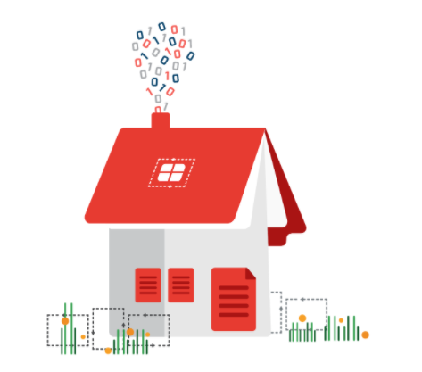
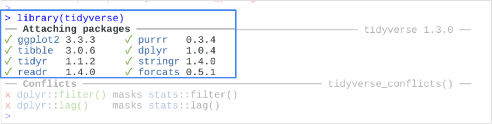
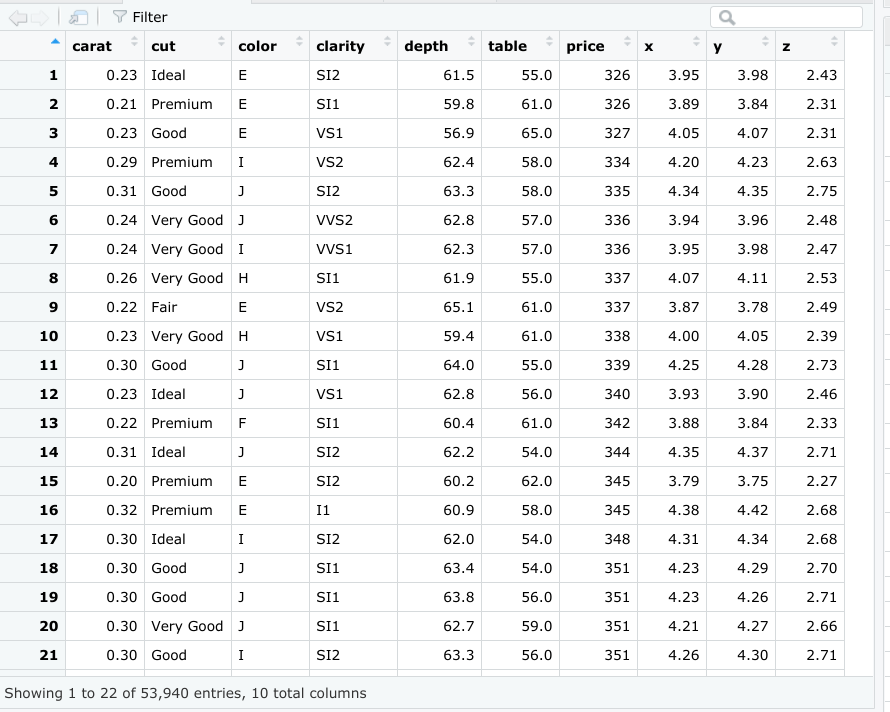
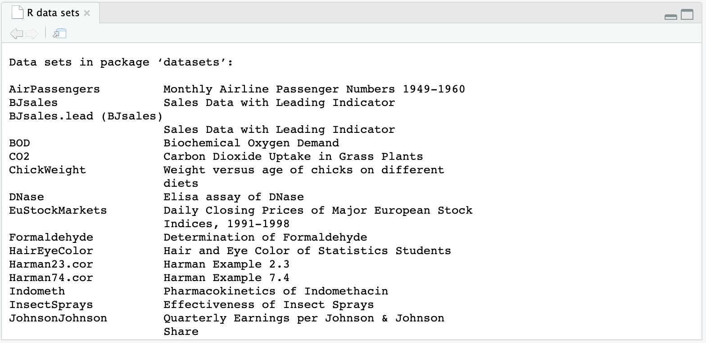
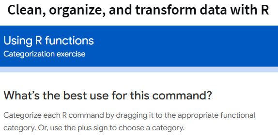
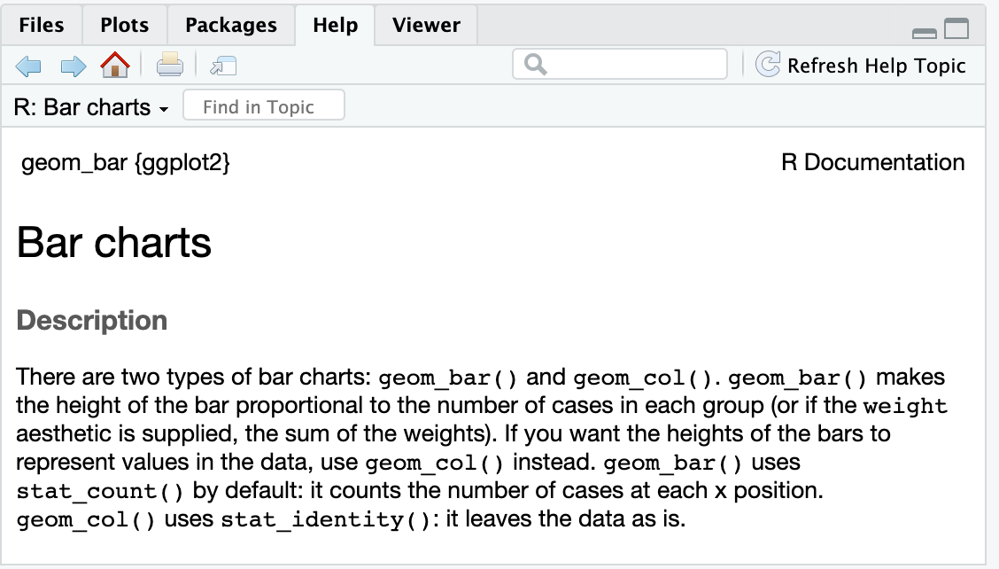
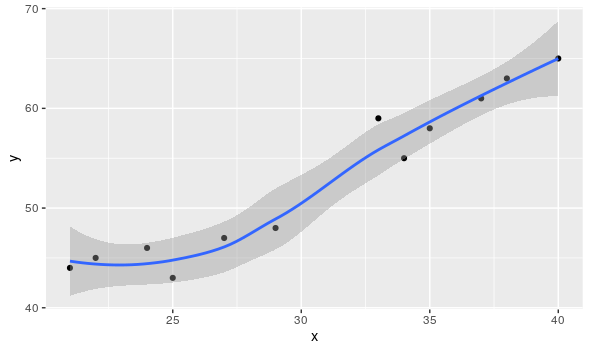
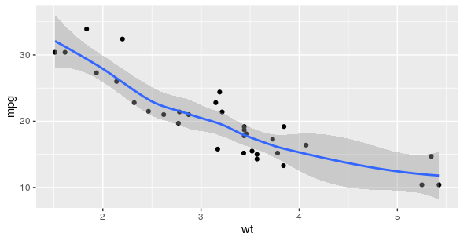
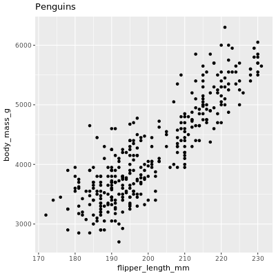

6 videos Total 35 minutes | Transcript | MCQs |
Introduction to the exciting world of programming •6 minutes | Hey there, data pro. You've come a long way since the beginning of your learning journey. Congratulations on your accomplishment. Just think of all the skills you've learned along the way. You now know how to use structured thinking to define a problem and ask the right questions; work with spreadsheets, databases, and tools like SQL to organize and transform data; clean your data to make sure it has integrity before you analyze it; create impactful visuals to illustrate key points; and craft a compelling story to communicate insights to stakeholders. That's an impressive list of skills, but we're not done yet. Your skills set's about to get even bigger. In this course, you'll learn about a new concept called programming and how you can use the R programming language to analyze your data. By now, you know that the data analysis process includes six phases: ask, prepare, process, analyze, share, and act. Now, we'll learn all about the R programming language and how it can help you in each phase of the process. When you're done, you'll be presented with an optional case study. The case study will give you the chance to solve a data analysis problem using all the skills you've learned in this program. You'll find out more about this project later on. Let's talk about computer programming. Computer programming refers to giving instructions to a computer to perform an action or set of actions. You can use different programming languages to write these instructions. You might choose a specific language based on the project you want to pursue or the problem you want to solve. The R programming language is super useful for organizing, cleaning, and analyzing data. If this is your first experience with computer programming, welcome. When I first started learning about data analysis, I didn't have a background in programming either. In fact, before I fell in love with data, I was trained as an opera singer. I also have a lot of friends that came into this field from the arts and learned about programming later in their career. R is a great place to start. Learning R for the first time can be challenging and even more empowering. A lot of the skills you've learned in this program will help you learn basic programming concepts. Take it one step at a time and go at your own pace. Just like in previous videos, you'll start with the basics and move forward from there. You've tackled tough challenges before and you always come out on top. You've got this. Let me introduce myself. My name's Carrie. I work as a research manager at Google. I lead a team that researches the best way to improve the performance of people in organizations. In other words, I help people work better and work smarter and help organizations function in a healthy and productive way. I first learned R as a junior data analyst, while I was working on a multi-year project about virtual work. We were looking at data on people's virtual work experiences and trying to understand how working remotely impacts performance. It was a complex project with a lot of data to sift through. I kept encountering problems and searching for better and faster ways to do things. This is when I became aware of the power of R. Whenever I got stuck, I'd learn a little more about R and discover a solution to my problem. I soon realized that R could help me do almost anything involving data even better and faster than I thought possible. Fortunately, there are tons of great online resources for R and a super supportive online community. If I had a question, I'd go online and find the answer. As the project progressed, I was able to learn more and more and become a much more effective data analyst. My teammates even started coming to me for advice about R. Realizing that I could continue to learn my skills at any stage in my career was an empowering experience. Learning R unlocked my ability to perform data analysis at the highest level. In your future career as a data analyst, you'll have the opportunity to continually learn and grow. To me, that might be one of the coolest aspects of the job. Learning R is one of the most rewarding parts of that growth process. I'm still learning new ways to use R all the time. Plus, you can apply these skills to other programming languages like Python, Julia, or JavaScript. There's no limit to how far you can go with programming. It even goes beyond data analysis. After I learned R, I found myself thinking about all kinds of projects I could use programming for, both at work and for fun. It opens up a whole new world of possibilities. Now, let's talk about what you're about to learn. We'll start off with an introduction to programming languages. Then we'll take a closer look at R itself and explore its main features and functions. We'll also cover some basic programming concepts and learn how to use them effectively in R. Next, we'll learn how to work with data in R. You'll discover how R can supercharge your data analysis skills and let you clean, transform, visualize, and report data in new and more powerful ways. Learning R will help you take your data analysis to the next level. It'll also look great on your resume. R is widely recognized as a key credential in entry- level job positions. Knowing how to use R will give you a big boost in your job hunt and will help you stand out as a new analyst. Coming up, we'll talk more about programming languages in general and how they can help you analyze your data. After that, we'll jump right into R. Before you know it, you'll be using R to power your data analysis. | Which skill is NOT mentioned as part of the data analysis journey in the transcript? - A) Asking the right questions
- B) Organizing and transforming data
- C) Creating machine learning models
- D) Crafting a compelling story
- Answer: C) Creating machine learning models
What programming language will you learn to use in this course to analyze data? - C) JavaScript
- D) Julia
- Answer: B) R
What is one of the six phases in the data analysis process, as mentioned in the transcript? - D) Report
- Answer: C) Analyze
According to Carrie, what was her background before she became interested in data analysis? - C) Mathematics
- D) Engineering
- Answer: B) Opera singing
What does computer programming refer to, based on the transcript? - A) Giving instructions to a computer to perform actions
- B) Designing computer hardware
- C) Testing software for bugs
- D) Using spreadsheets for analysis
- Answer: A) Giving instructions to a computer to perform actions
Why does Carrie believe R is useful for data analysis? - A) It is the only programming language available for data analysis.
- B) R is useful for organizing, cleaning, and analyzing data.
- C) It requires no programming knowledge to use.
- D) R was specifically designed for web development.
- Answer: B) R is useful for organizing, cleaning, and analyzing data.
What kind of project did Carrie work on when she first learned R? - A) A project involving virtual work and remote performance
- B) A project related to machine learning and AI
- C) A medical research project
- D) A personal finance project
- Answer: A) A project involving virtual work and remote performance
Which of the following is NOT a programming language mentioned in the transcript? - A) Python
- B) Julia
- C) JavaScript
According to the transcript, how will learning R benefit a job seeker? - A) R skills are highly recognized for entry-level data analyst positions.
- B) Knowing R guarantees a senior-level position.
- C) Learning R eliminates the need for SQL.
- D) R is the only language required in data analysis.
- Answer: A) R skills are highly recognized for entry-level data analyst positions.
What is the first topic covered in the course according to the transcript? - A) Data visualization with R
- B) Introduction to programming languages
- C) Advanced data analysis techniques
- D) Data cleaning in R
- Answer: B) Introduction to programming languages
|
Fun with R •5 minutes
ReflectFriendly reminder- the remainder of this video is a preview to show you what R can do, and what you'll be learning throughout this course. You do not need to follow along. Just sit back, relax, and enjoy the show. :) | Hi, great to see you again. When I first learned R, it was the visuals that really got me hooked. I still think it's so cool that you can write a little bit of code, press a button and, presto, out pops an awesome data visualization. Before we get into all the details, I thought it would be fun to give you a quick sneak peek and show you what R can do. What follows will be a preview of what you're going to learn. By the end of this course, you'll not only understand all this code, you'll be able to write and execute it as well. For now, just sit back, relax and enjoy the show. Let's start by loading a library and getting a dataset to work with. We can use the palmer penguins dataset, which contains size measurements for three penguin species that live on the Palmer Archipelago in Antarctica. This includes data on stuff like body mass, flipper length and bill length. The dataset has 344 rows of information sorted into eight columns. The palmer penguins data is popular with analysts and is great for fun exploration, visualization and teaching concepts. We'll see more of this data set later on in the course. Let's say we want to visualize the relationship between body mass and flipper length. You may guess the larger the penguin, the longer the flipper. We can find out for sure by creating a plot. Let's make a scatter plot. A scatter plot uses points to display the relationship between two variables. So the two variables were going to compare our body mass and flipper length. No need to memorize all these details right now. You'll have time to learn more about them later on. Let's check out the parts of this code and how they fit together. The first function starts the plot. If we run the code at this point, all we get is a blank plot. If we add some more code, R will put labels on each access of our plot and add lines for data. Body mass is on the y-axis and flipper length is on the x-axis, but the data points are not yet visible. To get the complete plot, we can add some more code that tells R how to represent our data. For example, we could use points, bars or lines. We'll use points to create a scatter plot. We can go further. For example, we can change how the plot looks. Let's change the color of all of the points to purple. You can hit the Up arrow to pull up the last piece of code you ran, so we'll do that now. And then we'll add in color equals purple inside geom point. Now we can hit Enter to run this. We can also add new information to the plot and use color to highlight it. Let's tell R to assign a different color to each species of penguin. This way we can link data points to each group of penguins. Gentoos are the largest. The legend just to the right of the plot shows us that the blue points refer to the Gentoos. R automatically creates a legend for the plot to help us understand the color-coding. R does everything you tell it to do and even does stuff you don't ask for. It's just that helpful. We can also use shape to highlight the different penguin species. Or we can use both color and shape. In addition to highlighting our data, we can also reorganize it. We can break our data down into smaller groups or subsets and create a plot for each subset. Let's say we want to focus on the data for each species. Facet functions let us create a separate plot for each species. Check this out. Facets are so great. We can even put text on our plot to point to specific data or communicate a message. Let's give our plot a title to clearly indicate its purpose. Finally, we can save our plot, so we can access or share it later on. Now, if we click on the Files tab, we'll find our file in the list. Let's open it up. Well, that's the end of the show. I hope you enjoyed it as much as I did. We were able to take a big dataset and quickly visualize some significant patterns. These are some of the basic functions in R. In other words, this is just the beginning. It's exciting to think of all the ways R can help you realize the full power of data analysis. As you move forward, you learn more about each of the functions we use to create our plots. By the end of this course, you'll be the one writing and executing all of this code. Coming up, we'll learn more about computer programming and how it can help you analyze your data. See you soon. | - What feature initially attracted the speaker to learning R?
- A) Data analysis capabilities
- B) Data visualization
- C) Coding efficiency
- D) Dataset management
- Answer: B) Data visualization
- What dataset is used as an example in the introduction to R?
- A) Titanic dataset
- B) Palmer Penguins dataset
- C) Iris dataset
- D) Antarctic Animals dataset
- Answer: B) Palmer Penguins dataset
- How many rows of information are in the Palmer Penguins dataset?
- A) 200
- B) 344
- C) 500
- D) 600
- Answer: B) 344
- In the example, which two variables are compared in a scatter plot?
- A) Body mass and flipper length
- B) Body mass and bill length
- C) Flipper length and species
- D) Bill length and body mass
- Answer: A) Body mass and flipper length
- What function does the code add to begin creating the plot?
- A) It plots data points
- B) It assigns colors to each species
- C) It creates a blank plot
- D) It labels the axes
- Answer: C) It creates a blank plot
- Which feature allows the user to assign a unique color to each penguin species in the plot?
- A) Axis labeling
- B) Faceting
- C) Color-coding with geom point
- D) Shape modification
- Answer: C) Color-coding with geom point
- What does R automatically create to help understand the color coding for different penguin species?
- A) A color scale
- B) A legend
- C) An axis label
- D) A grid line
- Answer: B) A legend
- What is the purpose of facet functions in R?
- A) To save the plot
- B) To highlight the data points
- C) To create separate plots for each subset of data
- D) To assign different shapes to data points
- Answer: C) To create separate plots for each subset of data
- What is suggested as a way to make the plot more informative?
- A) Adding a subtitle to the plot
- B) Adding text or a title to the plot
- C) Increasing the plot size
- D) Adding a gradient background
- Answer: B) Adding text or a title to the plot
- What will students be able to do by the end of the course?
- A) Analyze penguin populations
- B) Create and execute code for data visualization in R
- C) Memorize all plotting functions in R
- D) Import large datasets into R
- Answer: B) Create and execute code for data visualization in R
|
Carrie: Getting started with R •3 minutes | The advice I would give to someone just learning R is that mistakes are part of the process. Errors and error messages are part of the process. When I think about the people who are even better than I am in R, I've come to realize they're not necessarily smarter than I am, but they may be a little bit more persistent and delving a little bit deeper. Certainly compared to when I started, initially I'd see an error message and think, "I did it wrong, uh-oh, game over. " Now it's like, "That's just part of the game." When I started to get a little bit of exposure to what R looked like, I was like, "That seems too sophisticated. It seems like that probably is really hard." But the people who used it that I had met, we're always really enthusiastic about it and they felt like it had so many advantages over other software that you can use for running analyses. There were a lot of times before I used R where I might use spreadsheets or some other tool and I would be trying to hack at what really needed to happen. Sometimes I was using multiple tools because an individual tool couldn't really do all what I wanted it to do. But it's like I knew in my mind and yet it wasn't totally fluid, the execution of it. The more exposure I've gotten to R, the more I realize a lot of what I would try to do that way, I can just do within one program, and it can all interlock really fluidly. At first, I was really unconfident. I had a couple of scripts where I had some friends who were better at R, people I worked with who would sit down and help me go through and understand the code and so it felt really silly to ask them the simple question of like, "Okay, but why is a bracket here?" Or "Why would we do this?" But they were fortunately really patient people. Then at some point, our entire department said, really everybody needs to be using this because we need everyone on the same platform. We need consistency in our analyses. We need to be able to code review each other's analyses as well. We all took an online course together and that helped me feel really a lot more confident because it was walking through each step of what you needed to know, got an opportunity to practice, and then it felt like, "Okay, even if there's things I don't know, "I've made it through introduction, like I've made it through this next module so I do know something." Then once I started to apply it in my work, there would still be points where I was like, "Wait, I don't know how to solve this problem." Then I would talk to a friend, Google something and generally, I knew a lot more than I thought that I did and from that, I suddenly unlocked my ability to produce a whole lot of analyses quickly with the big dataset and also produce a whole lot of data visualizations really quickly using ggplot2. Hi, my name's Carrie and I'm a Research Manager within People Operations at Google. | What is the main piece of advice Carrie gives to someone learning R? - A. Avoid making mistakes at all costs.
- B. Learn to avoid error messages.
- C. Persistence is key, and errors are part of the learning process.
- D. Only use R if it seems easy to understand.
Answer: C
How does Carrie view error messages when working with R? - A. As signs of failure that stop her progress.
- B. As a normal part of the learning and coding process.
- C. As indications that R is too complex to use.
- D. As problems that should only be fixed by experts.
Answer: B
Which of the following did Carrie initially think about learning R? - A. It seemed too easy and unsophisticated.
- B. It seemed too complicated and difficult.
- C. It was no different from other tools like spreadsheets.
- D. It was only suitable for those in specialized fields.
Answer: B
What advantage of R does Carrie mention in comparison to other software? - A. It’s a tool for running all types of software.
- B. It allows her to use multiple tools simultaneously.
- C. It lets her perform all tasks within one program fluidly.
- D. It is only useful for simple analyses.
Answer: C
How did Carrie initially feel about asking for help with R? - C. Certain about her knowledge.
- D. Uninterested in improving.
Answer: B
Why did Carrie’s department decide everyone should use R? - A. To increase personal flexibility.
- B. To ensure consistency and ease of code review.
- C. To make analysis less challenging.
- D. To experiment with new software.
Answer: B
How did taking an online course with her department affect Carrie’s confidence? - A. It made her feel more uncertain about her skills.
- B. It gave her confidence by walking through each step.
- C. It convinced her to switch to another software.
- D. It discouraged her from learning more about R.
Answer: B
What benefit did Carrie experience after gaining more exposure to R? - A. She struggled more with simple questions.
- B. She stopped using data visualizations.
- C. She could produce analyses and visualizations more quickly.
- D. She required more help from colleagues.
Answer: C
What is Carrie's job role at Google? - A. Data Analyst
- B. Software Engineer
Answer: C |
Programming languages •5 minutes
QuestionProgramming languages can be used to reproduce and share your analysis.TrueFalseCorrect Programming languages can be used to reproduce and share your analysis. | Hi. Great to have you back. Earlier, you learned that programming means giving instructions to a computer to perform an action or set of actions. Even if this is your first time programming, you already have plenty of experience telling a computer what to do. For example, you've probably used a spreadsheet function to sort your data or perform calculations, or you might have used SQL to tell a computer how to pull data from a database or join two different data tables. Programming goes even further. It gives you the highest level of control over your data. SQL can communicate with databases, but a general-purpose programming language lets you create your own applications and build your own functions from scratch. To program, you first need to know a programming language. In this video, we'll learn about the basics of programming languages and how they can help you work with your data. Programming languages are the words and symbols we use to write instructions for computers to follow. You can think of a programming language as a bridge that connects humans and computers, and allows them to communicate. Programming languages have their own set of rules for how these words and symbols should be used, called syntax. Syntax shows you how to arrange the words and symbols you enter so they make sense to a computer. Coding is writing instructions to the computer in the syntax of a specific programming language. Just like the variety of human languages around the world, there's lots of different programming languages available to communicate with computers. There's a language for almost anything you want to do, from designing websites, to developing video games, to working with data. For example, Python is a general-purpose language that can be used for all sorts of things, from working with artificial intelligence to creating virtual reality experiences. Javascript works well for developing online apps and is an essential part of web browsers. Some other popular programming languages for data analysis include SAS, Scala, and Julia. Personally speaking, R is my favorite language for data analysis, but you might want to explore other languages as well. While programming languages can look different on the surface, they all share similar structures and coding concepts. Once you learn your first language, you'll find it easier to learn others. Coming up, we'll explore R's many capabilities. Before that, let's talk about some benefits of using any programming language to work with your data. I'll highlight three. Programming helps you clarify the steps of your analysis, saves time, and lets you easily reproduce and share your work. Let's start with clarity. Programming languages have specific rules and guidelines for giving instructions to the computer. When you're telling a computer what to do, your instructions have to be very clear. There can't be any inconsistency in the way you write code. If there is, the code won't work. Translating your thoughts into code forces you to figure out exactly how to write each step of your analysis and how all the steps fit together. It gives your analysis a level of precision that makes it really powerful. Using a programming language for data analysis also saves you lots of time. For example, take the process of cleaning and transforming your data. With one line of code, you can create a separate dataset without any missing values. With another line, you can apply multiple filters on your data. This lets you spend less time preparing your data and more time on the analysis itself. Finally, programming languages make it easy to reproduce your analysis. Data analysis is most useful when you can reproduce your work and share it with other people. They can double-check it and help you solve problems. Code automatically stores all of the steps of your analysis so you can reproduce, and share your work at anytime in the future, weeks, months, or even years later. Here's an example. Let's say you're working on a project. You've collected and cleaned your data and started your analysis, but the results don't add up. You suspect a mistake was made in the process. You'd like to discuss the issue with a teammate and get their feedback. If you used a spreadsheet, you both might have to redo the entire analysis to discover the error. There's no easy way to record and reproduce your steps in a spreadsheet, but if you use a programming language, all your work can be reproduced and shared in a moment, from loading the data, to creating visualizations, to reporting the results. Plus, you can easily update your analysis and fix any errors simply by changing the code. I hope that gives you a better understanding of what programming languages are all about. Next up, we'll check out R in more detail. See you soon.
| What does programming involve? - A) Writing essays for computer science
- B) Giving instructions to a computer to perform actions
- C) Designing hardware for computers
- D) Installing software on a computer
Answer: B) Giving instructions to a computer to perform actions
Which of the following is an example of programming experience mentioned in the transcript? - A) Using SQL to pull data from a database
- B) Developing mobile applications
- C) Creating a social media profile
- D) Writing research papers
Answer: A) Using SQL to pull data from a database
What is the main advantage of using a general-purpose programming language over SQL? - A) SQL can handle web design tasks
- B) General-purpose languages allow creating applications and custom functions
- C) SQL provides more control over databases than general-purpose languages
- D) General-purpose languages are faster at data queries than SQL
Answer: B) General-purpose languages allow creating applications and custom functions
What are programming languages described as in the transcript? - A) A tool for creating computer hardware
- B) A bridge between humans and computers for communication
- C) A way to simplify math calculations
- D) A method to enhance graphic design
Answer: B) A bridge between humans and computers for communication
What is syntax in a programming language? - A) The speed at which a program runs
- B) The rules for how words and symbols should be used in code
- C) The graphical interface of the code editor
- D) The storage capacity of a program
Answer: B) The rules for how words and symbols should be used in code
Which programming language is mentioned as being popular for web development? - D) Julia
Answer: C) JavaScript
According to the transcript, which language is the speaker’s favorite for data analysis? What is one benefit of programming languages in data analysis, as highlighted in the transcript? - A) They reduce the need for data collection
- B) They enable analysis clarity, time savings, and reproducibility
- C) They replace the need for teamwork
- D) They allow for instant data visualization without coding
Answer: B) They enable analysis clarity, time savings, and reproducibility
Why is programming useful for clarifying steps in data analysis? - A) Programming languages can guess what you mean if code is unclear
- B) Coding forces precise step-by-step instructions for clarity
- C) Coding allows for visualizations without any instructions
- D) Coding eliminates errors by automating all steps
Answer: B) Coding forces precise step-by-step instructions for clarity
How does using code help in detecting errors in data analysis? - A) By automatically redoing the analysis
- B) By recording every step, making it easy to trace and reproduce work
- C) By reducing the need to involve teammates in the analysis
- D) By preventing any errors from occurring
Answer: B) By recording every step, making it easy to trace and reproduce work
|
Introduction to R •6 minutes | Hello again. Now that we've talked about programming languages in general, let's get to know R. So what is R? R is a programming language frequently used for statistical analysis, visualization and other data analysis. Later on, you'll take a tour of Rstudio, which is a popular software environment for the R language. In this video, we'll discuss R's main features and functions and its advantages for data analysis. R is super cool. I'm excited for you to learn about it. R is based on another programming language named S. In the 1970s, John Chambers created S for internal use at Bell Labs, a famous scientific research facility. In the 1990s, Ross Oaxaca and Robert Gentleman developed R at the University of Auckland, New Zealand. The title R refers to the first names of its two authors and plays on a single- letter title of its predecessor S. Since then, R has become a preferred programming language of scientists, statisticians and data analysts around the world. There's lots of reasons why people who work with data love R. I want to share four with you. R is accessible, data-centric, open-source and has an active community of users.
First R is an accessible language for beginners. Lots of people without a traditional programming language learn R. I should know. I'm one of them. R really appeals to anyone who wants to solve problems that involve data. And that's one of the things that's so great about R. It's all about data. R is what's known as a data-centric programming language. It's specifically designed to make data analysis easier, more efficient and more powerful. Another awesome thing about R is that it's open source. Open source means that the code is freely available and may be modified and shared by the people who use it. Let's pause for a moment and unpack how amazing this is. First anyone can use R for free. Second, anyone can modify the code, fix bugs and improve it. In fact, over the years, lots of excellent programmers have made improvements and fixes to the R code. For example, anyone who knows the R language can create what's called an add-on package. We'll talk more about R packages later. For now, just know that literally thousands of R packages exist, and they were all built by people who wanted to solve specific problems. A lot of these packages are super useful for data analysts. As an R user, you now enjoy the benefit of the shared knowledge. And let me just add, the R community is the best. This vibrant, diverse and accessible community is so supportive of new learners. You can go online anytime to find answers to all your R questions. Check out websites like R for Data Science Online Learning Community and RStudio Community. On top of that, R users are all over Twitter and other social media. You'll discover tons of resources for professional networking, mentoring and learning. Now that we know more about the general benefits of R, let's talk about some specific situations when you might use it for data analysis. Here's three scenarios: reproducing your analysis, processing lots of data, and creating data visualizations.
First R can save and reproduce every step of your analysis. Earlier, we discussed how data analysis is most useful when you can easily reproduce your work and share it with others. In R, reproducing your analysis is as easy as pressing a button on your keyboard. Your code stores it forever. And you can share it with anyone at any time. Processing lots of data is also something R does really well, just like SQL. As you learned earlier spreadsheets organize projects in sheets or tabs. If you've ever had to deal with spreadsheet files that have tons of sheets or lots of data in each sheet, you know that things can start to move very slowly. Working with too much data in a spreadsheet can even cause crashes. R can handle large amounts of data much more quickly and efficiently. Finally R can create powerful visuals and has state-of-the-art graphic capabilities. As you've seen in this program, tools like spreadsheets and Tableau offer lots of options for visualizing your data. R's on another level. With only a small bit of code, you can create histograms, scatter plots, line plots and so much more. And that's just the beginning. If you work with more advanced packages, you can make some seriously impressive data visualizations. Learning R is a huge benefit to anyone interested in becoming a data analyst. As I mentioned earlier, knowledge of R will help you stand out as a job candidate. And as you keep moving forward, R will help you find solutions for more complex data problems. You can keep learning about R throughout your career as a data analyst. The sky's the limit when it comes to developing your data analysis skills. That's all for now. Coming up, we'll check out the RStudio environment together. Before you use RStudio, you need to download and install the basic R interface. You'll learn how to do that in an upcoming reading. Most analysts who work with the R language use the RStudio environment to interact with R, and not the basic interface. That's why we're focusing on RStudio in this program. Following this video, you'll find resources for downloading R and RStudio if you're interested in learning more. Bye for now. | 1. What is the primary use of the R programming language?- A) Web development
- B) Statistical analysis and data visualization
- C) Network security
- D) Game development
Answer: B) Statistical analysis and data visualization
2. Who created the original programming language, S, on which R is based?- A) Ross Ihaka and Robert Gentleman
- C) Guido van Rossum
- D) Larry Page
Answer: B) John Chambers
3. Where was R developed?- A) Bell Labs
- B) Google LLC
- C) University of Auckland, New Zealand
- D) Harvard University
Answer: C) University of Auckland, New Zealand
4. Which of the following is NOT a characteristic of R?- A) Data-centric
- B) Open-source
- D) Accessible for beginners
Answer: C) Proprietary
5. Why is R considered accessible to beginners?- A) It has a minimalistic interface.
- B) It does not require any coding knowledge.
- C) It appeals to people who want to solve data-related problems without prior programming experience.
- D) It uses a graphical interface for all operations.
Answer: C) It appeals to people who want to solve data-related problems without prior programming experience.
6. What does “open-source” mean in the context of R?- A) R can only be used with a paid license.
- B) R code is freely available, modifiable, and shareable by users.
- C) Only certified developers can access R’s code.
- D) R code is private and cannot be modified.
Answer: B) R code is freely available, modifiable, and shareable by users.
7. What is an add-on package in R?- A) A collection of pre-written R commands to extend functionality
- B) An update required to use R
- C) A graphical user interface for R
- D) A hardware component for processing data in R
Answer: A) A collection of pre-written R commands to extend functionality
8. Which of these is a benefit of R’s active community?- A) Increased job prospects for users
- B) Consistent updates from the community
- C) Access to answers and resources on platforms like RStudio Community
- D) All of the above
Answer: D) All of the above
9. In R, what makes it easy to reproduce your data analysis?- A) All code can be saved and shared to recreate analysis steps.
- B) R automatically publishes results online.
- C) R only allows fixed analysis templates.
- D) R includes a “Reproduce” button for all projects.
Answer: A) All code can be saved and shared to recreate analysis steps.
10. Why is R more efficient than spreadsheets when working with large amounts of data?- A) It has automatic memory allocation.
- B) It handles large datasets faster and avoids crashes common in spreadsheets.
- C) It has built-in artificial intelligence to manage data.
- D) It directly converts all data to images.
Answer: B) It handles large datasets faster and avoids crashes common in spreadsheets.
11. What are some of the visualizations you can create with R?- A) Histograms, scatter plots, and line plots
- B) 3D animations only
- C) HTML-based charts only
- D) Augmented reality models
Answer: A) Histograms, scatter plots, and line plots
12. What is RStudio in relation to R?- B) A software environment commonly used to work with R
- C) A proprietary competitor to R
- D) A hardware device that supports R
Answer: B) A software environment commonly used to work with R
|
Intro to RStudio •7 minutes
ReflectWould you like to set up an RStudio account to follow along with the steps in this video?Complete the next Hands-On Activity: Cloud access to RStudio, and then click Continue below to play the rest of this video.
ReflectIf you would like to preview or install the dataset used in this video, refer to the palmerpenguins package for the detailed information.
ReflectNote: At this point of following along you may not have installed the 'ggplot' package, which would normally allow you to generate a plot for the penguins data set.In order for the upcoming plot algorithm to work first type and execute each line of the syntax below, which will install the 'tidyverse' package:install.packages("tidyverse") library(tidyverse) Once the above library is installed and loaded the ggplot syntax coming up next will successfully generate a plot. You will have a much more in-depth exploration of ggplot parameters and other data visualizations in the upcoming video lecture, Visualizations in R and tidyverse.
QuestionIn RStudio, you can execute code in both the R console pane and the source editor pane.TrueFalseCorrect In RStudio, you can execute code in both the R console pane and the source editor pane. | Hey there. It's time to take our tour of RStudio. The examples we'll look at are from RStudio Cloud, but RStudio works in a similar way across all platforms. Feel free to use the platform that works best for you. Later on if you want to learn more, you'll find resources on how to download and install RStudio on your own device. RStudio's an IDE or integrated development environment. This means that RStudio brings together all the tools you might want to use in a single place. The R console which we explored earlier is one part of this environment. RStudio also includes an editor for writing code, and tools for managing your data and creating visuals. RStudio is built specifically for use with R. It'll help maximize your productivity as a data analyst. Data analysis is like driving a car. You can think of R and RStudio as different parts of this car. R is like the car engine. RStudio is kind of like the accelerator, the steering wheel, and dashboard all-in-one. It lets you tell the engine what to do and helps you get to where you want to go. Just as a speedometer and navigation system make driving much easier, RStudio's environment makes using R much easier. In an earlier reading, you learned how to access RStudio. So let's log into RStudio now and explore. The RStudio environment has four main windows called panes. Each pane helps you perform different functions. The first time you open RStudio, you'll see three panes. A fourth pane is hidden by default, but it's easy to open. Just click on File in the menu, then select New File and R Script. RStudio has lots of keyboard shortcuts. To learn more check out Keyboard Shortcuts Help. You can make the panes smaller or larger by clicking on the minimize or maximize buttons at the upper right of each pane. You can also click and drag the borders of the panes to adjust their size. Click on the Panes button for more feature options. Now that we've got all four panes open, let's explore each of them. We'll start on the lower left and move clockwise from there. You might recognize the R console from an earlier reading. As a quick refresher, the console is the place where you give commands to R. For example, we can tell R to show us a summary of the penguins data that we used in an earlier video to create visuals. You'll need to install and load the palmer penguins dataset if you haven't done so already. Above the console in the upper left is the source editor pane. You'll use the source editor when working with R Scripts. There are two main ways of writing code in RStudio: using the console or using the source editor. You can type commands directly into the console, but they'll be forgotten when you close your current session. As we've discussed, it's important to be able to reproduce and share all the steps of your analysis. If you save your script in the editor, you can access your work again at any time and show others how you did it. The source editor and the console also work together in RStudio. When you execute code in the editor, the code automatically appears in the console. If you're working on a long analysis, this makes it easy to execute the entire code all at once or run specific sections of it as you go along. Let's run some code in the editor and check it out. Pro tip: Always keep in mind that R is case-sensitive. Here we use a capital V for the View function. Next, let's go to the Environment pane in the upper right. Here you'll find all the data you currently have loaded and can easily organize and save it. For example if you import data from a spreadsheet, it'll be visible in the Environment pane. You can view each object in the Environment pane by clicking on it. You can also toggle between a List view and a Grid view. To the right of the Environment tab, you'll find the History tab. All your previous commands are saved here and they're easy to search and re-execute. You'll find the most recent line of code at the bottom of the list. You can copy any line to the command console by double-clicking it. In the lower right, you'll see a pane that has tabs for Files, Plots, Packages, and Help. The Files tab gives you access to your file directory and shows the contents of the current working folder. You can easily find and manage all your files and create new project folders. Next is the Plots tab. If we create a plot, the result appears here. For example, we can create a scatter plot with the penguins dataset we used earlier. You'll learn more about creating plots in RStudio later on. Earlier, we talked about R packages which are custom solutions to data problems developed by R users. RStudio gives you access to a library of R packages known as the tidyverse. You can upgrade, install, and manage your library in the Packages pane. Packages loaded in your current session have a check mark. Later on, we'll explore the tidyverse in more detail. Finally, click on the Help tab. Here you can find helpful resources for R and RStudio. There are tons of resources out there to help answer all your questions. Be sure to take advantage of them. That's our tour of RStudio. We're just scratching the surface of what RStudio can do. Soon you'll get to explore RStudio in more detail. Speaking as a data professional, I love working in RStudio. It makes my work so much easier, faster, and better. Congratulations on finishing another step in your data analyst learning journey. Coming up, we'll learn some basic programming concepts. Then we'll start working with R. For those of you who are new to programming, you're about to write your first lines of code. See you then. | What type of software is RStudio? - A) Data analysis software
- B) Programming language
- C) Integrated development environment (IDE)
- D) Database management system
- Answer: C) Integrated development environment (IDE)
In RStudio, which pane allows you to write and save code that can be accessed later? - C) Environment pane
- D) History pane
- Answer: B) Source editor
What is the function of the R Console in RStudio? - A) Saving code for later use
- B) Installing packages
- C) Executing commands and viewing output
- D) Managing files and directories
- Answer: C) Executing commands and viewing output
Which pane in RStudio shows the data you currently have loaded? - A) Console
- B) Source editor
- D) Files pane
- Answer: C) Environment pane
What tab in the lower-right pane of RStudio shows visualizations such as scatter plots? - C) Packages tab
- D) Help tab
- Answer: B) Plots tab
Which statement best describes the relationship between R and RStudio? - A) RStudio is the engine that performs data processing, and R is the dashboard.
- B) R is a data visualization tool, while RStudio manages code.
- C) R is like the engine, while RStudio is like the steering wheel, dashboard, and accelerator.
- D) RStudio is used to install packages, and R is used to view help files.
- Answer: C) R is like the engine, while RStudio is like the steering wheel, dashboard, and accelerator.
Where can you find previously executed commands in RStudio? - A) Console
- B) Environment pane
- C) Source editor
Which tab in RStudio gives access to a library of R packages, such as the tidyverse? - D) Environment
- Answer: C) Packages
What happens to code typed directly into the console after closing the RStudio session? - A) It is saved automatically in a script.
- B) It is saved to the History pane.
- C) It is forgotten when the session ends.
- D) It is copied to the Environment pane.
- Answer: C) It is forgotten when the session ends.
Which of the following actions can be performed in the Environment pane? - C) Writing code
- D) Accessing the file directory
- Answer: B) Managing loaded data
|
|
|
|
8 readings Total 85 minutes |
|
|
Course syllabus •10 minutes | Course syllabusIn previous courses, you learned how to use structured thinking to solve business problems; prepare, clean, transform, and analyze data in spreadsheets and databases; and tell effective data stories. As part of your growing skillset, you also learned how to create dynamic and interactive data visualizations in Tableau. Up until now, the skills you learned were closely tied to the features and capabilities available in spreadsheets, SQL databases, and Tableau. But what if you want to work with your data in more custom ways? Or what if the standard tools don’t have the exact functionality you need? This is when the R programming language can be super helpful. Using R, you will gain additional flexibility and control over your data and analysis.
- Foundations: Data, Data, Everywhere
- Ask Questions to Make Data-Driven Decisions
- Prepare Data for Exploration
- Process Data from Dirty to Clean
- Analyze Data to Answer Questions
- Share Data through the Art of Visualization
- Data Analysis with R Programming (this course)
- Google Data Analytics Capstone: Complete a Case Study
In this course, you will learn how to use the R programming language to work with your data without tool limitations. You will get plenty of practice using R for statistical analysis, and RStudio—an integrated developer environment (IDE) for R that you will use to create advanced data visualizations with lots of detail. R makes it easier to present your data with beautiful, artistic style. A few other advantages of R include its: - Popularity: R is frequently used for data analysis
- Tools: R has a convenient library of ready-to-use tools for data cleaning and analysis
- Focus: R was created with statistics in mind; data analysts can conveniently use a rich library of statistical routines
- Adaptability: R adapts well for use in both machine learning and data analysis projects
- Availability: R is an open source programming language
After you get comfortable and more confident using R and RStudio, you might find that you are curious to learn and add even more programming languages to your skillset (and resume). Pretty exciting, right? Course contentCourse 7 – Data Analysis with R Programming - Understanding the basics of R: R is a programming language that can be used to perform tasks in every phase of the data analysis process. In this part of the course, you will learn about R and RStudio, an integrated developer environment (IDE) for R. You will explore the benefits of using RStudio to work with R. RStudio enables you to easily leverage the features and functionality of R.
- Programming using RStudio: In this part of the course, you will explore the fundamental concepts associated with R. You will learn about functions and variables that you can use in your calculations and other programming. You will also learn about R packages, which are collections of R functions, code, and sample data that you can use in RStudio.
- Working with data in R: The R programming language was designed to work with data at all stages of the data analysis process. In this part of the course, you will examine how R can help you structure, organize, and clean your data through functions and other processes. You will learn about data frames and how to work with them in R. You will also revisit the concept of data bias and how you can use R to address it.
- Visualizations, aesthetics, and annotations: R is a great tool for creating detailed visualizations. In this part of the course, you will learn how to use R to generate and troubleshoot visualizations. You will also explore the features of R and RStudio that can help you improve the aesthetics of your visualizations. You will learn how to annotate visualizations and save the changes.
- Documentation and reports: R has a number of different options to explore when you are ready to save and present your analysis. In this part of the course, you will explore R Markdown, a file format for making dynamic documents with R. You will learn how to format and export R Markdown and incorporate R code chunks in your documents.
- Course challenge: At the end of the course you will apply everything you have learned in the Course Challenge. The Course Challenge will ask you questions about the key skills you have been practicing and will give you an opportunity to demonstrate those skills in three scenarios.
Are you already familiar with R programming?If you have used R and RStudio before, you might find the first two modules of this course a review of basic topics that you already understand. Feel free to skip these foundational videos and readings and proceed to the module challenges for Module 1 and Module 2. The module challenges will help prepare you for the course challenge at the end of this course. To earn the certificate, you need to score 80% or higher on all graded activities in the program. What to expectYou can expect to finish this course in about four to five weeks. That involves completing all the activities, including: - Videos of instructors teaching new concepts and demonstrating the use of tools
- In-video questions that pop up during or at the end of a video to check your learning
- Readings to introduce new ideas and build on the concepts from the videos
- Discussion forums to discuss, explore, and reinforce new ideas for better learning
- Discussion prompts to promote thinking and engagement in the discussion forums
- Qwiklabs to introduce real-world, on-the-job situations, and the tools and tasks to complete assignments
- Practice quizzes to prepare you for graded quizzes
- Hands-on activities to reinforce learned skills for the graded quizzes
- Graded quizzes to measure your progress and give you valuable feedback
Hands-on activities promote additional opportunity to build your skills, so try to get as much out of them as possible. Assessments are based on the approach taken by the course to offer a wide variety of learning materials and activities that reinforce important skills. Graded and ungraded quizzes will help the content sink in and reinforce important skills. Ungraded practice quizzes are a chance for you to prepare for the graded quizzes, and both the graded and ungraded quizzes can be taken more than one time. As a quick reminder, this course is designed for all types of learners, so no degree or prior experience is required. Everyone learns differently, and the Google Data Analytics Certificate has been designed with that in mind. Personalized deadlines are just a guide, so feel free to work at your own pace. There is no penalty for late assignments. If you prefer, you can extend your deadlines by returning to Overview in the navigation pane and clicking Switch Sessions. If you already missed previous deadlines, click Reset my deadlines instead. If you would like to review previous content or get a sneak peek of upcoming content, you can use the navigation links at the top of this page to go to another course in the program. When you pass all the required assignments, you will be on track to earn your certificate. Tips- Try to complete all the activities in order, since new information always builds on previous lessons.
- Treat every task as if it is real-world experience. Have a mindset that you are working at a company or in an organization as a data analyst. This will help you apply what you learn in this program to the real world.
- Repeat demonstrated tasks on your own for extra practice and speed. For example, after you follow along with a video once or twice to perform the demonstrated tasks, try performing the same tasks without playing the video and receiving help from the instructor’s prompts.
- Even though they aren’t graded, be sure to participate in and complete all of the practice activities. They will help you build a strong foundation as a data analyst and prepare you for the graded assessments.
- Take advantage of all the additional resources provided, including discussion forums and links to external articles for more information.
- When you encounter useful links in the course, remember to bookmark them so you can refer to the information for study or review.
- Additional resources are free, but some sites place limits on how many articles you can access for free each month. Sometimes you can register on the site for full access, but you can always bookmark a resource and come back to view it later.
- Maximize the value of hands-on activities. Hands-on activities supplement the demonstrated tasks by encouraging additional practice with similar scenarios. A programming language’s syntax will become more natural to you the more you practice using it.
- Create a notebook or document to keep track of things to remember about the R syntax. This will become a handy and personalized reference that you can use throughout the rest of the program and anytime later.
| Which of the following is NOT a tool you previously learned in the Google Data Analytics program? - A) R
- B) SQL databases
- C) Spreadsheets
- D) Tableau
- Answer: A) R
Which programming language is introduced in this course to provide more flexibility and control over data analysis? - C) SQL
- D) Java
- Answer: B) R
Which IDE is used to work with the R programming language in this course? - A) PyCharm
- B) Jupyter Notebook
- D) Visual Studio Code
- Answer: C) RStudio
What is one advantage of using R for data analysis? - A) It has limited libraries for data visualization
- B) It is primarily used for creating basic spreadsheets
- C) It includes a rich library of statistical routines
- D) It is a closed-source programming language
- Answer: C) It includes a rich library of statistical routines
Which course follows "Data Analysis with R Programming" in the Google Data Analytics program? - A) Process Data from Dirty to Clean
- B) Google Data Analytics Capstone
- C) Foundations: Data, Data, Everywhere
- D) Share Data through the Art of Visualization
- Answer: B) Google Data Analytics Capstone
Which file format does R support for creating dynamic documents with code chunks and formatted text? - C) R Documentation
- D) R Script
- Answer: B) R Markdown
What feature is NOT included in the R programming language according to this course? - A) It has tools for data cleaning and analysis
- B) It adapts well to machine learning projects
- C) It is proprietary software
- D) It is frequently used for statistical analysis
- Answer: C) It is proprietary software
What is suggested to improve retention and practice of R programming skills throughout the course? - A) Reviewing only graded quizzes
- B) Avoiding hands-on activities
- C) Creating a notebook to track R syntax
- D) Skipping video demonstrations
- Answer: C) Creating a notebook to track R syntax
Which of the following statements is true regarding deadlines in this course? - A) Deadlines are strict and cannot be extended
- B) Deadlines are a guide, and there is no penalty for late submissions
- C) Only the final course challenge has a flexible deadline
- D) Missed deadlines require retaking the course
- Answer: B) Deadlines are a guide, and there is no penalty for late submissions
What activity is NOT mentioned as part of the course structure? - A) Hands-on activities
- B) Qwiklabs exercises
- C) Mandatory daily quizzes
- D) Practice quizzes
- Answer: C) Mandatory daily quizzes
|
The R-versus-Python debate •10 minutes | The R-versus-Python debatePeople often wonder which programming language they should learn first. You might be wondering about this, too. This certificate teaches the open-source programming language, R. R is a great starting point for foundational data analysis, and it has helpful packages that beginners can apply to projects. Python isn’t covered in the curriculum, but we encourage you to explore Python after completing the certificate. If you are curious about other programming languages, make every effort to continue learning. Any language a beginner starts to learn will have some advantages and challenges. Let’s put this into context by looking at R and Python. The following table is a high-level overview based on a sampling of articles and opinions of those in the field. You can review the information without necessarily picking a side in the R vs. Python debate. In fact, if you check out RStudio’s blog article in the Additional resources section, it’s actually more about working together than winning a debate. Languages | R | Python | Common features | - Open-source - Data stored in data frames - Formulas and functions readily available - Community for code development and support | - Open-source - Data stored in data frames - Formulas and functions readily available - Community for code development and support | Unique advantages | - Data manipulation, data visualization, and statistics packages - "Scalpel" approach to data: find packages to do what you want with the data | - Easy syntax for machine learning needs - Integrates with cloud platforms like Google Cloud, Amazon Web Services, and Azure | Unique challenges | - Inconsistent naming conventions make it harder for beginners to select the right functions - Methods for handling variables may be a little complex for beginners to understand | - Many more decisions for beginners to make about data input/output, structure, variables, packages, and objects - "Swiss army knife" approach to data: figure out a way to do what you want with the data |
Additional resources For more information on comparing R and Python, refer to these resources: Key takeawaysCertain aspects make some programming languages easier to learn than others. But, that doesn’t make the harder languages impossible for beginners to learn. On the flip side, a programming language’s popularity doesn’t always make it the best language for beginners either. R has been used by professionals who have a statistical or research-oriented approach to solving problems; among them are scientists, statisticians, and engineers. Python has been used by professionals looking for solutions in the data itself, those who must heavily mine data for answers; among them are data scientists, machine learning specialists, and software developers. As you grow as a data analytics professional, you may need to learn additional programming languages. The skills and competencies you learn from your first programming experience are a good foundation. That's why this course focuses on the basics of R. You can develop the right perspective, that programming languages play an important part in the data analysis process no matter what job title you have. The good news is that many of the concepts and coding principles that you will learn from using R in this course are transferable to other programming languages. You will also learn how to write R code in an Integrated Development Environment (IDE) called RStudio. RStudio allows you to manage projects that use R or Python, or even a combination of the two. Refer to RStudio: A Single Home for R & Python for more information. So, after you have worked with R and RStudio, learning Python or another programming language in the future will be more intuitive. For a better idea of popular programming languages by job role, refer to Ways to learn about programming. The programming languages most commonly used by data analysts, web designers, mobile and web application developers, and game developers are listed, along with links to resources to help you start learning more about those languages. | 1. Which programming language is taught in this certificate program? a) Python
b) JavaScript
c) R
d) SQL Answer: c) R
2. Which of the following statements is true regarding both R and Python? a) Both are open-source and support data frames.
b) Only R has community support.
c) Both are only suitable for data visualization.
d) Only Python supports data manipulation packages. Answer: a) Both are open-source and support data frames.
3. What is a unique advantage of R according to the text? a) Integrates easily with cloud platforms
b) Known for a "Swiss army knife" approach to data
c) Has packages specifically for data manipulation and visualization
d) Simple naming conventions for functions Answer: c) Has packages specifically for data manipulation and visualization
4. What is a unique challenge for beginners learning R? a) Syntax is overly complex for data manipulation
b) Inconsistent naming conventions make it harder to select functions
c) Too few packages available for data analysis
d) Lack of community support Answer: b) Inconsistent naming conventions make it harder to select functions
5. Which programming language is associated with the “Swiss army knife” approach to data? a) R
b) SQL
c) Python
d) Java Answer: c) Python
6. What is the primary purpose of RStudio as described in the note? a) To manage projects that use R only
b) To serve as an IDE that supports both R and Python
c) To provide only data visualization features
d) To automatically translate R code to Python Answer: b) To serve as an IDE that supports both R and Python
7. Which group of professionals is most likely to use R for data analysis? a) Game developers
b) Web designers
c) Statisticians and scientists
d) Mobile app developers Answer: c) Statisticians and scientists
8. According to the note, why might learning Python after R be more intuitive? a) RStudio automatically translates R code to Python
b) Many concepts and coding principles from R are transferable to Python
c) Python syntax is almost identical to R syntax
d) R is more complex, making Python seem easier in comparison Answer: b) Many concepts and coding principles from R are transferable to Python
9. What does RStudio’s blog suggest about the R vs. Python debate? a) R is superior to Python
b) Python is easier to learn than R
c) It’s more about collaboration than competition
d) R should only be used for data science Answer: c) It’s more about collaboration than competition
10. Which resource would provide an overview of popular programming languages by job role? a) Ways to learn about programming
b) RStudio Formats page
c) The R for Data Science book
d) The Shiny tutorial from RStudio Answer: a) Ways to learn about programming |
Learning Log: Get ready to explore R •20 minutes | Learning Log: Get ready to explore R
Overview
So far, you’ve learned about data management, analysis, and visualization. In this upcoming course, you will learn the fundamentals of R and how it can be used to perform the same data analysis steps you already know. Now, you’ll complete an entry in your learning log considering R as a tool for data analysis. By the time you complete this entry, you will be ready to start learning this new and exciting tool! R you ready?
Before you start writing your learning log entry in the template linked below, let’s discuss what exactly R is. R is a programming language used for statistical analysis, visualization, and other data analysis. As a data analyst, you will use R to complete many of the tasks associated with the data analysis process. Understanding how it works and why you use it is crucial to developing a mastery of data analytics. Like the other tools you have already learned in this program, R will be an important part of your data analysis toolkit. You don’t need any previous experience with R for this course; you’ll get a chance to learn the basics and practice writing R code yourself. Then, you can even try using R for your capstone project later! In the learning log template below, you’ll get a chance to reflect on learning R and what you’re most excited about for this course. 
Access your learning logTo use the template for this course item, click the link below and select “Use Template.” Link to learning log template: Get ready to explore R OR If you don’t have a Google account, you can download the template directly from the attachment below. Learning Log Template_ Get ready to explore R DOCX File 
Reflection
Take a moment to reflect on learning about R. In your learning log template, write 2-3 sentences (40-60 words) in response to each question below: - Which parts of R are you excited to learn about?
- Which parts seem most challenging?
When you’ve finished your entry in the learning log template, make sure to save the document so your response is somewhere accessible. This will help you continue applying data analysis to your everyday life. You will also be able to track your progress and growth as a data analyst. - What made you decide to learn about R?
I chose to learn R because it is recommended in the Google Data Analytics Professional Certificate and is essential for data analysis. Learning R will allow me to perform powerful data analysis tasks and gain skills relevant to the data analytics field. - Which parts of R are you excited to learn about? Which parts might seem difficult?
I’m excited to explore data visualization in R, as it allows for creating meaningful, insightful graphics. However, I anticipate that the analysis process might be challenging, given R’s complexity in handling detailed data transformations and statistical methods.
|
| 1. What is the main purpose of learning R in this course?- A) To gain basic knowledge of computer programming.
- B) To learn advanced machine learning techniques.
- C) To apply data analysis, statistical analysis, and visualization skills.
- D) To understand the fundamentals of network security.
Answer: C) To apply data analysis, statistical analysis, and visualization skills. 2. Which of the following tasks is R NOT specifically mentioned to help with in the course?- A) Statistical analysis
- B) Data visualization
Answer: C) Data collection 3. What should students do with the learning log template to start their entries?- A) Print the template and write by hand.
- B) Click the provided link and select “Use Template.”
- C) Send an email request to receive the template.
- D) Submit a completed version to their instructor immediately.
Answer: B) Click the provided link and select “Use Template.” 4. What is NOT a requirement before starting the R course?- A) Prior experience with R
- B) A Google account to access the template
- C) Basic knowledge of data analysis concepts
- D) Willingness to learn R from the basics
Answer: A) Prior experience with R 5. What should be included in the learning log entry reflections?- A) Detailed explanations of each function in R
- B) 2-3 sentences (40-60 words) about the exciting and challenging aspects of learning R
- C) A full-page essay on the importance of R
- D) A summary of all previous data analysis experiences
Answer: B) 2-3 sentences (40-60 words) about the exciting and challenging aspects of learning R 6. How will using the learning log template help students in the long term?- A) It helps track their progress and growth as a data analyst.
- B) It allows them to practice writing essays.
- C) It replaces other data analysis tools.
- D) It serves as a submission for the final course grade.
Answer: A) It helps track their progress and growth as a data analyst. 7. What is the tone used in the question, "R you ready?"- A) Informative
- B) Motivational
Answer: C) Humorous 8. Which activity is NOT mentioned as a use of R in the course?- A) Performing statistical analysis
- B) Creating visualizations
- C) Conducting network analysis
- D) Working on a capstone project
Answer: C) Conducting network analysis |
Ways to learn about programming •10 minutes | Ways to learn about programmingWriting programming language code can be an exciting and rewarding experience. The programming field has a long history of people helping each other improve their skills and develop best practices. You will focus on the R programming language in this course, but in the future you might choose to pursue additional programming languages based on your interests and professional goals. This reading is a general guide to help you decide which programming languages are best suited for you. 
Popular programming languages by profession Let’s go through some potential job titles you might encounter and the most popular programming languages used in those professions. Also included is a list of additional resources for you to explore and learn more about each of the programming languages introduced. Data analystA data analyst collects, transforms, and organizes data to draw conclusions, make predictions, and drive informed decision-making. The most popular programming languages used by data analysts are R and Python. R offers convenient statistical features for data analysis and is useful for creating advanced data visualizations. Check out these resources to learn more about R: Python is a general-purpose language that you can use to create what you need for data analysis. Here are a few resources to begin learning Python: Kaggle is an online repository of various datasets that can be used in both R and Python. It's a robust platform that regularly hosts solution-based competitions using data sets in high-interest industries. Learners may also explore a vast trove of data modeling discussions, trending plug-in models, and useful code snippets. Here are some great resources to get started in Kaggle: - Datasets: explore and download a vast collection of data sets while up-voting your favorite collection.
- Competitions: commit individually or collaborate in a team towards data competitions for the possibility of financial rewards. Even without winning the competitions, this is a great way to network with other analysts.
- Learn: use this resource for an additional perspective on data visualization, linear regression techniques, or time series charting code.
Web designerA web designer is responsible for the styling and layout of web pages containing text, graphics, and video. Web designers generally use Hypertext Markup Language v5 (HTML5) and Cascading Style Sheets (CSS) to create web pages. HTML5 provides structure for web pages and is used to connect to hosting platforms. Learn more about HTML5 and CSS using these resources:
CSS is used for web page design and controls graphic elements (color, layout, and font) and page presentation on multiple devices (large screens, mobile screens, and printers). Check out these cheat sheets for CSS:
Mobile application developerA mobile application developer uses programming to create applications used on laptops, mobile phones, and tablets. The most popular programming languages for mobile application developers are Swift, Java, and C#. Swift (for Apple platforms) is an open source scripting language for macOS, iOS, watchOS, and tvOS. Its main goal is to make applications run faster. Browse these resources for more information about Swift:
- Swift.org: an open source community with resources to learn how to use Swift, including videos and sample code
- Swift developer site: an Apple developer website with information for developers who want to use Swift
- Swift development resources: Apple’s collection of documentation, sample code, videos, and recommended books
Java (for Android devices) is the official language for Android development. The article I want to develop Android apps - which languages should I learn? explores some other languages used for Android development. Check out these resources for Java:
C# (pronounced C-sharp) is an object-oriented programming language that is widely used to create mobile apps in the .NET open source developer platform. Xamarin extends the .NET platform with a framework for developers to create cross-platform mobile apps for both iOS and Android. Here are a few resources to help you learn C#:
Web application developerA web application developer designs and develops network applications used across the web. The most popular programming languages used by web application developers are Java, Python, Ruby, and PHP. Java is widely used to create enterprise web applications that can run on multiple clients. Java’s main strength is its “Write Once, Run Anywhere” (WORA) approach.Browse these resources to learn more about Java:
Python is a general-purpose programming language. Check out the Python resources listed in the data analyst section. Ruby is a general-purpose, object-oriented programming language used for web application development. Ruby isn't the same as Ruby on Rails, which is an open source web application framework that runs using Ruby. Browse these resources to learn more about Ruby:
- Ruby news: information about the latest Ruby releases and links to other resources
- Ruby documentation: includes guides, tutorials, and reference material to help you learn more about Ruby
- Ruby programmer’s guide: a tutorial and reference guide for Ruby
- Learn Ruby from Codecademy: a website with free basic interactive lessons, and additional activities that can be accessed with a monthly subscription
PHP is a scripting language particularly suited for web application development. It was based on Perl, another programming language. PHP is simple, flexible, and relatively easy to learn. Check out these resources to learn more about PHP:
Game developerA game developer is an application developer who specializes in video game creation. Game developers most commonly use the programming languages C# and C++. C# is an object-oriented programming language that is widely used to create games. Check out the C# resources listed in the mobile application developer section. C++ is an extension of the C programming language that is also used to create console games, like those for Xbox. Browse more information about C++:
Tips for learning programming languagesHere are a few tips to follow when you start learning a new programming language: - Define a practice project and use the language to help you complete it. This makes the learning process more practical and engaging.
- Keep previous concepts and coding principles in mind. Many of these are transferable between programming languages. So, after you have learned one language, learning a second or third programming language tends to be much easier.
- Create and keep good notes and cheat sheets in whatever format (handwritten or typed) that works best for you.
- Create an online filing system for information that you can easily access while you work in various programming environments.
| What is the primary focus of the course mentioned in the reading? - A) Python
- B) R programming
- C) Java
- D) C++
Answer: B) R programming
Which programming languages are most popular among data analysts? - A) R and Java
- B) Python and C#
- D) HTML5 and CSS
Answer: C) R and Python
What is the main use of HTML5 and CSS for a web designer? - A) To build mobile applications
- B) To create web pages with text, graphics, and video
- C) To analyze data
- D) To create games
Answer: B) To create web pages with text, graphics, and video
Which language is primarily used for Android mobile application development? - C) Python
- D) Ruby
Answer: B) Java
What is Kaggle known for in the context of programming and data analysis? - A) Hosting web pages
- B) Providing mobile development tutorials
- C) Hosting data science competitions and providing datasets
- D) Offering programming certifications
Answer: C) Hosting data science competitions and providing datasets
Which resource is a free collection of coding tutorials specifically for R? - A) The R Project for Statistical Computing
- B) Coding Club R Tutorials
- C) Kaggle Learn
- D) Microsoft .NET learning materials for C#
Answer: B) Coding Club R Tutorials
What is C# commonly used for in game development? - A) Web application design
- B) Statistical analysis
- D) Mobile application design only for Apple devices
Answer: C) Building video games
Which language is widely used by web application developers for its "Write Once, Run Anywhere" (WORA) capability? Which of the following is a resource mentioned for learning PHP? - B) Ruby documentation
- C) The Python Software Foundation (PSF)
- D) C++ Interactive Tutorial
Answer: A) PHP the Right Way
What is one tip suggested for learning new programming languages? - B) Learn by creating a practice project
- C) Only focus on one language at a time
- D) Memorize code without practicing
Answer: B) Learn by creating a practice project
|
From spreadsheets to SQL to R •10 minutes | From spreadsheets to SQL to RAlthough the programming language R might be new to you, it actually has a lot of similarities to the other tools you have explored in this program. In this reading, you will compare spreadsheet programs, SQL, and R to have a better sense of how to use each moving forward. 
Spreadsheets, SQL, and R: a comparisonAs a data analyst, there is a good chance you will work with SQL, R, and spreadsheets at some point in your career. Each tool has its own strengths and weaknesses, but they all make the data analysis process smoother and more efficient. There are two main things that all three have in common: - They all use filters: for example, you can easily filter a dataset using any of these tools. In R, you can use the filter function. This performs the same task as a basic SELECT-FROM-WHERE SQL query. In a spreadsheet, you can create a filter using the menu options.
- They all use functions: In spreadsheets, you use functions in formulas, and in SQL, you include them in queries. In R, you will use functions in the code that is part of your analysis.
The table below presents key questions to explore a few more ways that these tools compare to each other. You can use this as a general guide as you begin to navigate R. Key question | Spreadsheets | SQL | R | What is it? | A program that uses rows and columns to organize data and allows for analysis and manipulation through formulas, functions, and built-in features | A database programming language used to communicate with databases to conduct an analysis of data | A general purpose programming language used for statistical analysis, visualization, and other data analysis | What is a primary advantage? | Includes a variety of visualization tools and features | Allows users to manipulate and reorganize data as needed to aid analysis | Provides an accessible language to organize, modify, and clean data frames, and create insightful data visualizations | Which datasets does it work best with? | Smaller datasets | Larger datasets | Larger datasets | What is the source of the data? | Entered manually or imported from an external source | Accessed from an external database | Loaded with R when installed, imported from your computer, or loaded from external sources | Where is the data from my analysis usually stored? | In a spreadsheet file on your computer | Inside tables in the accessed database | In an R file on your computer | Do I use formulas and functions? | Yes | Yes | Yes | Can I create visualizations? | Yes | Yes, by using an additional tool like a database management system (DBMS) or a business intelligence (BI) tool | Yes |
| 1. Which of the following tools is a database programming language used to communicate with databases for data analysis?- A) Spreadsheets
- B) SQL
- C) R
- D) Python
Answer: B) SQL
2. What is a primary advantage of using spreadsheets in data analysis?- A) Works well with larger datasets
- B) Provides a variety of visualization tools and features
- C) Is best for statistical analysis and visualization
- D) Allows manipulation and reorganization of data
Answer: B) Provides a variety of visualization tools and features
3. Which of the following is best suited for working with smaller datasets?- D) Python
Answer: C) Spreadsheets
4. In R, which function can you use to filter a dataset?- A) filter()
- B) select()
- C) WHERE
- D) sort()
Answer: A) filter()
5. What is a common feature shared by spreadsheets, SQL, and R?- A) All store data in database tables
- B) All allow for the use of filters and functions
- C) All require external database access for data storage
- D) All are used exclusively for visualizations
Answer: B) All allow for the use of filters and functions
6. In which tool is data usually stored inside tables in the accessed database?- C) R
- D) Python
Answer: B) SQL
7. Which of the following tools is described as a "general-purpose programming language used for statistical analysis, visualization, and other data analysis"?- A) SQL
- B) Python
- C) Spreadsheets
- D) R
Answer: D) R
8. Where is data from an analysis in R usually stored?- A) In a spreadsheet file on your computer
- B) Inside tables in the accessed database
- C) In an R file on your computer
- D) In a DBMS or BI tool
Answer: C) In an R file on your computer
9. Which tool typically requires the use of an additional system like a DBMS or BI tool to create visualizations?- C) R
- D) None of the above
Answer: B) SQL
10. How can data be sourced for analysis in R?- A) Manually entered or imported from a spreadsheet
- B) Accessed from a database only
- C) Loaded with R, imported from a computer, or accessed from external sources
- D) Only loaded with R
Answer: C) Loaded with R, imported from a computer, or accessed from external sources
|
When to use RStudio •10 minutes | When to use RStudioAs a data analyst, you will have plenty of tools to work with in each phase of your analysis. Sometimes, you will be able to meet your objectives by working in a spreadsheet program or using SQL with a database. In this reading, you will go through some examples of when working in R and RStudio might be your better option instead.
Why RStudio?One of your core tasks as an analyst will be converting raw data into insights that are accurate, useful, and interesting. That can be tricky to do when the raw data is complex. R and RStudio are designed to handle large data sets, which spreadsheets might not be able to handle as well. RStudio also makes it easy to reproduce your work on different datasets. When you input your code, it's simple to just load a new dataset and run your scripts again. You can also create more detailed visualizations using RStudio. When RStudio truly shinesWhen the data is spread across multiple categories or groups, it can be challenging to manage your analysis, visualize trends, and build graphics. And the more groups of data that you need to work with, the harder those tasks become. That’s where RStudio comes in. For example, imagine you are analyzing sales data for every city across an entire country. That is a lot of data from a lot of different groups–in this case, each city has its own group of data. Here are a few ways RStudio could help in this situation: - Using RStudio makes it easy to take a specific analysis step and perform it for each group using basic code. In this example, you could calculate the yearly average sales data for every city.
- RStudio also allows for flexible data visualization. You can visualize differences across the cities effectively using plotting features like facets–which you’ll learn more about later on.
- You can also use RStudio to automatically create an output of summary stats—or even your visualized plots—for each group.
As you learn more about R and RStudio moving forward in this program, you’ll get a better understanding of when RStudio should be your data analysis tool of choice. For more information- The Advantages of RStudio: This web page explains some of the reasons why RStudio is many analysts’ preferred choice for interfacing with R. You’ll learn about the advantages of using RStudio for data analysis, from ease of use to accessibility of graphics and more.
- Data analysis and R programming: This online introduction to data analysis and R programming is a good starting point for R and RStudio users. It also includes a list of detailed explanations about the advantages of using R and RStudio. You’ll also find a helpful guide for getting set up with RStudio.
| What is one of the primary advantages of using RStudio for data analysis? - A) It can handle small datasets efficiently.
- B) It makes it easier to work with complex, large datasets.
- C) It is only useful for creating simple visualizations.
- D) It requires minimal coding knowledge.
Answer: B) It makes it easier to work with complex, large datasets.
In which situation would RStudio be most helpful? - A) When analyzing a small dataset in a spreadsheet.
- B) When performing data analysis for one dataset at a time.
- C) When working with data spread across multiple categories or groups.
- D) When handling simple data manipulations in SQL.
Answer: C) When working with data spread across multiple categories or groups.
Which of the following is a benefit of using RStudio when dealing with large datasets? - A) It can only handle datasets up to a certain size.
- B) It makes it easy to perform analysis on new datasets by simply loading them and running scripts.
- C) It requires no coding for data analysis tasks.
- D) It automatically generates results without any input from the user.
Answer: B) It makes it easy to perform analysis on new datasets by simply loading them and running scripts.
What is an example of a task that RStudio can help with when analyzing sales data for every city in a country? - A) Automatically generating database queries.
- B) Calculating the yearly average sales data for each city.
- C) Creating a simple table of raw data.
- D) Importing data from external databases.
Answer: B) Calculating the yearly average sales data for each city.
How does RStudio assist in visualizing data from multiple groups? - A) It cannot handle multiple groups of data simultaneously.
- B) It uses features like facets to effectively visualize differences across groups.
- C) It only creates basic pie charts and bar graphs.
- D) It automatically generates a single visualization for all data without customization.
Answer: B) It uses features like facets to effectively visualize differences across groups.
What can RStudio automatically generate for each group in an analysis? - B) Summary statistics and visualized plots.
- C) Only summary statistics.
- D) A report in plain text format.
Answer: B) Summary statistics and visualized plots.
Why is RStudio considered a preferred choice for many analysts? - A) It only supports basic data analysis.
- B) It is difficult to use with large datasets.
- C) It provides accessibility to advanced graphics and simplifies data analysis.
- D) It is specifically designed for small datasets.
Answer: C) It provides accessibility to advanced graphics and simplifies data analysis.
Which of the following is an advantage of RStudio for data analysis? - A) It works best for quick, one-time analyses.
- B) It simplifies reproducibility by allowing easy loading of new datasets.
- C) It requires high-level programming skills.
- D) It only supports visualizations in 2D formats.
Answer: B) It simplifies reproducibility by allowing easy loading of new datasets.
What type of data visualization can RStudio help generate when dealing with multiple categories or groups of data? - A) Basic scatter plots only.
- B) Detailed visualizations using features like facets.
- C) Only histograms.
- D) Simple line charts.
Answer: B) Detailed visualizations using features like facets.
Where can one learn more about the advantages of using RStudio for data analysis? - A) A web page titled "The Advantages of RStudio."
- B) A simple tutorial on using SQL with spreadsheets.
- C) A book about basic data analysis tools.
- D) A course on Excel functions.
Answer: A) A web page titled "The Advantages of RStudio." |
Connecting with other analysts in the R community •10 minutes | Connecting with other analysts in the R communityR is a powerful tool in your data analysis toolkit–and it also has a powerful community of users who are excited to share, collaborate, and connect with others. This reading will give you a few places where you can start to connect, online and in-person, with other analysts in the R community.
Online communitiesOnline communities allow you to connect with other R users no matter where you live. This list includes forums and discussion channels where you can join the conversation. It also includes social media tags you can use on your existing social media platforms to connect with other data analysts. - RStudio Community: The RStudio Community forum is a great place to get help and find solutions to challenges you have with R–and maybe help someone else out, too!
- r/RLanguage: The R language subreddit is an active online community on the social media platform Reddit, where R users go to discuss R, ask questions, and share tips.
- rOpenSci: rOpenSci has a community forum where R users can ask questions and search for solutions. It also includes links to their Best Practices guide and support pages.
- R4DS Online Learning Community and Slack channel: This is a community with another Slack channel where R learners and mentors can gather and connect. This is a great place to chat about using R for data science.
- Twitter #rstats: If you use Twitter, you can connect with other R users using the hashtag #rstats; a lot of R developers and analysts are active on Twitter.
MeetupsMany organizations host both in-person and online meetups for R users; you should always practice caution and be safe whenever attending meetups in-person. - Local Data Analytics meetups: These meetups are a great way to meet other people who are interested in data analytics and build your network. These meetups are location-based, so you can connect with other data analysts in your area.
- R User Groups: This list contains links to regional R communities, including subreddits and meetup groups. This is a useful resource if you are interested in finding R users in your area.
- RLadies Meetups: These are in-person and virtual meetups specifically for R enthusiasts who identify as underrepresented or marginalized. These meetups are also location-based and can help you connect with other data analysts in your area.
R can be tricky to learn, but luckily there is a strong community of R users who are interested in working together and helping each other out. These resources are a good starting point if you want to begin connecting with the larger data analyst community, so take advantage of them! | What is the primary purpose of the RStudio Community forum? - A) To find job opportunities
- B) To get help with R-related challenges
- C) To learn about RStudio products
- D) To share personal projects
- Correct Answer: B) To get help with R-related challenges
Which online platform hosts the r/RLanguage subreddit for R users? - C) Facebook
- D) LinkedIn
- Correct Answer: B) Reddit
What is the focus of rOpenSci’s community forum? - A) Sharing R code snippets
- B) Asking questions and finding solutions related to R
- C) Discussing RStudio features
- D) Advertising R-related jobs
- Correct Answer: B) Asking questions and finding solutions related to R
Which of the following is a platform where you can connect with R users using the hashtag #rstats? - D) Instagram
- Correct Answer: C) Twitter
What is the purpose of Local Data Analytics meetups? - A) To discuss business strategies
- B) To meet others interested in data analytics and build networks
- C) To learn advanced R programming
- D) To find R-related job opportunities
- Correct Answer: B) To meet others interested in data analytics and build networks
What is a key feature of RLadies Meetups? - A) They are for R users interested in machine learning only
- B) They are location-based and cater to underrepresented or marginalized individuals
- C) They focus on R programming for beginners
- D) They are only available online
- Correct Answer: B) They are location-based and cater to underrepresented or marginalized individuals
Which resource is recommended for connecting with other data analysts and R users? - A) R user groups and meetups
- B) LinkedIn job boards
- C) Instagram coding tutorials
- D) GitHub repositories
- Correct Answer: A) R user groups and meetups
What is the benefit of connecting with the R community according to the note? - A) To learn advanced data science techniques
- B) To find a job in the R field
- C) To get help with learning R and collaborating with others
- D) To sell R-related products
- Correct Answer: C) To get help with learning R and collaborating with others
|
Glossary: Terms and definitions •5 minutes | Glossary: Terms and definitionsWe’ve covered a lot of terms—some of which you may have already known, and some of which are new. To make it easy to remember what a word means, we created this glossary of terms and definitions.
To use the glossary for this course item, click the link below and select “Use Template.” Link to glossary: Module 1 Glossary OR If you don’t have a Google account, you can download the glossary directly from the attachment below.
Course 7 Week 1 Glossary _ DA terms and definitions DOCX File
|
|
|
|
7 quizzes Total 292 minutes |
|
|
Optional Hands-On Activity: Downloading and installing R •60 minutes |

Activity overview
Earlier in this course, you learned about R, a programming language used for statistical analysis, visualization, and other data analysis. In this activity, you’ll complete the steps to download and install R on your computer. By the time you complete this activity, you will be able to use R without internet access and independent of the RStudio cloud-based suite. This will enable you to use R with more flexibility, which is important for programming effectively during your career as a data analyst. Prepare for installation
- Note: This is an optional activity. RStudio Cloud (which has transitioned to the company Posit Cloud) is the primary tool you will use for this course, but you can also install R to your computer for offline use. Please keep in mind that Chrome OS does not support the installation of R. If you are completing this course on a Chromebook, you should skip this activity or refer to the Linux workaround linked below.
In order to get started, you need to know your operating system. Your operating system (OS) is the firmware that makes up your computer’s main interface. Some common OS’s include MacOS (Apple), Windows OS (Microsoft), Chrome OS (Google). The OS on your device determines which version of R you will install. - Note: If you use Chrome OS, you will need to enable Linux (Beta) in order to use R. This guide details how to install R on a Chromebook. Otherwise, you can use an online coding platform like RStudio Cloud or Kaggle.
Once you have determined your OS and the version of R it requires, it is time to download and install its assets. Download R
1. Go to the R website and navigate to the download page on the Comprehensive R Archive Network. The download page brings you to a list of locations to download R. 2. Click one of the “mirrors,” or download locations. This will bring you to a page with download links corresponding to each OS. Don’t worry about which mirror to pick--all of them host the same R installation files. 3. Find your OS, click its corresponding link, and download the base package. The description should say “Binaries for base distribution.” 4. Click the download link to begin downloading R. Install R
1. Once your download is complete, open the downloaded file. This will open R. 2. Select your preferred language from the drop-down menu. Then, click Next >. 3. Review the license information for R for your OS. This describes its open-source availability, which means it may be modified and shared by the people who use it. Click Next >. 4. Choose the install location for R. To pick an install location, click Browse and navigate to the folder you’d like to select. If you are not picky about where you want to install these files, the default location provided will be fine. Click Next >. 5. Click the checkboxes for the appropriate files you need. For example, if you have a 64-bit system, only download those files. Click Next >. 6. Select No for customizing your startup options. Click Next >. Then at the following screen, click Next >. You have now installed R to your computer. Using R
1. Open R and locate the R Console. This is a window in which you can write and execute commands in R. Find the > symbol at the bottom of the console and click the empty space to the right of it. 2. Enter a simple display command for your first command. Type print(“Hello world!”) into the command prompt. Press Enter (Windows) or Return (Mac) to show the result: [1] "Hello World!" Note that whenever you execute a command, R will give a number to each line of output that results. 3. Enter a simple mathematical equation for your second command. Type 1+2 into the command prompt. Press Enter (Windows) or Return (Mac) to receive the answer, which is 3. Later in this course, you will practice more simple math in R. 4. Enter a quit command for your last command. Type q() into the prompt and press Enter (Windows) or Return (Mac). The program will close. Reflection
In this activity, you downloaded and installed files for the R programming language. In the text box below, write 2-3 sentences (40-60 words) in response to each of the following questions: - What is an advantage of installing R instead of using it on an online platform?
- How will learning R help you build your data analytics skills?
- What is an advantage of installing R instead of using it on an online platform?
Installing R on my computer allows me to work offline, providing greater flexibility and independence from internet-based tools like RStudio Cloud. This setup enables smoother, uninterrupted programming, which is valuable for productivity and building essential coding skills as a data analyst. - How will learning R help you build your data analytics skills?
Learning R will equip me with powerful data analysis and visualization capabilities, which are fundamental in data analytics. By mastering R, I can analyze datasets, create visual insights, and apply statistical techniques, all of which are essential skills for effective decision-making and professional growth in data analytics.
| Correct Congratulations on completing this hands-on activity! A good response would include that downloading and installing R is very helpful for flexible programming, as you won’t have to use an online client. You can use R for a variety of analytical and mathematical processes, which are crucial to your future duties as a data analyst. The more you become familiar with R and how to use it, the more prepared you will be for any data analysis problem that comes your way. |
|
Optional Hands-On Activity: R Console •60 minutes |
Activity overview
In the last activity, you downloaded and installed R. You can use the R environment and programming language to conduct data analysis and create visualizations. In this activity, you'll review the basics of working with the R Console and learn how to write and execute a basic command. This will enable you to better understand the standard R interface. While you will use RStudio for most of the activities in this course, it is useful to know the basics of a programming interface as this will likely come up in your day-to-day work as a data analyst. What is the R Console?
- Note: This is an optional activity. RStudio Cloud is the primary tool you will use for this course, but you can also install R to your computer for offline use. Please keep in mind that Chrome OS does not support the installation of R. If you are completing this course on a Chromebook, you should skip this activity or refer to the Linux workaround linked below.
The R Console is the program window in R where you make use of the R programming language. It is an interface that lets you view, write, edit, and execute your R code. Programs like RStudio, an interactive development environment (IDE) for programming in R, use the R Console and other tools to make it easier to write and execute R code. In RStudio, the R Console is often referred to as the console pane (pictured below). It lets you perform any tasks you’d do in the R Console.
However, as you start coding in R, it’s helpful to begin with the simplicity of just the R Console. During this hands-on activity, you’ll use the R Console to perform simple mathematical operations. Use the R Console
1. Open the R program to use the R Console on your computer. You will find that the console populates a default message. The message starts with R version and your version number, and ends with Type ‘q()’ to quit R. Above the message, you will find a menu with icons that represent the functions of the console and graphical user interface (known in the program as RGui).
2. Click in the blank space to the right of the > symbol at the bottom of the console. This is the prompt, and anything you type after it will be read as executable R code when you press Enter (Windows) or Return (Mac). Keep in mind that everything you write in the R Console disappears after you end your session (or close the console). If you want to save the code you execute, it is better to save it in a text file or an .rmd file (which you will learn more about in upcoming lessons).
3. Type citation() after the prompt and press Enter (Windows) or Return (Mac). This returns instructions for how to cite R in a publication. You don’t need to worry about this now, but it will be helpful if you ever use R in a research paper or article. After you execute the line, the > prompt will generate again and you will be able to write a new line of R code. Now, write a mathematical operation. Start with simple addition by using the plus operator (+). 4. Type 4, then a +, then the number 5. The text you type should look like: 4+5. Press Enter (Windows) or Return (Mac). The R Console will return the answer to this question, which is 9. 5. On a new line, type 5-4 to use the subtraction operator (-). Press Enter (Windows) or Return (Mac) to execute the code and return the answer, which is 1. 6. On a new line, use the multiplication operator (*) to multiply two numbers. Type 10*2 and then press Enter (Windows) or Return (Mac). This will execute the code and return the answer, which is 20. 7. On a new line, use the division (/) operator to divide two numbers. Type 10/2 and then press Enter (Windows) or Return (Mac). This will execute the code and return the answer, which is 5. Your R code and results should look like this: 
Congratulations, you’ve written code in R! You can use R to complete mathematical operations, among many other useful data analysis tasks. This is just the beginning of your journey with writing in R. Reflection
In this activity, you used the R console to write some basic functions. In the text box below, write 2-3 sentences (40-60 words) in response to each of the following questions: - What does the R console teach you about programming in the R interface?
- What is the difference between using the R console versus writing R code in a text file?
1. What does the R console teach you about programming in the R interface? The R console provides a straightforward environment to test and execute R commands instantly, allowing for an interactive approach to learning basic programming concepts. It helps build familiarity with R syntax and command execution, which is essential for conducting quick calculations and data operations.
2. What is the difference between using the R console versus writing R code in a text file? The R console only stores commands temporarily for immediate execution, so all code is lost when the session ends. Writing R code in a text file allows for saving, reusing, and editing the code later, making it easier to build more complex scripts and maintain a record of your work. | Correct Congratulations on completing this hands-on activity! A good response would include that learning how to use the R Console and other R programming environments is fundamental to performing data analysis. The R console is a simple environment in which you can write single lines of R code. It won’t save your code beyond a single session, but it is very valuable for running simple functions. In upcoming activities, you will use RStudio, an interactive development environment that builds on the simplicity of the R console. |
|
|
Test your knowledge on programming languages •6 minutes |
1.Question Fill in the blank: Programming involves _____ a computer to perform an action or set of actions. training updating instructing filtering CorrectProgramming means giving instructions to a computer to perform an action or set of actions.
2.Question What are the benefits of using a programming language to work with your data? Select all that apply. Easily reproduce and share your work Clarify the steps of your analysis Choose a business task for analysis Save time CorrectThere are three main benefits of using a programming language to work with your data. You can easily reproduce and share your work, save time, and clarify the steps of your analysis.
3.Question The R programming language can be used for which of the following tasks? Select all that apply. Visualization Data analysis Gaming Statistical analysis Correct The R programming language can be used for statistical analysis, visualization, and data analysis. |
|
Hands-On Activity: Cloud access to RStudio •60 minutes |
Activity overview
By now, you’ve learned about RStudio, an integrated development environment that allows you to more efficiently create and manage projects using R. In this activity, you will learn how to access the cloud version of RStudio. Upon completing this activity, you will be more familiar with the RStudio interface and comfortable using its basic tools . This is a foundational step that will prepare you for upcoming RStudio activities during this course. This hands-on activity, and the future RStudio activities you will complete, are essential to developing job-ready R programming skills. Access RStudio Cloud
RStudio Cloud (now called Posit Cloud) is the primary tool you will use for this course. In order to use RStudio Cloud, you need stable internet access. It won’t matter what operating system you have because it works in your browser. You can also install a desktop version, which you can download based on instructions provided in the next (optional) activity. This is a good alternative if you want to be able to work with R offline. In order to access RStudio Cloud, follow these steps: 1. Sign up for an account at the RStudio Cloud sign-up page.
Here, you will find more information about RStudio Cloud, including the pricing plans. You will use the free version throughout this course, but it does have a few limitations. You can only have up to 15 projects on your free account, and can only use 15 project hours per month. You might consider upgrading later on if you find yourself using RStudio a lot. 2. For now, click the Sign Up button on the bottom-right to start with the free version.
3. Input your email, a password, as well as your first and last name. 4. Once you have signed up, open RStudio Cloud for the first time.
5. Click New Project to create a new project workspace and open the RStudio Cloud console.
Install and load packages
Once you have opened a new project in your console, you can install packages to RStudio Cloud. Packages are units of reproducible R code. Members of the R community create packages to keep track of the R functions that they write and reuse. Packages offer a helpful combination of code, reusable R functions, descriptive documentation, tests for checking your code, and sample data sets. The lubridate package that you are about to install is part of the tidyverse. The tidyverse is a collection of packages in R with a common design philosophy for data manipulation, exploration, and visualization. For a lot of data analysts, the tidyverse is an essential tool. You will learn more about the tidyverse later on in this course. To install the core tidyverse packages and load them, follow these steps: 1. In the bottom of the console, type install.packages("tidyverse") and press Enter (Windows) or Return (Mac). 
This may take a while. You can tell if the process is still running by checking the red Stop icon in the upper right of the console. You can click this icon to interrupt the running code and cancel the command.
You can tell that the process is complete when the cursor reappears in the bottom of the console. 
2. Load the tidyverse library with the library() function. To load the core tidyverse, type library(tidyverse) and press Enter (Windows) or Return (Mac). You only need to install a package once, but you need to reload it every time you start a new session.
3. Load the lubridate package. Since this is already part of the tidyverse package, there is no need to re-install. However, the library will need to be loaded. Type library(lubridate) into the console pane and press Enter (Windows) or Return (Mac).
After you complete these steps, you can exit RStudio. Feel free to explore RStudio Cloud on your own to get more familiar with the tools and practice what you are learning in this course. Reflection
In this activity, you accessed RStudio, an IDE for programming in R. In the text box below, write 2-3 sentences (40-60 words) in response to each of the following questions: - How does the experience of using RStudio differ from other environments like the standard R program? (If you did not install R to your device, how do the features compare?)
- What is an advantage of using the RStudio in the cloud?
1. How does the experience of using RStudio differ from other environments like the standard R program? RStudio provides an organized interface with panels for script writing, data visualization, file management, and the R Console all in one place. This layout enhances workflow by making it easier to code, view outputs, and access help. In contrast, the standard R program offers a simpler, console-only environment that is less efficient for larger projects.
2. What is an advantage of using RStudio in the cloud? RStudio in the cloud enables access from any device with internet, regardless of the operating system. This flexibility allows for project continuity across multiple locations and devices, ensuring easy access to data and code without needing local installations or updates. | Correct Congratulations on completing this hands-on activity! A good response would include that RStudio’s more detailed interface allows you to code with ease. RStudio Cloud is one of the primary tools you will use in this course, so being able to access it on your own will be important as you learn and practice more R skills. Since the program is accessible through the cloud, you have the flexibility of using RStudio from any computer, regardless of OS. |
|
Optional Hands-On Activity: Get started in RStudio Desktop •60 minutes |
Activity overview
In earlier activities, you explored programming with R and may have downloaded R to your computer. You also set up cloud access to RStudio, an integrated development environment for programming in R. In this activity, you will download RStudio Desktop--the offline version of RStudio--to your computer. By the end of this activity, you will be able to use RStudio Desktop on your computer. This will give you more flexibility while programming with R, as you will be able to access everything RStudio has to offer even if you are not connected to the internet. Download RStudio Desktop
- Note: This is an optional activity. RStudio Cloud is the primary tool we will use for this course, but you can also use RStudio Desktop if you have R installed. Please keep in mind that Chrome OS does not support the installation of R. If you are completing this course on a Chromebook, we suggest that you skip this activity or refer to the Linux workaround linked in this activity.
RStudio allows you to create and manage projects using R more efficiently. You can find more information about RStudio Desktop on the RStudio website. It is available to download with the open source edition, so it is free to use under a public license. The free trial of RStudio Pro, which has all of the features of the open-source edition and a commercial license, is also on this website. 1. Determine which operating system (OS) you have on your computer. Some common OS’s include MacOS (Apple), Windows OS (Microsoft), and Chrome OS (Google). 2. If you haven’t already, install R onto your computer. You can find the links to download R for Mac, Windows, and Linux on the CRAN website. For more information, refer to a previous activity, Downloading and Installing R. 3. Once you have installed R, go to the RStudio Desktop download page.
4. Download the appropriate RStudio Desktop installer for your operating system. 5. Once you have downloaded the installer, open it and install RStudio. 6. After installation, open the application for the first time. You should find the RStudio console you are already familiar with--but now you can access it locally. Install and load packages
You can install and load packages in your RStudio Desktop console, just like you did for RStudio Cloud. Now, you will install and load the lubridate package in the tidyverse. As a refresher, the tidyverse is a collection of packages in R with a common design philosophy for data manipulation, exploration, and visualization. For a lot of data analysts, the tidyverse is an essential tool. 1. To install the core tidyverse packages, type install.packages("tidyverse") into the RStudio console pane and click Run. 2. Load the tidyverse library with the library() function. Type library(tidyverse) into the console pane and click Run. You only need to install a package once, but you need to reload it every time you start a new session. 3. Load the lubridate package. Type library(lubridate) into the console pane and click Run. After you have loaded this package into your RStudio Desktop console, exit the program. Now, you will be able to use RStudio with tidyverse whether you are connected to the internet or not. Reflection
In this activity, you installed RStudio to your computer and loaded the tidyverse R package. In the text box below, write 2-3 sentences (40-60 words) in response to each of the following questions: - What are some benefits of using RStudio Desktop instead of RStudio Cloud?
- What are some drawbacks?
1. What are some benefits of using RStudio Desktop instead of RStudio Cloud? RStudio Desktop offers the flexibility of offline access, allowing you to work without an internet connection. It also has no time or project limits, unlike the free version of RStudio Cloud, which restricts monthly project hours and project count.
2. What are some drawbacks? A major drawback of RStudio Desktop is its reliance on your device’s storage and processing power, which may be limiting on older or lower-spec computers. Additionally, RStudio Cloud provides convenient access from any internet-connected device, which the desktop version lacks. | Correct Congratulations on completing this hands-on activity! A good response would include that RStudio Desktop allows you to use RStudio locally, even if you aren’t connected to the internet. RStudio allows you to create and manage projects using R more efficiently. If you need to access RStudio without an internet connection, RStudio Desktop is a useful tool to have. On the other hand, RStudio Cloud gives you the flexibility of accessing your account from any computer. Which version you use will depend on your device as well as your preference. |
|
Test your knowledge on programming with RStudio •6 minutes |
1.Question What type of software application is RStudio? Integrated development environment Database Data visualization tool Source editor CorrectRStudio is a type of software application known as an integrated development environment (IDE). An IDE brings together all the tools you may want to use in a single place.
2.Question RStudio includes which of the following panes? Select all that apply. Source editor pane Environment pane Command pane R console pane CorrectRStudio includes an R console pane for executing commands, a source editor pane for writing code, and an environment pane for managing loaded data.
3.Question If you write code directly in the R source editor, RStudio can save your code when you close your current session. True False Correct If you write code directly in the R source editor, RStudio can save your code when you close your current session. |
|
Module 1 challenge •40 minutes |
1.Question Fill in the blank: _____ are the words and symbols you use to write instructions for computers. Programming languages Variable languages Syntax languages Code languages
2.Question What are the benefits of using a programming language for data analysis? Select all that apply. Easily reproduce and share the analysis Clarify the steps of the analysis Automatically choose a topic for analysis Efficiently save time
3.Question A data analyst wants to use a programming language that they can modify. What type of programming language should they use? Community-oriented Open-source Console-based Data-centric
4.Question A data analyst is searching for an open-source tool that will allow them to work with very large amounts of data. What tool is the best option? Spreadsheet JSON R Tableau
5.Question Fill in the blank: A data analyst wants to quickly create visualizations and then share them with a teammate. They can use _____ for the analysis. a database structured query language a dashboard the R programming language
6.Question RStudio’s integrated development environment includes which of the following? Select all that apply. A console for executing commands An area to manage loaded data An editor for writing code A viewer for playing videos
7.Question A data analyst wants to write a large R script instead of running single R commands. Where should they write their code in RStudio? Source editor Environment tab Files tab R console
8.Question R users share custom solutions they have developed for data problems. Where can you find this information in RStudio? R console Environment tab Packages tab History tab |
|
|
|
|
1 plugin Total 10 minutes |
|
|
Refresher: Your data analytics certificate roadmap •10 minutes |
|
8 videos Total 47 minutes | Transcript | MCQs |
Programming using RStudio •2 minutes | Hi and welcome back. We've given you a big-picture overview of R and RStudio. Now we'll turn our focus to the actual programming and coding you'll do using RStudio. I went pretty far in my career not knowing programming before it became clear, I needed to learn it. Getting to know R was such a valuable learning experience. It took some time, and I reached out to more-experienced R users with lots of questions. Eventually, it all came together for me. Being open to learning new skills is such an important part of your career. Now I'm able to help you learn some new skills too. I'll start by sharing the fundamentals of programming using R in RStudio. Earlier, we explained how R is like the engine of a car and RStudio is like the accelerator, steering wheel, and dashboard all in one. Getting to know fundamentals will help you keep your R car running smoothly. These fundamentals are both alike and different from the other analysis platforms you've come to know well: spreadsheets and SQL. Then we'll move on to coding in RStudio. We'll discuss the syntax for performing calculations and the standards and naming conventions for all code. We'll also explore the R tool known as a pipe, which you'll use to make a sequence of code easier to work with and read. Then we'll check out R packages. While these packages won't be delivered to your door, they are delivered by the R community. These packages contain reusable functions and more, and are usually built by users for users like yourself. We'll get to know a collection of packages called the Tidyverse. You'll learn how to install the Tidyverse so you can start using it in RStudio. We'll also work with some of the more popular Tidyverse packages like ggplot2 for visualization. You'll be able to carry over what you've learned about RStudio to the next part of the program, where you'll start working with data. As we explained earlier, for this program, we'll use the in-browser version of RStudio: RStudio Cloud. But RStudio is also available to be downloaded. So let's get going. See you soon. | What is the role of RStudio in relation to R, as explained in the transcript? - A) RStudio is the engine, and R is the accelerator.
- B) RStudio is like the accelerator, steering wheel, and dashboard for R.
- C) RStudio is a data visualization tool for R.
- D) RStudio is used to install R packages.
Answer: B) RStudio is like the accelerator, steering wheel, and dashboard for R.
What is one of the key benefits of learning R, according to the transcript? - A) R is primarily used for data visualization.
- B) R is easy to learn and requires no prior knowledge.
- C) Learning R was a valuable experience that helped in the career.
- D) R is used only for performing calculations.
Answer: C) Learning R was a valuable experience that helped in the career.
What will be covered after introducing the fundamentals of programming in RStudio? - A) Syntax for performing calculations and naming conventions for code.
- B) The differences between RStudio and other platforms.
- C) How to install RStudio on your computer.
- D) Advanced statistical methods in R.
Answer: A) Syntax for performing calculations and naming conventions for code.
What is the purpose of the R tool called a "pipe" as mentioned in the transcript? - A) To help with data storage.
- B) To make a sequence of code easier to work with and read.
- C) To speed up RStudio.
- D) To analyze data in real-time.
Answer: B) To make a sequence of code easier to work with and read.
What are R packages, and who typically builds them? - A) R packages are functions built by the RStudio team.
- B) R packages are reusable functions built by the R community for users.
- C) R packages are pre-installed in RStudio.
- D) R packages are used for downloading external data.
Answer: B) R packages are reusable functions built by the R community for users.
Which collection of R packages will be introduced in the transcript? - A) ggplot2 and Tidyverse.
- C) SQL packages.
- D) RMarkdown.
Answer: B) Tidyverse.
What is the name of the version of RStudio that will be used in the program? - A) RStudio Desktop.
- B) RStudio Server.
Answer: C) RStudio Cloud.
What is one feature of the Tidyverse package mentioned in the transcript? - A) It is used for database management.
- B) It includes the popular ggplot2 package for data visualization.
- C) It helps in debugging R code.
- D) It is used for machine learning algorithms.
Answer: B) It includes the popular ggplot2 package for data visualization. |
Programming fundamentals•8 minutes
QuestionFill in the blank: In R, the _____ is information that a function needs to run.operatorargumentcommentVariableCorrectIn R, the argument is information that a function needs to run.
QuestionIn R, a variable name should begin with a number or an underscore.TrueFalseCorrect A variable name can contain numbers and underscores, but it should begin with a letter. | Hey there. Anytime you're learning a new skill from cooking to driving to dancing, you should always start with the fundamentals. Programming with R is no different. To build this foundation, you'll get familiar with the basic concepts of R, including functions, comments, variables, data types, vectors, and pipes. Some of these terms might sound familiar. For example, we've come across functions in spreadsheets and SQL. As a quick refresher, functions are a body of reusable code used to perform specific tasks in R. Functions begin with function names like print or paste, and are usually followed by one or more arguments in parentheses. An argument is information that a function in R needs in order to run. Here's a simple function in action. Feel free to join in and try it yourself in RStudio using your cloud account. Check out the reading for more details on how to get started. You can pause the video anytime you need to. We'll open RStudio Cloud to get started. We'll start our function in the console with the function name print. This function name will return whatever we include in the values in parentheses. We'll type an open parenthesis followed by a quotation mark. Both the close parenthesis and end quote automatically pop up because RStudio recognizes this syntax. Now we just have to add the text string. We'll type Coding in R. Then we'll press enter. Success! The code returns the words "Coding in R." If you want to find out more about the print function or any function, all you have to do is type a question mark, the function name, and a set of parentheses. This returns a page in the Help window, which helps you learn more about the functions you're working with. Keep in mind that functions are case-sensitive, so typing Print with a Capital P brings back an error message. Functions are great, but it can be pretty time-consuming to type out lots of values. To save time, we can use variables to represent the values. This lets us call out the values any time we need to with just the variable. Earlier, we learned about variables in SQL. A variable is a representation of a value in R that can be stored for use later during programming. Variables can also be called objects. As a data analyst, you'll find variables are very useful when programming. For example, if you want to filter a dataset, just assign a variable to the function you used to filter the data. That way, all you have to do is use that variable to filter the data later. When naming a variable in R, you can use a short phrase. A variable name should start with a letter and can also contain numbers and underscores. So the variable 5penguin wouldn't work well because it starts with a number. Also just like functions, variable names are case-sensitive. Using all lower case letters is good practice whenever possible. Now, before we get to coding a variable, let's add a comment. Comments are helpful when you want to describe or explain what's going on in your code. Use them as much as possible so that you and everyone can understand the reasoning behind it. Comments should be used to make an R script more readable. A comment shouldn't be treated as code, so we'll put a # in front of it. Then we'll add our comment. Here's an example of a variable. Now let's go ahead with our example. It makes sense to use a variable name to connect to what the variable is representing. So we'll type the variable name first_variable. Then after the variable name, we'll type a < sign, followed by a -. This is the assignment operator. It assigns the value to the variable. It looks like an arrow, which makes sense, since it's pointing from the value to the variable. There are other assignment operators that work too, but it's always good to stick with just one type in your code. Next, we'll add the value that our variable will represent. We'll use the text, "This is my variable." If we type the variable and hit Run, it will return the value that the variable represents. This is a very basic way of using a variable. You'll learn more ways of using variables in your code soon. For now, let's assign a variable to a different data type, numeric. We'll name this second_variable, and type our assignment operator. We'll give it the numeric value 12.5. The Environment pane in the upper- right part of our work space now shows both of our variables and their values. There are other data types in R like logical, date, and date time. R has a few options for dealing with these data types. We'll explore them later. With functions, comments, variables, and data types, you've got a good foundation for working with R. We'll revisit these throughout this program, and show you how they're used in different ways during analysis. Let's finish up with two more fundamental concepts, vectors and pipes. Simply put, a vector is a group of data elements of the same type stored in a sequence in R. You can make a vector using the combined function. In R this function is just the letter c followed by the values you want in your vector inside parentheses. All right, let's create a vector. Imagine this vector is for a measurement data that we need to analyze. We'll start our code with the variable vec_1 to assign to the vector. Then we'll type c and the open parenthesis. Then we'll type our list of numbers separated by commas. We'll then close our parentheses and press enter. This time when we type our variable and press enter, it returns our vector. We can use this vector anywhere in our analysis with only its variable name vec_1. The values in the vector will automatically be applied to our analysis. That brings us to the last of our fundamentals, pipes. A pipe is a tool in R for expressing a sequence of multiple operations. A pipe is represented by a % sign, followed by a > sign, and another % sign. It's used to apply the output of one function into another function. Pipes can make your code easier to read and understand. For example, this pipe filters and sorts the data. Later, we'll learn how each part of the pipe works. So there they are, the super six fundamentals: functions, comments, variables, data types, vectors, and pipes. They all work together as a foundation for using R. It's a lot to take in, so feel free to watch any of these videos again if you need a refresher. When you're ready, there's so much more to know about R and RStudio. So let's get to it.
| 1. What is the main purpose of functions in R?A) To represent values
B) To perform specific tasks using reusable code
C) To store data for later use
D) To add comments to the code Answer: B) To perform specific tasks using reusable code
2. How do you view the details of a function in R?A) Type the function name in quotes
B) Type the function name followed by parentheses and a question mark
C) Use the Help window in RStudio
D) Press the Enter key after typing the function name Answer: B) Type the function name followed by parentheses and a question mark
3. Which of the following is a correct practice when naming a variable in R?A) The variable name must start with a number
B) The variable name should not contain underscores
C) The variable name must start with a letter
D) The variable name is not case-sensitive Answer: C) The variable name must start with a letter
4. What symbol is used to denote a comment in R?A) //
B) --
C) #
D) /* Answer: C) #
5. What does the assignment operator <- do in R?A) It adds values to a function
B) It assigns a value to a variable
C) It subtracts values from a variable
D) It defines the data type of a variable Answer: B) It assigns a value to a variable
6. What data type does the value 12.5 represent in R?A) Logical
B) Date
C) Numeric
D) Text Answer: C) Numeric
7. What is a vector in R?A) A single value stored in a variable
B) A group of data elements of the same type stored in a sequence
C) A function that performs a specific task
D) A type of variable that stores text Answer: B) A group of data elements of the same type stored in a sequence
8. Which function is used to create a vector in R?A) vector()
B) combine()
C) c()
D) list() Answer: C) c()
9. What is the purpose of a pipe in R?A) To store multiple values in a variable
B) To sequence multiple operations by applying the output of one function to another
C) To define a function
D) To represent logical expressions Answer: B) To sequence multiple operations by applying the output of one function to another
10. How can you make your R code more readable and understandable?A) Use a lot of functions
B) Avoid using comments
C) Use pipes and comments
D) Only use variables without functions Answer: C) Use pipes and comments |
Operators and calculations•5 minutes
ReflectNote: At closer glance, you will notice that the instructor highlighted the entire 4 lines of syntax together before running the code by pressing the "Run" button or pressing the hotkeys (PC : CTRL + Enter and Mac: CMND + Enter) .As an alternative option, you may separately run each line of code one at a time after typing the syntax. Follow these steps in the script editor:# our first calculations (run the code)quarter_1_sales <- 35657.98 (run the code)quarter_2_sales <- 43810.55 (run the code)midyear_sales <- quarter_1_sales + quarter_2_sales (run the code)Each variable will be committed to memory in the script editor before getting to the next line, so you won't receive an error when running the final line of code containing the midyear_sales variable.
QuestionA data analyst inputs the following calculation in their R programming: basket_1 * 20 + basket_2 * 15 Which arithmetic operators is the analyst using? Select all that apply.DivisionMultiplicationSubtractionAdditionCorrect In the calculation basket_1 * 20 + basket_2 * 15, the analyst is performing arithmetic operations for addition using the addition operator (+) and for multiplication using the multiplication operator (*). | Hi, again. We've shown you how your work as a data analyst can be done in different ways using different tools. That's true in this program, and it'll be just as true when you start your job. Operations and calculations are two concepts we've checked out before. Coming up, we'll go back to them and learn how to use operators in R for a range of tasks, including calculations. An operator is one of the key components of a calculation. When we first talked about operators, we defined them as a symbol that names the type of operation or calculation to be performed in a formula. The same is true when we use operators in R code. So let's check out some of these operators in R. Imagine we've got our hands on some e-commerce sales data that we need to analyze. We'll learn how to use operators to complete calculations on the sales data and for some other tasks, too. Throughout our analysis, we'll use variables that R will store so that we can reference them whenever we need to. We'll use assignment operators, which we worked with earlier to do this. Assignment operators are used to assign values to variables and vectors. If we've got a bunch of sales figures that we want to include in a vector, we can use an assignment operator to assign them to a variable. Here's an example. Now, whenever we want to use these sales figures, we just type the variable we assigned. Next, let's check out arithmetic operators. These operators are used to complete math calculations, and they might seem familiar. Plus signs do addition on variables, and minus signs do subtraction. We use an asterisk to perform multiplication, and a slash performs division. There's other arithmetic operators, too. But these are enough to get you started. Let's try a calculation for our sales data in our studio. Feel free to follow along on your own as we go through these steps. We'll complete our work in a script to make sure our calculations are saved. As an analyst developing code in R, you'll spend most of your time in scripts. When you save a script, you'll have a complete record of your work. You'll use the console mostly to show the results of your programming. Also, even though we're not doing a deep analysis here, it's still a good idea to save our work for easy access later if we need it. First, let's add a comment. After the hashtag, we'll type our first calculations. We'll start by assigning sales figures from the first two quarters of the year to variables. Before we complete our first calculation, we'll assign it to a new variable, midyear_sales. Then we'll add our quarterly figures using the plus sign as our addition operator. Let's run it and get the total of our sales data. When we run code in a script, the return shows up in the console. This total is now assigned to the midyear_sales variable. We can check this by typing in midyear_sales into the console and hitting "Enter". You may notice that calculations in R work in a similar way to calculations in spreadsheets and SQL. It's helpful to make connections across the tools that you're working with. Let's do one more calculation using our total sales from the first two quarters represented by midyear_sales. We'll multiply it by two to get a general idea of total sales for the year. We'll use an asterisk as our arithmetic operator. You'll find there's other ways to perform these types of calculations. But these are great examples of how the operators work, both for calculations and other operations. For now, let's save our script so that we can use these same variables again if we need to do more work in our sales data. Just like in other formats, we simply click "Save As" and then type a file name. An R file extension is automatically applied to our file name. We'll close our script. When we're ready for more sales data analysis, we can open it again using the File menu. There are other categories of operators that you'll learn about later. But knowing how assignment and arithmetic operators help you program calculations is a good place to start. We're definitely moving forward in R and RStudio. Let's keep it rolling by learning more about pipes, another great tool in R. See you soon.
| What is the purpose of operators in R? - A) To define variables
- B) To name the type of operation or calculation to be performed
- C) To display the results of calculations
- D) To store data in a database
Answer: B) To name the type of operation or calculation to be performed
Which operator is used for addition in R? Answer: C) +
What type of operator is used to assign values to variables in R? - A) Arithmetic operators
- B) Assignment operators
- C) Logical operators
- D) Comparison operators
Answer: B) Assignment operators
Which of the following is the correct way to assign a value to a variable in R? Answer: C) <-
What does the asterisk (*) operator perform in R? - A) Addition
- B) Subtraction
- C) Division
- D) Multiplication
Answer: D) Multiplication
In R, what does the slash (/) operator perform? - A) Addition
- B) Subtraction
- C) Multiplication
- D) Division
Answer: D) Division
What is the purpose of using a script in R? - A) To execute code directly in the console
- B) To store calculations and code for later use
- C) To analyze data visually
- D) To define new functions
Answer: B) To store calculations and code for later use
What is the first step in calculating midyear sales in the provided example? - A) Adding the sales figures from both quarters
- B) Assigning sales figures to variables
- C) Saving the script
- D) Running the code in the console
Answer: B) Assigning sales figures to variables
What should you do if you want to reuse the variables in your script later? - A) Restart the R session
- B) Save the script with a file name
- C) Use the rm() function to remove variables
- D) Open a new R file
Answer: B) Save the script with a file name
What does the comment after the hashtag (#) in R do? - A) Executes the code in the script
- B) Saves the script automatically
- C) Explains the code to the programmer
- D) Creates a variable in the script
Answer: C) Explains the code to the programmer
How can you check the value of a variable in R after performing a calculation? - A) By typing the variable name into the console and pressing "Enter"
- B) By clicking on the variable in the script
- C) By saving the script
- D) By using the print() function
Answer: A) By typing the variable name into the console and pressing "Enter"
Which operator would you use to calculate the total sales for the year, given midyear sales? - A) / (Division)
- B) + (Addition)
- C) * (Multiplication)
- D) - (Subtraction)
Answer: C) * (Multiplication)
What is the function of pipes in R, as mentioned at the end of the transcript? - A) To perform mathematical calculations
- B) To store sales data
- C) To connect operations and pass data between them
- D) To assign values to variables
Answer: C) To connect operations and pass data between them |
The gift that keeps on giving•4 minutes
QuestionFill in the blank: Packages in R include _____. Select all that apply.tests for checking your codevisualizationssample datasetsreusable R functionsCorrect Packages in R include reusable R functions, documentation about how to use the functions, sample datasets, and tests for checking your code. | Hello, there. I have to say getting a package delivered to you is one of life's simple pleasures. It doesn't matter if it's a surprise package or something you ordered yourself. It's exciting to open your package to discover what's inside. No wonder those unboxing videos on Youtube are so popular. Well, R has a different kind of package that our R users can open. These packages are units of reproducible R code and they make it easier to keep track of code. They're created by members of the R community to keep track of the R functions that they write and reuse. These community members might then make the packages available to other users. It's one of the great things about being part of this community. Packages in R include reusable R functions and documentation about the functions including how to use them. They also contain sample datasets and tests for checking your code to make sure it does what you want it to do. By default, R includes a set of packages called base R that are available to use in RStudio when you start your first programming session. There's also recommended packages that are loaded but not installed. Before using functions from one of these packages, you'd have to load it with a library command like library boot, for example. Let's find out which packages we already have in RStudio. We'll work in our console instead of a script for now because we're practicing and don't need to save this code for later. To check out our packages, we'll just run the command installed.packages and there's our list. Let's focus on the package and priority columns. The package column gives the name of the package, like cluster or graphics. The priority column tells us what's needed to use functions from the package. If you come across the word base in the priority column, then the package is already installed and loaded. You can use all of the functions of that package as soon as you open RStudio. If you find the word recommended, then the package is installed but not loaded. You'll also notice a list of packages in the bottom right part of our workspace. This list includes a brief description of each package. To load class and other uninstalled packages, we'll need to use the library function followed by the name of the package. Now, the class package has a check next to it, so it's been successfully loaded for use. If you want to learn even more about your loaded packages, you can click on their names in the Packages tab. This opens the Help tab and shows topics related to the package you selected. You can also use the Help function in your programming to call up the Help tab. While the pre-installed packages give you tons of useful functions, there's even more packages that will further expand your programming abilities. You can find thousands of R packages just by doing an online search. One of the most commonly used sources of packages is CRAN. CRAN stands for comprehensive R archive network. It's an online archive with R packages, source code, manuals, and documentation. When you start working with R, you'll be able to do your own searches to find packages in CRAN or elsewhere. It's almost always easier to just search with your favorite search engine though. So packages are a pretty big part of using R. They give you most of what you need to complete your programming throughout the data analysis process. Who knows? You might even turn your own code into packages for others to use. Up next, we'll keep unpacking R packages. See you soon.
| What is the main purpose of R packages? - A) To store raw data
- B) To provide reusable R functions and documentation
- C) To process data automatically
- D) To store user personal files
Answer: B) To provide reusable R functions and documentation
What is the default set of packages included in R called? - C) R functions
- D) Recommended R
Answer: B) Base R
What does the word "base" in the priority column of the package list indicate? - A) The package is installed but not loaded
- B) The package is already installed and loaded
- C) The package is unavailable for use
- D) The package is outdated
Answer: B) The package is already installed and loaded
How can you load a package that is not pre-installed in RStudio? - A) By running the library() command
- B) By downloading it from the internet
- C) By using the installed.packages() function
- D) By editing the script directly
Answer: A) By running the library() command
Where can you find additional R packages outside of the default packages? - A) R Help tab
- B) CRAN (Comprehensive R Archive Network)
- C) RStudio library
- D) Pre-installed in RStudio
Answer: B) CRAN (Comprehensive R Archive Network)
What is CRAN? - A) A database for storing user code
- B) An online archive for R packages, source code, manuals, and documentation
- C) A cloud service for R programming
- D) A command used to load packages
Answer: B) An online archive for R packages, source code, manuals, and documentation
What feature of RStudio helps you view detailed information about a loaded package? - A) The Help tab
- B) The Console tab
- C) The Plot tab
- D) The History tab
Answer: A) The Help tab
How can you search for R packages online? - A) By using the installed.packages() function
- B) By searching directly in RStudio
- C) By using a search engine
- D) By asking other users
Answer: C) By using a search engine
What can you do with your own R code once it's created? - A) Convert it into a package for others to use
- B) Leave it unused
- C) Delete it
- D) Keep it as a private file
Answer: A) Convert it into a package for others to use
What is indicated when a package has a check next to it in the RStudio workspace? - A) The package is not loaded
- B) The package has been successfully loaded
- C) The package is outdated
- D) The package needs to be updated
Answer: B) The package has been successfully loaded
|
Welcome to the tidyverse•6 minutes
QuestionTidyverse is a collection of packages in R with a common design philosophy.TrueFalseCorrect Tidyverse is a collection of packages in R with a common design philosophy. The tidyverse packages are especially useful for data manipulation, exploration, and visualization. | Welcome back. As we discussed earlier, packages are a big part of what makes R so great. Packages offer a helpful combination of code, reusable R functions, descriptive documentation, tests for checking operability, and sample data sets. And for lots of data analysts, at the top of the list of useful packages is tidyverse. Tidyverse is actually a collection of packages in R with a common design philosophy for data manipulation, exploration, and visualization. Using tidyverse can help you work your way through pretty much the entire data analysis process. The packages in tidyverse work together naturally. I started learning about tidyverse when I was working on a survey project. It felt like I was stepping into a more advanced zone of R. I understood the basics, but now I was finding out how the tidyverse improves on the basics. That's when I got even more excited about working in R. I realized that the more I put into learning about the tidyverse, the more I get out of it. On top of that, the community support for tidyverse is strong too. It's one of the reasons why tidyverse is considered a key part of programming for most R users. The principles associated with tidyverse, which you'll learn both here and at your job, have been widely adopted by the R community. You'll find lots of tutorials and examples related to the tidyverse online that show you these principles and how they're applied to data analytics. Okay, let's install the tidyverse. You can follow along on your own, using your RStudio cloud account. Check out the reading for more details. Earlier, you learned how to find Base R packages using the function install packages. To install packages like the tidyverse that aren't in Base R, we'll use the install packages function. As we discussed earlier, this function calls the tidyverse and other packages from CRAN. Let's talk about why CRAN was created. Since packages not in Base R are mostly made by R users, people need a reliable way to check and validate submitted code. CRAN makes sure any R content open to the public meets the required quality standards. So, if it's sourced through CRAN, you can feel good that the package is authentic and valid. Another major source of packages and other R content is GitHub. Now, we'll get back to installing the tidyverse. We'll first type install.packages. Then, between the parentheses, we'll type tidyverse in quotes. The quotes aren't always necessary, but best practice is to use quotes to make sure that we are accurate. We'll press Enter and wait for RStudio to install tidyverse. When we click on our packages tab, we come across a lot of new packages on the list. That's tidyverse. You might have noticed that none of the packages are checked off. We need to load them first before we can use them. But that's a mighty long list. So, let's just load the package named tidyverse for now, using the library function. The return shows that not only was tidyverse loaded, but eight other packages were too. It also shows a list of conflicts. Conflicts happen when packages have functions with the same names as other functions. Basically, the last package loaded is the one whose functions will be used, so we'll stick with the tidyverse functions. But it's important to note that these messages only appear once. So, as you get more used to R, you'll be able to figure out if you want to use certain functions over others. The loaded packages are ggplot2, tibble, tidyr, readr, purrr, dplyr, stringr, and forcats. These packages are the core of the tidyverse because you'll use them in almost every analysis. All of them work together to make your data analysis smooth and efficient. With these packages, tidyverse helps you do everything from importing and transforming data to exploring and visualizing it. We'll check out this core of packages soon, and we'll use them even more as we continue working in RStudio. If you're working on your own in R, you can check out some of the other packages too. The packages available in tidyverse change a lot, but you can always check for updates by running tidyverse_update() in your console. You can then update the packages in a couple of ways. If you use the update packages function, it'll update all of your packages. That might take a while. So, if you just want to update one package, you can use the install packages function again with the package name as your argument in parentheses. You should update packages regularly to make sure you've got the latest version in your code. Conflict notifications are just one type of message that can show up in the console. You might find warnings and error messages as well. A quick search using the help tab will usually tell you what the message means and what, if anything, you'll need to do to address it. Coming up, we'll keep moving through the tidyverse. You'll find out more about why tidyverse is such an integral part of R. See you.
| What is the primary purpose of packages in R? - A) To store raw data
- B) To offer reusable functions, documentation, and sample data sets
- C) To provide storage space for R projects
- D) To run R scripts automatically
Answer: B) To offer reusable functions, documentation, and sample data sets
What is the tidyverse in R? - A) A single R package for data analysis
- B) A collection of R packages with a common design philosophy for data manipulation, exploration, and visualization
- C) A function for creating data visualizations
- D) A database for storing R-related data
Answer: B) A collection of R packages with a common design philosophy for data manipulation, exploration, and visualization
Why is the tidyverse considered essential for most R users? - A) It provides free data storage for R projects
- B) It simplifies data analysis and visualization tasks
- C) It is the only way to write R code
- D) It offers automatic debugging tools
Answer: B) It simplifies data analysis and visualization tasks
Which function is used to install the tidyverse package in R? - C) tidyverse_install()
- D) load.packages()
Answer: B) install.packages()
What is CRAN's role in R package management? - A) It hosts all R packages for free access
- B) It validates and ensures the quality of R packages submitted by users
- C) It provides debugging tools for R users
- D) It offers free access to R tutorials
Answer: B) It validates and ensures the quality of R packages submitted by users
How can you load the tidyverse package after installation? - A) By running the function load(tidyverse)
- B) By typing library(tidyverse)
- C) By using the function tidyverse.load()
- D) By clicking on the package tab
Answer: B) By typing library(tidyverse)
What happens when there are conflicts between functions from different packages in R? - A) R automatically resolves the conflict
- B) The first package loaded is used
- C) The last package loaded is used
- D) The conflict prevents loading the packages
Answer: C) The last package loaded is used
Which of the following is NOT one of the core packages in the tidyverse? Answer: C) numpy
What can the tidyverse_update() function be used for? - A) To update all installed packages in R
- B) To update only the tidyverse package
- C) To check for updates to the tidyverse
- D) To delete outdated packages
Answer: C) To check for updates to the tidyverse
What should you do if you encounter a warning or error message in R? - A) Ignore it and continue coding
- B) Use the help tab to search for the message's meaning and solution
- C) Restart RStudio
- D) Reinstall R
Answer: B) Use the help tab to search for the message's meaning and solution |
More on the tidyverse •5 minutes
QuestionWhich tidyverse package is used for data visualization?dplyrggplot2readrTidyrCorrect The ggplot2 package is used for data visualization, specifically plots. You can use ggplot2 to create a lot of different visualizations by applying different properties to the data variables.
QuestionThe read_csv() function is a part of the dplyr package.TrueFalseCorrect The read_csv() function is a part of the readr package. It imports a .CSV file for use in R. | Great, you're back. Have you ever taken a tour of a famous landmark or an unfamiliar city? It can be pretty exciting. You get to learn all about the features of the landmark or city. Eventually, you get to know them pretty well, and you can share what you learned with others. Well we're here to take a different kind of tour: a tour of the tidyverse. For this tour, we won't be traveling anywhere special, but we will help you learn about the exciting tidyverse features. And once you know them a little better, you can most definitely share what you learned with others. For this tour we'll focus on the core packages of tidyverse we discussed earlier: ggplot2, tidyr, readr, dplyr, tibble, purrr, stringr and forcats. We also learned how to install and load them in RStudio. Once they're loaded, you won't need to do anything else with their actual packages. They'll do their thing as you program. So what is their thing? Well, it depends, but there's four packages that are an essential part of the workflow for data analysts: ggplot2, dplyr, tidyr and readr. You'll most likely use these more often than the others. Ggplot2 is used for data visualization, specifically plots. With ggplot2, you can create a variety of data viz by applying different visual properties to the data variables. Here's an example of ggplot2 in action. You'll have your own chance to use ggplot2 later. Tidyr is a package used for data cleaning to make tidy data. We covered tidy or clean data earlier, but as a quick reminder, it's data where every part of a data table or data frame is the right type in the right place. Tidyr works with wide and long data to make sure this happens. Next, we have readr, which is used for importing data. The most common function from readr is read_csv. This will import a CSV file into R. A CSV file contains data separated by commas in a table format. To accurately read a dataset with readr, you combine the function with a column specification. The column specification describes how each column should be converted to the most appropriate data type. It's good to keep in mind this isn't usually necessary because readr will figure it out for you automatically. We'll come across readr functions as we continue to explore R. Now on to dplyr. Dplyr offers a consistent set of functions that help you complete some common data manipulation tasks. For example, the select function picks variables based on their names, and the filter function finds cases where certain conditions are true. And, yes, dplyr is another package we'll get to later. There's plenty to look forward to, so that's the fab four of the tidyverse. They'll all make your programming in R more straightforward and efficient. The other four packages are definitely useful, too, but you might not use them as often. Tibble works with data frames. Purrr works with functions and vectors helping make your code easier to write and more expressive. Stringr includes functions that make it easier to work with strings. Forcats provides tools that solve common problems with factors. As a quick reminder, factors store categorical data in R where the data values are limited and usually based on a finite group like country or year. Using the tidyverse and its packages will help you fine-tune your analysis. And besides tidyverse, you also learned the fundamentals of R from variables to vectors and more. You explored the different operators in R and saw how they can help you complete calculations. You had the chance to check out pipes and how they can make your programming more efficient. And you unpacked packages to find out how they're a big part of what you can do in R. We've covered a lot of ground in just a few videos, so this might be a good time for you to do a little review. You can rewatch videos and revisit any other resources that can help you get an even better grasp of all the terms, concepts and processes that are part of R. Looking ahead, you'll start working with data in R including a more thorough exploration of how tidyverse impacts your process. You'll see tibble, readr and other tidyverse packages in action. And you'll find out how to clean and organize your data in R. All this and more coming up. I'll see you soon. | 1. What is the primary purpose of the ggplot2 package in the tidyverse? a) Data cleaning
b) Data visualization
c) Importing data
d) Working with strings Answer: b) Data visualization
2. Which tidyverse package is used for data cleaning to make tidy data? a) dplyr
b) purrr
c) tidyr
d) stringr Answer: c) tidyr
3. What is the function of the read_csv function from the readr package? a) To create a plot from data
b) To clean data for analysis
c) To import a CSV file into R
d) To manipulate data Answer: c) To import a CSV file into R
4. What does the dplyr package primarily help with? a) Importing CSV files
b) Data visualization
c) Data manipulation
d) Working with categorical data Answer: c) Data manipulation
5. Which function from the dplyr package is used to pick variables based on their names? a) filter
b) select
c) read_csv
d) gather Answer: b) select
6. What does the purrr package in the tidyverse help with? a) Working with functions and vectors
b) Creating plots
c) Managing categorical data
d) Importing data Answer: a) Working with functions and vectors
7. The forcats package in the tidyverse is used to solve common problems with what type of data? a) Numeric data
b) String data
c) Factors
d) Vectors Answer: c) Factors
8. What are factors used for in R? a) Storing continuous data
b) Storing categorical data
c) Storing vectors
d) Creating plots Answer: b) Storing categorical data
9. What is the role of the readr package's column specification? a) To help import data automatically
b) To convert columns to the appropriate data type
c) To create a plot from the data
d) To clean and tidy the data Answer: b) To convert columns to the appropriate data type
10. Which of the following is true about the four core tidyverse packages (ggplot2, dplyr, tidyr, and readr)? a) They are only used for cleaning data
b) They are the most commonly used in data analysis workflows
c) They are used for string manipulation
d) They are primarily used for machine learning Answer: b) They are the most commonly used in data analysis workflows |
Use pipes to nest code•9 minutes
QuestionWhich of the following operators is the pipe operator?<-*%>%!=Correct The pipe operator is %>%. You can use it in R programming to call out a pipe to express a sequence of multiple operations. | Hi again. Earlier we introduced something called pipes. A pipe is a tool in R that helps make your code more efficient and easier to read and understand. In this video, we'll explore pipes in more detail. As a quick reminder, a pipe is a tool in R for expressing a sequence of multiple operations. In other words, it takes the output of one statement and makes it the input of the next statement. Instead of typing out functions contained inside other functions, you could use the pipe operator to do the same work. In programming, we describe this as nested. Nested describes code that performs a particular function and is contained within code that performs a broader function. You can think of a pipe as a way to code the phrase and then. Say you've got sales data and you need to find the mean or average. You can create a pipe by calling up the data and then grouping the data and then summarizing the group data using a mean function. Let's check out an example. First, we'll open RStudio. Then we'll start a new script so we can save our work. We'll save it as ToothGrowth exploration. We'll use the ToothGrowth dataset, which is already installed in R. This dataset contains data about the effect of vitamin C on the growth of teeth in guinea pigs. It's a well-known dataset that'll help us learn about how pipes work. To load any dataset already installed, we use the data function. We then add the name of the dataset, ToothGrowth. Now that the data is loaded, we can check it out with the View function. Notice how View begins with a capital V. It's a good reminder that functions and variables are case- sensitive in R. In a script we use the Run button to run our code. The return usually shows up in the console. But with View, a new tab appears in the script showing the contents of the dataset. Now, let's say we need to filter and sort this data to organize it for analysis. Without pipes, we could do this either by nesting commands or by creating a sequence of data frames. We'll talk more about data frames soon. Let's start by filtering the dataset. Note that we want to first install and load the correct filter function, which comes as part of a package. Installing a package may take a few moments. This function comes as part of the dplyr package. We'll assign a name to the new dataset and then apply the filter function. This filters the data so that we only see rows where the dose of vitamin C is exactly 0.5. This includes both types of vitamin C used in the study. Orange juice or OJ in our dataset, and ascorbic acid or VC. Next, we'll sort it with the arrange function. We'll include the name of the filter dataset followed by the column name we want to sort by. In this case len, which stands for length of tooth. When we run this, the return appears in the console. The data is arranged in ascending order by len. The return only shows rows where the dose amount is 0.5. The data has been filtered and sorted based on our code. Let's try another way to get the same return. We'll use a nested function, which is a function that is completely contained within another function. Here's the nested function for filtering and sorting this dataset. Notice that the filter function from our previous code is the nested function. With nested functions, we read from the inside out. The code filters the data first. Then it arranges or sorts it. Now, let's run this. We tweaked the code, but we get the same result. Now, we'll use a pipe. As a quick reminder, the operator used to call out a pipe is a percentage sign followed by a greater than sign and another percentage sign. You can also use keyboard shortcuts to insert pipe operators. Control shift M for PCs and Chromebooks, and command shift M for Macs. We'll start this pipe by assigning it to a variable. Then we'll type the name of the dataset we're pulling data from, ToothGrowth. We'll use our keyboard shortcut to add the pipe operator after that. Now we can press enter to go to the next line. RStudio automatically indents the next line, recognizing that it's part of the pipe. Next, we'll filter the data. We don't have to call out the dataset inside parentheses, like we did in earlier examples, because we started our pipe with it. The pipe automatically applies the dataset to each step. Alright! Let's finish up our pipe on a new line with the arrange function and sort the data. Since this is our last line of code, we don't need a pipe operator. Finally, click "Run" and presto, we get the same return as our other methods. Our pipe is setup to call the dataset and then filter the dataset and then sort the dataset. All three methods work, but you can see how pipes help make your programming more efficient and less cluttered. This means fewer chances for mistakes and better readability for anyone looking at your code, and because of the structure of a pipe, we can easily add to or change the code without having to start over. Let's do that. Building on our example, let's say we also wanted to compute the average tooth length or len for each of the two supplements used in the study: orange juice or OJ and ascorbic acid or VC. We'll replace the arrange function with the group by function. This'll group our results by the two supplements. We type supp in the parentheses and add a pipe. We're adding a pipe this time because we have another line of code to add. We group by and then we summarize. Our argument, which comes after the function summarize, looks pretty complex, but it basically tells R what to do with missing values and to make sure the data is grouped the right way when we add the summarize function. Now, we'll run our new pipe and get the average length of tooth when the dose is equal to 0.5 for each of our supplements. Nice. Now, there's a couple of things to remember when using pipes. First, it's important to add the pipe operator at the end of each line of the piped operation, except the last one. Another group rule of thumb is to check your code after you've programmed your pipe. Remember, RStudio automatically indents lines of code that are part of a pipe. If a line in your code isn't indented, it probably hasn't been added to the pipe. That could lead to an error statement. Then you can revisit the piped operation to check for parts of your code to fix. With the other methods we showed you, it'd be more of a challenge to find the messy parts. Another reason to use pipes when you can. Pipes or piping, and the functions that are part of the piping process, are building blocks for putting together analyses in R. In upcoming videos, you'll learn how you can use these building blocks to clean, transform, and analyze your data. For now, feel free to take your time reviewing and maybe even practicing with the functions, operations and other elements in R and RStudio that we've already covered. | 1. What is the primary purpose of a pipe in R? a) To make code more complex
b) To combine multiple datasets
c) To make code more efficient and easier to read
d) To execute functions in parallel Answer: c) To make code more efficient and easier to read
2. Which function is used to view the dataset in R? a) View()
b) Filter()
c) Summarize()
d) Arrange() Answer: a) View()
3. In R, which operator is used to implement a pipe? a) ->
b) %>%
c) ::
d) ## Answer: b) %>%
4. Which R package needs to be installed to use the filter function in the transcript? a) ggplot2
b) dplyr
c) tidyr
d) lubridate Answer: b) dplyr
5. What does the 'arrange' function do in R? a) Filters the dataset
b) Sorts the dataset
c) Groups the dataset
d) Computes the mean Answer: b) Sorts the dataset
6. How does a pipe improve the readability of R code? a) By reducing the need to call datasets repeatedly
b) By executing operations faster
c) By making nested functions visible
d) By providing automatic indentation Answer: a) By reducing the need to call datasets repeatedly
7. What happens if a line in a piped operation isn't indented correctly in RStudio? a) The code will run without errors
b) It may lead to an error statement
c) The function will be ignored
d) The output will be incorrect Answer: b) It may lead to an error statement
8. In the example provided, which function is used to calculate the average tooth length after filtering and sorting the data? a) Filter()
b) Summarize()
c) Group_by()
d) Arrange() Answer: b) Summarize()
9. What is the function of the 'group_by' function in R? a) To filter data based on specific conditions
b) To group data based on specified categories
c) To compute the mean of the data
d) To sort the data in ascending order Answer: b) To group data based on specified categories
10. What is the main advantage of using pipes in R, according to the transcript? a) Fewer chances for mistakes and better readability
b) Easier to debug code
c) Allows parallel processing of data
d) Makes RStudio more responsive Answer: a) Fewer chances for mistakes and better readability |
Connor: Coding tips•5 minutes | Hi, I'm Connor and I'm a Marketing Analytics Manager at Google Cloud. I was running into barriers of not being able to do certain analysis because it was too time-consuming with my limited technical knowledge. So I started to teach myself things like SQL to help me access data through the current company's database that I had so that I could manipulate that data to better understand it. I can tell you at first it is an incredibly frustrating thing to move through because it takes a lot of time and effort to do something that seems very simple or something that would be very easy to do in spreadsheets, but may be very difficult to do at first as you're learning how to code. But also one of the most fulfilling things that I've ever done because once you're able to understand something, it opens up an entire new realm. Learning coding was revolutionary for my job. I remember when I first started as an analyst, all of the data that I used was in spreadsheets and I had to run analysis and create formulas to manipulate the data, understand the data, and even analyze the data. Now, when we started to get more and more data, the formulas that I would have run would take hours, and I remember at one point I spent a few hours creating a formula and then executed it, and it took over ten hours to run. So I left my computer open and let it run throughout the night, woke up and it was still running. Fast forward, a year later, after I'd learned SQL and Python, I was able to run the same type of analysis in milliseconds. So really understanding what it is that you're trying to do. Coding helps you manipulate and analyze data at a rate that previously or without a coding knowledge would be very difficult to do. An important aspect of any type of script, or when you are coding is to structure it for overall readability. More often than not, you're going to be working on a team. Now it's important that when you're writing a script, that you understand how it works, but also that somebody else who you work with can also come and understand what it is that you are trying to do within that script. Now, it's very important that it not only works and is efficient, but it is also not too verbose, meaning that it is not overly complex. So an important aspect of readability is if you are looking through your code and you realize that I've written the same thing multiple times, or I'm using the same logic or algorithm multiple times, that is a point in time where you can really consolidate your code and make it a lot more concise, which vastly helps with readability, vastly helps anybody who comes and is trying to read your code, and that includes you two weeks from now. Because I can promise you when you start coding, you will realize that what makes sense to you right now may not make sense to you three weeks from now. An important aspect for readability and overall understanding of your code is using comments. Comments are a way to write something out in a standardized language like English, and a way that somebody can understand it, but the computer doesn't pick up as actual code. So for explaining every line that you write or explaining an entire section of your code in a comment allows somebody to walk themselves through your code and read exactly what it is that you are trying to accomplish with the code that you've written. Now without comments, you are leaving it up to the person to really follow your code and understand it themselves, which may not be an easy task for somebody because they may have a different way of coding, the same thing that you are doing. Documenting your work is an important aspect. Documentation will explain in depth exactly what your code is doing, why it was built, what is the purpose for it, and any limitations. The last one is a rather difficult concept to understand as you are first diving into learning a coding language, and that is building it for scalability as well as making it dynamic. Now when I say building something for scalability, what I mean is, if you are building a specific script of code to solve a task that you're running now, what you want to be sure of and answer is, will this code, or could this code be used in the future for something else? Now if it is, it's important that you make your code available to be scalable. That means that it is efficiently run so that if the size of the data that it is running any manipulations on increases, it doesn't bog down your code too much and that it can handle large data loads as well as small. Another aspect to that is making your code dynamic. What that means is not hard coding any values within your code that don't change when they need to. So these are just a few of the best practices and as you continue down your path as a data analyst, you'll pick up many, many more. There's always more to learn, there's always more to understand, but this should help you in beginning down your path to understanding coding. | What was Connor's initial challenge in analyzing data? - A) Lack of access to data
- B) Limited technical knowledge
- C) Insufficient data
- D) Difficulty in creating formulas
Answer: B) Limited technical knowledge
What programming languages did Connor learn to improve his data analysis skills? - B) SQL and Python
- C) C++ and JavaScript
Answer: B) SQL and Python
What did Connor find frustrating about learning coding? - A) Lack of data to work with
- B) Time-consuming tasks that seemed simple
- C) Difficulty in using coding software
- D) Inability to run scripts properly
Answer: B) Time-consuming tasks that seemed simple
How long did it take Connor to run a data analysis formula before learning coding? - A) A few minutes
- B) A few hours
Answer: C) Ten hours
What was the major benefit of learning coding for Connor's job? - A) Faster internet speeds
- B) Better job prospects
- D) Increased team collaboration
Answer: C) Faster data analysis
What does Connor recommend for improving the readability of code? - A) Making the code complex and detailed
- B) Writing code without any comments
- C) Consolidating repetitive code
- D) Using a lot of functions
Answer: C) Consolidating repetitive code
Why are comments important in code, according to Connor? - A) To make the code look more complicated
- B) To explain what the code is trying to accomplish
- C) To make the code run faster
- D) To increase the line count of the code
Answer: B) To explain what the code is trying to accomplish
What is the purpose of documentation in coding? - A) To explain the syntax of the programming language
- B) To explain the hardware used for running the code
- C) To explain the purpose, process, and limitations of the code
- D) To provide error messages when the code fails
Answer: C) To explain the purpose, process, and limitations of the code
What is meant by "building code for scalability"? - A) Making sure the code is usable only for small datasets
- B) Writing code that can handle larger data loads in the future
- C) Avoiding the use of functions
- D) Hard coding values into the script
Answer: B) Writing code that can handle larger data loads in the future
What does "making code dynamic" involve? - A) Avoiding the use of external libraries
- B) Hard coding values that change frequently
- C) Ensuring that the code can handle changes in values without manual adjustments
- D) Writing static code that cannot be altered
Answer: C) Ensuring that the code can handle changes in values without manual adjustments |
|
|
|
8 readings Total 75 minutes |
|
|
Vectors and lists in R•10 minutes | Vectors and lists in RYou can save this reading for future reference. Feel free to download a PDF version of this reading below: Vectors and lists in R.pdf PDF File In programming, a data structure is a format for organizing and storing data. Data structures are important to understand because you will work with them frequently when you use R for data analysis. The most common data structures in the R programming language include: - Vectors
- Data frames
- Matrices
- Arrays
Think of a data structure like a house that contains your data.
This reading will focus on vectors. Later on, you’ll learn more about data frames, matrices, and arrays. There are two types of vectors: atomic vectors and lists. Coming up, you’ll learn about the basic properties of atomic vectors and lists, and how to use R code to create them. Atomic vectors First, we will go through the different types of atomic vectors. Then, you will learn how to use R code to create, identify, and name the vectors. Earlier, you learned that a vector is a group of data elements of the same type, stored in a sequence in R. You cannot have a vector that contains both logicals and numerics. There are six primary types of atomic vectors: logical, integer, double, character (which contains strings), complex, and raw. The last two–complex and raw–aren’t as common in data analysis, so we will focus on the first four. Together, integer and double vectors are known as numeric vectors because they both contain numbers. This table summarizes the four primary types: Type | Description | Example | Logical | True/False | TRUE | Integer | Positive and negative whole values | 3 | Double | Decimal values | 101.175 | Character | String/character values | “Coding” |
This diagram illustrates the hierarchy of relationships among these four main types of vectors:

Bottom: logical (arrow points to atomic), integer (arrow points to numeric), double (arrow points to numeric), character (arrow points to atomic) Second to bottom: numeric (arrow points to atomic) second level: atomic (arrow points to vector) top: vector Creating vectors One way to create a vector is by using the c() function (called the “combine” function). The c() function in R combines multiple values into a vector. In R, this function is just the letter “c” followed by the values you want in your vector inside the parentheses, separated by a comma: c(x, y, z, …). For example, you can use the c() function to store numeric data in a vector. c(2.5, 48.5, 101.5) To create a vector of integers using the c() function, you must place the letter "L" directly after each number. c(1L, 5L, 15L) You can also create a vector containing characters or logicals. c(“Sara” , “Lisa” , “Anna”) c(TRUE, FALSE, TRUE) Determining the properties of vectors Every vector you create will have two key properties: type and length. You can determine what type of vector you are working with by using the typeof() function. Place the code for the vector inside the parentheses of the function. When you run the function, R will tell you the type. For example: typeof(c(“a” , “b”)) #> [1] "character" Notice that the output of the typeof function in this example is “character”. Similarly, if you use the typeof function on a vector with integer values, then the output will include “integer” instead: typeof(c(1L , 3L)) #> [1] "integer" You can determine the length of an existing vector–meaning the number of elements it contains–by using the length() function. In this example, we use an assignment operator to assign the vector to the variable x. Then, we apply the length() function to the variable. When we run the function, R tells us the length is 3. x <- c(33.5, 57.75, 120.05) length(x) #> [1] 3 You can also check if a vector is a specific type by using an is function: is.logical(), is.double(), is.integer(), is.character(). In this example, R returns a value of TRUE because the vector contains integers. x <- c(2L, 5L, 11L) is.integer(x) #> [1] TRUE In this example, R returns a value of FALSE because the vector does not contain characters, rather it contains logicals. y <- c(TRUE, TRUE, FALSE) is.character(y) #> [1] FALSE Naming vectors All types of vectors can be named. Names are useful for writing readable code and describing objects in R. You can name the elements of a vector with the names() function. As an example, let’s assign the variable x to a new vector with three elements. x <- c(1, 3, 5) You can use the names() function to assign a different name to each element of the vector.
names(x) <- c("a", "b", "c")
Now, when you run the code, R shows that the first element of the vector is named a, the second b, and the third c. x #> a b c #> 1 3 5 Remember that an atomic vector can only contain elements of the same type. If you want to store elements of different types in the same data structure, you can use a list. Creating listsLists are different from atomic vectors because their elements can be of any type—like dates, data frames, vectors, matrices, and more. Lists can even contain other lists. You can create a list with the list() function. Similar to the c() function, the list() function is just list followed by the values you want in your list inside parentheses: list(x, y, z, …). In this example, we create a list that contains four different kinds of elements: character ("a"), integer (1L), double (1.5), and logical (TRUE). list("a", 1L, 1.5, TRUE) Like we already mentioned, lists can contain other lists. If you want, you can even store a list inside a list inside a list—and so on. list(list(list(1 , 3, 5))) Determining the structure of lists If you want to find out what types of elements a list contains, you can use the str() function. To do so, place the code for the list inside the parentheses of the function. When you run the function, R will display the data structure of the list by describing its elements and their types. Let’s apply the str() function to our first example of a list. str(list("a", 1L, 1.5, TRUE)) We run the function, then R tells us that the list contains four elements, and that the elements consist of four different types: character (chr), integer (int), number (num), and logical (logi).
#> List of 4 #> $ : chr "a" #> $ : int 1 #> $ : num 1.5 #> $ : logi TRUE( Let’s use the str() function to discover the structure of our second example. First, let’s assign the list to the variable z to make it easier to input in the str() function. z <- list(list(list(1 , 3, 5))) Let’s run the function. str(z) #> List of 1 #> $ :List of 1 #> ..$ :List of 3 #> .. ..$ : num 1 #> .. ..$ : num 3 #> .. ..$ : num 5 The indentation of the $ symbols reflect the nested structure of this list. Here, there are three levels (so there is a list within a list within a list). Naming listsLists, like vectors, can be named. You can name the elements of a list when you first create it with the list() function: list('Chicago' = 1, 'New York' = 2, 'Los Angeles' = 3) $`Chicago` [1] 1 $`New York` [1] 2 $`Los Angeles` [1] 3 Additional resource To learn more about vectors and lists, check out R for Data Science, Chapter 20: Vectors. R for Data Science is a classic resource for learning how to use R for data science and data analysis. It covers everything from cleaning to visualizing to communicating your data. If you want to get more details about the topic of vectors and lists, this chapter is a great place to start. | Which of the following is NOT a type of atomic vector in R? - a) Logical
- b) Integer
- c) List
- d) Character
Answer: c) List
What function is used in R to combine multiple values into a vector? - c) merge()
- d) create()
Answer: b) c()
What is the output of typeof(c(1L, 3L)) in R? - c) "character"
- d) "double"
Answer: b) "integer"
Which of the following functions in R is used to check the type of a vector? - c) names()
- d) is.integer()
Answer: b) typeof()
Which data structure in R can store elements of different types? - c) Data frame
- d) Matrix
Answer: b) List
What will be the output of str(list("a", 1L, 1.5, TRUE))? - b) List of 4 with types chr, int, num, and logi
- c) List of 3 with types char, integer, and double
- d) List of 4 with types character, integer, logical, and numeric
Answer: b) List of 4 with types chr, int, num, and logi
How do you create a vector of integers in R using the c() function? - c) c(1, 2, 3.0)
- d) c("1", "2", "3")
Answer: b) c(1L, 2L, 3L)
Which function is used to determine the length (number of elements) of a vector in R? - d) is()
Answer: c) length()
Which of the following is NOT a valid operation when naming a vector in R? - a) Assigning names using the names() function
- b) Naming elements of the vector during vector creation
- c) Using different data types in a named vector
- d) Modifying the names of elements after vector creation
Answer: c) Using different data types in a named vector
What function is used in R to create a list? - b) c()
- c) combine()
- d) create()
Answer: a) list()
|
Dates and times in R•10 minutes | Dates and times in RIn this reading, you will learn how to work with dates and times in R using the lubridate package. Coming up, you will use tools in the lubridate package to convert different types of data in R into date and date-time formats. 
Loading tidyverse and lubridate packagesBefore you get started working with dates and times, you should load both tidyverse and lubridate. Lubridate is part of tidyverse. First, open RStudio. If you haven't already installed tidyverse, you can use the install.packages() function to do so: - install.packages("tidyverse")
Next, load the tidyverse and lubridate packages using the library() function. First, load the core tidyverse to make it available in your current R session: Then, load the lubridate package: Now you’re ready to be introduced to the tools in the lubridate package. Working with dates and times This section covers the data types for dates and times in R and how to convert strings to date-time formats. TypesIn R, there are three types of data that refer to an instant in time: - A date ("2016-08-16")
- A time within a day (“20:11:59 UTC")
- And a date-time. This is a date plus a time ("2018-03-31 18:15:48 UTC")
The time is given in UTC, which stands for Universal Time Coordinated, more commonly called Universal Coordinated Time. This is the primary standard by which the world regulates clocks and time. For example, to get the current date you can run the today() function. The date appears as year, month, and day. today() #> [1] "2021-01-20" To get the current date-time you can run the now() function. Note that the time appears to the nearest second. now() #> [1] "2021-01-20 16:25:05 UTC" When working with R, there are three ways you are likely to create date-time formats: - From a string
- From an individual date
- From an existing date/time object
R creates dates in the standard yyyy-mm-dd format by default. Let's go over each. Converting from strings Date/time data often comes as strings. You can convert strings into dates and date-times using the tools provided by lubridate. These tools automatically work out the date/time format. First, identify the order in which the year, month, and day appear in your dates. Then, arrange the letters y, m, and d in the same order. That gives you the name of the lubridate function that will parse your date. For example, for the date 2021-01-20, you use the order ymd: ymd("2021-01-20") When you run the function, R returns the date in yyyy-mm-dd format. #> [1] "2021-01-20" It works the same way for any order. For example, month, day, and year. R still returns the date in yyyy-mm-dd format. mdy("January 20th, 2021") #> [1] "2021-01-20" Or, day, month, and year. R still returns the date in yyyy-mm-dd format. dmy("20-Jan-2021") #> [1] "2021-01-20" These functions also take unquoted numbers and convert them into the yyyy-mm-dd format. ymd(20210120) #> [1] "2021-01-20" Creating date-time componentsThe ymd() function and its variations create dates. To create a date-time from a date, add an underscore and one or more of the letters h, m, and s (hours, minutes, seconds) to the name of the function: ymd_hms("2021-01-20 20:11:59") #> [1] "2021-01-20 20:11:59 UTC" mdy_hm("01/20/2021 08:01") #> [1] "2021-01-20 08:01:00 UTC" Optional: Switching between existing date-time objects Finally, you might want to switch between a date-time and a date. You can use the function as_date() to convert a date-time to a date. For example, put the current date-time—now()—in the parentheses of the function. as_date(now()) #> [1] "2021-01-20" Additional resourcesTo learn more about working with dates and times in R, check out the following resources: - lubridate.tidyverse: This is the “lubridate” entry from the official tidyverse documentation, which offers a comprehensive reference guide to the various tidyverse packages. Check out this link for an overview of key concepts and functions.
- Dates and times with lubridate: Cheat Sheet: This “cheat sheet” gives you a detailed map of all the different things you can do with the lubridate package. You don’t need to know all of this information, but the cheat sheet is a useful reference for any questions you might have about working with dates and times in R.
| 1. Which R package is used for working with dates and times? a) dplyr
b) tidyr
c) lubridate
d) ggplot2 Answer: c) lubridate
2. Which function is used to load the lubridate package in R? a) install.lubridate()
b) load.lubridate()
c) library(lubridate)
d) require(lubridate) Answer: c) library(lubridate)
3. Which function would you use in R to get the current date? a) now()
b) today()
c) current_date()
d) current_time() Answer: b) today()
4. What is the default date format in R when using lubridate? a) mm-dd-yyyy
b) yyyy-mm-dd
c) dd-mm-yyyy
d) yyyy-dd-mm Answer: b) yyyy-mm-dd
5. If you have a date string in the format "January 20th, 2021", which lubridate function should you use to convert it into a date? a) ymd()
b) mdy()
c) dmy()
d) ymd_hms() Answer: b) mdy()
6. What is the output when you run the following code: ymd("2021-01-20") in R? a) "2021-01-20"
b) "2021-01-21"
c) "2021-01-19"
d) "01-20-2021" Answer: a) "2021-01-20"
7. Which function converts a date-time object to a date object in R? a) as_time()
b) as_date()
c) as_datetime()
d) convert_date() Answer: b) as_date()
8. What is the correct lubridate function for converting a string like "20-Jan-2021" into a date object? a) ymd()
b) mdy()
c) dmy()
d) ymd_hms() Answer: c) dmy()
9. What is the format for creating a date-time object using lubridate's ymd_hms() function? a) yyyy-mm-dd hh:mm
b) dd-mm-yyyy hh:mm
c) mm-dd-yyyy hh:mm
d) yyyy-mm-dd hh Answer: a) yyyy-mm-dd hh:mm
10. Which of the following is NOT a valid lubridate function for parsing dates? a) ymd()
b) mdy()
c) dmy()
d) yyyy_mm_dd() Answer: d) yyyy_mm_dd() |
Other common data structures•10 minutes | Other common data structuresIn this reading, you’ll continue exploring data structures through an introduction to data frames and matrices. You will learn about the basic properties of each structure, and simple ways to create them with R code. You’ll also briefly examine files, which are often used to access and store data and related information. The files and matrices sections of this reading are optional. Data structuresRecall that a data structure is like a house that contains your data, helping you to bring data elements together in a structured way that enables you to draw conclusions.  Data framesData frames are the most common way of storing and analyzing data in R, so it’s important to understand what they are and how to create them. A data frame is a collection of columns containing data, similar to a spreadsheet or SQL table. Each column has a name that represents a variable and includes one observation per row. Data frames summarize data and organize it into a format that is easy to read and use. For example, the data frame below shows the diamonds dataset, which is one of the preloaded datasets in R. Each column contains a single variable that is related to diamonds: carat, cut, color, clarity, depth, and so on. Each row represents a single observation.
There are a few key things to keep in mind when working with data frames: - Data frames can include many different types of data, including numeric, logical, or character.
- Data frames can have only one element in each cell.
- Each column should be named.
- Each column should consist of elements of the same data type.
You will learn more about data frames later on in the program, but this is a great starting point. If you need to manually create a data frame in R, you can use the data.frame() function. The data.frame() function takes vectors as input. In the parentheses, enter the name of the column, followed by an equals sign, and then the vector you want to input for that column. In this example, the x column is a vector with elements 1, 2, 3, and the y column is a vector with elements 1.5, 5.5, 7.5. Run the following code to create the data frame. data.frame(x = c(1, 2, 3) , y = c(1.5, 5.5, 7.5)) Run Reset
When you run the code, R displays the data frame in ordered rows and columns. Use the extract operator to extract a subset from a data frame. When you use this operator on a data frame, it takes two arguments: the row(s) and column(s) you’d like to extract, separated by a comma. As an example, name the data frame above z. Then, to extract the element from the second row and the first column, use the code z[2,1], which returns a value of 2: z <- data.frame(x = c(1, 2, 3) , y = c(1.5, 5.5, 7.5)) z[2,1]
Run Reset You’ll learn more about data frames later on in the course, but this is enough to get you started! Optional: FilesWhen you’re doing data analysis, you won’t usually create a data frame yourself. Instead, you’ll import data from another source, such as a .csv file, a relational database, or a software program. For this reason, it’s essential to be able to work with files in R. In this section, you’ll explore a few of the most useful functions for working with files, including commands to create, copy, and delete files in R. Create a fileUse the file.create() function to create a blank file. Place the name and the type of the file in the parentheses of the function. Your file types will usually be something like .txt, .docx, or .csv. file.create("new_text_file.txt") file.create("new_word_file.docx") file.create("new_csv_file.csv") If the file is successfully created when you run the function, R will return a value of TRUE. Otherwise, R will return a value of FALSE. file.create("new_csv_file.csv") # code output: # [1] TRUE Copy a fileCopy a file with the file.copy() function. In the parentheses, add the name of the file to be copied. Then, enter a comma, and add the name of the destination folder that you want to copy the file to. file.copy("new_text_file.txt", "destination_folder") If you check the Files tab in RStudio, a copy of the file appears in the relevant folder:
You can delete R files with the unlink() function. Enter the file’s name in the parentheses of the function. 1 unlink("some_.file.csv") You’ll learn techniques for importing files into R later in this course. Optional: Matrices A matrix is a two-dimensional collection of data elements. This means it has both rows and columns. By contrast, a vector is a one-dimensional sequence of data elements. But like vectors, matrices can only contain a single data type. For example, you can’t have both logicals and numerics in a matrix. To create a matrix in R, you can use the matrix() function. The matrix() function has two main arguments that you enter in the parentheses. First, add a vector. The vector contains the values you want to place in the matrix. Next, add at least one matrix dimension. You can choose to specify the number of rows or the number of columns by using the code nrow = or ncol =. For example, to create a 2x3 (two rows by three columns) matrix containing the values 3-8, enter a vector containing that series of numbers: c(3:8). Then, enter a comma. Finally, enter nrow = 2 to specify the number of rows. Run the code: matrix(c(3:8), nrow = 2)
Run Reset R displays a matrix with three columns and two rows (typically referred to as a “2x3”) that contain the numeric values 3, 4, 5, 6, 7, 8. R places the first value (3) of the vector in the uppermost row, and the leftmost column of the matrix, and continues the sequence from left to right. You can also choose to specify the number of columns (ncol = ) instead of the number of rows (nrow = ). Run the code: matrix(c(3:8), ncol = 2)
Run Reset R infers the number of rows automatically. Similar to data frames, you can extract an element from a matrix with the extract operator, []. Key takeawaysAs a data analyst, you’ll work with data frames often. Data frames in R are a collection of columns containing data, similar to a spreadsheet or SQL table. Data frames can contain data of different types, although each column must be of the same data type. By contrast, matrices are a collection of two-dimensional data elements that can only contain one data type. Usually, you’ll import data into R before you analyze it, so knowing how to use R to work with files is critical. You’ll learn techniques to import files later in this course, but you can also use R functions to create, copy, and delete files. Resources for more informationFor more information on working with files in R, check out R documentation: files. It’s a useful reference guide for functions in R code. | What is a data frame in R? - a) A one-dimensional sequence of data elements
- b) A collection of columns containing data, similar to a spreadsheet or SQL table
- c) A two-dimensional collection of data elements with multiple data types
- d) A type of file used for data storage in R
Answer: b) A collection of columns containing data, similar to a spreadsheet or SQL table
Which of the following is a key property of data frames in R? - a) Data frames can only contain numerical data
- b) Each column should consist of elements of the same data type
- c) Data frames can contain multiple data types in each column
- d) Data frames can only store one row of data
Answer: b) Each column should consist of elements of the same data type
Which function is used to create a data frame in R? - c) file.create()
- d) matrix.create()
Answer: b) data.frame()
How do you extract a specific element from a data frame in R? - a) Using the extract() function
- b) Using the subset() function
- c) Using the extract operator []
- d) Using the matrix() function
Answer: c) Using the extract operator []
What is the purpose of the file.create() function in R? - a) To delete a file from the system
- b) To copy a file from one location to another
- c) To create a blank file with a specified name and type
- d) To import data from a file into R
Answer: c) To create a blank file with a specified name and type
Which function is used to copy a file in R? - b) file.create()
- c) file.delete()
- d) file.move()
Answer: a) file.copy()
What is a matrix in R? - a) A one-dimensional collection of data elements
- b) A two-dimensional collection of data elements with different data types
- c) A two-dimensional collection of data elements with the same data type
- d) A function used to create a data frame
Answer: c) A two-dimensional collection of data elements with the same data type
Which function is used to create a matrix in R? - b) data.frame()
- c) file.create()
- d) list()
Answer: a) matrix()
When creating a matrix in R, which argument can you specify to define the number of rows? Answer: c) nrow
What happens if you do not specify the number of rows when creating a matrix in R? - a) R will automatically create one row
- b) R will automatically infer the number of rows based on the total number of elements
- c) An error will be generated
- d) R will create a data frame instead of a matrix
Answer: b) R will automatically infer the number of rows based on the total number of elements
What is the key difference between data frames and matrices in R? - a) Data frames can contain only numeric data, while matrices can contain different data types
- b) Data frames are two-dimensional, while matrices are one-dimensional
- c) Matrices can only contain one data type, while data frames can contain multiple data types across columns
- d) Matrices are used for importing data from files, while data frames are used for visualization
Answer: c) Matrices can only contain one data type, while data frames can contain multiple data types across columns
Which function is used to delete a file in R? - a) file.remove()
- b) file.delete()
Answer: c) unlink() |
Logical operators and conditional statements•10 minutes | Logical operators and conditional statementsTip: You may refresh on the concepts presented in Understanding Boolean logic to help you understand how logical operators work. You can save this reading for future reference. Feel free to download a PDF version of this reading below: Logical operators and conditional statements.pdf PDF File Earlier, you learned that an operator is a symbol that identifies the type of operation or calculation to be performed in a formula. In this reading, you will learn about the main types of logical operators and how they can be used to create conditional statements in R code. 
Logical operatorsLogical operators return a logical data type such as TRUE or FALSE. There are three primary types of logical operators: - AND (sometimes represented as & or && in R)
- OR (sometimes represented as | or || in R)
- NOT (!)
Review the summarized logical operators below. AND operator “&”- The AND operator takes two logical values. It returns TRUE only if both individual values are TRUE. This means that TRUE & TRUE evaluates to TRUE. However, FALSE & TRUE, TRUE & FALSE, and FALSE & FALSE all evaluate to FALSE.
If you run the corresponding code in R, you get the following results:
> TRUE & TRUE [1] TRUE > TRUE & FALSE [1] FALSE > FALSE & TRUE [1] FALSE > FALSE & FALSE [1] FALSE
You can illustrate this using the results of our comparisons. Imagine you create a variable x that is equal to 10.
x <- 10
To check if x is greater than 3 but less than 12, you can use x > 3 and x < 12 as the values of an “AND” expression.
x > 3 & x < 12
When you run the function, R returns the result TRUE.
[1] TRUE
The first part, x > 3 will evaluate to TRUE since 10 is greater than 3. The second part, x < 12 will also evaluate to TRUE since 10 is less than 12. So, since both values are TRUE, the result of the AND expression is TRUE. The number 10 lies between the numbers 3 and 12.
However, if you make x equal to 20, the expression x > 3 & x < 12 will return a different result.
x <- 20 x > 3 & x < 12 [1] FALSE
- Although x > 3 is TRUE (20 > 3), x < 12 is FALSE (20 < 12). If one part of an AND expression is FALSE, the entire expression is FALSE (TRUE & FALSE = FALSE). So, R returns the result FALSE.
OR operator “|”- The OR operator (|) works in a similar way to the AND operator (&). The main difference is that at least one of the values of the OR operation must be TRUE for the entire OR operation to evaluate to TRUE. This means that TRUE | TRUE, TRUE | FALSE, and FALSE | TRUE all evaluate to TRUE. When both values are FALSE, the result is FALSE.
If you write out the code, you get the following results:
> TRUE | TRUE [1] TRUE > TRUE | FALSE [1] TRUE > FALSE | TRUE [1] TRUE > FALSE | FALSE [1] FALSE
For example, suppose you create a variable y equal to 7. To check if y is less than 8 or greater than 16, you can use the following expression:
y <- 7 y < 8 | y > 16
The comparison result is TRUE (7 is less than 8) | FALSE (7 is not greater than 16). Since only one value of an OR expression needs to be TRUE for the entire expression to be TRUE, R returns a result of TRUE.
[1] TRUE
Now, suppose y is 12. The expression y < 8 | y > 16 now evaluates to FALSE (12 < 8) | FALSE (12 > 16). Both comparisons are FALSE, so the result is FALSE.
y <- 12 y < 8 | y > 16 NOT operator “!”- The NOT operator (!) simply negates the logical value it applies to. In other words, !TRUE evaluates to FALSE, and !FALSE evaluates to TRUE.
When you run the code, you get the following results:
> !TRUE [1] FALSE > !FALSE [1] TRUE
Just like the OR and AND operators, you can use the NOT operator in combination with logical operators. Zero is considered FALSE and non-zero numbers are taken as TRUE. The NOT operator evaluates to the opposite logical value.
Let’s imagine you have a variable x that equals 2:
x <- 2
The NOT operation evaluates to FALSE because it takes the opposite logical value of a non-zero number (TRUE).
> !x ----------------- Let’s check out an example of how you might use logical operators to analyze data. Imagine you are working with the airquality dataset that is preloaded in RStudio. It contains data on daily air quality measurements in New York from May to September of 1973. The data frame has six columns: Ozone (the ozone measurement), Solar.R (the solar measurement), Wind (the wind measurement), Temp (the temperature in Fahrenheit), and the Month and Day of these measurements (each row represents a specific month and day combination). 
Let’s go through how the AND, OR, and NOT operators might be helpful in this situation. AND exampleImagine you want to specify rows that are extremely sunny and windy, which you define as having a Solar measurement of over 150 and a Wind measurement of over 10. In R, you can express this logical statement as Solar.R > 150 & Wind > 10. Only the rows where both of these conditions are true fulfill the criteria:
OR exampleNext, imagine you want to specify rows where it’s extremely sunny or it’s extremely windy, which you define as having a Solar measurement of over 150 or a Wind measurement of over 10. In R, you can express this logical statement as Solar.R > 150 | Wind > 10. All the rows where either of these conditions are true fulfill the criteria: 
NOT exampleNow, imagine you just want to focus on the weather measurements for days that aren't the first day of the month. In R, you can express this logical statement as Day != 1. The rows where this condition is true fulfill the criteria: 
Finally, imagine you want to focus on scenarios that aren't extremely sunny and not extremely windy, based on your previous definitions of extremely sunny and extremely windy. In other words, the following statement should not be true: either a Solar measurement greater than 150 or a Wind measurement greater than 10. Notice that this statement is the opposite of the OR statement used above. To express this statement in R, you can put an exclamation point (!) in front of the previous OR statement: !(Solar.R > 150 | Wind > 10). R will apply the NOT operator to everything within the parentheses. In this case, only one row fulfills the criteria: 
---------------------------------------------------------------------------------------------------------------------------------------- Optional: Conditional statements A conditional statement is a declaration that if a certain condition holds, then a certain event must take place. For example, “If the temperature is above freezing, then I will go outside for a walk.” If the first condition is true (the temperature is above freezing), then the second condition will occur (I will go for a walk). Conditional statements in R code have a similar logic. Let’s discuss how to create conditional statements in R using three related statements: if statementThe if statement sets a condition, and if the condition evaluates to TRUE, the R code associated with the if statement is executed. In R, you place the code for the condition inside the parentheses of the if statement. The code that has to be executed if the condition is TRUE follows in curly braces (expr). Note that in this case, the second curly brace is placed on its own line of code and identifies the end of the code that you want to execute. if (condition) { expr } For example, let’s create a variable x equal to 4. x <- 4 Next, let’s create a conditional statement: if x is greater than 0, then R will print out the string “x is a positive number". if (x > 0) { print("x is a positive number") } Since x = 4, the condition is true (4 > 0). Therefore, when you run the code, R prints out the string “x is a positive number". [1] "x is a positive number" But if you change x to a negative number, like -4, then the condition will be FALSE (-4 > 0). If you run the code, R will not execute the print statement. Instead, a blank line will appear as the result. else statementThe else statement is used in combination with an if statement. This is how the code is structured in R: if (condition) { expr1 } else { expr2 } The code associated with the else statement gets executed whenever the condition of the if statement is not TRUE. In other words, if the condition is TRUE, then R will execute the code in the if statement (expr1); if the condition is not TRUE, then R will execute the code in the else statement (expr2). Let’s try an example. First, create a variable x equal to 7. x <- 7 Next, let’s set up the following conditions: - If x is greater than 0, R will print “x is a positive number”.
- If x is less than or equal to 0, R will print “x is either a negative number or zero”.
In our code, the first condition (x > 0) will be part of the if statement. The second condition of x less than or equal to 0 is implied in the else statement. If x > 0, then R will print “x is a positive number”. Otherwise, R will print “x is either a negative number or zero”. x <- 7 if (x > 0) { print ("x is a positive number") } else { print ("x is either a negative number or zero") } Since 7 is greater than 0, the condition of the if statement is true. So, when you run the code, R prints out “x is a positive number”. [1] "x is a positive number" But if you make x equal to -7, the condition of the if statement is not true (-7 is not greater than 0). Therefore, R will execute the code in the else statement. When you run the code, R prints out “x is either a negative number or zero”. x <- -7 if (x > 0) { print("x is a positive number") } else { print ("x is either a negative number or zero") } [1] "x is either a negative number or zero" else if statementIn some cases, you might want to customize your conditional statement even further by adding the else if statement. The else if statement comes in between the if statement and the else statement. This is the code structure: if (condition1) { expr1 } else if (condition2) { expr2 } else { expr3 } If the if condition (condition1) is met, then R executes the code in the first expression (expr1). If the if condition is not met, and the else if condition (condition2) is met, then R executes the code in the second expression (expr2). If neither of the two conditions are met, R executes the code in the third expression (expr3). In our previous example, using only the if and else statements, R can only print “x is either a negative number or zero” if x equals 0 or x is less than zero. Imagine you want R to print the string “x is zero” if x equals 0. You need to add another condition using the else if statement. Let’s try an example. First, create a variable x equal to negative 1 (“-1”), and run the code to save the variable to memory. x <- -1 Now, you want to set up the following conditions: - If x is less than 0, print “x is a negative number”
- If x equals 0, print “x is zero”
- Otherwise, print “x is a positive number”
In the code, the first condition will be part of the if statement, the second condition will be part of the else if statement, and the third condition will be part of the else statement. If x < 0, then R will print “x is a negative number”. If x = 0, then R will print “x is zero”. Otherwise, R will print “x is a positive number”. x <- -1 # run the code if (x < 0) { print("x is a negative number") } else if (x == 0) { print("x is zero") } else { print("x is a positive number") } Run the code. Since -1 is less than 0, the condition for the if statement evaluates to TRUE, and R prints “x is a negative number”. [1] "x is a negative number" If you make x equal to 0, R will first check the if condition (x < 0), and determine that it is FALSE. Then, R will evaluate the else if condition. This condition, x==0, is TRUE. So, in this case, R prints “x is zero”. If you make x equal to 1, both the if condition and the else if condition evaluate to FALSE. So, R will execute the else statement and print “x is a positive number”. As soon as R discovers a condition that evaluates to TRUE, R executes the corresponding code and ignores the rest. Additional resourceTo learn more about logical operators and conditional statements, check out DataCamp's tutorial Conditionals and Control Flow in R. DataCamp is a popular resource for people learning about computer programming. The tutorial is filled with useful examples of coding applications for logical operators and conditional statements (and relational operators), and offers a helpful overview of each topic and the connections between them. | 1. What does the AND operator (&) return when both operands are TRUE? - a) FALSE
- b) TRUE
- c) NULL
- d) Error
Answer: b) TRUE
2. Which of the following logical operators is used to negate a logical value? Answer: c) NOT
3. If x = 4, which statement will be printed when running the following code? R Copy code if (x > 0) { print("x is a positive number") }
- a) "x is a positive number"
- b) "x is a negative number"
- c) Error
- d) No output
Answer: a) "x is a positive number"
4. What is the result of the expression TRUE | FALSE in R? - a) TRUE
- b) FALSE
- c) NULL
- d) Error
Answer: a) TRUE
5. In the code x <- -7, which output will the following conditional statement produce? R Copy code if (x > 0) { print("x is a positive number") } else { print("x is either a negative number or zero") }
- a) "x is a positive number"
- b) "x is either a negative number or zero"
- c) "x is zero"
- d) Error
Answer: b) "x is either a negative number or zero"
6. What does the expression !(TRUE | FALSE) evaluate to in R? - a) TRUE
- b) FALSE
- c) NULL
- d) Error
Answer: b) FALSE
7. If x <- -1, what will the following R code print? R Copy code if (x < 0) { print("x is a negative number") } else if (x == 0) { print("x is zero") } else { print("x is a positive number") }
- a) "x is a negative number"
- b) "x is zero"
- c) "x is a positive number"
- d) Error
Answer: a) "x is a negative number"
8. Which logical operator is used to check if at least one of two conditions is TRUE? - a) AND (&)
- b) OR (|)
- c) NOT (!)
- d) XOR
Answer: b) OR (|)
9. What will the following expression return if x <- 20 in R? R Copy code x > 3 & x < 12
- a) TRUE
- b) FALSE
- c) NULL
- d) Error
Answer: b) FALSE
10. In R, what happens when a condition in an if statement evaluates to FALSE? - a) The code inside the if statement is executed
- b) The code inside the else statement is executed
- c) The code inside the else if statement is executed
- d) No output is displayed
Answer: b) The code inside the else statement is executed |
Guide: Keeping your code readable •10 minutes | Guide: Keeping your code readableDownload this helpful guide for best practices to keep your R code readable:
Keeping your code readable.pdf PDF File
|
Available R packages •10 minutes | Available R packagesTo make the most of R for your data analysis, you will need to install packages. Packages are units of reproducible R code that you can use to add more functionality to R. The best part is that the R community creates and shares packages so that other users can access them! In this reading, you will learn more about widely used packages and where to find them.
Packages can be found in repositories, which are collections of useful packages that are ready to install. You can find repositories on Bioconductor, R-Forge, rOpenSci, or GitHub, but the most commonly used repository is the Comprehensive R Archive Network or CRAN. CRAN stores code and documentation so that you can install packages into your own RStudio space. Package documentation Packages will not only include the code itself, but also documentation that explains the package’s author, function, and any other packages that you will need to download. When you are using CRAN, you can find the package documentation in the DESCRIPTION file. Check out Karl Broman's R Package Primer to learn more. Choosing the right packagesWith so many packages out there, it can be hard to know which ones will be the most useful for your library or directory of installed packages. Luckily, there are some great resources out there: - Tidyverse: the tidyverse is a collection of R packages specifically designed for working with data. It’s a standard library for most data analysts, but you can also download the packages individually.
- Quick list of useful R packages: this is RStudio Support’s list of useful packages with installation instructions and functionality descriptions.
- CRAN Task Views: this is an index of CRAN packages sorted by task. You can search for the type of task you need to perform and it will pull up a page with packages related to that task for you to explore.
You will discover more packages throughout this course and as you use R more often, but this is a great starting point for building your own library. | What are R packages? - A) Units of R code used to extend the functionality of R.
- B) A collection of data sets in R.
- C) A graphical tool for R users.
- D) A software used to run R scripts.
- Answer: A
Where can you find repositories for R packages? - B) On Bioconductor, R-Forge, rOpenSci, and CRAN.
- C) Only on CRAN.
- D) On local drives only.
- Answer: B
What is the most commonly used repository for R packages? - A) Bioconductor.
- B) R-Forge.
- C) GitHub.
- D) Comprehensive R Archive Network (CRAN).
Where can you find the documentation for an R package when using CRAN? - B) In the DESCRIPTION file.
- C) In the script file.
- D) In the function code itself.
- Answer: B
What is the Tidyverse in R? - A) A repository for R packages.
- B) A programming language.
- C) A collection of R packages for working with data.
- D) A type of R package for statistical analysis.
- Answer: C
What is the purpose of CRAN Task Views? - A) To provide installation instructions for R packages.
- B) To offer a list of packages sorted by task type.
- C) To manage the R environment.
- D) To give access to source code of R packages.
- Answer: B
Which of the following resources is listed as a great starting point for building your own library of R packages? - A) The RStudio Support list of useful packages.
- B) The R Package Primer by Karl Broman.
- C) The DESCRIPTION file.
- D) R-Forge.
- Answer: A
What will package documentation typically include? - A) Only the code of the package.
- B) Code, documentation of the author, and required additional packages.
- C) Only a list of errors in the code.
- D) The installation guidelines for RStudio.
- Answer: B
Which of the following is an example of a resource to help choose the right R packages? - A) Quick list of useful R packages.
- B) GitHub only.
- C) R code libraries.
- D) Package manager.
- Answer: A
What does the R Package Primer by Karl Broman focus on? - A) A guide to writing R code.
- B) A comprehensive list of R packages.
- C) Understanding and using R packages.
- D) Debugging R packages.
- Answer: C
|
R resources for more help•10 minutes | R resources for more help
The R community is full of dedicated users helping each other find solutions to problems and new ways of using R. There are also a lot of great blogs where you can find tutorials and other resources. Here are a few of them: Note: due to the corporate change from R Studio to Posit, references in the following resources may have changed. - Posit (RStudio): The best place to find help with R is in R itself! You can input ‘?’ or the help() command to search in R. You can also open the Help pane to find more R resources.
- Posit Blog: Posit's blog is a great place to find information about RStudio, including company news. You can read the most recent featured posts or use the search bar and the list of categories on the left side of the page to explore specific topics you might find interesting or to search for a specific post.
- Stack Overflow: The Stack Overflow blog posts opinions and advice from other coders. This is a great place to stay in touch with conversations happening in the community.
- R-Bloggers: The R-Bloggers blog has useful tutorials and news articles posted by other R users in the community.
- R-Bloggers' tutorials for learning R: This blog post from R-Bloggers compiles some basic R tutorials and also links to more advanced guides.
| Where is the best place to find help with R? - a) In R itself, using the '?' or help() command
- b) On Stack Overflow
- c) In R-Bloggers' tutorials
- d) On the Posit Blog
- Answer: a) In R itself, using the '?' or help() command
What is Posit's blog primarily used for? - a) To share tutorials and coding advice
- b) To provide company news and information about RStudio
- c) To answer questions on R programming
- d) To offer detailed coding solutions for R
- Answer: b) To provide company news and information about RStudio
Which platform is known for featuring blog posts from other coders offering opinions and advice? - c) R-Bloggers
- d) R-Bloggers' tutorials
- Answer: b) Stack Overflow
What type of content can you find on R-Bloggers? - a) Tutorials and news articles about R
- b) Opinions and advice from other coders
- c) Corporate news about Posit
- d) Code-related questions and answers
- Answer: a) Tutorials and news articles about R
Where can you find a compilation of basic R tutorials and links to more advanced guides? - b) R-Bloggers' tutorials for learning R
- c) Stack Overflow
- d) R help pane
- Answer: b) R-Bloggers' tutorials for learning R
|
Glossary: Terms and definitions•5 minutes | Glossary: Terms and definitionsWe’ve covered a lot of terms—some of which you may have already known, and some of which are new. To make it easy to remember what a word means, we created this glossary of terms and definitions.
To use the glossary for this course item, click the link below and select “Use Template.” Link to glossary: Module 2 Glossary OR If you don’t have a Google account, you can download the glossary directly from the attachment below. Course 7 Week 2 Glossary _ DA terms and definitions DOCX File |
|
|
|
|
7 quizzes Total 186 minutes |
|
|
Test your knowledge on programming concepts•8 minutes |
1.Question Why do analysts use comments In R programming? Select all that apply. To provide names for variables To make an R Script more readable To explain their code To act as functions CorrectIn R programming, comments are used to explain your code and to make an R Script more readable.
2.Question What should you use to assign a value to a variable in R? An argument A vector A comment An operator CorrectYou should use an operator to assign a value to a variable in R. You should use operators such as <- after a variable to assign a value to it.
3.Question Which of the following examples is the proper syntax for a function in R? print() <- 20 #first data_1 Correct An example of the syntax for a function in R is print(). If you add an argument in the parentheses for the print() function, the argument will appear in the console pane of RStudio.
4.Question Which of the following examples can you use in R for date/time data? Select all that apply. seven-24-2018 2019-04-16 2018-12-21 16:35:28 UTC 06:11:13 UTC Correct The examples of types of date/time data that you can use in R are 06:11:13 UTC, 2019-04-16, and 2018-12-21 16:35:28 UTC. R recognizes the syntax of each of these formats as a date/time data type. |
Hands-On Activity: R sandbox•60 minutes |
Activity overview
So far, you’ve learned about the R programming language and why data analysts use it. In this activity, you will preview some of the cool things you can do in R. You will also learn more about working with packages and data and try out some important functions. By the end of this activity, you will know how to install and load R packages, practice using functions to view, clean, and visualize data, and learn more about using R markdown to document your analysis. This will enable you to use R markdown, which helps to facilitate collaboration and document analysis which is needed for more complex projects. Work in RStudio Cloud
To start, log into your RStudio (Posit) Cloud account. Open the project you will work on in the activity with this link. At the top right portion of the screen you will see a "red stamp" indicating this project as a Temporary Copy. Click on the adjacent button, Save a Permanent Copy, and the project will be saved in your main dashboard for use with future lessons. Once that is completed, navigate to the file explorer in the bottom right and click the following: Course 7 -> Week 2 -> Lesson3_Sandbox.Rmd. If you’re having trouble finding the correct activity, check out this step-by-step guide on how to navigate in RStudio (Posit) Cloud. Make sure to select the correct R markdown (Rmd) file. The other Rmd files will be used in different activities. If you are using RStudio Desktop, you can download the Rmd file directly here: Lesson3_Sandbox RMD File Carefully read the instructions in the comments of the Rmd file and complete each step. Some steps may be as simple as running pre-written code, while others may require you to write your own functions. After you finish the steps in the Rmd file, return here to confirm that your work is complete. Reflection
Which function can you use to create a different plot for each type of cut of diamond? summarize() geom_point() facet_wrap() str() Correct facet_wrap() is an R function used to create subplots, which are individual plots that represent a specific part of a broader dataset. In upcoming activities, you will learn more functions that are helpful while programming in R. | --- title: "Lesson 3: R Sandbox Activity" output: html_document ---
## Background for this activity Welcome to the sandbox! This activity is going to provide you with the opportunity to preview some of the cool things you can do in `R` that you will be learning in this course. You will learn more about working with packages and data and try out some important functions.
In this activity, you are going to install and load `R` packages; practice using functions to view, clean, and visualize data; and learn more about using `R markdown` to document your analysis. `R` is a powerful tool that can do a lot of different things; this sandbox activity will help you get more comfortable using `R` while demonstrating some of its functions in action. In later activities, you will also get the opportunity to write your own R code!
## Step 1: Using `R packages` `Packages` are a key part of working with `R.`They contain bundles of code called `functions` that allow you to perform a wide range of tasks in `R.` Some of them even contain datasets that you can use to practice the skills you have been learning throughout this course.
Some `packages` are installed by default, but many others can be downloaded from an external source such as the Comprehensive R Archive Network, or CRAN.
In this activity, you will be using a package called `tidyverse.` The `tidyverse` package is actually a collection individual `packages` that can help you perform a wide variety of analysis tasks.
To install the `tidyverse` package, execute the code in the code chunk below by clicking on the green arrow button in the top right corner. When you execute a code chunk in RMarkdown, the output will appear in the .rmd area and your console.
```{r} install.packages("tidyverse") ```
Once a package is installed, you can load it by running the `library()` function with the package name inside the parentheses, like this:
```{r} library(tidyverse) ```
Installing and loading the `tidyverse` package may take a few minutes-- be sure to wait for it to finish running before moving on to the next steps!
Once the chunk above has finished running, you will get a report that summarizes what packages were loaded because you ran the `library()` function. The report will also let you know you if there are any `functions` that have a conflict, but you don't need to worry about that for now.
Now that you have loaded an `R package,` you can start exploring some data.
# Step 2: Viewing data
Many of the `tidyverse` packages contain sample datasets that you can use to practice your `R` skills. The `diamonds` dataset in the `ggplot2` package is a great example for previewing `R` functions.
Because you already loaded this package in the last step, the `diamonds` dataset is ready for you to use.
One common function you can use to preview the data is the `head()` function, which displays the columns and the first several rows of data. You can test out how the `head()` function works by running the chunk below:
```{r} head(diamonds) ```
In addition to `head()` there are a number of other useful functions you can use to summarize or preview the data. For example, the `str()` and `glimpse()` functions will both return summaries of each column in your data arranged horizontally. You can try out these two functions by running the code chunks below:
```{r} str(diamonds) ```
```{r} glimpse(diamonds) ```
Another simple function that you may use regularly is the `colnames()` function. It returns a list of column names from your dataset. You can check out this function by running the code chunk below:
```{r} colnames(diamonds) ```
After running the code chunk, you may have noticed a number in brackets. This number helps you count the number of columns in your dataset. If you have data with lots of columns and `colnames()` prints the results on multiple lines, each line will have a number in brackets at the start of the line indicating what number column that is! So, for example, "carat" is the first column in the `diamonds` dataset. On the second line, there is the number seven in brackets; "price" is the seventh column.
## Step 3: Cleaning data
One of the most frequent tasks you will have to perform as an analyst is to clean and organize your data. `R` makes this easy! There are many functions you can use to help you perform important tasks easily and quickly.
For example, you might need to rename the columns, or variables, in your data. There is a function for that: `rename().` You can check out how it works in the chunk below:
```{r} rename(diamonds, carat_new = carat) ```
Here, the function is being used to change the name of `carat` to `carat_new`. This is a pretty basic change, but `rename()` has many options that can help you do more complex changes across all of the variables in your data.
For example, you can rename more than one variable in the same `rename()` code. The code below demonstrates how:
```{r} rename(diamonds, carat_new = carat, cut_new = cut) ```
Another handy function for summarizing your data is `summarize().` You can use it to generate a wide range of summary statistics for your data. For example, if you wanted to know what the mean for `carat` was in this dataset, you could run the code in the chunk below:
```{r} summarize(diamonds, mean_carat = mean(carat)) ```
These functions are a great way to get more familiar with your data and start making observations about it. But sometimes, previewing tables isn't enough to understand a dataset. Luckily, `R` has visualization tools built in.
## Step 4: Visualizing data With `R,` you can create data visualizations that are simple and easy to understand or complicated and beautiful just by changing a bit of code. `R` empowers you to present the same data in so many different ways, which can help you create new insights or highlight important data findings. One of the most commonly used visualization packages is the `ggplot2` package, which is loaded automatically when you install and load `tidyverse.` The `diamonds` dataset that you have been using so far is a `ggplot2` dataset.
To build a visualization with `ggplot2` you layer plot elements together with a `+` symbol. You will learn a lot more about using `ggplot2` later in the course, but here is a preview of how easy and flexible it is to make visuals using code:
```{r} ggplot(data = diamonds, aes(x = carat, y = price)) + geom_point() ```
The code above takes the `diamonds` data, plots the carat column on the X-axis, the price column on the Y-axis, and represents the data as a scatter plot using the `geom_point()` command.
`ggplot2` makes it easy to modify or improve your visuals. For example, if you wanted to change the color of each point so that it represented another variable, such as the cut of the diamond, you can change the code like this:
```{r} ggplot(data = diamonds, aes(x = carat, y = price, color = cut)) + geom_point() ```
Wow, that's a busy visual! Sometimes when you are trying to represent many different aspects of your data in a visual, it can help to separate out some of the components. For example, you could create a different plot for each type of cut. `ggplot2` makes it easy to do this with the `facet_wrap()` function:
```{r} ggplot(data = diamonds, aes(x = carat, y = price, color = cut)) + geom_point() + facet_wrap(~cut) ```
You will learn many other ways of working with `ggplot2` to make functional and beautiful visuals later on. For now, hopefully you understand that it is both flexible and powerful!
## Step 5: Documentation
You have been working in an `R markdown` file, which allows you to put code and writing in the same place. Markdown is a simple language for adding formatting to text documents. For example, all of the section headers have been formatted by adding `##` to the beginning of the line. Markdown can be used to format the text in other ways, such as creating bulleted lists:
- So if you have a list of things - Or want to write bullets for another reason - You can do that using markdown
When you have written, executed, and documented your code in an `R markdown` document like this, you can use the `knit` button in the menu bar at the top of the editing pane to export your work to a beautiful, readable document for others.
## Activity Wrap-up You have had a chance to explore more `R` tools that you can start using on your own. You learned how to install and load `R packages`; functions for viewing, cleaning, and visualizing data; and using `R markdown`to export your work. Feel free to continue exploring these functions in the rmd file, or use this code in your own RStudio project space. As you practice on your own, consider how `R` is similar and different from the tools you have already learned in this program, and how you might start using it for your own data analysis projects. `R` provides a lot of flexibility and utility that can make it a key tool in a data analyst's tool kit.
Make sure to mark this activity as complete in Coursera.
|
Test your knowledge on coding in R•6 minutes |
1.Question An analyst includes the following calculation in their R programming: midyear_sales <- (quarter_1_sales + quarter_2_sales) - overhead_costs Which variable will the total from this calculation be assigned to? midyear_sales quarter_1_sales quarter_2_sales overhead_costs CorrectThe total from this calculation will be assigned to the variable midyear_sales. The assignment operator <- follows the variable mid_sales, so the value of the calculated total is assigned to this variable.
2.Question An analyst is checking the value of the variable x using a logical operator, so they run the following code: x > 35 & x < 65 Which values of x would return TRUE when the analyst runs the code? Select all that apply. 35 50 60 70 CorrectThe values 50 and 60 will return TRUE when the analyst runs the code x > 35 & x < 65. In this code, the logical operator & tells the server to return TRUE when the value of the variable is greater than 35 and less than 65.
3.Question A data analyst inputs the following code in RStudio: sales_1 <- 100 * sales_2 Which of the following types of operators does the analyst use in the code? Select all the apply. relational logical assignment arithmetic Correct The analyst uses assignment and arithmetic operators in the code. The assignment operator (<-) assigns the variable sales_1 to the value of 100 * sales_2. The multiplication operator (*) multiplies 100 by sales_2. |
Hands-On Activity: Installing and loading tidyverse•60 minutes |
Activity overview
In the last activity, you explored the R sandbox and used some R packages such as the tidyverse. In this activity, you’ll explore further with the tidyverse collection of packages and learn about them using the browseVignettes function. By the end of this activity, you will know how to easily load vignettes. Moving forward, you can use the browseVignettes function to access and review included documentation to better understand each R package you will use. Install the tidyverse
If you have not yet installed the tidyverse, open RStudio. Log in, navigate to the console, type install.packages("tidyverse"), and press Enter (Windows) or Return (Mac). Then wait as RStudio installs the tidyverse packages (be patient, this can take a little bit). You’ll receive a message that the install is done.
*installing *binary* package 'tidyverse' *DONE (tidyverse)
The downloaded source packages are in '/tmp/RtmpUCbADH/downloaded_packages' > Load the tidyverse
Once the tidyverse packages have been installed, load them so that they are available in your current R session. Load the core tidyverse with the library command. The core tidyverse contains the main packages that work together to make your data analysis smooth and efficient. To load the core tidyverse, type library(tidyverse) and press Enter (Windows) or Return (Mac).  The output in the console indicates that you have loaded the core tidyverse. Each of the core packages has a green check next to it. The output also lists conflicts. Conflicts report which objects have the same name in two or more places within your session. This usually happens because an object in your workspace or a package you installed is masking a system object of the same name. Since you most recently loaded the tidyverse packages, they will be the default packages for your current session. Read tidyverse vignettes
A vignette is documentation that acts as a guide to an R package. A vignette shares details about the problem that the package is designed to solve and how the included functions can help you solve it. The browseVignettes function allows you to read through vignettes of a loaded package. To check out vignettes for one specific package, type browseVignettes(“packagename”) and press Enter (Windows) or Return (Mac). Remember that functions are case-sensitive in R, so “Vignettes” must have a capital V. For example if you execute the browseVignettes() function on ggplot2, browseVignettes(“ggplot2”), you will have the following outcome:
If you are using RStudio (Posit) Cloud, running this function on the Posit Cloud server may lead to a page where the linked contents do not exist. If this is the case, downloading the RStudio Desktop version and running the same browseVignette() functions as above will open a new browser tab with the HTML, source, and R code links leading to the vignettes, and these vignette description pages will be functional. Reflection
In this activity, you explored the tidyverse package and learned about vignettes. In the text box below, write 2-3 sentences (40-60 words) in response to each of the following questions:
- How might the tidyverse and its packages help you as you learn how to program in R?
- What impact will the browseVignettes function have on your analysis?
The tidyverse provides a collection of packages designed for data manipulation, exploration, and visualization, helping streamline data analysis in R. These packages offer consistent syntax and functions that simplify data tasks, making it easier to learn and apply R to real-world problems.
The browseVignettes function is valuable for accessing in-depth documentation on each package, helping me understand the package’s purpose, functions, and examples. This will enhance my analysis by providing specific guidance on solving data problems effectively and learning best practices in R. | Correct Congratulations on completing this hands-on activity! A good response would include how using the tidyverse packages help you read, manipulate, visualize, and do many other important things with data. Tidyverse was designed to improve the overall workflow for analysts. Since the packages are all integrated with each other, your analysis will be more efficient. You can use the browseVignettes function to find out more about each package and how to use it. |
|
Test your knowledge on R packages •6 minutes |
1.Question When using RStudio, what does the installed.packages() function do? Presents a list of packages currently installed in an RStudio session Selects the best packages to use based on an analyst’s current needs Installs all available packages for use in an RStudio session Creates code for analysts to use to edit their packages CorrectThe installed.packages() function shows a list of packages currently installed in an RStudio session. You can then locate the names of the packages and what’s needed to use functions from the package.
2.Question In data analytics, what is CRAN? A collection of packages that function together to make analysis in R more efficient An R interface that has many of the same functions as RStudio A commonly used online archive with R packages and other R resources A function for finding packages to use for analysis in RStudio CorrectCRAN is a commonly used online archive with R packages and other R resources. CRAN makes sure that the R resources it shares follow the required quality standards and are authentic and valid.
3.Question What are ggplot2, tidyr, dplyr, and forcats all a part of? A collection of core tidyverse packages A collection of commonly used, CRAN-based data sets A list of variables for use in programming in RStudio A list of functions that clean data efficiently Correct The packages ggplot2, tidyr, dplyr, and forcats are part of a collection of eight core tidyverse packages. The other core packages are: tibble, readr, purrr, and stringr. |
Test your knowledge on the tidyverse•6 minutes |
1.Question When working in R, for which part of the data analysis process do analysts use the tidyr package? Data visualization Data cleaning Data security Data calculations CorrectAnalysts use the tidyr package for data cleaning. It works with wide and long data to make sure every part of a data table or data frame is the right data type and in the right place.
2.Question Which tidyverse package contains a set of functions, such as select(), that help with data manipulation? forcats dplyr ggplot2 readr CorrectThe dplyr package is the tidyverse package which contains a set of functions, such as select(), that help with data manipulation. For example, select() selects only relevant variables based on their names.
3.Question An analyst is organizing a dataset in RStudio using the following code: arrange(filter(Storage_1, inventory >= 40), count) Which of the following examples is a nested function in the code? inventory count filter arrange Correct In the analyst's code, filter is the nested function. It is embedded in the argument of the broader arrange function. |
Module 2 challenge•40 minutes |
1.Question Which of the following are examples of variable names that can be used in R? Select all that apply. 1person person(1) person1 person_1
2.Question You want to create a vector with the values 12, 23, 51, in that exact order. After specifying the variable, what R code chunk lets you create the vector? v(12, 23, 51) c(12, 23, 51) v(51, 23, 12) c(51, 23, 12)
3.Question If you use the mdy() function in R to convert the string “April 10, 2019”, what will return when you run your code? “2019-4-10” “2019-10-4” “4.10.19” “4/10/2019”
4.Question A data analyst inputs the following code in RStudio: print(100 / 10) What type operators does the analyst use in the code? Assignment Conditional Arithmetic Logical
5.Question Which of the following variables have names that follow widely accepted naming convention rules? Select all that apply. plum_total_1 total_plums 1_plum_total *totalplums*
6.Question R packages include sample datasets. They also include reusable R functions and documentation about how to use the functions. True False
7.Question Why would a data analyst want to use the CRAN network when working with RStudio? To add pipes to R To add new operators to R To install R packages To install drivers to RStudio
8.Question A data analyst is reviewing some code and finds the following code chunk: mtcars %>% filter(carb > 1) %>% group_by(cyl) %>% What is this code chunk an example of? Pipe Vector Nested function Data frame |
|
|
|
1 plugin Total 10 minutes |
|
|
Basic Concepts of R•10 minutes | 
|
8 videos Total 40 minutes | Transcript | MCQs |
Data in R •1 minute•Preview module | Hey, it's great to have you back. Now that we've been introduced to R and programmed with it, let's learn about even more ways you can use R during our analysis process. We'll start by learning more about data frames and how to use them, and then explore how to work with our data in different ways using tidyverse packages. After that, we'll cover how to check for bias in R. R's community has really helped me grow as a data analyst, especially when it comes to processes like data cleaning. R helps me clean more efficiently and I can turn to a community of folks to learn how they have cleaned similar data. Sharing knowledge of R and being able to code review has improved my work a ton. I'm so excited to show you new ways to work with R and get more out of your data. Earlier, I mentioned that learning R was going to be fun. Here's where we get to take what we've learned so far and put it in action. When you're ready, you can get started in the next video. See you soon. | What is the first topic covered in the video? - A) How to clean data
- B) How to use data frames in R
- C) Introduction to R's community
- D) How to check for bias in R
Answer: B) How to use data frames in R
What does the speaker mention as one of the ways R has helped them grow as a data analyst? - A) Through advanced data visualization techniques
- B) By automating the analysis process
- C) By making data cleaning more efficient
- D) By creating new machine learning algorithms
Answer: C) By making data cleaning more efficient
Which tool does the speaker refer to when discussing working with data in different ways? - C) Python libraries
- D) Excel functions
Answer: B) Tidyverse packages
What aspect of R does the speaker express excitement about? - A) The advanced statistical features
- B) The ability to share knowledge and code review
- C) The speed of execution
- D) The R GUI for data visualization
Answer: B) The ability to share knowledge and code review
What is the speaker's intention in the next video? - A) To explain the theory behind R
- B) To teach how to use R for data visualization
- C) To demonstrate how to apply what has been learned so far
- D) To introduce new R packages
Answer: C) To demonstrate how to apply what has been learned so far
What has R's community helped the speaker with, according to the transcript? - A) Learning new programming languages
- B) Coding reviews and sharing cleaning techniques
- C) Conducting advanced statistical analyses
- D) Building machine learning models
Answer: B) Coding reviews and sharing cleaning techniques
What is the speaker's overall tone towards learning R in the video? - B) Excited and encouraging
- C) Cautious and reserved
- D) Critical and skeptical
Answer: B) Excited and encouraging
|
R data frames •4 minutes
QuestionFill in the blank: A data frame is a collection of _____.cellscolumnstibblesDataCorrect A data frame is a collection of columns. It is similar to a table in spreadsheets or SQL.
QuestionWhich of the following are standards of tidy data? Select all that apply.Columns are namedVariables are organized into columnsEach value has its own cellObservations are organized into rowsCorrect Variables are organized into columns, observations are organized into rows, and each value must have its own cell. | Hey, welcome back. Before we can start cleaning and organizing our data or even check it for bias, we need to get our data into a usable format. This is where data frames come in. You might remember we talked a little bit about data frames before. In this video, we'll learn more about what data frames are and how you can use them. Let's get started. First, let's talk about what a data frame is. A data frame is a collection of columns. It's a lot like a spreadsheet or a SQL table. Here's an example of a data frame in R. It's a lot like other tables we've worked with throughout this program. There's column names and rows and cells with data. The columns contain one variable, and the rows have a set of values that match each column. We use data frames for a lot of the same reasons as tables too. They help summarize data and put it into a format that's easy to read and use. There's some things to know about data frames before working with them. We'll learn more about data frames throughout this program, but this is a great starting point. First, columns should be named. Using empty column names can create problems with your results later on. Let's think back to our example. Each of the columns are named based on the variable they represent. There's carat, cut, color, clarity, depth. All of these columns represent data about the diamonds. Next, it's important to know that the data stored in your data frame can be many different types, like numeric, factor, or character. Often data frames contain dates, time stamps and logical vectors. Finally, each column should contain the same number of data items, even if some of those data items are missing. Data frames are foundational. Now let's talk about tibbles. In the tidyverse, tibbles are like streamlined data frames. They make working with data easier, but they're a little different from standard data frames. First, tibbles never change the data types of the inputs. They won't change your strings to factors or anything else. You can make more changes to base data frames, but tibbles are easier to use. This saves time because you won't have to do as much cleaning or changing data types in tibbles. Tibbles also never change the names of your variables, and they never create row names. Finally, tibbles make printing in R easier. They won't accidentally overload your console because they're automatically set to pull up only the first 10 rows and as many columns as fit on screen. Super useful when you're working with large sets of data. Data frames and tibbles are the building blocks for analysis in R so having set standards for how they're built and dealt with is pretty important. If we all have the same understanding of what a data frame is, we can communicate more effectively. It's like we're all speaking the same language. It's also just a lot more practical. We need to be able to do things like define columns and review code easily in R. These characteristics make it easier to share your data and reproduce your analysis. Consistent data structures like data frames make it easier to operate on an entire dataset. Tidy data refers to the principles that make data structures meaningful and easy to understand. It's a way of standardizing the organization of data within R. These standards are pretty straightforward. Variables are organized into columns. Observations are organized into rows and each value must have its own cell. Now that you know a little more about data frames, let's start using them. Coming up, I'll teach you how to create data frames, add data to them and expand them. Bye for now. | 1. What is a data frame? A) A collection of rows only
B) A collection of columns only
C) A collection of columns and rows containing data
D) A type of function in R Answer: C) A collection of columns and rows containing data
2. In a data frame, what should each column contain? A) Different types of data items
B) The same number of data items
C) Only one type of data item
D) Empty values for consistency Answer: B) The same number of data items
3. Which of the following is a feature of tibbles? A) Tibbles automatically change data types.
B) Tibbles are faster but less flexible than data frames.
C) Tibbles never change the names of variables.
D) Tibbles always create row names by default. Answer: C) Tibbles never change the names of variables.
4. What is a key difference between data frames and tibbles? A) Tibbles are always more complex than data frames.
B) Tibbles are part of the base R package, while data frames are not.
C) Tibbles never change data types and don’t create row names.
D) Tibbles use more memory than data frames. Answer: C) Tibbles never change data types and don’t create row names.
5. What does the concept of “tidy data” refer to? A) A way of cleaning data for analysis
B) The process of standardizing data structures to make them easier to understand
C) Organizing variables into rows and observations into columns
D) A method for handling missing data in R Answer: B) The process of standardizing data structures to make them easier to understand
6. Why is it important to use named columns in a data frame? A) To avoid confusion when summarizing data
B) To ensure the columns contain numerical values
C) To prevent the data frame from being too large
D) To avoid problems with results later on Answer: D) To avoid problems with results later on
7. What is the main advantage of using tibbles in R? A) They allow more flexibility in changing data types.
B) They change the data types of inputs automatically.
C) They prevent overloading the console by only displaying the first 10 rows.
D) They create row names automatically for better identification. Answer: C) They prevent overloading the console by only displaying the first 10 rows.
8. In tidy data, how are variables organized? A) In rows
B) In columns
C) In cells
D) In tables Answer: B) In columns
9. What does the use of data frames and tibbles help ensure? A) Data is formatted only for analysis
B) Efficient communication and reproducibility of analysis
C) More complex data structures are created
D) Data is always cleaned automatically Answer: B) Efficient communication and reproducibility of analysis
10. What is a benefit of having set standards for building data frames? A) It makes data cleaning less necessary.
B) It makes it easier to share data and reproduce analysis.
C) It speeds up the analysis process.
D) It automatically formats data into correct types. Answer: B) It makes it easier to share data and reproduce analysis. |
Working with data frames•4 minutes
ReflectCorrection: if you look closely at the bottom of the diamonds data set, you will see there are actually 53,940 entries (or observation rows) in total and not 100.In order to get a much shorter and simpler overview of the data observations, we will use the head() function introduced next.
QuestionWhich R function should you use if you want to preview just the first six rows of a data frame?str()colnames()mutate()head()Correct The head() function provides a preview of the first six rows of a data frame. This is useful if you want to quickly check out the data, but don’t want to print the entire data frame. | Hey there. Earlier, we learned about data frames and their key characteristics. Now we'll actually start working with them. As a data analyst a lot of your work will depend on data frames. If you don't create a data frame, your ability to work with your data will be limited. Think about spreadsheets. That basic structure of columns and rows carries over to R. Data frames are basically the data analyst's default way to interact with data. That's why knowing how to create and work with data frames is so important. So let's check out an example. Here we'll use R's built-in data frames. One of the great things about R and R packages is that there's a lot of interesting, easy-to- access datasets built in. These datasets that you practice some of the tools we've been learning. Let's open RStudio and get started. We'll use a preloaded dataset with information about diamonds. This data set is part of the ggplot2 package in the tidyverse. So make sure you first load ggplot2. We'll learn how to load our own datasets later too. But diamonds is a good dataset to practice with. We can load this data now by using data open and closed parentheses. You might notice that when we start to type diamonds, RStudio gives us the option to select it from its drop-down menu. That's because this dataset already exists in our library. Okay, now let's add this data frame to our data viewer. There's ten columns and 100 rows in this data frame but we might not want to see all of it. We can use the head function to give us just the first six rows. This is a nice preview of the entire dataset. Accidentally printing the full data frame to the console can be annoying and can take a long time to compute. You can avoid printing the full data frame by using functions like head to get a quick preview. We can also get the structure of the data frame using functions like str() and colnames(). These are just two functions you can use to check out your data. We'll explore other functions like glimpse later on. For example, we could use the structure function to highlight the structure of this data frame. This gives us some high-level info like the column names and the type of data contained in those columns. But if we just want to know the column names we can use colnames instead. Here we have carat, cut, color, clarity, depth, all of the columns included in this data set. We can also use the mutate function to make changes to our data frame. The mutate function is part of the dplyr package which is in the tidyverse. So you'll need to load the tidyverse library before you test out mutate. Let's add a new column first. All we have to do is input mutate and then tell R we want to add a new column to the diamonds data frame. We'll first call mutate followed by the name of the data frame we want to change. Then we'll add a column and the name of the new column we want to create. Then we want to calculate this new column. In this case, to make it easier to read the carat column we'll multiply it by 100 to create a new column carat_2. And when we run this, presto, our data frame has a new column. You won't lose any columns when you create the new one. The rest of the data frame will still be the same. Data frames are usually the starting point for analyzing data in R. So it's important to understand the characteristics of data frames and how to create them. Great job, and I'll see you next time.
| What is the primary reason why data frames are important for data analysts in R? - a) They allow for the visualization of data.
- b) They provide a structure for managing data in columns and rows.
- c) They help in cleaning data automatically.
- d) They generate random data for analysis.
- Correct answer: b) They provide a structure for managing data in columns and rows.
What is the dataset used in the example for practicing with data frames? - Correct answer: c) diamonds
Which R package contains the 'diamonds' dataset? - a) dplyr
- b) ggplot2
- c) tidyverse
- d) base
- Correct answer: b) ggplot2
How can you preview just the first six rows of a data frame in R? - a) Using the str() function
- b) Using the head() function
- c) Using the summary() function
- d) Using the glimpse() function
- Correct answer: b) Using the head() function
Which function is used to check the structure of a data frame in R? - d) mutate()
- Correct answer: c) str()
Which function can be used to view the column names of a data frame in R? - b) mutate()
- c) str()
- d) glimpse()
- Correct answer: a) colnames()
What does the mutate() function do in R? - a) It adds new rows to the data frame.
- b) It removes columns from the data frame.
- c) It adds new columns or modifies existing ones.
- d) It prints the entire data frame to the console.
- Correct answer: c) It adds new columns or modifies existing ones.
Which package is required to use the mutate() function? - c) base
- d) tidyr
- Correct answer: b) dplyr
What is the result of running the mutate function to create a new column by multiplying the 'carat' column by 100 in the 'diamonds' dataset? - a) The carat column is removed.
- b) A new column 'carat_2' is added with the calculated values.
- c) The entire data frame is reset.
- d) The 'carat' column is renamed to 'carat_2'.
- Correct answer: b) A new column 'carat_2' is added with the calculated values.
What is the primary purpose of using data frames in R? - a) To perform machine learning.
- b) To analyze and manipulate data in a structured format.
- c) To create visualizations.
- d) To store text data.
- Correct answer: b) To analyze and manipulate data in a structured format.
|
Cleaning up with the basics •7 minutes
QuestionWhich of the following functions returns a summary of the data frame, including the number of columns and rows? Select all that apply.skim_without_charts()rename()glimpse()clean_names()CorrectThe skim_without_charts() and glimpse() functions both return a summary of the data frame, including the number of columns and rows. glimpse()
QuestionThe rename_with() function can be used to reformat column names to be upper or lower case.TrueFalseCorrect The rename_with() function can be used to reformat column names to be upper or lower case. | Hi again. Now that we've got a little more experience with the data frames, we can start doing some interesting things like clean, standardize, manipulate, and visualize data. We'll go through some common tasks that you'll perform as a data analyst. But we're just scratching the surface of what you might want to do in R. We'll start with the basics and learn how to clean up our columns. There will be a reading with a handy list you can refer to afterwards too. Let's install the Here, Skimr and Janitor packages now. We'll go ahead and open our console. First, we'll add the Here package. This package makes referencing files easier. To install it, we'll just write install.packages. Then in the parentheses, we'll put Here and RStudio will install it. After we install it, we'll also need to load it using library. Next, we'll install Skimr and Janitor. As a quick reminder, these packages simplify data cleaning tasks. They're both really useful and do slightly different things. The Skimr package makes summarizing data really easy and let's you skim through it more quickly. We'll install it now. The Janitor package has functions for cleaning data. After it's done installing, we'll still need to load it. Finally, we want to make sure the dplyr package is loaded since we are going to be using some of its features. There, now we've got all the packages we need for basic data cleaning. Now, let's load some data in. Later, when you're practicing with your own data, you can use read to grab a file. For example, if you had a CSV you wanted to load, you could write, read underscore CSV, and input the file name in the parentheses. This is where the Here package comes in handy. Be sure to install and load the Here package before trying to save CSV files. For now, we'll load a really fun package to practice with, the palmer penguin package. This is a dataset we've used before, but just as a quick reminder, the palmer penguin data has lots of information about three penguin species in the Palmer Archipelago, including size measurements, clutch sizes, and blood isotope ratios. Who doesn't love penguins? First, we'll install the package. We'll type install.packages and input palmerpenguins. Then remember to load it by using the library function. Now that we've got this data loaded into our library, we can try some cleaning functions on our columns. There's a few different functions that we can use to get summaries of our data frame. Skim without charts, glimpse, head, and select. The skim without charts function gives us a pretty comprehensive summary of a dataset. Let's try it out. When we run this, we get a lot of info back. First, it gives us a summary with the name of the dataset and the number of rows and columns. It also gives us the column types and a summary of the different data types contained in the data frame. Or we could use Glimpse to get a really quick idea of what's in this dataset. When we run this command, it'll show us a summary of the data. There's 344 rows and eight columns. We have species, island, measurements for bills, which are basically beaks and flippers, the penguins' body mass in grams, the sex, and finally, the year the data was recorded. We can also use Head to get a preview of the column names and the first few rows of this data set. Having the column names summarized like this will make it easier to clean them up. We can use select to specify certain columns or to exclude columns we don't need right now. Let's say we only need to check the species column. We can input penguins, then a pipe to indicate we'll add another command, and our select. We'll jump back into an R script because it will be easier to see. Now we have just the species column, or maybe we want everything except the species column. We'll put minus species instead of species, and now we have every column but species. The select statement is useful for pulling just a subset of variables from a large dataset. This lets you focus on specific groups of variables. There's a lot of other select functions that build on this that we'll cover later on. Now that we know our column names, we've got a better idea of what we might want to change. The rename function makes it easy to change column names. Starting with the penguin data, we'll type rename and change the name of our island column to island underscore new. Now, looking at our column names, we can see the column name has changed. Or let's say we want to change our columns so that they're spelled and formatted correctly. In spreadsheet programs, as long as our column names are meaningful, they're fine. But since we have to type the column names over and over in R, we need them to be consistent. Similar to the rename function, the rename_with() function can change column names to be more consistent. For example, maybe we want all of our column names to be in uppercase. We can use the rename_with() function to do that. This will automatically make our column names uppercase. But since variable names are usually lowercase, we'll use the "To lower" option to change it back. The clean names function in the Janitor package will automatically make sure that the column names are unique and consistent. Let's try the clean names function on our penguins data. This ensures that there's only characters, numbers, and underscores in the names. Now you know some functions for cleaning columns in your datasets. Try practicing them on your own with the palmer penguins data. Once you're comfortable with these functions, we'll learn even more about data cleaning in R. See you soon. | Which package makes referencing files easier in R?
a) dplyr
b) Here
c) Skimr
d) Janitor
Answer: b) Here
What does the Skimr package in R help with?
a) Cleaning data
b) Summarizing data quickly
c) Visualizing data
d) Creating data frames
Answer: b) Summarizing data quickly
What is the main purpose of the Janitor package?
a) To install and load libraries
b) To simplify data cleaning tasks
c) To create data visualizations
d) To load datasets from CSV files
Answer: b) To simplify data cleaning tasks
What function do you use to load a CSV file in R?
a) install.packages()
b) library()
c) read_csv()
d) load()
Answer: c) read_csv()
Which of the following is NOT a function mentioned for summarizing a dataset in R?
a) Skim without charts
b) Glimpse
c) Head
d) Summary
Answer: d) Summary
What does the Glimpse function do in R?
a) It provides a summary of a dataset including rows and columns
b) It gives a preview of the first few rows and column names
c) It cleans the dataset
d) It loads a dataset from a file
Answer: a) It provides a summary of a dataset including rows and columns
How do you specify that you only want the 'species' column in a dataset using R?
a) select(species)
b) penguins | select(species)
c) select(-species)
d) select(species, penguins)
Answer: b) penguins | select(species)
What does the 'rename_with()' function do in R?
a) Changes the data values
b) Changes column names to be more consistent
c) Cleans the data
d) Adds new rows to the dataset
Answer: b) Changes column names to be more consistent
Which of the following functions helps to make column names unique and consistent in R?
a) rename()
b) clean_names()
c) head()
d) glimpse()
Answer: b) clean_names()
What type of data does the 'palmerpenguins' dataset contain?
a) Information about different types of penguins
b) Information about penguin species, size, and other measurements
c) Information about climate change
d) Penguin migration patterns
Answer: b) Information about penguin species, size, and other measurements |
Organize your data•6 minutes
Reflect | Hey, great to have you back. We've learned how to create data frames and perform some basic cleaning functions. Now it's time to start getting organized in R. Coming up I'll teach you some functions that will help you organize and filter your data. These functions look a little different in R than in the other tools we've used so far. But the reason we use them is still the same. If we don't organize our data we can't turn information into knowledge. Organizing our data and comparing different metrics from that data helps us find new insights. In other words it makes our data useful. To help us do this, we'll use the arrange, group by and filter functions. Let's start by sorting our data. We'll keep working with the palmer penguins data from earlier. In case you don't remember, refer to the link below. We'll also need to load the right packages. All the packages we'll need are part of the core tidyverse. So let's load the core tidyverse now. We can use the arrange function to choose which variable we want to sort by, for example let's say we want to sort our penguin data by bill length. We'll type in a range and our column name. And when we execute this command it will return a tibble with data sorted by bill lengths. It's currently in ascending order. If we want to sort it in descending order we just add a minus sign before the column name. And now, the longest penguin bill is first. Now it's important to remember this data is just in our console to save this as a data frame will start by naming it. Then we'll input the function we used to arrange the previous version of the penguins data. When we execute this it'll save a new data frame and we can use view penguins2 to add it to our data. This lets you save cleaned data without losing information from the original dataset. You can also sort by data using the group by function. Group by is usually combined with other functions. For example, we might want to group by a certain column and then perform an operation on those groups. With our penguin data, we can group by island and then use the summarize function to get the mean bill length. We checked out the summarize function when we introduced piping. Basically the summarize function lets us get high level information about our penguin data. So let's build our group by statement first. We're not interested in NA values so we can leave those out using the drop underscore NA argument. This addresses any missing values in our dataset. It's important to be careful when using drop_na. It's useful doing a group level summary statistic like this but it will remove rows from the data. Now let's use summarize. We'll title the summary column mean bill length millimeters. And then we'll build the mean statement. And when we run this we get a data frame with the three islands and the mean bill length of the penguins living there. We can get other summaries too, for example, if we want to know the maximum bill length, we can write a similar function and replace mean with max. And now we know that the penguin with the longest bill lived on Biscoe island. Both group by and summarize can perform multiple tasks. For example, we could group by island and species and then summarize to calculate both the mean and max. To do that, we can write a similar command. We'll put species and island in our group by and drop any missing values. And then we can add a summarize statement with a max and mean calculation. And when we run this, we have both groupings and the max and mean. Thanks to piping we can combine all of these cleaning and transforming tasks into one code chunk. Finally we can filter results using the filter function. Let's say we only want data on Adelie penguins. We'll start with the dataset we're using and then add the filter. You might notice that we're using two equal signs here; that's on purpose. The double equal sign means exactly equal to in R. And now we have a data frame that only contains data on Adelie penguins. This lets us narrow down our analysis if we need to. Being able to clean and organized data is a key step in the data analysis process and knowing the right tool for the job is an important skill for a data analyst. R makes wrangling data easier and gives you a lot of functionality across the different stages of the data analysis process. Now that we've cleaned our data, we can get ready to transform it. Coming up, we'll learn how to use the separate, unite and mutate functions and how to use them to transform our data in R. See you next time. | 1. What is the main purpose of organizing data in R? a) To make the data more visually appealing
b) To turn information into knowledge by comparing different metrics
c) To make data easier to import into other software
d) To remove errors from the dataset Answer: b) To turn information into knowledge by comparing different metrics
2. Which function in R is used to sort data by a specific column? a) filter()
b) arrange()
c) group_by()
d) summarize() Answer: b) arrange()
3. How can you sort data in descending order using the arrange() function? a) By using the sort() function with the argument "descending"
b) By adding a minus sign before the column name
c) By setting the argument "desc" to true
d) By calling the sort() function with the argument "reverse" Answer: b) By adding a minus sign before the column name
4. What is the purpose of the drop_na argument in the group_by function? a) To filter out NA values before grouping
b) To include NA values in the summary statistics
c) To sort the data in ascending order
d) To combine the NA values into a single group Answer: a) To filter out NA values before grouping
5. Which function would you use to calculate the mean bill length of penguins grouped by island? a) filter()
b) arrange()
c) summarize()
d) mutate() Answer: c) summarize()
6. What does the double equal sign (==) represent in the filter() function in R? a) Greater than or equal to
b) Not equal to
c) Exactly equal to
d) Less than or equal to Answer: c) Exactly equal to
7. How can you filter data for Adelie penguins using the filter() function? a) By using filter(penguin_data, species == "Adelie")
b) By using filter(penguin_data, species != "Adelie")
c) By using filter(penguin_data, island == "Adelie")
d) By using filter(penguin_data, bill_length > 50) Answer: a) By using filter(penguin_data, species == "Adelie")
8. Which R package contains the core functions like arrange, group_by, and filter? a) dplyr
b) ggplot2
c) tidyr
d) tidyverse Answer: d) tidyverse
9. What does the summarize function in R allow you to do? a) Filter rows based on a condition
b) Perform high-level operations on grouped data
c) Add new columns to the data frame
d) Sort data in ascending or descending order Answer: b) Perform high-level operations on grouped data
10. What will happen if you use the drop_na argument while grouping data? a) It will include NA values in the summary statistics
b) It will remove rows with NA values from the grouped data
c) It will count the number of NA values in each group
d) It will replace NA values with zeros Answer: b) It will remove rows with NA values from the grouped data |
Transforming data•5 minutes
ReflectNote: if you are following along within your Posit (R Studio) project, the following code was pasted into the script editor:Copy + paste the syntax of the following concatenated list function that defines the three variables: first_name, last_name, and job_title:first_name <- c("John", "Rob", "Rachel", "Christy", "Johnson", "Candace", "Carlson", "Pansy", "Darius", "Claudia")last_name <- c("Mendes", "Stewart", "Abrahamson", "Hickman", "Harper", "Miller", "Landy", "Jordan", "Berry", "Garcia")job_title <- c("Professional", "Programmer", "Management", "Clerical", "Developer", "Programmer", "Management", "Clerical", "Developer", "Programmer")employee <- data.frame(id, first_name, last_name, job_title)print(employee)The employee variable is defined as a data frame with the following parameters: id, first_name, last_name, and job_title.Once this code is pasted into your editor, run the code, and continue with the video. | Welcome back. So far, we've started cleaning and now working with data in R. Now, let's talk about how to transform data. Sometimes you need to be able to break up a variable across multiple columns or combine existing columns, or even add new values to your data frame. Coming up, we'll use the separate, unite and mutate functions to transform our data in R. Luckily, the packages already downloaded into our library have some tools we can use to do just that. Let's open RStudio Cloud and check them out. To start, we'll create a data frame from scratch. For this example, we'll create a standard data frame, so that we can test out other functions. But you could also make a tribble here since we're manually inputting the data. You'll learn more about tribbles in a reading. For our dataset, we are going to copy and paste some data to create our own data frame. If you want to use the same data to follow along, check out the earlier reading. Our data contains employee information, including names and job titles. You can just copy it in. We can then name the data frame employee, indicate the column names as id, name and job title, and print the whole data frame. Right now, the first and last names are combined into one column. We can use the separate function to split these into separate columns. We'll start with separate, and then the data frame we want to work with and the column we'd like to separate. Then we'll add what we'd like to split the name column into. We'll just name these new columns, first name and last name. And finally, we'll tell R to separate the name column at the first blank space. When we run this, it will build us new columns for the first and last names. The separate function has a partner, unite. The unite function allows us to merge columns together. Basically, it does the opposite of separate. Let's say we're working with the version of this data frame with two name columns, and we want to combine them. We'll copy in this data as well. Our unite statement's a lot like our separate. We'll start with unite and indicate the data frame we're referring to. Then, we'll name the column we're combining first name and last name in. And then we'll say which columns we're combining. No quotation marks needed here. And finally, we can include a space that separates them. And when we run that, those two columns are combined. In addition to separating and merging columns, we can also create new variables in our data frame using the mutate function. We worked with mutate a little bit before to clean and organize our data. But mutate can also be used to add columns with calculations. Let's go back to our penguin dataset. Right now, the body mass column is measured in grams. Maybe we want to add a column with kilograms. To do that, we'll use mutate to perform the conversion and add a new column. And it will return a tibble with our new column. You can make calculations on multiple new variables by adding a comma. Let's add a column converting the flipper length too. Now, we've learned how to transform existing data in our tables and how to create new variables. Separate, unite and mutate are some basic functions that we'll keep building on, and you might discover new ways to use them while you're practicing too. Coming up, we'll talk more about summarizing data frames and how to address bias. I'll see you soon | - What is the purpose of the separate function in R?
a) To combine two columns into one
b) To split a single column into multiple columns
c) To create new columns based on calculations
d) To remove unnecessary columns
Answer: b) To split a single column into multiple columns
- In the example, which columns are being split using the separate function?
a) ID and Name
b) Name and Job Title
c) First Name and Last Name
d) Name
Answer: d) Name
- What function is used to combine two columns in R?
a) unite
b) mutate
c) separate
d) merge
Answer: a) unite
- What does the mutate function do in R?
a) Combines columns into one
b) Adds new variables or columns with calculations
c) Splits a column into multiple columns
d) Cleans the data
Answer: b) Adds new variables or columns with calculations
- What kind of new column is created using the mutate function in the penguin dataset example?
a) Flipper length
b) Job title
c) Weight in kilograms
d) First and last name
Answer: c) Weight in kilograms
- What type of dataset is created to test the functions in the example?
a) Tribble
b) Data frame
c) Matrix
d) List
Answer: b) Data frame
- Which R function would you use to convert a column with grams to kilograms?
a) unite
b) separate
c) mutate
d) transform
Answer: c) mutate
- In the unite function, what do you specify after the data frame and the name of the new column?
a) The data frame’s column names
b) The columns you want to combine
c) The number of new rows
d) The calculation for the new column
Answer: b) The columns you want to combine
- Which of the following operations can be performed using the separate, unite, and mutate functions?
a) Create new variables and modify existing ones
b) Only create new variables
c) Only split and combine columns
d) Clean data by removing missing values
Answer: a) Create new variables and modify existing ones
- What will happen if you run a mutate statement with multiple calculations separated by commas?
a) Only the first calculation will be applied
b) Multiple new columns will be created with the calculations
c) An error will occur
d) The original data will be overwritten
Answer: b) Multiple new columns will be created with the calculations |
Same data, different outcome•5 minutes
ReflectNote: You will have a chance in later lessons to create more plots using the datasauRus and ggplot packages. If you are currently following along in R Studio, here is the code syntax that will create the datasauRus plots shown in the video:install.packages('datasauRus') run the codelibrary('datasauRus') run the codeggplot(datasaurus_dozen,aes(x=x,y=y,colour=dataset))+geom_point()+theme_void()+theme(legend.position = "none")+facet_wrap(~dataset,ncol=3) run the code | Great to have you back. Earlier, we talked about summarizing data in R. We even used the summarize function to calculate the mean for one of our penguin data variables. Now, we'll work with a very famous data example: Anscombe's quartet. Anscombe's quartet has four datasets that have nearly identical summary statistics. But those summary statistics might be misleading. Data visualizations, especially for datasets like these, are so important. They help us discover things in our data that would otherwise remain hidden. Plus, you'll discover some of the ways R can create awesome visualizations. Let's install the packages. This may take a few minutes to load. Let's load the Anscombe's quartet data now. When we view this data, we notice that there's four sets of x and y axis in the data frame. That's the quartet. Data can be summarized by different statistical measures. We'll get a summary of each set with the mean, standard deviation, and correlation for each of these datasets. We'll start by indicating that we want to group our data by set. Then we'll input our summarize function. When we run this, we'll get a summary of these statistical measures. In our summary table, we can check the mean. The mean for x in each dataset is nine, and the mean for y is 7.5. The standard deviation can help us understand the spread of values in a dataset and show us how far each value is from the mean. The standard deviation for x and y in every set in the quartet is the same, 3.32 and 2.03. Finally, we've got our correlation, which shows us how strong the relationship between two variables is. Here, it looks like the correlation between x and y in all four sets is around 0.816. Based on the summaries we created with our statistical measures, these datasets are identical, but sometimes just looking at the summarized data can be misleading. Let's put together some simple graphs to help us visualize this data and check if the datasets are actually identical. You'll learn more about plotting data in R later. But for now, we'll just get a quick idea of how this data appears. Check it out. These four datasets appear quite different when we visualize them. If we just gone with a statistical summaries, we never would have known that this data is actually really different. I want to show you one more really cool thing. The datasauRus package. The datasauRus creates plots with the Anscombe data in different shapes. But let's run it to see that for ourselves. First, you'll start off with installing and loading the package. Then we'll create a chart. It's okay at these commands seem complicated. You'll be creating your own plot soon. This is just a sneak peek at how R can help you create data visualizations. When we run this, it shows us several different plots. There's the famous dinosaur, a bull's eye, a star, R is a pretty powerful visualization tool. You could use the relationships between data points to create many other shapes. As you can see, you can do a lot of things with R. Data visualizations like the ones we just explored help you discover so much more about the data you're working with. It's important to explore your data in multiple ways to learn a little more about its story. Next, we'll learn how to use R functions to check for bias. | 1. What is the main purpose of data visualizations in R, as described in the transcript?a) To calculate the mean and standard deviation of data
b) To summarize data in a table format
c) To help discover hidden patterns in data
d) To create statistical models from data Answer: c) To help discover hidden patterns in data
2. What famous dataset is used in the transcript to demonstrate data analysis?a) Penguin data
b) Anscombe's quartet
c) Iris dataset
d) Titanic dataset Answer: b) Anscombe's quartet
3. What is the purpose of the summarize function in R?a) To generate visualizations of data
b) To calculate summary statistics like mean, standard deviation, and correlation
c) To load external data into R
d) To create multiple datasets Answer: b) To calculate summary statistics like mean, standard deviation, and correlation
4. According to the transcript, what is the correlation between x and y in all four sets of Anscombe's quartet?a) 0.9
b) 0.816
c) 0.5
d) 1 Answer: b) 0.816
5. What does the standard deviation measure in the dataset?a) The relationship between two variables
b) The spread of values in the dataset
c) The mean of the dataset
d) The frequency of data points Answer: b) The spread of values in the dataset
6. What does the datasauRus package in R do?a) Creates visualizations in different shapes using Anscombe's data
b) Summarizes data into tables
c) Computes correlations between datasets
d) Loads multiple datasets at once Answer: a) Creates visualizations in different shapes using Anscombe's data
7. How does the dataset look when visualized, according to the transcript?a) The datasets appear identical
b) The datasets appear nearly identical
c) The datasets appear quite different
d) The datasets cannot be visualized Answer: c) The datasets appear quite different
8. What is one of the shapes mentioned that can be created using the datasauRus package?a) Circle
b) Bull's eye
c) Square
d) Triangle Answer: b) Bull's eye
9. Why is it important to visualize data, according to the transcript?a) To replace statistical summaries
b) To make the data look more complex
c) To better understand and explore its story
d) To avoid using summary statistics Answer: c) To better understand and explore its story
10. What will be covered next, as mentioned in the transcript?a) Advanced data visualization techniques
b) How to use R functions to check for bias
c) How to install the datasauRus package
d) How to compute correlations in R Answer: b) How to use R functions to check for bias |
The bias function•5 minutes | Hey, welcome back. By now, you've already learned the importance of fair unbiased data in data analysis. In R, we can actually quantify bias by comparing the actual outcome of our data with the predicted outcome. There's a pretty complicated statistical explanation behind this. But with the bias function in R, we don't have to perform this calculation by hand. Basically the bias function finds the average amount that the actual outcome is greater than the predicted outcome. It's included in the sim design package. So it's helpful to install that and practice on your own. If the model is unbiased, the outcome should be pretty close to zero. A high result means that your data might be biased. A good thing to know before you analyze it. Let's say we're working with a local weather channel to determine if their weather predictions are biased. First we need to install and load a package called Sim design. We'll use the bias function to compare forecasted temperatures with actual temperatures. For this example we'll just take a small sample of our weather data and input them here. We'll label this the actual temp. Then, we'll put in the predictions. And then the bias function. When we run this we find out that the result Is 0.71. That's pretty close to zero but the prediction seemed biased towards lower temperatures which, means they aren't as accurate as they could be. And now that the local weather channel knows about this, they can find the problem in their system that's causing biased predictions. This doesn't mean that their predictions will be perfect all the time, but they'll be more accurate overall. Let's try another example, in this scenario we're working for a game store. The store has been keeping a record of how many copies of new games they sell on release day. They want to compare those numbers to their actual sales so that they could find out if they are ordering new stock according to their actual needs. Just like the previous example, we will start by inputting our sales data, will label that actual underscore sales and add the data points. Next will input the amount of stock they ordered as predicted underscore sales and then input those data points. And now we have our data ready to go. As you learned in the first example the bias function compares the actual outcome and the predicted outcome of the data to determine the average amount the actual outcome is greater than the predicted outcome. An unbiased model should be close to zero. Let's run the bias function on our sales data now, like before we'll just type bias to start the function and then actual underscore sales and predicted underscore sales in the parentheses. When we press enter... Wow, the result is negative 35. That's pretty far from zero. The predicted outcome is larger than the actual outcome which means they may be ordering too much stock for release days. Now that they've used the bias function to compare these data points, they can reevaluate their stocking practices to avoid buying more stock than they need at once. And that's it for now. We've covered a lot together. We learned how to create data frames. We tried out some basic data cleaning functions. We got a little preview of how data viz in R can help us better understand our data. And finally we learned how to use the bias function. I've still got a lot more I want to tell you about R and if the data visualizations we created in this module, we're exciting for you, I've got great news. Coming up, we'll learn all about data viz in R, but first you've got a weekly challenge to tackle. I know you're going to do great. And if you want to review any of the material we've covered in these videos, feel free. This might be the first time you've encountered R so it's a great opportunity to practice something new. Your code might throw up some errors at first. That's just part of writing code. Learning from our mistakes is how we grow. I'll see you afterwards for our next adventure in R. | What does the bias function in R measure? - A) The accuracy of the model
- B) The average difference between the actual and predicted outcomes
- C) The total number of data points in the dataset
- D) The sum of the actual outcomes
Answer: B) The average difference between the actual and predicted outcomes
What package in R includes the bias function?
Answer: B) simDesign
What does a high bias result indicate? - A) The data is unbiased
- B) The model is highly accurate
- C) The data might be biased
Answer: C) The data might be biased
In the weather prediction example, what was the bias value? Answer: B) 0.71
What conclusion can be drawn from a bias value of 0.71 in the weather prediction example? - A) The weather predictions are perfect
- B) The predictions are biased towards higher temperatures
- C) The predictions are unbiased
- D) The predictions are biased towards lower temperatures
Answer: D) The predictions are biased towards lower temperatures
In the game store example, what did the bias value indicate about their stock ordering? - A) The store is under-ordering stock
- B) The store is ordering the exact amount of stock needed
- C) The store is ordering too much stock
- D) The store is not using the correct prediction model
Answer: C) The store is ordering too much stock
What was the bias value in the game store example? Answer: C) -35
What can be inferred if the bias value is close to zero? - A) The model is perfectly accurate
- C) The actual and predicted outcomes are highly different
- D) The data contains too many errors
Answer: B) The model is unbiased
What can the bias function help determine in data analysis? - A) Whether data points need cleaning
- B) The best prediction model
- C) If the data is biased and how to adjust the model
- D) The ideal number of data points
Answer: C) If the data is biased and how to adjust the model
What is the next topic mentioned in the video after learning the bias function? - B) Data visualizations in R
- C) Data collection techniques
- D) Data manipulation in R
Answer: B) Data visualizations in R |
|
|
|
8 readings Total 75 minutes |
|
|
More about tibbles•10 minutes | More about tibblesIn this reading, you will learn about tibbles, which are a super useful tool for organizing data in R. You will get a review of what tibbles are, how they differ from standard data frames, and how to create them in R. Tibbles
Tibbles are a little different from standard data frames. A data frame is a collection of columns, like a spreadsheet or a SQL table. Tibbles are like streamlined data frames that are automatically set to pull up only the first 10 rows of a dataset, and only as many columns as can fit on the screen. This is really useful when you’re working with large sets of data. Unlike data frames, tibbles never change the names of your variables, or the data types of your inputs. Overall, you can make more changes to data frames, but tibbles are easier to use. The tibble package is part of the core tidyverse. So, if you’ve already installed the tidyverse, you have what you need to start working with tibbles. Creating tibbles Now, let’s go through an example of how to create a tibble in R. You can use the pre-loaded diamonds dataset that you’re familiar with from earlier videos. As a reminder, the diamonds dataset includes information about different diamond qualities, like carat, cut, color, clarity, and more. You can load the dataset with the data() function using the following code: library(tidyverse) data(diamonds) Then, let’s add the data frame to our data viewer in RStudio with the View() function. View(diamonds) The dataset has 10 columns and thousands of rows. This image displays part of the data frame:  Now let’s create a tibble from the same dataset. You can create a tibble from existing data with the as_tibble() function. Indicate what data you’d like to use in the parentheses of the function. In this case, you will put the word “diamonds." as_tibble(diamonds) ResultsWhen you run the function, you get a tibble of the diamonds dataset. 
While RStudio’s built-in data frame tool returns thousands of rows in the diamonds dataset, the tibble only returns the first 10 rows in a neatly organized table. That makes it easier to view and print. Additional resources For more information on tibbles, check out the following resources: - The entry for Tibble in the tidyverse documentation summarizes what a tibble is and how it works in R code. If you want a quick overview of the essentials, this is the place to go.
- The Tidy chapter in "A Tidyverse Cookbook" is a great resource if you want to learn more about how to work with tibbles using R code. The chapter explores a variety of R functions that can help you create and transform tibbles to organize and tidy your data.
| What is a tibble in R? - A) A collection of functions for organizing data
- B) A streamlined version of a data frame
- C) A tool for creating databases
- D) A spreadsheet-style data visualization tool
Answer: B)
How do tibbles differ from standard data frames in R? - A) Tibbles change variable names and data types automatically
- B) Tibbles return all rows of a dataset by default
- C) Tibbles only display the first 10 rows and a subset of columns
- D) Tibbles are slower than data frames
Answer: C)
Which package do you need to use tibbles in R? - A) ggplot2
- B) dplyr
- C) tidyverse
- D) lubridate
Answer: C)
Which function is used to create a tibble from an existing dataset in R? - A) as_data_frame()
- B) tibble()
- C) as_tibble()
- D) create_tibble()
Answer: C)
What is the default behavior of RStudio’s tibble display? - A) Displays all rows and columns of the dataset
- B) Displays only the first 10 rows and as many columns as can fit on the screen
- C) Displays only columns that contain numeric data
- D) Displays only the last 10 rows
Answer: B)
Which dataset is used in the example to demonstrate tibbles in the reading? - A) diamonds
- B) cars
- C) iris
- D) mtcars
Answer: A)
Which function is used to load the 'diamonds' dataset in R? - A) load()
- B) data()
- C) read()
- D) View()
Answer: B)
What is a key advantage of using tibbles over data frames in R? - A) Tibbles automatically clean the dataset
- B) Tibbles make it easier to handle large datasets by limiting display output
- C) Tibbles allow automatic data transformations
- D) Tibbles support more data types than data frames
Answer: B)
Which function allows you to view the dataset in RStudio's data viewer? - A) View()
- B) display()
- C) show()
- D) open()
Answer: A)
Which resource is recommended for a quick overview of the essentials of tibbles? - A) R Documentation
- B) Tibble entry in the tidyverse documentation
- C) RStudio help page
- D) "A Tidyverse Cookbook"
Answer: B)
|
Data-import basics•10 minutes | Data-import basicsYou can save this reading for future reference. Feel free to download a PDF version of this reading below: Data import basics.pdf PDF File The data() function 
The default installation of R comes with a number of preloaded datasets that you can practice with. This is a great way to develop your R skills and learn about some important data analysis functions. Plus, many online resources and tutorials use these sample datasets to teach coding concepts in R. You can use the data() function to load these datasets in R. If you run the data function without an argument, R will display a list of the available datasets. data() This includes the list of preloaded datasets from the datasets package.  If you want to load a specific dataset, just enter its name in the parentheses of the data() function. For example, let’s load the mtcars dataset, which has information about cars that have been featured in past issues of Motor Trend magazine. data(mtcars) When you run the function, R will load the dataset. The dataset will also appear in the Environment pane of your RStudio. The Environment pane displays the names of the data objects, such as data frames and variables, that you have in your current workspace. In this image, mtcars appears in the fifth row of the pane. R tells us that it contains 32 observations and 11 variables. 
Now that the dataset is loaded, you can get a preview of it in the R console pane. Just type its name... mtcars ...and then press ctrl (or cmnd) and enter. 
You can also display the dataset by clicking directly on the name of the dataset in the Environment pane. So, if you click on mtcars in the Environment pane, R automatically runs the View() function and displays the dataset in the RStudio data viewer. 
Try experimenting with other datasets in the list if you want some more practice. The readr packageIn addition to using R’s built-in datasets, it is also helpful to import data from other sources to use for practice or analysis. The readr package in R is a great tool for reading rectangular data. Rectangular data is data that fits nicely inside a rectangle of rows and columns, with each column referring to a single variable and each row referring to a single observation. Here are some examples of file types that store rectangular data: - .csv (comma separated values): a .csv file is a plain text file that contains a list of data. They mostly use commas to separate (or delimit) data, but sometimes they use other characters, like semicolons.
- .tsv (tab separated values): a .tsv file stores a data table in which the columns of data are separated by tabs. For example, a database table or spreadsheet data.
- .fwf (fixed width files): a .fwf file has a specific format that allows for the saving of textual data in an organized fashion.
- .log: a .log file is a computer-generated file that records events from operating systems and other software programs.
Base R also has functions for reading files, but the equivalent functions in readr are typically much faster. They also produce tibbles, which are easy to use and read. The readr package is part of the core tidyverse. So, if you’ve already installed the tidyverse, you have what you need to start working with readr. If not, you can install the tidyverse now. readr functionsThe goal of readr is to provide a fast and friendly way to read rectangular data. readr supports several read_ functions. Each function refers to a specific file format. - read_csv(): comma-separated values (.csv) files
- read_tsv(): tab-separated values files
- read_delim(): general delimited files
- read_fwf(): fixed-width files
- read_table(): tabular files where columns are separated by white-space
- read_log(): web log files
These functions all have similar syntax, so once you learn how to use one of them, you can apply your knowledge to the others. This reading will focus on the read_csv() function, since .csv files are one of the most common forms of data storage and you will work with them frequently. In most cases, these functions will work automatically: you supply the path to a file, run the function, and you get a tibble that displays the data in the file. Behind the scenes, readr parses the overall file and specifies how each column should be converted from a character vector to the most appropriate data type. Reading a .csv file with readr The readr package comes with some sample files from built-in datasets that you can use for example code. To list the sample files, you can run the readr_example() function with no arguments. readr_example() [1] "challenge.csv" "epa78.txt" "example.log" [4] "fwf-sample.txt" "massey-rating.txt" "mtcars.csv" [7] "mtcars.csv.bz2" "mtcars.csv.zip" The “mtcars.csv” file refers to the mtcars dataset that was mentioned earlier. Let’s use the read_csv() function to read the “mtcars.csv” file, as an example. In the parentheses, you need to supply the path to the file. In this case, it’s “readr_example(“mtcars.csv”). read_csv(readr_example("mtcars.csv")) When you run the function, R prints out a column specification that gives the name and type of each column. 
R also prints a tibble. 
------------------------------------------------------------------------------------------------------ Optional: the readxl packageTo import spreadsheet data into R, you can use the readxl package. The readxl package makes it easy to transfer data from Excel into R. Readxl supports both the legacy .xls file format and the modern xml-based .xlsx file format. The readxl package is part of the tidyverse but is not a core tidyverse package, so you need to load readxl in R by using the library() function. library(readxl) Reading an .xlsx file with readxlLike the readr package, readxl comes with some sample files from built-in datasets that you can use for practice. You can run the code readxl_example() to see the list. You can use the read_excel() function to read a spreadsheet file just like you used read_csv() function to read a .csv file. The code for reading the example file “type-me.xlsx” includes the path to the file in the parentheses of the function. read_excel(readxl_example("type-me.xlsx")) You can use the excel_sheets() function to list the names of the individual sheets. excel_sheets(readxl_example("type-me.xlsx")) [1] "logical_coercion" "numeric_coercion" "date_coercion" "text_coercion" You can also specify a sheet by name or number. Just type “sheet =” followed by the name or number of the sheet. For example, you can use the sheet named “numeric_coercion” from the list above. read_excel(readxl_example("type-me.xlsx"), sheet = "numeric_coercion") When you run the function, R returns a tibble of the sheet.
Additional resources- If you want to learn how to use readr functions to work with more complex files, check out the Data Import chapter of the R for Data Science book. It explores some of the common issues you might encounter when reading files, and how to use readr to manage those issues.
- The readxl entry in the tidyverse documentation gives a good overview of the basic functions in readxl, provides a detailed explanation of how the package operates and the coding concepts behind them, and offers links to other useful resources.
- The R "datasets" package contains lots of useful preloaded datasets. Check out The R Datasets Package for a list. The list includes links to detailed descriptions of each dataset.
| 1. What is the purpose of the data() function in R?a) To load custom datasets
b) To load preloaded datasets
c) To display the list of installed R packages
d) To display the RStudio Environment pane Answer: b) To load preloaded datasets
2. How can you load the mtcars dataset using the data() function in R?a) data(mtcars)
b) load(mtcars)
c) load_data(mtcars)
d) data("mtcars") Answer: a) data(mtcars)
3. Which of the following packages is part of the core tidyverse for importing rectangular data?a) ggplot2
b) readr
c) dplyr
d) readxl Answer: b) readr
4. Which of the following is NOT a file format that the readr package can handle?a) .csv
b) .xlsx
c) .tsv
d) .fwf Answer: b) .xlsx
5. Which function in the readr package is used to read .csv files?a) read_csv()
b) read_table()
c) read_fwf()
d) read_log() Answer: a) read_csv()
6. Which of the following functions in the readr package is used to read tab-separated values files?a) read_csv()
b) read_tsv()
c) read_delim()
d) read_log() Answer: b) read_tsv()
7. How can you list the names of the individual sheets in an Excel file using the readxl package?a) excel_sheets()
b) sheet_names()
c) list_sheets()
d) read_sheets() Answer: a) excel_sheets()
8. What does the read_csv() function return when reading a .csv file?a) A data frame
b) A tibble
c) A matrix
d) A list Answer: b) A tibble
9. Which of the following is an example of a fixed-width file format supported by the readr package?a) .csv
b) .fwf
c) .xlsx
d) .log Answer: b) .fwf
10. Which R function is used to load the readxl package before use?a) install.readxl()
b) load.readxl()
c) library(readxl)
d) require(readxl) Answer: c) library(readxl) |
File-naming conventions•10 minutes | File-naming conventionsAn important part of cleaning data is making sure that all of your files are accurately named. Although individual preferences will vary a bit, most analysts generally agree that file names should be accurate, consistent, and easy to read. This reading provides some general guidelines for you to follow when naming or renaming your data files. 
What’s in a (file)name?When you first start working with R (or any other programming language, analysis tool, or platform, for that matter), you or your company should establish naming conventions for your files. This helps ensure that anyone reviewing your analysis–yourself included–can quickly and easily find what they need. Next are some helpful “do’s” and “don’ts” to keep in mind when naming your files. Do- Keep your filenames to a reasonable length
- Use underscores and hyphens for readability
- Start or end your filename with a letter or number
- Use a standard date format when applicable; example: YYYY-MM-DD
- Use filenames for related files that work well with default ordering; example: in chronological order, or logical order using numbers first
Examples of good filenames | 2020-04-10_march-attendance.R | 2021_03_20_new_customer_ids.csv | 01_data-sales.html | 02_data-sales.html |
Don't- Use unnecessary additional characters in filenames
- Use spaces or “illegal” characters; examples: &, %, #, <, or >
- Start or end your filename with a symbol
- Use incomplete or inconsistent date formats; example: M-D-YY
- Use filenames for related files that do not work well with default ordering; examples: a random system of numbers or date formats, or using letters first
Examples of filenames to avoid | 4102020marchattendance<workinprogress>.R | _20210320*newcustomeridsforfebonly.csv | firstfile_for_datasales/1-25-2020.html | secondfile_for_datasales/2-5-2020.html |
Additional resourcesThese resources include more info about some of the file naming standards discussed here, and provide additional insights into best practices. - How to name files: this resource from Speaker Deck is a playful take on file naming. It includes several slides with tips and examples for how to accurately name lots of different types of files. You will learn why filenames should be both machine readable and human readable.
- File naming and structure: this resource from the Princeton University Library provides an easy-to-scan list of best practices, considerations, and examples for developing file naming conventions.
| Which of the following is a recommended practice when naming files? - a) Use spaces between words in the filename
- b) Use unnecessary additional characters like &, %, #, or <
- c) Use underscores and hyphens for readability
- d) Start the filename with a symbol
Answer: c) Use underscores and hyphens for readability
Which of the following is NOT a recommended file-naming convention? - a) Use a standard date format like YYYY-MM-DD
- b) Use consistent and logical ordering for related files
- c) Start the filename with a number or letter
- d) Use incomplete date formats like M-D-YY
Answer: d) Use incomplete date formats like M-D-YY
What should you avoid when naming files? - a) Using filenames that work well with default ordering
- b) Using underscores and hyphens for readability
- c) Using spaces or illegal characters like &, %, or #
- d) Starting or ending your filename with a letter or number
Answer: c) Using spaces or illegal characters like &, %, or #
Which of the following is an example of a good filename? - a) 2020-04-10_march-attendance.R
- b) 4102020marchattendance<workinprogress>.R
- c) firstfile_for_datasales/1-25-2020.html
- d) secondfile_for_datasales/2-5-2020.html
Answer: a) 2020-04-10_march-attendance.R
What is a benefit of establishing file-naming conventions in a workplace? - a) It makes the file names more difficult to understand
- b) It helps ensure that anyone reviewing the analysis can quickly find the files they need
- c) It allows random number systems to be used in filenames
- d) It makes filenames harder for machines to read
Answer: b) It helps ensure that anyone reviewing the analysis can quickly find the files they need
Which date format is recommended when naming files? Answer: c) YYYY-MM-DD
What should you avoid when naming files related to a chronological order? - a) Using a standard date format like YYYY-MM-DD
- b) Using filenames that do not follow logical order or default sorting, like random numbers
- c) Using numbers first for related files
- d) Naming files consistently with other related files
Answer: b) Using filenames that do not follow logical order or default sorting, like random numbers
Which of the following filenames is problematic due to the use of illegal characters? - a) 2021_03_20_new_customer_ids.csv
- b) 2020-04-10_march-attendance.R
- c) _20210320*newcustomeridsforfebonly.csv
Answer: c) _20210320*newcustomeridsforfebonly.csv
Which of these best describes the purpose of establishing file-naming conventions in an organization? - a) To make file names more creative and unique
- b) To ensure filenames are machine-readable and human-readable
- c) To follow a random system for file organization
- d) To prevent collaboration among team members
Answer: b) To ensure filenames are machine-readable and human-readable
What is one of the resources mentioned for learning more about file naming standards? - a) How to Write Code Efficiently
- b) Speaker Deck’s resource on how to name files
- c) Advanced Data Science Guidelines
- d) JavaScript File Management Guide
Answer: b) Speaker Deck’s resource on how to name files |
More on R operators•10 minutes | More on R operatorsYou might remember that an operator is a symbol that identifies the type of operation or calculation to be performed in a formula. In an earlier video, you learned how to use the assignment and arithmetic operators to assign variables and perform calculations. In this reading, you will review a detailed summary of the main types of operators in R, and learn how to use specific operators in R code. Operators In R, there are four main types of operators: - Arithmetic
- Relational
- Logical
- Assignment
Review the specific operators in each category and check out some examples of how to use them in R code. Arithmetic operatorsArithmetic operators let you perform basic math operations like addition, subtraction, multiplication, and division. The table below summarizes the different arithmetic operators in R. The examples used in the table are based on the creation of two variables: : x equals 2 and y equals 5. Note that you use the assignment operator to store these values: x <- 2 y <- 5 Operator | Description | Example Code | Result/ Output | + | Addition | x + y | [1] 7 | - | Subtraction | x - y | [1] -3 | * | Multiplication | x * y | [1] 10 | / | Division | x / y | [1] 0.4 | %% | Modulus (returns the remainder after division) | y %% x | [1] 1 | %/% | Integer division (returns an integer value after division) | y%/% x | [1] 2 | ^ | Exponent | y ^ x | [1]25 |
Relational operators Relational operators, also known as comparators, allow you to compare values. Relational operators identify how one R object relates to another—like whether an object is less than, equal to, or greater than another object. The output for relational operators is either TRUE or FALSE (which is a logical data type, or boolean). The table below summarizes the six relational operators in R. The examples used in the table are based on the creation of two variables: x equals 2 and y equals 5. Note that you use the assignment operator to store these values. x <- 2 y <- 5 If you perform calculations with each operator, you get the following results. In this case, the output is boolean: TRUE or FALSE. Note that the [1] that appears before each output is used to represent how output is displayed in RStudio. Operator | Description | Example Code | Result/Output | < | Less than | x < y | [1] TRUE | > | Greater than | x > y | [1] FALSE | <= | Less than or equal to | x < = 2 | [1] TRUE | >= | Greater than or equal to | y >= 10 | [1] FALSE | == | Equal to | y == 5 | [1] TRUE | != | Not equal to | x != 2 | [1] FALSE |
Logical operators Logical operators allow you to combine logical values. Logical operators return a logical data type or boolean (TRUE or FALSE). You encountered logical operators in an earlier reading, Logical operators and conditional statements, but here is a quick refresher. The table below summarizes the logical operators in R. Operator | Description | & | Element-wise logical AND | && | Logical AND | | | Element-wise logical OR | || | Logical OR | ! | Logical NOT |
Next, check out some examples of how logical operators work in R code. Element-wise logical AND (&) and OR (|) You can illustrate logical AND (&) and OR (|) by comparing numerical values. Create a variable x that is equal to 10. x <- 10 The AND operator returns TRUE only if both individual values are TRUE. x > 2 & x < 12 [1] TRUE 10 is greater than 2 and 10 is less than 12. So, the operation evaluates to TRUE. The OR operator (|) works in a similar way to the AND operator (&). The main difference is that just one of the values of the OR operation needs to be TRUE for the entire OR operation to evaluate to TRUE. Only if both values are FALSE will the entire OR operation evaluate to FALSE. Now try an example with the same variable (x <- 10): x > 2 | x < 8 [1] TRUE 10 is greater than 2, but 10 is not less than 8. But since at least one of the values (10>2) is TRUE, the OR operation evaluates to TRUE. Logical NOT (!) The NOT operator simply negates the logical value, and evaluates to its opposite. In R, zero is considered FALSE and all non-zero numbers are considered TRUE. For example, apply the NOT operator to your variable (x <- 10): !(x < 15) [1] FALSE The NOT operation evaluates to FALSE because it takes the opposite logical value of the statement x < 15, which is TRUE (10 is less than 15). Assignment operatorsAssignment operators let you assign values to variables. In many scripting programming languages you can just use the equal sign (=) to assign a variable. For R, the best practice is to use the arrow assignment (<-). Technically, the single arrow assignment can be used in the left or right direction. But the rightward assignment is not generally used in R code. You can also use the double arrow assignment, known as a scoping assignment. But the scoping assignment is for advanced R users, so you won’t learn about it in this reading. The table below summarizes the assignment operators and example code in R. Notice that the output for each variable is its assigned value. Operator | Description | Example Code (after the sample code below, typing x will generate the output in the next column) | Result/ Output | <- | Leftwards assignment | x <- 2 | [1] 2 | <<- | Leftwards assignment | x <<- 7
| [1] 7 | = | Leftwards assignment | x = 9 | [1] 9 | -> | Rightwards assignment | 11 -> x | [1] 11 | ->> | Rightwards assignment | 21 ->> x | [1] 21 |
The operators you learned about in this reading are a great foundation for using operators in R. Additional resourceCheck out the article about R Operators on the R Coder website for a comprehensive guide to the different types of operators in R. The article includes lots of useful coding examples, and information about miscellaneous operators, the infix operator, and the pipe operator. | 1. What is the primary function of operators in R? a) To store variables
b) To perform calculations and operations
c) To define variables
d) To print output Answer: b) To perform calculations and operations
2. Which of the following is NOT an arithmetic operator in R? a) +
b) /
c) ==
d) * Answer: c) ==
3. What does the modulus operator (%%) in R return? a) The quotient after division
b) The remainder after division
c) The sum of the numbers
d) The absolute value of a number Answer: b) The remainder after division
4. Which relational operator in R checks if two values are equal? a) !=
b) ==
c) <
d) >= Answer: b) ==
5. What is the result of the following R code: x <- 2; y <- 5; x > y? a) TRUE
b) FALSE
c) 2
d) 5 Answer: b) FALSE
6. In R, which logical operator returns TRUE only if both conditions are TRUE? a) | (Logical OR)
b) & (Element-wise logical AND)
c) ! (Logical NOT)
d) || (Logical OR) Answer: b) & (Element-wise logical AND)
7. What does the NOT operator (!) do in R? a) Returns TRUE if the condition is FALSE
b) Returns FALSE if the condition is TRUE
c) Negates the logical value of a condition
d) Compares two conditions Answer: c) Negates the logical value of a condition
8. Which of the following assignment operators in R is used to assign values to variables? a) ==
b) <
c) <-
d) > Answer: c) <-
9. Which operator in R is considered the best practice for assignment? a) =
b) ->
c) <-
d) <<- Answer: c) <-
10. What is the result of the following R code: x = 9; x? a) NULL
b) 9
c) 0
d) 1 Answer: b) 9
11. What type of values do relational operators in R return? a) Numeric
b) Boolean (TRUE or FALSE)
c) String
d) NULL Answer: b) Boolean (TRUE or FALSE)
12. Which assignment operator is used in R for rightward assignment? a) <-
b) ->
c) =
d) <<- Answer: b) ->
13. In R, which operator is used for integer division, which returns only the integer part of the result? a) %%
b) /
c) %/%
d) ^ Answer: c) %/%
14. Which operator in R is used for exponentiation? a) ^
b) *
c) %/%
d) + Answer: a) ^ |
Optional: Manually create a data frame •10 minutes | Optional: Manually create a data frameComing up in the next video, you are going to learn how to transform data in R. The video will be using manually entered data instead of a data set from an R package. If you would like to follow along with the video in your own RStudio console, you can copy and paste the following code to enter the data and create a data frame: id <- c(1:10) name <- c("John Mendes", "Rob Stewart", "Rachel Abrahamson", "Christy Hickman", "Johnson Harper", "Candace Miller", "Carlson Landy", "Pansy Jordan", "Darius Berry", "Claudia Garcia") job_title <- c("Professional", "Programmer", "Management", "Clerical", "Developer", "Programmer", "Management", "Clerical", "Developer", "Programmer") employee <- data.frame(id, name, job_title) Then, you can perform the functions from the video in your own console to practice transforming and cleaning data in R! Practicing along with the video will help you explore how these functions are supposed to work while also executing them yourself. You can also use this data frame to practice more after the video. | What is the purpose of the video mentioned in the note? - A) To learn how to create a data frame in R
- B) To learn how to transform data in R
- C) To explore R packages
- D) To practice data visualization in R
Answer: B) To learn how to transform data in R
What type of data is used in the video for practice? - A) A dataset from an R package
- C) Pre-installed R data
- D) Online data from an API
Answer: B) Manually entered data
What function is used to create the data frame in the code provided? - A) data()
- B) data.frame()
- C) create.frame()
- D) frame.data()
Answer: B) data.frame()
Which of the following is NOT a column in the data frame created in the code? - A) id
- B) name
- C) job_title
- D) address
Answer: D) address
How many employees are included in the manually entered data? - A) 5
- B) 10
- C) 20
- D) 15
Answer: B) 10
What type of job titles are listed in the job_title column of the data frame? - A) Clerical, Programmer, Developer, Management, Professional
- B) Manager, Developer, Assistant
- C) Engineer, Designer, Writer
- D) Sales, Marketing, HR
Answer: A) Clerical, Programmer, Developer, Management, Professional
Which function allows you to perform operations on the data frame in your R console? - A) transform()
- B) clean()
- C) data.frame()
- D) transform()
Answer: A) transform()
What can you practice after following along with the video? - A) Writing R packages
- B) Transforming and cleaning data
- C) Generating reports
- D) Developing RStudio itself
Answer: B) Transforming and cleaning data
Which column contains the names of the employees? - A) id
- B) name
- C) job_title
- D) employee
Answer: B) name
In the provided code, what does the id <- c(1:10) line do? - A) Creates a column of 10 random IDs
- B) Defines employee names
- C) Assigns IDs to the employees
- D) Defines job titles
Answer: C) Assigns IDs to the employees
|
Wide to long with tidyr•10 minutes | Wide to long with tidyrWhen organizing or tidying your data using R, you might need to convert wide data to long data or long to wide. Recall that this is what data looks like in a wide format spreadsheet:
Wide data has observations across several columns. Each column contains data from a different condition of the variable. In this example the columns are different years. Now check out the same data in a long format: 
To review what you already learned about the difference, long data has all the observations in a single column, and the variable conditions are placed into separate rows. The pivot_longer and pivot_wider functions
There are compelling reasons to use both formats. But as an analyst, it is important to know how to tidy data when you need to. In R, you may have a data frame in a wide format that has several variables and conditions for each variable. It might feel a bit messy. That’s where pivot_longer() comes in. As part of the tidyr package, you can use this R function to lengthen the data in a data frame by increasing the number of rows and decreasing the number of columns. Similarly, if you want to convert your data to have more columns and fewer rows, you would use the pivot_wider() function. Additional resourcesTo learn more about these two functions and how to apply them in your R programming, check out these resources: - Pivoting: Consider this a starting point for tidying data through wide and long conversions. This web page is taken directly from tidyr package information at tidyverse.org. It explores the components of the pivot_longer and pivot_wider functions using specific details, examples, and definitions.
- CleanItUp 5: R-Ladies Sydney: Wide to Long to Wide to…PIVOT: This resource gives you additional details about the pivot_longer and pivot_wider functions. The examples provided use interesting datasets to illustrate how to convert data from wide to long and back to wide.
- Plotting multiple variables: This resource explains how to visualize wide and long data, with ggplot2 to help tidy it. The focus is on using pivot_longer to restructure data and make similar plots of a number of variables at once. You can apply what you learn from the other resources here for a broader understanding of the pivot functions.
| What is the main difference between wide data and long data?
a) Wide data has observations across several columns, while long data has all observations in a single column.
b) Long data has observations across several columns, while wide data has all observations in a single column.
c) Both wide and long data have the same structure.
d) Wide data contains only numeric data, while long data contains only categorical data.
Answer: a) Wide data has observations across several columns, while long data has all observations in a single column.
Which function in R is used to convert data from wide to long format?
a) pivot_wider()
b) pivot_longer()
c) reshape()
d) melt()
Answer: b) pivot_longer()
What does the pivot_longer() function do in R?
a) It decreases the number of rows and increases the number of columns.
b) It increases the number of rows and decreases the number of columns.
c) It converts data from long to wide format.
d) It creates a summary of the data by grouping it.
Answer: b) It increases the number of rows and decreases the number of columns.
If you want to convert your data to have more columns and fewer rows in R, which function would you use?
a) pivot_longer()
b) pivot_wider()
c) spread()
d) gather()
Answer: b) pivot_wider()
Where can you learn more about the pivot_longer and pivot_wider functions in R?
a) R documentation
b) The tidyverse website
c) Stack Overflow
d) Both a and b
Answer: d) Both a and b
What is the purpose of using pivot_longer and pivot_wider functions in R?
a) To convert data between wide and long formats for easier analysis and visualization.
b) To clean data by removing missing values.
c) To increase the size of datasets for better modeling.
d) To perform statistical tests on the data.
Answer: a) To convert data between wide and long formats for easier analysis and visualization.
Which R package includes the pivot_longer and pivot_wider functions?
a) dplyr
b) ggplot2
c) tidyr
d) data.table
Answer: c) tidyr
What is the focus of the resource "Plotting multiple variables" mentioned in the note?
a) How to clean missing data using pivot functions.
b) How to visualize wide and long data using ggplot2.
c) How to merge datasets before visualizing them.
d) How to perform statistical analysis on multiple variables.
Answer: b) How to visualize wide and long data using ggplot2. |
Working with biased data•10 minutes | Working with biased dataEvery data analyst will encounter an element of bias at some point in the data analysis process. That’s why it’s so important to understand how to identify and manage biased data whenever possible. You might recall we explored bias in detail in Course 3 of this program. In this reading, you will read a real-life example of an analyst who discovered bias in their data, and learn how they used R to address it. Addressing biased data with R
This scenario was shared by a quantitative analyst who collects data from people all over the world. They explain how they discovered bias in their data, and how they used R to address it: “I work on a team that collects survey-like data. One of the tasks my team does is called a side-by-side comparison. For example, we might show users two ads side-by-side at the same time. In our survey, we ask which of the two ads they prefer. In one case, after many iterations, we were seeing consistent bias in favor of the first item. There was also a measurable decrease in the preference for an item if we swapped its position to second. So we decided to add randomization to the position of the ads using R. We wanted to make sure that the items appeared in the first and second positions with similar frequencies. We used sample() to inject a randomization element into our R programming. In R, the sample() function allows you to take a random sample of elements from a data set. Adding this piece of code shuffled the rows in our data set randomly. So when we presented the ads to users, the positions of the ads were now random and controlled for bias. This made the survey more effective and the data more reliable.” Key takeawaysThe sample() function is just one of many functions and methods in R that you can use to address bias in your data. Depending on the kind of analysis you are conducting, you might need to incorporate some advanced processes in your programming. Although this program won’t cover those kinds of processes in detail, you will likely learn more about them as you get more experience in the data analytics field. To learn more about bias and data ethics, check out these resources: - Bias function: This web page is a good starting point to learn about how the bias function in R can help you identify and manage bias in your analysis.
- Data Science Ethics: This online course provides slides, videos, and exercises to help you learn more about ethics in the world of data analytics. It includes information about data privacy, misrepresentation in data, and applying ethics to your visualizations.
| What is the primary focus of the reading in the context of data analysis?
a) How to use R for data visualization
b) How to identify and manage biased data
c) How to collect survey data
d) How to write efficient code in R
Answer: b) How to identify and manage biased data
What issue did the quantitative analyst encounter in their survey data?
a) Incorrect data entry
b) Consistent bias in favor of the first item in a side-by-side comparison
c) Data loss during analysis
d) Inaccurate sample size
Answer: b) Consistent bias in favor of the first item in a side-by-side comparison
How did the analyst address the bias in their survey data?
a) By manually correcting the data
b) By using the sample() function in R to randomize the position of the ads
c) By removing biased responses from the dataset
d) By collecting more data
Answer: b) By using the sample() function in R to randomize the position of the ads
What does the sample() function in R do?
a) It sorts data in ascending order
b) It injects randomization into the data
c) It removes bias from the dataset
d) It visualizes the dataset
Answer: b) It injects randomization into the data
What was the result of using the sample() function in the analyst's survey?
a) The ads were always shown in the first position
b) The survey became more reliable and controlled for bias
c) The dataset was completely randomized
d) The data became corrupted
Answer: b) The survey became more reliable and controlled for bias
Which of the following resources is recommended for learning more about bias in data analysis?
a) Bias function web page
b) Introduction to R course
c) Data Visualization Handbook
d) Data Science Ethics: an online course
Answer: a) Bias function web page
Which of the following best describes the role of randomization in data analysis?
a) It ensures all data points are used in the analysis
b) It reduces the impact of bias in survey results
c) It accelerates the data collection process
d) It increases the sample size
Answer: b) It reduces the impact of bias in survey results
Which of the following is NOT mentioned as a part of the process to address bias in the scenario?
a) Using sample() to randomize the data
b) Running multiple iterations of the survey
c) Removing biased data points
d) Shuffling the rows of the data set
Answer: c) Removing biased data points
What is the significance of controlling bias in survey data, as mentioned in the reading?
a) To increase the speed of data collection
b) To make the data more reliable and the survey more effective
c) To reduce the cost of data analysis
d) To simplify the analysis process
Answer: b) To make the data more reliable and the survey more effective
Which type of analysis may require more advanced processes in R, according to the key takeaways?
a) Simple random sampling
b) Addressing bias in large datasets
c) Basic data cleaning
d) Running statistical tests
Answer: b) Addressing bias in large datasets |
Glossary: Terms and definitions•5 minutes | Glossary: Terms and definitionsWe’ve covered a lot of terms—some of which you may have already known, and some of which are new. To make it easy to remember what a word means, we created this glossary of terms and definitions.
To use the glossary for this course item, click the link below and select “Use Template.” Link to glossary: Module 3 Glossary OR If you don’t have a Google account, you can download the glossary directly from the attachment below. Course 7 Week 3 Glossary _ DA terms and definitions DOCX File |
|
|
|
|
7 quizzes Total 250 minutes |
|
|
Hands-On Activity: Importing and working with data•60 minutes |
Activity overview
By now, you have some experience manually entering data in R to create a data frame. In this activity you will import data from outside of R using the read_csv() function, then use R functions to manipulate and interact with that data. Upon completing this activity, you will be able to import data into RStudio so you can analyze it. This will enable you to bring your own .csv files into RStudio and use this environment for personal projects, which will help you hone your data skills. As a data analyst, it will also be common for you to import data from external files into your R console and use it to create a data frame to analyze it. Work in RStudio Cloud
To start, log into your RStudio (Posit) Cloud account. Open the project you will work on in the activity with this link, which opens in a new tab. If you haven't gone through this process already, at the top right portion of the screen you will see a "red stamp" indicating this project as a Temporary Copy. Click on the adjacent button, Save a Permanent Copy, and the project will be saved in your main dashboard for use with future lessons. Once that is completed, navigate to the file explorer in the bottom right and click on the following: Course 7 -> Week 3 -> Lesson2_Import.Rmd. The .csv file you will need, hotel_bookings.csv, is also located in this folder. If you have trouble finding the correct activity, check out this step-by-step guide on how to navigate in RStudio (Posit) Cloud. Make sure to select the correct R markdown (Rmd) file. The other Rmd files will be used in different activities. If you are using RStudio Desktop, you can download the Rmd file and the data for this activity directly here: Lesson2_Import RMD File hotel_bookings CSV File You can also find the Rmd file with the solutions for this activity here: Lesson2_Import_Solutions RMD File Carefully read the instructions in the comments of the Rmd file and complete each step. Some steps may be as simple as running pre-written code, while others may require you to write your own functions. After you finish the steps in the Rmd file, return here to confirm that your work is complete. If you have trouble completing the exercise or don't know how to proceed, navigate to Course 7 -> Week 3 -> Solutions -> Lesson2_Import_Solutions.Rmd in the exercise files. Confirmation
Which syntax would you use to import a dataset called quarter_earnings.csv into RStudio? earnings_df <- read_csv("quarter_earnings.csv") earnings_df <- read_csv(quarter_earnings.csv) earnings_df <- read_csv(“quarter_earnings”) earnings_df <- read_csv(quarter_earnings) Correct The proper syntax to use for importing the “quarter_earnings.csv” dataset is earnings_df <- read_csv("quarter_earnings.csv"). The results of this function display as column specifications of the data frame it creates. Going forward, you can import data into RStudio with read_csv() for projects throughout your career as a data analyst. | --- title: "Lesson 2: Importing and working with data" output: html_document ---
## Background for this activity / Introduction By now, you have some experience manually entering data in `R` to create a data frame. As a data analyst, it will also be common for you to import data from external files into your `R` console and use it to create a data frame to analyze it. In this activity you will learn how to import data from outside of `R` using the `read_csv()` function. Then, once you have imported a data file, you will use `R` functions to manipulate and interact with that data.
You can start importing and exploring data with the code chunks in the RMD space. To interact with the code chunk, click the green arrow in the top-right corner of the chunk. The executed code will appear in the RMD space and your console.
Throughout this activity, you will also have the opportunity to practice writing your own code by making changes to the code chunks yourself. If you encounter an error or get stuck, you can always check the Lesson2_Import_Solutions .rmd file in the Solutions folder under Week 3 for the complete, correct code.
## The scenario
In this scenario, you are a junior data analyst working for a hotel booking company. You have been asked to clean a .csv file that was created after querying a database to combine two different tables from different hotels. In order to learn more about this data, you are going to need to use functions to preview the data's structure, including its columns and rows. You will also need to use basic cleaning functions to prepare this data for analysis.
## Step 1: Load packages
Start by installing your required package. If you have already installed and loaded `tidyverse` in this session, feel free to skip the code chunks in this step.
```{r} install.packages("tidyverse") ```
Once a package is installed, we can load it by running the `library()` function with the package name inside the parentheses:
```{r} library(tidyverse) ```
## Step 2: Import data
One of the most common file types data analysts import into `R` is comma separated values files, or .csv files. The `tidyverse` library package `readr` has a number of functions for "reading in" or importing data, including .csv files and other external sources.
In the chunk below, use the `read_csv()` function to import data from a .csv in the project folder called "hotel_bookings.csv" and save it as a data frame called `bookings_df`.
If this line causes an error, copy in the line setwd("/cloud/project/Course 7/Week 3") before it.
The results will display as column specifications:
```{r} bookings_df <- read_csv("hotel_bookings.csv") ```
Now that you have the `bookings_df`, you can work with it using all of the `R` functions you have learned so far.
## Step 3: Inspect & clean data
One common function you can use to preview the data is the `head()` function, which returns the columns and first several rows of data. Check out the `head()` function by running the chunk below:
```{r} head(bookings_df) ```
In addition to `head()` there are a number of other useful functions to summarize or preview your data frame. For example, the `str()` and function will provide summaries of each column in your data arranged horizontally. Check out the `str()` function by running the code chunk below:
```{r} str(bookings_df) ```
To find out what columns you have in your data frame, try running the the `colnames()` function in the code chunk below:
```{r} colnames(bookings_df) ```
If you want to create another data frame using `bookings_df` that focuses on the average daily rate, which is referred to as `adr` in the data frame, and `adults`, you can use the following code chunk to do that:
```{r} new_df <- select(bookings_df, `adr`, adults) ```
To create new variables in your data frame, you can use the `mutate()` function. This will make changes to the data frame, but not to the original data set you imported. That source data will remain unchanged.
```{r} mutate(new_df, total = `adr` / adults) ```
# Step 4: Import your own data
Now you can find your own .csv to import! Using the RStudio Cloud interface, import and save the file in the same folder as this R Markdown document. To do this, go to the Files tab in the lower-right console. Then, click the Upload button next to the + New Folder button. This will open a popup to let you browse your computer for a file. Select any .csv file, then click Open. Now, write code in the chunk below to read that data into `R`:
```{r}
``` You can check the solutions document for this activity to check your work.
## Activity Wrap Up Now that you know how to import data using the `read_csv()` function, you will be able to work with data that has been stored externally right in your `R` console. You can continue to practice these skills by modifying the code chunks in the rmd file, or use this code as a starting point in your own project console. As you become more familiar with the process of importing data, consider how importing data from a .csv file changed the way you accessed and interacted with the data. Did you do anything differently? Being able to import data from external sources will allow you to work with even more data, giving you even more options for analyzing data in `R`.
Make sure to mark this activity as complete in Coursera. |
Test your knowledge on R data frames•8 minutes |
1.Question Which of the following are best practices for creating data frames? Select all that apply. All data stored should be the same type Rows should be named Columns should be named Each column should contain the same number of data items CorrectWhen creating data frames, columns should be named and each column should contain the same number of data items.
2.Question Why are tibbles a useful variation of data frames? Tibbles make changing the names of variables easier. Tibble can change the data type of inputs Tibbles make printing easier Tibbles can create row names CorrectTibbles can make printing easier. They also help you avoid overloading your console when working with large datasets. Tibbles are automatically set to only return the first ten rows of a dataset and as many columns as it can fit on the screen.
3.Question Tidy data is a way of standardizing the organization of data within R. True False CorrectTidy data refers to the principles that make data structures meaningful and easy to understand. It’s a way of standardizing the organization of data within R.
4.Question Which R function can be used to make changes to a data frame? mutate() str() head() colnames() Correct The mutate() function can be used to make changes to a data frame. |
Hands-On Activity: Cleaning data in R •60 minutes | 
Activity overview
So far, you’ve learned a lot about the importance of cleaning data and how to do it in spreadsheets and SQL. In this activity, you’ll follow a scenario and clean real data in R. By the time you complete this activity, you will learn more about data cleaning functions in R and apply this know-how to import, preview, and perform calculations on different data sets. You can use these techniques to gain initial insights into your data, which will help you analyze data throughout your career. Working in RStudio Cloud
To start, log into your RStudio (Posit) Cloud account. Open the project you will work on in the activity with this link, which opens in a new tab. If you haven't gone through this process already, at the top right portion of the screen you will see a "red stamp" indicating this project as a Temporary Copy. Click on the adjacent button, Save a Permanent Copy, and the project will be saved in your main dashboard for use with future lessons. Once that is completed, navigate to the file explorer in the bottom right and click on the following: Course 7 -> Week 3 -> Lesson3_Clean.Rmd. The .csv file, hotel_bookings.csv, is also located in this folder. If you have trouble finding the correct activity, check out this step-by-step guide on how to navigate in RStudio (Posit) Cloud. Make sure to select the correct R markdown (Rmd) file. The other Rmd files will be used in different activities. If you are using RStudio Desktop, you can download the Rmd file and the data for this activity directly here: Lesson3_Clean RMD File hotel_bookings CSV File You can also find the Rmd file with the solutions for this activity here: Lesson3_Clean_Solutions RMD File Carefully read the instructions in the comments of the Rmd file and complete each step. Some steps may be as simple as running pre-written code, while others may require you to write your own functions. After you finish the steps in the Rmd file, return here to confirm that your work is complete. Confirmation
In Step 5 of this activity, you created the number_canceled column to represent the total number of canceled bookings. What value was returned in this column? 40234 44224 49550 52965 Correct The number returned in this number_canceled column should be 44,224, which represents the total number of canceled hotel bookings. By cleaning and manipulating the data, you were able to answer an important question about it. Going forward, you can use what you know about data cleaning from past courses to help you learn how to clean data in R. |
| --- title: "Lesson 3: Cleaning data" output: html_document ---
## Background for this activity
In this activity, you’ll review a scenario, and focus on cleaning real data in R. You will learn more about data cleaning functions and perform basic calculations to gain initial insights into your data.
Throughout this activity, you will also have the opportunity to practice writing your own code by making changes to the code chunks yourself. If you encounter an error or get stuck, you can always check the Lesson2_Clean_Solutions .rmd file in the Solutions folder under Week 3 for the complete, correct code.
## The scenario
In this scenario, you are a junior data analyst working for a hotel booking company. You have been asked to clean a .csv file that was created after querying a database to combine two different tables from different hotels. In order to learn more about this data, you are going to need to use functions to preview the data's structure, including its columns and rows. You will also need to use basic cleaning functions to prepare this data for analysis.
## Step 1: Load packages
In order to start cleaning your data, you will need to by install the required packages. If you have already installed and loaded `tidyverse`, `skimr`, and `janitor` in this session, feel free to skip the code chunks in this step.
```{r} install.packages("tidyverse") install.packages("skimr") install.packages("janitor") ```
Once a package is installed, you can load it by running the `library()` function with the package name inside the parentheses:
```{r} library(tidyverse) library(skimr) library(janitor) ```
## Step 2: Import data
The data you have been asked to clean is currently an external .csv file. In order to view and clean it in `R`, you will need to import it. The `tidyverse` library `readr` package has a number of functions for "reading in" or importing data, including .csv files.
In the chunk below, you will use the `read_csv()` function to import data from a .csv file in the project folder called "hotel_bookings.csv" and save it as a data frame called `bookings_df`:
If this line causes an error, copy in the line setwd("/cloud/project/Course 7/Week 3") before it.
```{r} bookings_df <- read_csv("hotel_bookings.csv") ```
## Step 3: Getting to know your data
Before you start cleaning your data, take some time to explore it. You can use several functions that you are already familiar with to preview your data, including the `head()` function in the code chunk below:
```{r} head(bookings_df) ```
You can also summarize or preview the data with the `str()` and `glimpse()` functions to get a better understanding of the data by running the code chunks below:
```{r} str(bookings_df) ```
```{r} glimpse(bookings_df) ```
You can also use `colnames()` to check the names of the columns in your data set. Run the code chunk below to find out the column names in this data set:
```{r} colnames(bookings_df) ```
Some packages contain more advanced functions for summarizing and exploring your data. One example is the `skimr` package, which has a number of functions for this purpose. For example, the `skim_without_charts()` function provides a detailed summary of the data. Try running the code below:
```{r} skim_without_charts(bookings_df) ```
## Step 4: Cleaning your data
Based on the functions you have used so far, how would you describe your data in a brief to your stakeholder? Now, let's say you are primarily interested in the following variables: 'hotel', 'is_canceled', and 'lead_time'. Create a new data frame with just those columns, calling it `trimmed_df` by adding the variable names to this code chunk:
```{r} trimmed_df <- bookings_df %>% select( , , ) ```
Remember to check the solutions doc if you are having trouble filling out any of these code chunks.
You might notice that some of the column names aren't very intuitive, so you will want to rename them to make them easier to understand. You might want to create the same exact data frame as above, but rename the variable 'hotel' to be named 'hotel_type' to be crystal clear on what the data is about
Fill in the space to the left of the '=' symbol with the new variable name:
```{r} trimmed_df %>% select(hotel, is_canceled, lead_time) %>% rename( = hotel) ```
Another common task is to either split or combine data in different columns. In this example, you can combine the arrival month and year into one column using the unite() function:
```{r} example_df <- bookings_df %>% select(arrival_date_year, arrival_date_month) %>% unite(arrival_month_year, c("arrival_date_month", "arrival_date_year"), sep = " ") ```
## Step 5: Another way of doing things
You can also use the`mutate()` function to make changes to your columns. Let's say you wanted to create a new column that summed up all the adults, children, and babies on a reservation for the total number of people. Modify the code chunk below to create that new column:
```{r} example_df <- bookings_df %>% mutate(guests = )
head(example_df) ```
Great. Now it's time to calculate some summary statistics! Calculate the total number of canceled bookings and the average lead time for booking - you'll want to start your code after the %>% symbol. Make a column called 'number_canceled' to represent the total number of canceled bookings. Then, make a column called 'average_lead_time' to represent the average lead time. Use the `summarize()` function to do this in the code chunk below:
```{r}
example_df <- bookings_df %>%
head(example_df) ```
If you are having trouble completing any of the code chunks in these activities, remember that you can reference the RMarkdown documents in the 'Solutions' for help.
## Activity Wrap Up Now you have some experience cleaning and analyzing data in `R`; you used basic cleaning functions like `rename()` and performed basic calculations on real data. You can continue to practice these skills by modifying the code chunks in the rmd file, or use this code as a starting point in your own project console. One of the reasons `R` is such a powerful tool for data analysis is because you can perform so many different tasks in one place. With the functions you have been learning in this course, you can import data, create and view data frames, and even clean data without leaving your console.
Make sure to mark this activity as complete in Coursera. |
Test your knowledge on cleaning data •6 minutes |
1.Question Data analysts are cleaning their data in R. They want to be sure that their column names are unique and consistent to avoid any errors in their analysis. What R function can they use to do this automatically? rename() rename_with() clean_names() select() CorrectThe clean_names() function will automatically make sure that column names are unique and consistent.
2.Question You are working with the penguins dataset. You want to use the arrange() function to sort the data for the column bill_length_mm in ascending order. You write the following code: penguins %>% Add a single code chunk to sort the column bill_length_mm in ascending order. Note: DO NOT write the above code penguins %>% into your answer as it has already been pre-written into the code chunk. arrange(bill_length_mm) | # A tibble: 344 <U+00D7> 8 species island bill_length_mm bill_depth_mm flipper_length_mm body_mass_g <chr> <chr> <dbl> <dbl> <int> <int> 1 Adelie Dream 32.1 15.5 188 3050 2 Adelie Dream 33.1 16.1 178 2900 3 Adelie Torgersen 33.5 19.0 190 3600 4 Adelie Dream 34.0 17.1 185 3400 5 Adelie Torgersen 34.1 18.1 193 3475 6 Adelie Torgersen 34.4 18.4 184 3325 7 Adelie Biscoe 34.5 18.1 187 2900 8 Adelie Torgersen 34.6 21.1 198 4400 9 Adelie Torgersen 34.6 17.2 189 3200 10 Adelie Biscoe 35.0 17.9 190 3450 # ... with 334 more rows, and 2 more variables: sex <chr>, year <int> |
What is the shortest bill length in mm? 33.5 33.1 34.0 32.1 CorrectYou add the code chunk arrange(bill_length_mm) to sort the column bill_length_mm in ascending order. The correct code is penguins %>% arrange(bill_length_mm). Inside the parentheses of the arrange() function is the name of the variable you want to sort. The code returns a tibble that displays the data for bill_length_mm from shortest to longest. The shortest bill length is 32.1mm.
3.Question Data analysts are working with customer information from their company’s sales data. The first and last names are in separate columns, but they want to create one column with both names instead. Which of the following functions can they use? select() separate() unite() arrange() Correct The unite() function can be used to combine columns. |
Hands-On Activity: Changing your data•60 minutes |
Activity overview
By now, you have learned many ways to change and work with data in a variety of settings, including spreadsheets and RStudio. In this activity, you’ll follow through a real-world scenario and practice manipulating and changing real data in R. Upon completing this activity, you will know how to use functions to manipulate your data and use statistical summaries to explore your data. This will enable you to use R for more complex tasks in your career as a data analyst and help you gain initial insights into data that you can share with your stakeholders. Working in RStudio Cloud
To start, log into your RStudio (Posit) Cloud account. Open the project you will work on in the activity with this link, which opens in a new tab. If you haven't gone through this process already, at the top right portion of the screen you will see a "red stamp" indicating this project as a Temporary Copy. Click on the adjacent button, Save a Permanent Copy, and the project will be saved in your main dashboard for use with future lessons. Once that is completed, navigate to the file explorer in the bottom right and click on the following: Course 7 -> Week 3 -> Lesson3_Change.Rmd. The .csv file that you will need, hotel_bookings.csv, is also located in this folder. If you have trouble finding the correct activity, check out this step-by-step guide on how to navigate in RStudio (Posit) Cloud. Make sure to select the correct R markdown (Rmd) file. The other Rmd files will be used in different activities. If you are using RStudio Desktop, you can download the Rmd file and the data for this activity directly here: Lesson3_Change RMD File hotel_bookings CSV File You can also find the Rmd file with the solutions for this activity here: Lesson3_Change_Solutions RMD File Carefully read the instructions in the comments of the Rmd file and complete each step. Some steps may be as simple as running pre-written code, while others may require you to write your own functions. After you finish the steps in the Rmd file, return here to confirm that your work is complete. Confirmation
What is the average lead time for a hotel booking in this data set? 100.0011 14.0221 104.0114 45.0283 Correct The average lead time is 104.0114 days. You were able to calculate this using the mean() function on the lead_time column in the data set. Going forward, you can apply the functions you used in this activity to future projects to change and analyze your data. |
| --- title: "Lesson 3: Change Solutions" output: html_document ---
## Changing data solutions This document contains the solutions for the changing activity. You can use these solutions to check your work and ensure that your code is correct or troubleshoot your code if it is returning errors. If you haven't completed the activity yet, we suggest you go back and finish it before reading the solutions.
If you experience errors, remember that you can search the internet and the RStudio community for help: https://community.rstudio.com/#
## Step 1: Load packages
Start by installing the required packages. If you have already installed and loaded `tidyverse`, `skimr`, and `janitor` in this session, feel free to skip the code chunks in this step.
```{r install packages} install.packages("tidyverse") install.packages("skimr") install.packages("janitor") ```
Once a package is installed, you can load it by running the `library()` function with the package name inside the parentheses:
```{r load packages} library(tidyverse) library(skimr) library(janitor) ```
## Step 2: Import data
The data in this example is originally from the article Hotel Booking Demand Datasets (https://www.sciencedirect.com/science/article/pii/S2352340918315191), written by Nuno Antonio, Ana Almeida, and Luis Nunes for Data in Brief, Volume 22, February 2019.
The data was downloaded and cleaned by Thomas Mock and Antoine Bichat for #TidyTuesday during the week of February 11th, 2020 (https://github.com/rfordatascience/tidytuesday/blob/master/data/2020/2020-02-11/readme.md).
You can learn more about the dataset here: https://www.kaggle.com/jessemostipak/hotel-booking-demand
In the chunk below, you will use the `read_csv()` function to import data from a .csv in the project folder called "hotel_bookings.csv" and save it as a data frame called `hotel_bookings`:
```{r load dataset} hotel_bookings <- read_csv("hotel_bookings.csv") ```
## Step 3: Getting to know your data
Like you have been doing in other examples, use the `head()` function to preview the columns and the first several rows of data by running the chunk below:
```{r head function} head(hotel_bookings) ``` ### Practice Quiz Answers
1. How many columns are in this data set? A: 45 B: 100 C: 32 D: 60 Answer: C. There are 32 columns in this data set. The `head()` function returns a preview of the data set, including the first six rows of data and as many columns as will fit on the screen. At the bottom left of the table, it states that it is previewing 1-4 of 32 columns.
2. The 'arrival_date_month' variable is chr or character type data. A: True B: False Answer: A. The ‘arrival_date_month’ variable is chr or character type data. Underneath the column name in the preview table, there is a description of the data type for each column.
In addition to `head()` you can also use the `str()` and `glimpse()` functions to get summaries of each column in your data arranged horizontally. You can try these two functions by running the code chunks below:
```{r str function} str(hotel_bookings) ```
You can see the different column names and some sample values to the right of the colon.
```{r glimpse function} glimpse(hotel_bookings) ```
You can also use `colnames()` to get the names of the columns in your data set. Run the code chunk below to get the column names:
```{r colnames function} colnames(hotel_bookings) ```
## Manipulating your data
Let's say you want to arrange the data by most lead time to least lead time because you want to focus on bookings that were made far in advance. You decide you want to try using the `arrange()` function and run the following command:
```{r arrange function} arrange(hotel_bookings, lead_time) ```
`arrange()` automatically orders by ascending order, and you need to specifically tell it when to order by descending order, like the below code chunk below:
```{r arrange function descending} arrange(hotel_bookings, desc(lead_time)) ``` ## Practice Quiz Answers
What is the highest lead time for a hotel booking in this data set? A: 737 B: 709 C: 629 D: 0
Answer: A. The highest lead time for a hotel booking in this data set is 737 days. After using the arrange() function to sort the hotel_bookings by lead time in descending order, you will notice that 737 is the first row. That is over two years in advance!
Notice that when you just run `arrange()` without saving your data to a new data frame, it does not alter the existing data frame. Check it out by running `head()` again to find out if the highest lead times are first:
```{r head function part two} head(hotel_bookings) ```
If you wanted to create a new data frame that had those changes saved, you would use the <- as written in the code chunk below to store the arranged data in a data frame named 'hotel_bookings_v2'
```{r new dataframe} hotel_bookings_v2 <- arrange(hotel_bookings, desc(lead_time)) ```
Check out the new data frame:
```{r new dataframe part two} head(hotel_bookings_v2) ```
You can also find out the maximum and minimum lead times without sorting the whole data set using the `arrange()` function. Try it out using the max() and min() functions below:
```{r} max(hotel_bookings$lead_time) ```
```{r} min(hotel_bookings$lead_time) ```
Remember, in this case, you need to specify which data set and which column using the $ symbol between their names. Try running the below to see what happens if you forget one of those pieces:
```{r} min(lead_time) ```
This is a common error that R users encounter.
Now, let's say you just want to know what the average lead time for booking is because your boss asks you how early you should run promotions for hotel rooms. You can use the `mean()`function to answer that question:
```{r mean} mean(hotel_bookings$lead_time) ```
You should get the same answer even if you use the v2 data set that included the `arrange()` function.
```{r mean part two} mean(hotel_bookings_v2$lead_time) ```
## Practice Quiz
What is the average lead time? A: 100 B: 45 C: 14 D: 104.0114
Answer: D. The average lead time is 104.0114 days. You were able to calculate this using the mean() function on the lead_time column in your data set.
You were able to report to your boss what the average lead time before booking is, but now they want to know what the average lead time before booking is for just city hotels. They want to focus the promotion they're running by targeting major cities.
You know that your first step will be creating a new data set that only contains data about city hotels. You can do that using the `filter()` function, and name your new data frame 'hotel_bookings_city':
```{r filter} hotel_bookings_city <- filter(hotel_bookings, hotel_bookings$hotel=="City Hotel") ```
Check out your new data set:
```{r new dataset} head(hotel_bookings_city) ```
You quickly check what the average lead time for this set of hotels is, just like you did for all of hotels before:
```{r average lead time city hotels} mean(hotel_bookings_city$lead_time) ```
Now, your boss wants to know a lot more information about city hotels, including the maximum and minimum lead time. They are also interested in how they are different from resort hotels. You don't want to run each line of code over and over again, so you decide to use the `group_by()`and`summarize()` functions. You can also use the pipe operator to make your code easier to follow. You will store the new data set in a data frame named 'hotel_summary':
```{r group and summarize} hotel_summary <- hotel_bookings %>% group_by(hotel) %>% summarise(average_lead_time=mean(lead_time), min_lead_time=min(lead_time), max_lead_time=max(lead_time)) ```
Check out your new data set using head() again:
```{r} head(hotel_summary) ``` |
Test your knowledge on R functions•6 minutes |
1.Question Which of the following functions can a data analyst use to get a statistical summary of their dataset? Select all that apply. ggplot2() cor() mean() sd() CorrectThe sd(), cor(), and mean() functions can provide a statistical summary of the dataset using standard deviation, correlation, and mean.
2.Question A data analyst inputs the following command: quartet %>% group_by(set) %>% summarize(mean(x), sd(x), mean(y), sd(y), cor(x, y)). Which of the functions in this command can help them determine how strongly related their variables are? cor(x,y) sd(x) sd(y) mean(y) CorrectThe cor() function returns the correlation between two variables. This determines how strong the relationship between those two variables is.
3.Question Fill in the blank: The bias function compares the actual outcome of the data with the _____ outcome to determine whether or not the model is biased. predicted probable desired final Correct The bias function compares the actual outcome of the data with the predicted outcome to determine whether or not the model is biased. |
Module 3 challenge•50 minutes |
1.Question What is an advantage of using data frames instead of tibbles? Data frames allow you to create row names Data frames allow you to use column names Data frames store never change variable names Data frames make printing easier
2.Question A data analyst wants to learn more about a specific data frame. Which function will allow them to review the data types of each column in the data frame? str() library() colnames() package()
3.Question 3 You are working with the ToothGrowth dataset. You want to use the skim_without_charts() function to get a comprehensive view of the dataset. Write the code chunk that will give you this view.
skim_without_charts(ToothGrowth)
__ Data Summary _____________________________ Values Name ToothGrowth Number of rows 60 Number of columns 3 _______________________ Column type frequency: factor 1 numeric 2 ________________________ Group variables None
__ Variable type: factor ________________________________________________________ skim_variable n_missing complete_rate ordered n_unique top_counts 1 supp 0 1 FALSE 2 OJ: 30, VC: 30
__ Variable type: numeric _______________________________________________________ skim_variable n_missing complete_rate mean sd p0 p25 p50 p75 p100 1 len 0 1 18.8 7.65 4.2 13.1 19.2 25.3 33.9 2 dose 0 1 1.17 0.629 0.5 0.5 1 2 2
What is the average value of the len column? 4.2 18.8 7.65 13.1
4.Question You have a data frame named employees with a column named Last_NAME. What will the name of the employees column be in the results of the function rename_with(employees, tolower)? lAST_nAME last_name last_nAME Last_NAME
5.Question A data analyst is working with the penguins data. They write the following code: penguins %>% The variable species includes three penguin species: Adelie, Chinstrap, and Gentoo. What code chunk does the analyst add to create a data frame that only includes the Gentoo species? filter(Gentoo == species) filter(species <- “Gentoo”) filter(species == “Gentoo”) filter(species == “Adelie”)
6.Question 6 You are working with the penguins dataset. The location where each record was collected is stored in the column island. The mass of each penguin is stored in the column body_mass_g. You want to know which island had penguins with the greatest mass. At this point, the following code to group each island’s penguins by mass has already been written into the script: penguins %>% drop_na() %>% group_by(island) %>% Add the code chunk using the summarize() and mean() functions that lets you find the mean value for the variable body_mass_g. (Note: do not type the above code into the code block editor, as it has already been inputted. Simply add a single line of code based on the prompt.)
summarize(average_body_mass_g = mean(body_mass_g)) # A tibble: 3 <U+00D7> 2 island average_body_mass_g <chr> <dbl> 1 Biscoe 4719.172 2 Dream 3718.902 3 Torgersen 3708.511
Which island has the highest average mass? Adelie Torgersen Biscoe Dream
7.Question A data analyst is working with a data frame named salary_data. They want to create a new column named wagesthat includes data from the rate column multiplied by 40. What code chunk lets the analyst create the wages column? mutate(salary_data, wages = rate + 40) mutate(salary_data, wages = rate * 40) mutate(wages = rate * 40) mutate(salary_data, rate = wages * 40)
8.Question A data analyst is working with a data frame named retail. It has separate columns for dollars (price_dollars) and cents (price_cents). The analyst wants to combine the two columns into a single column named price, with the dollars and cents separated by a decimal point. For example, if the value in the price_dollars column is 10, and the value in the price_centscolumn is 50, the value in the pricecolumn will be 10.50. What code chunk lets the analyst create the pricecolumn? unite(retail, price_dollars, price_cents, sep=”.”) unite(retail, “price”, price_cents, sep=”.”) unite(retail, “price”, price_dollars, price_cents) unite(retail, “price”, price_dollars, price_cents, sep=”.”)
9.Question You are compiling an analysis of the average monthly costs for your company. What summary statistic function should you use to calculate the average? mean() min() cor() max()
10.QuestionA data analyst creates two different predictive models for the same dataset. They use the bias() function on both models. The first model has a bias of -40. The second model has a bias of 1. Which model is less biased? The first model The second model It can’t be determined from this information
|
|
|
|
|
1 assignment Total 60 minutes |
|
|
Hands-on Activity: Create your own data frame•60 minutes |
Earlier, you learned that a data frame is a collection of columns containing data, similar to a spreadsheet or SQL table. Data frames are one of the basic tools you will use to work with data in R. You can create data frames manually, or from different data sources. In this activity, you will create and use data frames in R. By the time you complete this activity, you will be able to create data frames with the data.frame() function to summarize and organize data in R, which will help you better understand data. Follow the instructions to complete each step of the activity. Then answer the questions at the end of the activity before going to the next course item. Step 1: Work in RStudio or RStudio DesktopTo start, log into your RStudio (Posit) Cloud account. Open the project you will work on in the activity with this link, which opens in a new tab. If you haven't gone through this process already, at the top right portion of the screen you will see a "red stamp" indicating this project as a Temporary Copy. Click on the adjacent button, Save a Permanent Copy, and the project will be saved in your main dashboard for use with future lessons. Once that is completed, navigate to the file explorer in the bottom right and click on the following: Course 7 -> Week 3 -> Lesson2_Dataframe.Rmd. If you have trouble finding the correct activity, check out this step-by-step guide on how to navigate in RStudio (Posit) Cloud. Make sure to select the correct R markdown (Rmd) file. The other Rmd files will be used in different activities. If you are using RStudio Desktop, you can download the Rmd file and the data for this activity directly here: Lesson2_Dataframe RMD File You can also find the Rmd file with the solutions for this activity here: Lesson2_Dataframe_Solutions RMD File Carefully read the instructions in the comments of the Rmd file and complete each step. Some steps may be as simple as running pre-written code, while others may require you to write your own functions. After you finish the steps in the Rmd file, return here to confirm that your work is complete. Step 2: Complete the activityCarefully read the instructions in the comments of the .Rmd file and complete each step. Some steps may be as simple as running pre-written code, while others may require you to write your own functions. After you finish the steps in the .Rmd file, return here to confirm that your work is complete. 1.Question Which summary functions can you use to preview data frames in R? Select all that apply. head() glimpse() str() mutate() | --- title: "Lesson 2: Create your own data frame" output: html_document ---
## Background for this activity This activity is focused on creating and using data frames in `R`. A data frame is a collection of columns containing data, similar to a spreadsheet or SQL table. Data frames are one of the basic tools you will use to work with data in `R`. And you can create data frames from different data sources.
There are three common sources for data:
- A`package` with data that can be accessed by loading that `package` - An external file like a spreadsheet or CSV that can be imported into `R` - Data that has been generated from scratch using `R` code
Wherever data comes from, you will almost always want to store it in a data frame object to work with it. Now, you can start creating and exploring data frames with the code chunks in the RMD space. To interact with the code chunk, click the green arrow in the top-right corner of the chunk. The executed code will appear in the RMD space and your console.
Throughout this activity, you will also have the opportunity to practice writing your own code by making changes to the code chunks yourself. If you encounter an error or get stuck, you can always check the Lesson2_Dataframe_Solutions .rmd file in the Solutions folder under Week 3 for the complete, correct code.
## Step 1: Load packages
Start by installing the required package; in this case, you will want to install `tidyverse`. If you have already installed and loaded `tidyverse` in this session, feel free to skip the code chunks in this step.
```{r} install.packages("tidyverse") ```
Once a package is installed, you can load it by running the `library()` function with the package name inside the parentheses:
```{r} library(tidyverse) ```
## Step 2: Create data frame
Sometimes you will need to generate a data frame directly in `R`. There are a number of ways to do this; one of the most common is to create individual vectors of data and then combine them into a data frame using the `data.frame()` function.
Here's how this works. First, create a vector of names by inserting four names into this code block between the quotation marks and then run it:
```{r} names <- c("", "", "", "") ```
Then create a vector of ages by adding four ages separated by commas to the code chunk below. Make sure you are inputting numeric values for the ages or you might get an error.
```{r} age <- c(, , , ) ```
With these two vectors, you can create a new data frame called `people`:
```{r} people <- data.frame(names, age) ```
## Step 3: inspect the data frame
Now that you have this data frame, you can use some different functions to inspect it.
One common function you can use to preview the data is the `head()` function, which returns the columns and the first several rows of data. You can check out how the `head()` function works by running the chunk below:
```{r} head(people) ```
In addition to `head()`, there are a number of other useful functions to summarize or preview your data. For example, the `str()` and `glimpse()` functions will both provide summaries of each column in your data arranged horizontally. You can check out these two functions in action by running the code chunks below:
```{r} str(people) ```
```{r} glimpse(people) ```
You can also use `colnames()` to get a list the column names in your data set. Run the code chunk below to check out this function:
```{r} colnames(people) ```
Now that you have a data frame, you can work with it using all of the tools in `R`. For example, you could use `mutate()` if you wanted to create a new variable that would capture each person's age in twenty years. The code chunk below creates that new variable:
```{r} mutate(people, age_in_20 = age + 20) ```
## Step 4: Try it yourself
To get more familiar with creating and using data frames, use the code chunks below to create your own custom data frame.
First, create a vector of any five different fruits. You can type directly into the code chunk below; just place your cursor in the box and click to type. Once you have input the fruits you want in your data frame, run the code chunk.
```{r}
```
Now, create a new vector with a number representing your own personal rank for each fruit. Give a 1 to the fruit you like the most, and a 5 to the fruit you like the least. Remember, the scores need to be in the same order as the fruit above. So if your favorite fruit is last in the list above, the score `1` needs to be in the last position in the list below. Once you have input your rankings, run the code chunk.
```{r}
```
Finally, combine the two vectors into a data frame. You can call it `fruit_ranks`. Edit the code chunk below and run it to create your data frame.
```{r}
```
After you run this code chunk, it will create a data frame with your fruits and rankings.
## Activity Wrap Up In this activity, you learned how to create data frames, view them with summary functions like `head()` and `glimpse()`, and then made changes with the `mutate()` function. You can continue practicing these skills by modifying the code chunks in the rmd file, or use this code as a starting point in your own project console. As you explore data frames, consider how they are similar and different to the tables you have worked with in other data analysis tools like spreadsheets and SQL. Data frames are one of the most basic building blocks you will need to work with data in `R`. So understanding how to create and work with data frames is an important first step to analyzing data.
Make sure to mark this activity as complete in Coursera.
|
|
|
|
1 plugin Total 10 minutes |
|
|
Clean, organize, and transform data with R•10 minutes |  |
9 videos Total 56 minutes | Transcript | MCQs |
Visualizations in R•2 minutes•Preview module | Hi there. Great to see you again. I've really enjoyed introducing you to R. By now, you know your way around R and R studio and you're familiar with some basic programming concepts. You've also learned how to clean and organized data in R. You've taken on the challenge of learning programming and developed new skills for Data Analysis. Great job. Now you'll learn how to use code to visualize your data. Data visualization is one of the most important parts of data analysis. Powerful visuals show stake holders what your data means in a clear and compelling way and highlighting key insights. Visuals helped bring the story of your data to life and make that story easier to understand. You might remember the sneak peak I gave you of R's data visualization powers. I created those visuals with ggplot2, one of the core packages of the tidy verse. ggplot2 is R's most popular visualization package and for good reason, it's a powerful and user friendly, data viz tool. Up next, you'll learn how to write and execute all the code we previewed earlier. You'll learn how to use ggplot2 to create a variety of plots, organize and represent different variables in your data set and customize the look and feel of your visuals. Working with ggplot2 can help you get the most out of your data. Your new data viz skills will also make it easier to learn other parts of R. Going forward, you'll be better able to visualize the results of any change you make to your data. Plus you get an immediate result for all your hard work. Which is one of my favorite parts of creating plots in ggplot2, just enter some code, run it, and out comes a cool looking visual that helps you and others understand your data. Visualization is a key part of a data analysts workflow. R lets you move back and forth between analysis and visualization quickly and easily. I'm looking forward to showing you what ggplot2 can do. See you soon. | What is the primary focus of the lesson described in the transcript? - A) Data cleaning
- B) Data analysis
- C) Data visualization
- D) Data modeling
Answer: C) Data visualization
Which tool in R is highlighted as a key package for data visualization? Answer: B) ggplot2
Why is data visualization important according to the transcript? - A) It helps to analyze data faster.
- B) It makes the data more visually appealing.
- C) It helps stakeholders understand the data more clearly.
- D) It increases the data processing speed.
Answer: C) It helps stakeholders understand the data more clearly.
What is one of the benefits of using ggplot2 mentioned in the transcript? - A) It is hard to learn but powerful.
- B) It is a user-friendly tool for data visualization.
- C) It only works with numerical data.
- D) It is mainly used for data cleaning.
Answer: B) It is a user-friendly tool for data visualization.
What is one of the advantages of using ggplot2 as stated in the transcript? - A) It allows for quick and easy visualization changes during analysis.
- B) It only works with tidy data.
- C) It is best suited for textual data visualization.
- D) It cannot be customized.
Answer: A) It allows for quick and easy visualization changes during analysis.
What does the author like most about working with ggplot2? - A) The complexity of the visuals
- B) The ability to visualize data immediately after writing the code
- C) The slow process of visualizing data
- D) The large variety of coding options available
Answer: B) The ability to visualize data immediately after writing the code
Which programming language and environment are discussed in the transcript? - A) Python and Jupyter Notebook
- B) Java and Eclipse
Answer: C) R and R Studio
What is a key feature of ggplot2 mentioned in the transcript? - A) It is only used for text analysis.
- B) It is part of the tidyverse package.
- C) It is difficult to learn.
- D) It is not widely used.
Answer: B) It is part of the tidyverse package.
What will learners gain from the upcoming lessons about ggplot2? - A) The ability to clean data more efficiently
- B) The skills to create various types of plots and customize visuals
- C) The ability to write complex data analysis code
- D) Knowledge about advanced statistical methods
Answer: B) The skills to create various types of plots and customize visuals
What is the main reason ggplot2 is popular, according to the transcript? - A) It is free to use
- B) It is powerful and user-friendly
- C) It can handle only small datasets
- D) It can visualize text data
Answer: B) It is powerful and user-friendly |
Visualization basics in R and tidyverse•6 minutes
QuestionFill in the blank: In ggplot2, an _____ is a visual property of an object in your plot.aestheticannotationalphaArgumeCorrect In ggplot2, an aesthetic is a visual property of an object in your plot. | Hi again, in this video we'll focus on ggplot2. We'll learn about its main features and functions and how it can help you visualize your data. First, let's talk about some different visualization packages you can use with R. Base R has its own package and there are other useful packages you can add. They'll help you do almost anything you want with your data from making simple pie charts, to creating more complex visuals like interactive graphs and maps. General-purpose packages like Plotly let you do a wide range of visualization functions. Others like RGL, focus on specific solutions like 3D visuals. Some of the most popular include ggplot2, Plotly, Lattice, RGL, Dygraphs, Leaflet, Highcharter, Patchwork, gganimate and ggridges. Personally, ggplot2 is my favorite for data analysis. It's both powerful and flexible. With a little bit of code, you can create all kinds of different plots. You can use ggplot2 on its own or extend its powers with other packages. Plus it's the most popular visualization package in R. A lot of data analysts prefer to use ggplot2 which is why we're using ggplot2 here. Ggplot2 was originally created by the statistician and developer Hadley Wickham in 2005. Wickham's inspiration for creating ggplot2 came from the 1999 book The Grammar of Graphics, a scholarly study of data visualization by computer scientist Leland Wilkinson. The first two letters of ggplot2 actually stand for grammar of graphics. And in the same way the grammar of a human language gives us rules to build any kind of sentence, the grammar of graphics gives us rules to build any kind of visual. So ggplot2 has some basic building blocks that you can use to create plots. In other words when you learn the basic steps for creating a plot in ggplot2, you can reuse these steps to create lots of different kinds of plots. Plus, you can add or remove layers of detail to your plot without changing its basic structure or the underlying data. This makes ggplot2 really powerful. In the next video, we'll go over these steps one by one. Ggplot2 has lots of other benefits too. You can create all different types of plots including scatter plots, bar charts, line diagrams and tons more. You can change the colors, layout and dimensions of your plots and add text elements like titles, captions and labels. With just a little bit of code you can create high-quality visuals. Plus ggplot2 lets you combine data manipulation and visualization using the pipe operator. Ggplot2 also has tons of functions that cover all your data viz needs. To give you an idea, check out the ggplot2 cheat sheet, which is a popular reference guide. You can find out more about the ggplot2 cheat sheet in an upcoming reading. It's not important to learn all these functions right away or even know what they are. Over time as you get into more advanced data analysis, you can learn about new functions as you need them. Just know that if you need to find a function for something, ggplot2 probably has it. And like we discussed, even the basic functions of ggplot2 let you do so much. We'll focus on some core concepts in ggplot2: aesthetics, geoms, facets, labels and annotations. These might be new concepts to you and that's okay. We'll learn about them together and soon we'll explore each in detail. For now let's get a quick preview. In ggplot2 an aesthetic is a visual property of an object in your plot. For example, in a scatter plot aesthetics include things like the size, shape or color of your data points. Think of an aesthetic as a connection or mapping between a visual feature in your plot and a variable in your data. We'll talk more about mapping later on. A geom refers to the geometric object used to represent your data. For example, you can use points to create a scatter plot, bars to create a bar chart, or lines to create a line diagram. You can choose a geom to fit the type of data you have. Points show the relationship between two quantitative variables. Bars show one quantitative variable varies across different categories. Up next, we'll talk about the facet function. Facets let you display smaller groups or subsets of your data. With facets, you can create separate plots for all the variables in your dataset. Finally, the label and annotate functions let you customize your plot. You can add text like titles, subtitles and captions to communicate the purpose of your plot or highlight important data. That's all for now. Coming up, we'll use code to create our own first plot in ggplot2. | What is the primary function of ggplot2 in R? - A) To perform statistical calculations
- B) To visualize data using plots and graphs
- C) To clean and preprocess data
- D) To store data in R databases
Answer: B) To visualize data using plots and graphs
Which of the following is NOT mentioned as a visualization package that can be used with R? - A) ggplot2
- B) Plotly
- C) Excel
- D) Leaflet
Answer: C) Excel
What inspired Hadley Wickham to create ggplot2? - A) A personal project
- B) A book titled The Grammar of Graphics
- C) A data science competition
- D) An academic paper on statistical analysis
Answer: B) A book titled The Grammar of Graphics
What does the "gg" in ggplot2 stand for? - A) General Graphics
- B) Grammar of Graphics
- C) Great Graphics
- D) Global Graphics
Answer: B) Grammar of Graphics
Which of the following is an example of an aesthetic in ggplot2? - A) The type of plot (e.g., scatter plot or bar chart)
- B) The size, shape, or color of data points
- C) The title of the plot
- D) The statistical analysis performed
Answer: B) The size, shape, or color of data points
What is a 'geom' in ggplot2? - A) A function to manipulate data
- B) A function for aesthetic mappings
- C) A geometric object used to represent data
- D) A text label or annotation in the plot
Answer: C) A geometric object used to represent data
What does the facet function in ggplot2 allow you to do? - A) Change the color of a plot
- B) Create separate plots for smaller subsets of data
- C) Add annotations to a plot
- D) Increase the plot's resolution
Answer: B) Create separate plots for smaller subsets of data
Which function in ggplot2 allows you to add titles, subtitles, and captions to a plot? Answer: C) Label and annotate
What is the primary benefit of using ggplot2, as mentioned in the transcript? - A) It is the most popular R package
- B) It is the easiest package to learn
- C) It allows for high-quality data visualization with minimal code
- D) It focuses only on creating scatter plots
Answer: C) It allows for high-quality data visualization with minimal code
What is the purpose of the ggplot2 cheat sheet? - A) To provide a detailed explanation of R functions
- B) To serve as a reference guide for ggplot2 functions
- C) To give examples of data visualization techniques
- D) To help clean and prepare data for analysis
Answer: B) To serve as a reference guide for ggplot2 functions |
Getting started with ggplot()•10 minutes | Welcome back. In this video, we'll use the palmer penguins data to learn how to create a plot in ggplot2. Earlier, I used this data to give you a preview of what ggplot2 can do. You might remember that the penguins dataset contains size measurements for three penguin species that live in the Palmer Archipelago in Antarctica. The dataset includes variables such as body mass, flipper length, and bill length. Now, we'll learn how to use code to create those visuals. We'll go through the process of creating a plot step-by-step. We'll also go over some general tips on how to write code in ggplot2, and check out some useful help resources. First, let's log into RStudio Cloud. As we go along, I encourage you to join in and try out all the code in RStudio. Feel free to pause the video anytime you need to. We're assuming you already have the tidyverse packages installed. If you don't, refer to an earlier video or run install.packages("tidyverse"). Let's start by loading the ggplot2 package and the penguins dataset. Let's check out the plot that shows the relationship between body mass and flipper length in the three penguin species. The plot shows a positive relationship between the two variables. In other words, the larger the penguin, the longer the flipper. Now let's check out the code. The code uses functions from ggplot2 to plot the relationship between body mass and flipper length. As a quick refresher, in R a function's a name followed by a set of parentheses. Lots of functions require special information to do their jobs. You write this information called the function's argument inside the parentheses. The three functions in the code are the ggplot function, the geom_point function, and the aes function. Every ggplot2 plot starts with the ggplot function. The argument of the ggplot function tells R what data to use for your plot. So the first thing to do is choose a data frame to work with. You can set up the code like this. Inside the parentheses of the function write the word data, then an equal sign, then penguins. This code initializes or starts the plot. If we stop right now and run the code, the result will be an empty plot. Let's try it. This is just the first step in creating a plot. The next thing you might notice about this code is the plus sign at the end of the first line. You use the plus sign to add layers to your plot. In ggplot2 plots are built through combinations of layers. First, we start with our data. Then we add a layer to our plot by choosing a geom to represent our data. The function geom_point tells R to use points to represent our data. Keep in mind that the plus sign must be placed at the end of each line to add a layer. Adding a geom function is the second step in creating a plot. As a reminder, a geom is a geometric object used to represent your data. Geoms include points, bars, lines, and more. In our code, the function geom_point tells R to use points and create a scatter plot. We'll learn more about geoms later on. Next, we need to choose specific variables from our dataset and tell R how we want these variables to look in our plot. In ggplot2, the way a variable looks is called its aesthetic. As a quick reminder, an aesthetic is a visual property of an object in your plot, like its position, color, shape, or size. The mapping equals aes part of the code tells R what aesthetics to use for the plot. You use the aes function to define the mapping between your data and your plot. Mapping means matching up a specific variable in your dataset with a specific aesthetic. For example, you can map a variable to the x- axis of your plot, or you can map a variable to the y-axis of your plot. In a scatter plot, you can also map a variable to the color, size, and shape of your data points. We'll learn more about aesthetic soon. Mapping aesthetics to variables is the third step in creating a plot. In our code, we map the variable flipper length to the x-axis and the variable body mass to the y-axis. Inside the parentheses of the aes function, we write the name of the aesthetic then the equal sign, then the name of the variable. We write the code and R takes care of the rest. Using the penguins data, R creates a scatter plot, puts the variable body mass on the y-axis, and the variable flipper length on the x-axis. Our code follows the common sequence for creating plots in ggplot2. Earlier, we talked about the grammar of graphics, a set of steps for making all kinds of different plots. You can also think of this sequence as the basic grammar for making plots in ggplot2. To create a plot, follow these three steps: start with the ggplot function and choose a dataset to work with, add a geom_function to display your data, map the variables you want to plot in the argument of the aes function. We can also turn our code into a reusable template for creating plots in ggplot2. To make a plot, replace the bracketed sections in the code with a dataset, a geom_function, or a group of aesthetic mappings. We can make all kinds of different plots using this template. For example, instead of plotting the relationship between body mass and flipper length, we could use two different variables in the penguins dataset. Let's try bill length and bill depth. We can put bill length on the x-axis and bill depth on the y-axis. Let's run the code and check out this new scatter plot. As you learn to write code in R or any other programming language, you'll come across problems. It happens to everyone. I've been working in R for years and I still write code that has errors. A lot of times these will be minor errors with easy fixes. It helps if you pay attention to the details. For example, R is case-sensitive, if you accidentally capitalize the first letter in a certain function, it might affect your code. Also, make sure every opening parenthesis in your function matches with a closing parenthesis. Notice how this code won't run correctly, but this code does. One common problem when working with ggplot2 is remembering to put the plus sign in the right place when adding a layer to your plot. Always put the plus sign at the end of a line of code. It's easy to forget and put it at the beginning of the line. Or you might accidentally use a pipe instead of a plus sign. We all make mistakes. That's part of the learning process. The good news is, we have plenty of tries to get it right. There's also plenty of resources to help you out. To learn more about any R function, just run the code question mark function_name. For example, if you want to learn more about the geom_point function, type in question mark geom_point. As a new learner, you might not understand all the concepts in the help page. At the bottom of the page, you can find specific examples of code that may show you how to solve your problem. If you still can't find what you're looking for, feel free to reach out to the R community online. As we mentioned earlier, there are tons of great online resources for R. Chances are someone else has had the same problem. That's it for now. Up next, we'll learn more about aesthetics. See you soon.
| What is the purpose of the ggplot function in ggplot2? - A) To specify the aesthetics of the plot
- B) To choose the dataset for the plot
- C) To add a layer to the plot
- D) To create a scatter plot
- Answer: B) To choose the dataset for the plot
Which function is used to represent data points in a scatter plot in ggplot2? - A) geom_line()
- B) geom_bar()
- C) geom_point()
- D) geom_text()
- Answer: C) geom_point()
What does the aes function do in ggplot2? - A) Maps variables to aesthetic properties like position and color
- B) Adds a layer to the plot
- C) Specifies the dataset for the plot
- D) Creates a plot of bar charts
- Answer: A) Maps variables to aesthetic properties like position and color
In the context of ggplot2, what does 'mapping' mean? - A) Defining the type of plot
- B) Associating variables with aesthetics like color, size, or axis
- C) Choosing the dataset for the plot
- D) Choosing the functions to use
- Answer: B) Associating variables with aesthetics like color, size, or axis
What does a plus sign at the end of a line in ggplot2 code indicate? - A) That the code is complete
- B) The start of a new function
- C) That a new layer will be added to the plot
- D) A syntax error
- Answer: C) That a new layer will be added to the plot
Which of the following is the correct order for creating a plot in ggplot2? - A) Choose a geom function, map variables, and select a dataset
- B) Select a dataset, map variables, and add a geom function
- C) Map variables, select a dataset, and add a geom function
- D) Map variables, add a geom function, and select a dataset
- Answer: B) Select a dataset, map variables, and add a geom function
What type of plot is created using the geom_point() function in ggplot2? - D) Histogram
- Answer: C) Scatter plot
What is the purpose of the install.packages("tidyverse") command in R? - A) To install the ggplot2 package
- B) To install the tidyverse package collection
- C) To load the ggplot2 package
- D) To run the plot function
- Answer: B) To install the tidyverse package collection
What is a common issue when working with ggplot2? - A) Forgetting to map variables
- B) Placing the plus sign at the wrong location
- C) Using the wrong color scheme
- D) Missing the title of the plot
- Answer: B) Placing the plus sign at the wrong location
How can you find more information about an R function? - A) Run question() in R
- B) Run help(function_name) in R
- C) Run info(function_name) in R
- D) Run question_mark(function_name) in R
- Answer: B) Run help(function_name) in R
|
Joseph: Career path to people analytics•3 minutes | [MUSIC] Hello, my name is Joseph. I'm a people analyst at Google. As a people analyst, my job is to work with executives and HR business partners to use data to make informed people decisions. So my journey to people analytics is a very unique one. Coming from an NYC School in New York and going to school in Syracuse for the private school. The tradition was very different in terms of the rigor academically and also the social level that I was competing with. And just being completely honest, I did feel like I didn't belong there. I felt imposter syndrome each and every day. And my first semester. I was struggling with my academics because of the lack of strong foundation that I had. Every time I finished my classes, I was seeking for tutoring opportunities. So I was working three times or four times more than my peers. But in the long run I actually came to a point I was doing much better than my peers. And I was the one actually, teaching them, also tutoring them on their homeworks. When I was going to college my freshman year, I wanted to major in computer engineering. But unfortunately, coming from a family of immigrants who did not know what computer engineering was, or even saw someone in our community who has really succeeded in that, they really discouraged me from pursuing this path again, because they don't want to take the risk. Unfortunately, I switched my major from engineering into undecided. Fortunately for me, two years later, I found other black friend of mine who was also an immigrant African, who was majoring in information technology. And just by me learning from his experience and the classes he was taking, it really got me really interested in the field. I took one of introductory classes, and I really succeeded in that. Prior to Google, I used to work at a company called Accenture, where I was a consultant doing customer analytics. So towards the end of my second year at the company, I went to a job fair where Google was recruiting there. So I spoke to the recruiter, and she mentioned to me about this new practice called people analytics, which is very similar to what I was doing at Accenture. I just went back home, did my research, and from there I was really interested in this space that I wanted to fully develop my career. So since I started at Google, I just will also honestly say that, it was very challenging in terms of the rigor and the difficulty of the work that we're doing. So the first thing that I did was I seek for mentors. I knew I was interested in my career development and also an advocate for myself. So by talking to them and just learning a few lessons from them, as the way to better maneuver through this space, I first gained a lot of courage and also was motivated to even learn beyond the work environment. Second thing is that I want to make sure that I'm constantly learning and also leveraging my peers as a resource. So whenever I do get analysis that I need a second opinion on, I turn to my teammates who will just make sure they give me the encouragement I need or a second opinion for me to better enhance my analysis. And I believe the third thing that I always do is that I seek for stretch opportunities, right? So, for example, I know that there's a space that I'm lacking in that I need to develop, I make sure that I ask my manager that, "Hey, I know that I struggle in this space. How can I actually grow this area by giving me more work that will allow me to develop that skill set?" So I would say that's a mix of acknowledging that you see a gap in your personal development and also working towards improving that by leveraging the resources around you. And just working towards that goal to improve yourself each and every single day and also every year as well. | What is Joseph's role at Google?
A) Software Engineer
B) People Analyst
C) HR Business Partner
D) Customer Consultant
Answer: B) People Analyst
Which major did Joseph originally want to pursue in college?
A) Computer Engineering
B) Information Technology
C) Data Science
D) Business Administration
Answer: A) Computer Engineering
What challenge did Joseph face during his first semester in college?
A) Financial difficulties
B) Struggling with academics due to a lack of strong foundation
C) Social isolation
D) Language barrier
Answer: B) Struggling with academics due to a lack of strong foundation
Who helped Joseph develop an interest in Information Technology?
A) His professor
B) A black friend from his community
C) A mentor at Accenture
D) A recruiter at Google
Answer: B) A black friend from his community
Before working at Google, where did Joseph work?
A) Google
B) Accenture
C) Syracuse University
D) NYC School
Answer: B) Accenture
How did Joseph become interested in People Analytics?
A) By researching on his own
B) Through a conversation with a Google recruiter at a job fair
C) By learning from his mentor at Accenture
D) By taking an introductory class in IT
Answer: B) Through a conversation with a Google recruiter at a job fair
What did Joseph do to navigate the challenges at Google?
A) Took time off to reconsider his career
B) Sought out mentors
C) Asked for a job transfer
D) Focused only on his technical skills
Answer: B) Sought out mentors
How does Joseph seek to develop his skills?
A) By avoiding difficult tasks
B) By constantly learning and seeking feedback from peers
C) By working in isolation
D) By relying solely on his manager's guidance
Answer: B) By constantly learning and seeking feedback from peers
What is Joseph's approach to personal development in his career?
A) Ignore weaknesses and focus on strengths
B) Seek stretch opportunities to improve in areas of weakness
C) Avoid new challenges to maintain stability
D) Work alone to develop skills
Answer: B) Seek stretch opportunities to improve in areas of weakness
What does Joseph believe is important for career development?
A) Working hard without seeking help
B) Acknowledging personal gaps and working to improve them
C) Relying solely on formal education
D) Focusing only on technical skills
Answer: B) Acknowledging personal gaps and working to improve them |
Enhancing visualizations in R•8 minutes
QuestionIn ggplot2, which of the following concepts refers to the shape, color, and size of data points in a plot? AnnotationsGeomsAestheticsFacetsCorrect In ggplot2, the shape, color, and size of data points in a plot refers to the concept of aesthetics. | Hello again. In this video, you'll learn how to change the aesthetics of your visuals, which can help you present your data in a more compelling way. With aesthetics, you can highlight key points in your data and communicate more clearly and effectively with your stakeholders. Earlier, we learned that an aesthetic is a visual property of an object in your plot. For example, in a scatter plot, aesthetics include the size, shape or color of your data points. You can display a point in different ways by changing its aesthetics or the way it looks. You can make a point small, triangular or blue or a combination of these.
Let's go back to our penguins dataset and review the code for our plot that shows the relationship between body mass and flipper length. As a quick refresher the mapping equals aes part of the code tells R what aesthetics to use for the plot. You use the aes function to define the mapping between your data and your plot. Mapping means matching up a specific variable in your dataset with a specific aesthetic. For example, you can map a variable to the x-axis of your plot or you can map a variable to the y-axis of your plot. To map an aesthetic to a variable, set the name of the aesthetic equal to the name of the variable inside the parentheses of the aes function.
Our code tells R to map flipper length to the x-axis and body mass to the y-axis. Let's log into RStudio Cloud and run the code. As a quick reminder, let's start by loading the ggplot2 package and the penguins dataset. R will automatically place the appropriate label on each axis of our scatter plot. After you map a variable to an aesthetic R takes care of the rest. You can also map data to other aesthetics, like color, size and shape. Right now, our plot's in black and white. It clearly shows the positive relationship between the two variables. 
As the values on the x-axis increase, the values on the y-axis increase. But it's also got some limitations. For example, we can't tell which data points refer to each of the three penguin species. To solve this problem, we can map a new variable to a new aesthetic. Let's add a third variable to our scatter plot by mapping it to a new aesthetic. We'll map the variable species to the aesthetic color by adding some code inside the parentheses of the aes function. We'll add a comma after the body mass variable and type color equals sign species.
Our code tells R to assign a different color to each species of penguin. Let's check it out. The Gentoo are the largest of the three penguin species. 
The legend just to the right of the plot shows us that the blue points refer to the Gentoo penguins. Not only does R automatically apply different colors to each data point, it also gives a legend to show us the color-coding. That's what I love about R. Give it just a little bit of code, and it will go the extra mile to help you out. We can also use shape to highlight the different penguin species. Let's map the variable species to the aesthetic shape. To do this, we can change the code from color equal species to shape equal species.
Instead of colored points, R assigns different shapes to each species. Now the legend shows us a circle for the Adelie species, a triangle for the Chinstraps and a square for the Gentoos. You might notice that our plot's in black and white again because we removed the code for color.
Let's put some color back into our plot. If we want we can map more than one aesthetic to the same variable. Let's map both color and shape to species. We'll add the code color equals species while keeping the code shape equal species.
Now our plot shows a different color and a different shape for each species.
We can keep going. Let's add size as well and map three aesthetics to species. If we add size equal species, each colored shape will also be a different size. ggplot(data = penguins) + geom_point(mapping = aes(x = flipper_length_mm, y = body_mass_g, shape = species, colour = species, size = species)) Using more than one aesthetic can also be a way to make your visuals more accessible because it gives your viewers more than one way to make sense of your data. We can also map species to the alpha aesthetic, which controls the transparency of the points. Our first plot showed the relationship between body mass and flipper length in black and white. Then we mapped the variable species to the aesthetic color to show the difference between each of the three penguin species. If we want to keep our graph in black and white, we can map the alpha aesthetic to species. This will make some points more transparent or see-through than others. This gives us another way to represent each penguin species. Let's try it. Alpha is a good option when you've got a dense plot with lots of data points. ggplot(data = penguins) + geom_point(mapping = aes(x = flipper_length_mm, y = body_mass_g, alpha = species)) 
You can also set the aesthetic apart from a specific variable. Let's say we want to change the color of all the points to purple. Here we don't want to map color to a specific variable like species. We just want every point in our scatter plot to be purple. So we need to set our new piece of code outside of the aes function and use quotation marks for our color value. This is because all the code inside of the aes function tells R how to map aesthetics to variables.
For example, mapping the aesthetic color to the variable species. If we want to change the appearance of our overall plot without regard to specific variables, we write code outside of the aes function. Let's write the code and run it. ggplot(data = penguins) + geom_point(mapping = aes(x = flipper_length_mm, y = body_mass_g), color = "purple")
That's all for now. We just learned about the most common aesthetics for points: x y, color, shape, size and alpha.
We also discovered how aesthetics can change the look of our plot and highlight important data. We've covered a lot so far and learned a bunch of new concepts. It takes time to process new information and learn new skills, so feel free to watch any of these videos again if you need a refresher or want to practice in RStudio. Coming up, we'll learn more about geoms. See you then. | 1. What is the purpose of changing the aesthetics of visuals in data analysis? a) To add more data points
b) To highlight key points and communicate data more clearly
c) To remove unnecessary variables
d) To make the plot look more complex Answer: b) To highlight key points and communicate data more clearly
2. What does the aes function in R do? a) Defines the plot's color scheme
b) Maps variables to specific aesthetics in the plot
c) Creates the plot’s axes
d) Adds a legend to the plot Answer: b) Maps variables to specific aesthetics in the plot
3. In the scatter plot of the penguin dataset, what is mapped to the x-axis and y-axis, respectively? a) Flipper length to y-axis and body mass to x-axis
b) Flipper length to x-axis and species to y-axis
c) Flipper length to x-axis and body mass to y-axis
d) Species to x-axis and flipper length to y-axis Answer: c) Flipper length to x-axis and body mass to y-axis
4. How does R assign different colors to each penguin species in the scatter plot? a) By mapping the species to the size aesthetic
b) By mapping the species to the shape aesthetic
c) By mapping the species to the color aesthetic
d) By assigning random colors to the points Answer: c) By mapping the species to the color aesthetic
5. What happens when the shape aesthetic is mapped to the species variable in the plot? a) Different colors are assigned to each species
b) Different shapes are assigned to each species
c) The transparency of the points changes
d) The plot displays only the largest species Answer: b) Different shapes are assigned to each species
6. What effect does mapping multiple aesthetics (color, shape, and size) to the same variable have on the plot? a) It adds more data points to the plot
b) It makes the plot look less clear
c) It helps make the visuals more accessible and informative
d) It causes the plot to lose its color scheme Answer: c) It helps make the visuals more accessible and informative
7. What does the alpha aesthetic control in a plot? a) The transparency of the points
b) The color of the points
c) The size of the points
d) The axis labels Answer: a) The transparency of the points
8. How can you change the color of all the points in a scatter plot to purple without mapping it to a specific variable? a) By using the aes function to map color to the variable species
b) By writing the code for color outside of the aes function and using quotation marks
c) By modifying the shape aesthetic
d) By increasing the transparency of the points Answer: b) By writing the code for color outside of the aes function and using quotation marks
9. What is the primary advantage of using the alpha aesthetic in a plot with many data points? a) It makes the plot more colorful
b) It reduces the number of data points
c) It helps differentiate overlapping points by adjusting their transparency
d) It changes the plot's axis labels Answer: c) It helps differentiate overlapping points by adjusting their transparency
10. Which of the following is not an aesthetic commonly used for points in a plot? a) x
b) y
c) shape
d) label Answer: d) label |
Doing more with ggplot•8 minutes
QuestionWhich of the following items can you create with the geom_point() function?ScatterplotLine diagramBar chartBoxplotCorrect You can create a scatterplot with the geom_point() function | Great to see you again. In this video, we'll learn how to use different geom functions to create different types of plots, such as scatter plots and bar charts. There are lots of different geoms available. You can choose a specific geom based on how you want to represent your data and your goals for communicating it. This lets you tell the story of your data in different ways and communicate effectively to different audiences. Let's start with two visualizations. Both visuals contain the same x-variable and the same y-variable. Both use the same data, but each plot uses a different visual object to represent the data. One uses points. The other uses a smooth line. In other words, they use different geoms. In ggplot2, a geom is the geometrical object used to represent your data. Geoms include points, bars, lines, and more. The geom underscore point function uses points to create scatter plots. The geom underscore bar function uses bars to create bar charts and so on. To change the geom in our plot, we need to change the geom function in our code. For example, take the plot that shows the relationship between body mass and flipper length. The code uses geom underscore point to create a scatter plot. Let's log into RStudio Cloud and watch what happens when we change geoms. First, let's load the ggplot2 package and the penguins dataset. Now, we can put geom underscore smooth in place of geom underscore point. We still have the same data, but now the data's got a different visual appearance. Instead of points, there's a smooth line that fits the data. The geom underscore smooth function's useful for showing general trends in our data. The line clearly shows the positive relationship between body mass and flipper length. The larger the penguin, the longer the flipper. We can even use two geoms in the same plot. Let's say we want to show the relationship between the trend line and the data points more clearly. We can combine the code for geom underscore point and the code for geom underscore smooth by adding a plus symbol after geom underscore smooth. Let's write the code and run it. Let's say we want to plot a separate line for each species of penguin. We can add the line type aesthetic to our code and map it to the variable species. Geom underscore smooth will draw a different line with a different line type for each species of penguin. The legend shows how each line type matches with each species. The plot clearly shows the trend for each species. Finally, let's check out the geom underscore jitter function. The geom underscore jitter function creates a scatter plot and then adds a small amount of random noise to each point in the plot. Jittering helps us deal with over-plotting, which happens when the data points in a plot overlap with each other. Jittering makes the points easier to find. I'll show you what I mean. Let's replace geom underscore point with geom underscore jitter. Now that we've seen what ggplot2 can do with scatter plots, let's explore bar charts. We'll use the diamonds dataset that you're already familiar with. This includes data like the quality, clarity, and cut for over 50,000 diamonds. This dataset comes with the ggplot2 package, so it's already loaded. To make a bar chart, we use the geom underscore bar function. Let's write some code that plots a bar chart of the variable cut in the diamonds dataset. Cut refers to a diamond's proportions, symmetry, and polish. Notice that we didn't supply a variable for the y-axis. When you use geom underscore bar, R automatically counts how many times each x-value appears in the data, and then shows the counts on the y-axis. The default for geom underscore bar is to count rows. But that's only one of the many different applications for bar charts. For example, the x-axis of our plot shows five categories of cut quality: fair, good, very good, premium, and ideal. The y-axis shows the number of diamonds in each category. Over 20,000 diamonds have a value of ideal, which is the most common type of cut. Geom underscore bar uses several aesthetics that you're already familiar with, such as color, size, and alpha. Let's add the color aesthetic to our plot and map it to the variable cut. We write the code the same way as we did with scatter plots and add color equals cut after x equals cut. Don't forget to put a comma after x equals cut to add a new aesthetic. The color aesthetic adds color to the outline of each bar. R also supplies a legend to show the color-coding. Let's say, we want to highlight the difference between cuts even more clearly to make our plot easier to understand. We can use the fill aesthetic to add color to the inside of each bar. In our code, we put fill equals cut in place of color equals cut. R automatically chooses the colors and supplies a legend. That looks great. I really enjoy using the fill aesthetic. If we map fill to a new variable, geom underscore bar will display what's called a stacked bar chart. Let's map fill to clarity instead of cut. Our plot now shows 40 different combinations of cut and clarity. Each combination has its own colored rectangle. The rectangles that have the same cut value are stacked on top of each other in each bar. The plot organizes the complex data. Now we know the difference in volume between cuts and we can figure out the difference in clarity within each cut. This is just the beginning of what you can do with geoms. Ggplot2 has over 30 geom functions that you can use to make plots, and extension packages give you even more. The ggplot2 cheat sheet is a great resource for learning more about geoms. As you move forward and do more advanced data analysis, you'll find plenty of new geoms to work with. Until then, the geoms we just reviewed will keep you busy and let you do a lot with your data. Coming up, we'll learn how to use the facet functions to display our data in different ways. Bye for now. | What is a geom in ggplot2? - A) A variable used in plots
- B) A function for creating different types of plots
- C) A dataset used in plots
- D) A method for data cleaning
- Correct Answer: B) A function for creating different types of plots
Which function is used to create scatter plots in ggplot2? - A) geom_line
- B) geom_point
- C) geom_bar
- D) geom_jitter
- Correct Answer: B) geom_point
What does the geom_smooth function do in ggplot2? - B) It adds a smooth line to a scatter plot
- C) It creates jittered scatter plots
- D) It plots multiple variables
- Correct Answer: B) It adds a smooth line to a scatter plot
Which function is used to add a small amount of random noise to a scatter plot to prevent over-plotting? - C) geom_bar
- D) geom_smooth
- Correct Answer: B) geom_jitter
What is the default behavior of geom_bar in ggplot2 when no y-variable is supplied? - A) It creates a scatter plot
- B) It automatically counts the occurrences of each x-value
- C) It displays a line plot
- D) It uses random data points
- Correct Answer: B) It automatically counts the occurrences of each x-value
What aesthetic is used to add color to the outline of bars in a bar chart? - B) size
- C) alpha
- D) fill
- Correct Answer: A) color
What happens when you map the fill aesthetic to a variable other than cut in a bar chart? - A) It creates a stacked bar chart
- B) It creates a scatter plot
- C) It changes the plot type to a line chart
- D) It adds more points to the plot
- Correct Answer: A) It creates a stacked bar chart
Which dataset is used in the bar chart example in the transcript? - A) penguins dataset
- B) diamonds dataset
- C) iris dataset
- D) mtcars dataset
- Correct Answer: B) diamonds dataset
What does the facet function in ggplot2 allow you to do? - A) Create interactive plots
- B) Display data in different ways
- C) Apply color aesthetics to plots
- D) Add legends to plots
- Correct Answer: B) Display data in different ways
How many geom functions are available in ggplot2, according to the transcript? - A) 10
- B) 20
- C) 30
- D) Over 30
- Correct Answer: D) Over 30
|
Aesthetics and facets•5 minutes
ReflectNote: Since the 'tilde' (~) is a new symbol being introduced for the first time, the definition is as follows:Tilde operator is used to define the relationship between dependent variable and independent variables in a statistical model formula. The variable on the left-hand side of tilde operator is the dependent variable and the variable(s) on the right-hand side of tilde operator is/are called the independent variable(s). So, tilde operator helps to define that dependent variable depends on the independent variable(s) that are on the right-hand side of tilde operator. (retrieved from tutorialspoint.com)In the case of this example, the independent variable at the end of the syntax line would be species, and the dependent variable in this case is facet_wrap. The facet_wrap is actually a function that is being called to separate and distribute the independent data within the plot.
QuestionFacet functions let you display smaller groups, or subsets, of your data.TrueFalseCorrect Facet functions let you display smaller groups, or subsets, of your data. | Welcome back. In this video, we'll learn how to use the ggplot2 facet functions to display our data in new ways. Facet functions let you display smaller groups or subsets of your data. A facet is a side or section of an object, like the sides of a gemstone. Facets show different sides of your data by placing each subset on its own plot. Faceting can help you discover new patterns in your data and focus on relationships between different variables. For example, let's say you're looking at sales data for a clothing company. You might want to break down your data by category to show specific trends: children's clothing versus adult clothing, or spring fashions versus fall fashions. Or if you are running an employee engagement survey, you might want to break down your data by tenure and compare senior employees to new employees. Ggplot2 has two functions for faceting; Facet underscore wrap and facet underscore grid. Let's explore them both. We will start with facet underscore wrap. To facet your plot by a single variable, use facet underscore wrap. Let's say we wanted to focus on the data for each species of penguin.
Take our plot that shows the relationship between body mass and flipper length in each penguin species. The facet underscore wrap function lets us create a separate plot for each species. To add a new layer to our plot, we'll add a plus symbol to our code. Then inside the parentheses of the facet underscore wrap function, type a tilde symbol, followed by the name of the variable. Let's log into RStudio Cloud and check it out. As a reminder, we'll start by loading the ggplot2 package and the penguins dataset. You can find the tilde symbol in the upper-left corner of your keyboard, just below the escape key. There. The separate plots show the relationship between body mass and flipper length within each species of penguin. Pretty cool, right? Facets help us focus on important parts of our data that we might not notice in a single plot. If your is visual is too busy, for example, if it's got too many variables or levels within variables, faceting can be a good option. Let's try faceting the diamonds dataset. Earlier, we made a bar chart that showed the number of diamonds for each category of cut. Fair, good, very good, premium, and ideal. We can use facet underscore wrap on the cut variable to create a separate plot for each category of cut. Let's check it out. To facet your plot with two variables, use the facet underscore grid function. Facet underscore grid will split the plot into facets vertically by the values of the first variable and horizontally by the values of the second variable. For example, we can take our penguins plot and use facet underscore grid with the two variables, sex and species. In the parentheses following the facet underscore grid function, we write sex, then the tilde symbol, then species. Let's run the code. There are nine separate plots, each based on a combination of the three species of penguin and three categories of sex. Facet underscore grid lets you quickly reorganize and display complex data and makes it easier to spot relationships between different groups. If we want, we can focus our plot on only one of the two variables. For example, we can tell R to remove sex from the vertical dimension of the plot and just show species. Let's check it out. You can easily spot differences in the relationship between flipper length and body mass between the three species. In the same way, we can focus our plot on sex instead of species. Facets let you reorganize your data to show specific relationships between variables and reveal important patterns and trends in subsets of your data. That's all for now. Next up, we'll learn how to customize our plots using labels and annotations. Until next time. | - What is the purpose of facet functions in ggplot2?
A) To add colors to plots
B) To display data in new ways by creating subsets or smaller groups
C) To improve the resolution of plots
D) To combine multiple datasets into one plot
Answer: B) To display data in new ways by creating subsets or smaller groups
- What is a facet in the context of ggplot2?
A) A type of plot
B) A subset of data displayed on a separate plot
C) A function used to filter data
D) A legend in the plot
Answer: B) A subset of data displayed on a separate plot
- Which function in ggplot2 is used to facet a plot by a single variable?
A) facet_grid
B) facet_wrap
C) facet_split
D) facet_split_grid
Answer: B) facet_wrap
- What symbol is used inside the parentheses of the facet_wrap function to specify the variable for faceting?
A) @
B) #
C) ~ (tilde)
D) $
Answer: C) ~ (tilde)
- In the facet_grid function, what does the first variable in the parentheses control?
A) The horizontal split of the plot
B) The vertical split of the plot
C) The plot's color scheme
D) The labels of the plot
Answer: B) The vertical split of the plot
- What does the facet_grid function do?
A) Splits the plot into facets based on the values of two variables, vertically and horizontally
B) Splits the plot into facets based on a single variable
C) Groups all data into one plot
D) Merges multiple variables into a single axis
Answer: A) Splits the plot into facets based on the values of two variables, vertically and horizontally
- In the facet_grid function, how are the two variables written?
A) Variable1, Variable2
B) Variable1 / Variable2
C) Variable1 ~ Variable2
D) Variable1 : Variable2
Answer: C) Variable1 ~ Variable2
- What happens when you remove one of the variables in the facet_grid function?
A) It merges the two variables
B) It removes the facet functionality entirely
C) It focuses the plot on just one variable
D) It adds a new facet
Answer: C) It focuses the plot on just one variable
- What type of data visualization can benefit most from faceting?
A) Simple plots with few variables
B) Complex plots with too many variables or levels
C) Plots with only one variable
D) Linear plots
Answer: B) Complex plots with too many variables or levels
- What dataset was used to demonstrate faceting in the video?
A) Sales dataset
B) Employee engagement dataset
C) Penguins dataset
D) Diamonds dataset
Answer: C) Penguins dataset
|
Annotation layer •6 minutes
Question
What do the label and annotate functions do?
Choose a geom
Load a dataset
Customize the look and feel of your plots
Display subsets of your data Correct The label and annotate functions customize the look and feel of your plots. | Hi. Great to have you back. Coming up we'll learn how to customize the look and feel of our plots using the label and annotate functions. In everyday language to annotate means to add notes to a document or diagram to explain or comment upon it. In ggplot 2 adding annotations to your plot can help explain the plot's purpose or highlight important data. When you present your data visuals to stakeholders, you may not have much time to meet with them. Labels and annotations will point their attention to key things and help them quickly understand your plot. Let's start with the label function. It's super useful for adding informative labels to a plot such as titles, subtitles, and captions. For example, we can add a title to our plot that shows the relationship between body mass and flipper length for the three penguin species.
A title will clearly indicate the purpose of the plot. Let's go over the code. First, we add a plus sign to add a new layer to our plot. Next in the parentheses, following the label function, we write the word title, then an equal sign than the specific text we want in our title. Let's log into RStudio Cloud and check it out. First, let's load the ggplot2 package in the penguins dataset. Remember, put the plus sign at the end of a line of code. It's easy to forget. R automatically displays the title at the top of the plot. We can also add a subtitle to our plot to highlight important information about our data. To do this, we enter the code for a subtitle in the same way as a title. Remember to add a comma after the title argument before you enter your subtitle. R automatically displays the subtitle just below the title. We can add a caption to our plot in the same way. Captions let us show the source of our data. The palmer penguins data was collected from 2007 to 2009 by Dr.Kristen Gorman, a member of the Palmer Station Long Term Ecological Research program. Let's cite Dr. Gorman in our caption. R automatically displays the caption at the bottom right of our plot. Titles, subtitles, and captions are labels that we put outside of the grid of our plot to indicate important information. If we want to put text inside the grid to call out specific data points, we can use the annotate function. For example, let's say we want to highlight the data from the Gentoo penguins. We can use the annotate function to add some text next to the data points that refer to the Gentoos.
This text will clearly communicate what the plot shows and reinforce an important part of our data. Okay, let's check out the code. In the parentheses of the annotate function, we've got information on the type of label, the specific location of the label and the context of the label. In this case, we want to write a text label. We also want to place it near the Gentoo data points. Let's put it at the following coordinates: x-axis equals 220 millimeters and y-axis equals 3,500 grams. Finally, let's write our text. The Gentoos are the largest. Let's run it. Check it out. R automatically places the text label on the correct coordinates in our plot. We can customize our annotation even more. Let's say we want to change the color of our text. Well, we can add color equals followed by the name of the color. Let's try purple. We can also change the font style and size of our text. Use font face and size to write the code. Let's bold our text and make it a little larger. We can even change the angle of our text. For example, we can tilt our text at a 25 degree angle to line it up with our data points. Let's try it. That looks great. By this point, our code is getting pretty long. If you want to use less code, you can store your plot as a variable in R. As a quick reminder to create a variable in R you type the variable name then a less than sign, followed by a dash. Let's try it with the variable name p. Now, instead of writing all the code again, we can just call p and add an annotation to it like this. You get the same result. Some people like to see every step of their code listed out in front of them. So there are advantages to doing it the longer way. It's really up to you. I just want you to know that you've got options. Hopefully, this gives you an idea of some of the ways you can customize your plots. Labels and annotations can be really helpful when it comes to highlighting important parts of your data and communicating key points. That's all for now. Coming up, you'll learn some useful ways to save your plots in ggplot2. See you next time. | 1. What is the purpose of the label function in ggplot2? A) To create a new plot
B) To add informative labels such as titles, subtitles, and captions to a plot
C) To annotate specific data points
D) To change the color of the plot Answer: B) To add informative labels such as titles, subtitles, and captions to a plot
2. Where is the title automatically displayed in a ggplot2 plot? A) In the top left corner
B) In the bottom right corner
C) At the top of the plot
D) At the center of the plot Answer: C) At the top of the plot
3. How can you add a subtitle to your plot in ggplot2? A) By using the subtitle function
B) By adding a comma after the title argument and using the same label function
C) By using the annotate function
D) By adding a caption argument Answer: B) By adding a comma after the title argument and using the same label function
4. What is the primary use of the annotate function in ggplot2? A) To add a title to the plot
B) To add labels to the axes
C) To add text labels inside the plot grid to highlight specific data points
D) To adjust the overall plot layout Answer: C) To add text labels inside the plot grid to highlight specific data points
5. In the annotate function, which of the following is NOT required? A) Type of label
B) Location of the label
C) Color of the label
D) Context of the label Answer: C) Color of the label
6. How can you change the font style and size of an annotation in ggplot2? A) By using the font argument
B) By modifying the size argument in the annotate function
C) By using font face and size arguments
D) By modifying the text argument only Answer: C) By using font face and size arguments
7. How can you store a plot as a variable in R? A) By using the plot() function
B) By typing the variable name, followed by a less-than sign, and then the plot code
C) By using the store() function
D) By assigning a string to the plot Answer: B) By typing the variable name, followed by a less-than sign, and then the plot code
8. What is one advantage of storing a plot as a variable in R? A) It allows you to use less code when adding annotations to the plot
B) It automatically generates the plot for you
C) It makes the plot more visually appealing
D) It eliminates the need for the ggplot2 package Answer: A) It allows you to use less code when adding annotations to the plot
9. How can you change the angle of the text in an annotation? A) By using the angle argument in the annotate function
B) By rotating the plot
C) By adjusting the text argument
D) By using the rotate function Answer: A) By using the angle argument in the annotate function
10. What can annotations and labels in a plot help with? A) Improving plot performance
B) Making the plot interactive
C) Communicating key points and highlighting important parts of the data
D) Changing the plot's color scheme Answer: C) Communicating key points and highlighting important parts of the data |
Saving your visualizations•5 minutes
QuestionWhere in RStudio can you find the export menu for saving plots?The R console paneThe environment paneThe source editor paneThe plots tabCorrect In RStudio, you can find the export menu for saving plots in the plots tab. | Hi, and welcome back. In this video, we'll learn how to save our plots. Saving your work so that you can access it later is so important. It lets you continue to work on it yourself or share it with others. Being able to reproduce and share your work is a key part of your future analyst role because it lets you collaborate with teammates. They can double-check your work and offer feedback to help you improve it. So let's save our plots. To do this, you'll use the Export option in the plots tab of RStudio or the ggsave function provided by the ggplot2 package. First, we'll save our plots using the Export option. Then we'll use the ggsave function. Let's log into RStudio Cloud. We'll load the ggplot2 package and the penguins dataset. To start, let's write some code and create the plot that shows the relationship between body mass and flipper length in three penguin species. Let's use the Export option in the plots tab to save our plot.
We can save it as an image file or a PDF file. Let's try saving it as an image. There are six different options for image format, including PNG and JPEG. Let's try PNG. Next, we name our file and click Save. Now, if we click on the files tab, we'll find our file in the list. Let's open it up. Looks great! That covers the export option for saving a plot. Now let's check out the ggsave function. Ggsave is a useful function for saving a plot. It defaults to saving the last plot that you displayed and uses the size of the current graphics device. Let's try saving our plot as a PNG file using ggsave. Ggsave will automatically save the plot that shows the relationship between body mass and flipper length because this is the last plot that we displayed. We have to give the file a name and say what kind of file we want to save it as. Let's write the code. Within the parentheses of the function we start off with a quotation mark, followed by the name of the file. Let's name it Three Penguin Species. We put a period after the file name, then the type of file we want, then a closing quotation mark. Let's run it. Now, if we click on the files tab, we'll find our new file in the list. Let's open it up. Again, looks great. That covers the basics of saving plots. After all your hard work creating plots in ggplot2, you definitely want to remember to save them so you can access and share them later on. That's the end of our work on data visualization. You're off to a great start visualizing data with ggplot2. Plus the concepts we've covered are a great base for learning even more about data viz in R as you move forward. We started off by learning the basic steps for creating plots in ggplot2. From there, we learned how aesthetics can change the look of our plots and highlight important parts of our data. We use different geoms to create different types of plots, like scatter plots and bar charts, and used facet functions to show subsets of our data. Then we customized our plots with labels and annotations. Finally, we learned how to save all our hard work so we can access and share it later on. That's a lot of ground we covered. Feel free to review the videos anytime you want and move at your own pace. It takes lots of time and practice to become familiar with new concepts and to develop new skills. No one gets everything right the first time around. But the more you practice, the more you'll start to feel at home in ggplot2. If it doesn't always feel easy, that's okay. That just means your mind is expanding and your skill set's getting bigger. Trust me, it's worth it. Learning ggplot2 is a game-changer for anyone interested in visualizing data. I hope you enjoyed it as much as I did. I love creating visuals in ggplot2. Coming up, you'll learn how to document and report your data using R. Until next time. | - Why is saving plots important in data analysis?
- A) It allows the analyst to work faster.
- B) It lets the analyst continue working or share the plot with others for feedback.
- C) It makes the plots look more professional.
- D) It reduces the size of the plot file.
Answer: B) It lets the analyst continue working or share the plot with others for feedback.
- Which of the following is NOT an option for saving a plot using the Export option in RStudio?
Answer: D) CSV
- What is the default behavior of the ggsave function in ggplot2?
- A) It saves the first plot created in the session.
- B) It saves the last displayed plot.
- C) It allows saving multiple plots at once.
- D) It automatically generates a report.
Answer: B) It saves the last displayed plot.
- Which function is used to save plots in RStudio when using ggplot2?
- C) plotSave()
- D) exportPlot()
Answer: B) ggsave()
- Which file format options are available when saving a plot as an image in RStudio?
- B) PNG, JPEG, CSV, TIFF
- C) PDF, PNG, HTML, TIFF
- D) PNG, TIFF, CSV, JSON
Answer: A) PNG, JPEG, PDF, TIFF
- When using the ggsave function, what is required to specify the plot's file type?
- A) The file name and the plot's color scheme.
- B) The plot's title and data source.
- C) The file name and the file type extension.
- D) Only the plot’s file name.
Answer: C) The file name and the file type extension.
- What does the phrase "your skill set's getting bigger" imply in the context of learning ggplot2?
- A) You will encounter fewer errors.
- B) Your ability to understand and use ggplot2 is improving with practice.
- C) You are expected to memorize all functions.
- D) You can start creating very complex plots right away.
Answer: B) Your ability to understand and use ggplot2 is improving with practice.
- Which of the following is a recommended practice for sharing work in ggplot2?
- A) Sharing the raw data without any plot.
- B) Saving and sharing the plot to allow others to review it.
- C) Saving only the data and not the plot.
- D) Only sharing the script used to create the plot.
Answer: B) Saving and sharing the plot to allow others to review it.
- What does "facet functions" refer to in ggplot2?
- A) Functions that create scatter plots.
- B) Functions that split data into multiple views based on a categorical variable.
- C) Functions that add annotations to plots.
- D) Functions that change the aesthetics of the plot.
Answer: B) Functions that split data into multiple views based on a categorical variable.
- What is the main purpose of customizing plots with labels and annotations in ggplot2?
- A) To make the plot more visually appealing.
- B) To highlight important data points and provide context to the plot.
- C) To increase the file size of the plot.
- D) To convert the plot into a table.
Answer: B) To highlight important data points and provide context to the plot. |
|
|
|
7 readings Total 65 minutes |
|
|
Common problems when visualizing in R•10 minutes | Common problems when visualizing in RYou can save this reading for future reference. Feel free to download a PDF version of this reading below: Common problems encountered when visualizing in R.pdf PDF File Coding errors are an inevitable part of writing code—especially when you are first beginning to learn a new programming language. In this reading, you will learn how to recognize common coding errors when creating visualizations using ggplot2. You will also find links to some resources that you can use to help address any coding problems you might encounter moving forward. Common coding errors in ggplot2When working with R code in ggplot2, a lot of the most common coding errors involve issues with syntax, like misplaced characters. That is why paying attention to details is such an important part of writing code. When there is an error in your code that R is able to detect, it will generate an error message. Error messages can help point you in the right direction, but they won’t always help you figure out the precise problem. Let’s explore a few of the most common coding errors you might encounter in ggplot2. Case sensitivity R code is case sensitive. If you accidentally capitalize the first letter in a certain function, it might affect your code. Here is an example: Glimpse(penguins) The error message lets you know that R cannot find a function named “Glimpse”: Error in Glimpse(penguins) : could not find function "Glimpse" But you know that the function glimpse (lowercase “g”) does exist. Notice that the error message doesn’t explain exactly what is wrong but does point you in a general direction. Based on that, you can figure out that this is the correct code: glimpse(penguins) Balancing parentheses and quotation marks Another common R coding error involves parentheses and quotation marks. In R, you need to make sure that every opening parenthesis in your function has a closing parenthesis, and every opening quotation mark has a closing quotation mark. For example, if you run the following code, nothing happens. R does not create the plot. That is because the second line of code is missing two closing parentheses: ggplot(data = penguins) + geom_point(mapping = aes(x = flipper_length_mm, y = body_mass_g RStudio does alert you to the problem. To the left of the line of code in your RStudio source editor, you might notice a red circle with a white “X” in the center. If you hover over the circle with your cursor, this message appears: 
RStudio lets you know that you have an unmatched opening bracket. So, to correct the code, you know that you need to add a closing bracket to match each opening bracket. Here is the correct code: ggplot(data = penguins) + geom_point(mapping = aes(x = flipper_length_mm, y = body_mass_g)) Using the plus sign to add layers In ggplot2, you need to add a plus sign (“+”) to your code when you add a new layer to your plot. Putting the plus sign in the wrong place is a common mistake. The plus sign should always be placed at the end of a line of code, and not at the beginning of a line. Here’s an example of code that includes incorrect placement of the plus sign: ggplot(data = penguins) + geom_point(mapping = aes(x = flipper_length_mm, y = body_mass_g)) In this case, R’s error message identifies the problem, and prompts you to correct it: Error: Cannot use `+.gg()` with a single argument. Did you accidentally put + on a new line? Here is the correct code: ggplot(data = penguins) + geom_point(mapping = aes(x = flipper_length_mm, y = body_mass_g)) You also might accidentally use a pipe instead of a plus sign to add a new layer to your plot, like this: ggplot(data = penguins)%>% geom_point(mapping = aes(x = flipper_length_mm, y = body_mass_g)) You then get the following error message: Error: `data` must be a data frame, or other object coercible by `fortify()`, not an S3 object with class gg/ggplot Here is the correct code: ggplot(data = penguins) + geom_point(mapping = aes(x = flipper_length_mm, y = body_mass_g)) Keeping these issues in mind and paying attention to details when you write code will help you reduce errors and save time, so you can stay focused on your analysis. Help resourcesEveryone makes mistakes when writing code–it is just part of the learning process. Fortunately, there are lots of helpful resources available in RStudio and online. R documentationR has built-in documentation for all functions and packages. To learn more about any R function, just run the code ?function_name. For example, if you want to learn more about the geom_bar function, type: ?geom_bar When you run the code, an entry on “geom_bar” appears in the Help viewer in the lower-right pane of your RStudio workspace. The entry begins with a “Description” section that discusses bar charts:  The RDocumentation website contains much of the same content in a slightly different format, with additional examples and links. ggplot2 documentationThe ggplot2 page, which is part of the official tidyverse documentation, is a great resource for all things related to ggplot2. It includes entries on key topics, useful examples of code, and links to other helpful resources. Online searchDoing an online search for the error message you are encountering (and including “R” and the function or package name in your search terms) is another option. There is a good chance someone else has already encountered the same error and posted about it online. The R communityIf the other resources don’t help, you can try reaching out to the R community online. There are lots of useful online forums and websites where people ask for and receive help, including: | 1. What is a common coding error in R when visualizing data with ggplot2?a) Incorrect use of functions
b) Incorrect data types
c) Misplaced characters due to case sensitivity
d) Incorrect data frames Answer: c) Misplaced characters due to case sensitivity
2. What is the error when you use Glimpse instead of glimpse in R?a) Error: could not find function "Glimpse"
b) Error: unexpected symbol
c) Error: object "Glimpse" not found
d) Error: invalid function name Answer: a) Error: could not find function "Glimpse"
3. How should parentheses and quotation marks be balanced in R?a) Only one parenthesis is required for each function
b) Every opening parenthesis must have a closing parenthesis
c) Quotations marks do not need to be closed
d) Parentheses are not used in R visualizations Answer: b) Every opening parenthesis must have a closing parenthesis
4. What does RStudio do when you have unmatched parentheses or quotation marks in your code?a) Automatically fixes the error
b) Highlights the line in red with a white “X”
c) It ignores the error and runs the code anyway
d) Provides suggestions for correcting the code Answer: b) Highlights the line in red with a white “X”
5. Where should the plus sign (+) be placed when adding layers to a plot in ggplot2?a) At the beginning of a line
b) In the middle of a line
c) At the end of a line
d) After the ggplot function Answer: c) At the end of a line
6. What error occurs if you use a pipe (%>%) instead of a plus sign (+) in ggplot2?a) Error: data must be a data frame, or other object coercible by fortify()
b) Error: invalid use of pipe operator
c) Error: cannot add layers with pipe
d) Error: ggplot2 does not support pipes Answer: a) Error: data must be a data frame, or other object coercible by fortify()
7. What is a helpful resource to learn more about any R function?a) Search the R code
b) Use the online tutorials
c) Run the command ?function_name
d) Ask in the RStudio Community forum Answer: c) Run the command ?function_name
8. Where can you find official documentation for ggplot2?a) RStudio documentation section
b) ggplot2 website
c) R documentation
d) RCommunity forum Answer: b) ggplot2 website
9. What can you do if you encounter an error that you cannot resolve on your own?a) Rewrite the code from scratch
b) Post the error in the R community forums
c) Ignore the error
d) Use a different programming language Answer: b) Post the error in the R community forums
10. Which online resource contains documentation on geom_bar and other ggplot2 functions?a) The RDocumentation website
b) The R community
c) The ggplot2 documentation page
d) The RStudio tutorials Answer: a) The RDocumentation website |
Aesthetic attributes•10 minutes | Aesthetic attributesIn this reading, you will learn about the three basic aesthetic attributes to consider when creating ggplot2 visualizations in R: color, size, and shape. These attributes are essential tools for creating data visualizations with ggplot2 and are built directly into its code.
Aesthetics in ggplot2ggplot2 is an R package that allows you to create different types of data visualizations right in your R workspace. In ggplot2, an aesthetic is defined as a visual property of an object in your plot. There are three aesthetic attributes in ggplot2: - Color: this allows you to change the color of all of the points on your plot, or the color of each data group
- Size: this allows you to change the size of the points on your plot by data group
- Shape: this allows you to change the shape of the points on your plot by data group
Here’s an example of how aesthetic attributes are displayed in R: ggplot(data, aes(x=distance, y= dep_delay, color=carrier, size=air_time, shape = carrier)) geom_point() By applying these aesthetic attributes to your work with ggplot2, you can create data visualizations in R that clearly communicate trends in your data. Additional resourcesFor more information about aesthetic attributes, check out these resources: - Data visualization with ggplot2 cheat sheet: RStudio’s cheat sheet is a great reference to use while working with ggplot2. It has tons of helpful information, including explanations of how to use geoms and examples of the different visualizations that you can create.
- RDocumentation aes function: This guide describes the syntax of the aes function and explains what each argument does.
| 1. What are the three basic aesthetic attributes in ggplot2 visualizations in R?A) Color, Shape, Texture
B) Color, Size, Shape
C) Style, Color, Shape
D) Shape, Size, Texture Answer: B) Color, Size, Shape
2. In ggplot2, an aesthetic refers to which of the following?A) A visual property of an object in the plot
B) The data used for the plot
C) The title of the plot
D) The background color of the plot Answer: A) A visual property of an object in the plot
3. Which aesthetic attribute allows you to change the color of data points in ggplot2?A) Size
B) Shape
C) Color
D) Transparency Answer: C) Color
4. How can you change the size of the points in a ggplot2 plot?A) By changing the color
B) By adjusting the shape
C) By adjusting the size attribute
D) By modifying the title Answer: C) By adjusting the size attribute
5. In the following example, what does the 'shape' aesthetic control?ggplot(data, aes(x=distance, y=dep_delay, color=carrier, size=air_time, shape=carrier)) geom_point()
A) It changes the size of the points
B) It changes the shape of the points based on the carrier
C) It changes the color of the points
D) It changes the distance variable Answer: B) It changes the shape of the points based on the carrier
6. Which of the following resources can help you understand how to use ggplot2 and its aesthetics?A) ggplot2 cheat sheet
B) RDocumentation aes function
C) Both A and B
D) None of the above Answer: C) Both A and B
7. What does the aes function in ggplot2 define?A) The structure of the plot
B) The visual properties of the plot
C) The data used in the plot
D) The layout of the plot Answer: B) The visual properties of the plot
8. Which of the following is an example of applying aesthetic attributes in ggplot2?ggplot(data, aes(x=distance, y=dep_delay, color=carrier, size=air_time, shape=carrier)) geom_point()
A) The color is defined by 'distance'
B) The size is defined by 'carrier'
C) The shape is defined by 'carrier'
D) The color is defined by 'air_time' Answer: C) The shape is defined by 'carrier'
9. Which of the following is NOT an aesthetic attribute in ggplot2?A) Color
B) Shape
C) Line Width
D) Size Answer: C) Line Width
10. What is the purpose of using aesthetic attributes in ggplot2 visualizations?A) To enhance the visual appeal of the plot
B) To create a more complicated plot
C) To communicate trends in the data clearly
D) To reduce the complexity of the data Answer: C) To communicate trends in the data clearly |
Smoothing•10 minutes | SmoothingIn this reading, you will learn about smoothing in ggplot2 and how it can be used to make your data visualizations in R clearer and easier to follow. Sometimes it can be hard to understand trends in your data from scatter plots alone. Smoothing enables the detection of a data trend even when you can't easily notice a trend from the plotted data points. ggplot2’s smoothing functionality is helpful because it adds a smoothing line as another layer to a plot; the smoothing line helps the data to make sense to a casual observer. Example code | ggplot(data, aes(x=distance, y= dep_delay)) + geom_point() + geom_smooth() |
The example code creates a plot with a trend line similar to the blue line below.  Two types of smoothing
Type of smoothing | Description | Example code | Loess smoothing | The loess smoothing process is best for smoothing plots with less than 1000 points. | ggplot(data, aes(x=, y=))+ geom_point() + geom_smooth(method="loess") | Gam smoothing | Gam smoothing, or generalized additive model smoothing, is useful for smoothing plots with a large number of points. | ggplot(data, aes(x=, y=)) + geom_point() + geom_smooth(method="gam", formula = y ~s(x)) |
The smoothing functionality in ggplot2 helps make data plots more readable, so you are better able to recognize data trends and make key insights. The first plot below is the data before smoothing, and the second plot below is the same data after smoothing. 
 Key takeawaysSmoothing helps data professionals reveal trends. When scatterplots alone lack clarity, smoothing adds a trend line, making underlying patterns in the data easier to spot for casual observers. ggplot2 offers two smoothing methods: Loess is best for plots with fewer than 1,000 points, it creates a flexible, local smoother. Gam is ideal for larger datasets because it uses a more robust model for general trends. Smoothing enhances data communication, adding a visual cue to highlight trends so data visualizations become clearer and more impactful for audiences. | What is the main purpose of smoothing in ggplot2? - a) To increase the number of data points
- b) To make data visualizations clearer and easier to follow
- c) To remove outliers from data
- d) To create more data points for analysis
Answer: b) To make data visualizations clearer and easier to follow
What is the result of applying smoothing to a scatter plot in ggplot2? - a) It adds color to the data points
- b) It adds a trend line to the plot
- c) It removes the scatter plot points
- d) It adds an additional axis to the plot
Answer: b) It adds a trend line to the plot
Which smoothing method is recommended for plots with fewer than 1,000 points? - a) Gam smoothing
- b) Loess smoothing
- c) Linear regression
- d) Polynomial smoothing
Answer: b) Loess smoothing
What does the 'method="gam"' parameter in the geom_smooth function indicate? - a) A linear regression model is used for smoothing
- b) A generalized additive model (GAM) is used for smoothing
- c) No smoothing is applied to the plot
- d) The plot will display only scatter points
Answer: b) A generalized additive model (GAM) is used for smoothing
Which of the following statements is true about the Gam smoothing method? - a) It is best suited for datasets with fewer than 1,000 points
- b) It is a more robust model for smoothing large datasets
- c) It is ideal for small datasets with no clear trends
- d) It creates a fixed, non-flexible smoother
Answer: b) It is a more robust model for smoothing large datasets
In the example code ggplot(data, aes(x=distance, y=dep_delay)) + geom_point() + geom_smooth(), what does geom_smooth() add to the plot? - a) A scatter plot
- b) A trend line or smoothing line
- c) A histogram
- d) A bar chart
Answer: b) A trend line or smoothing line
What is the purpose of using smoothing in data visualizations, according to the key takeaways? - a) To make the data points more random
- b) To hide any outliers in the data
- c) To help reveal trends in the data more clearly
- d) To remove unnecessary data from the visualization
Answer: c) To help reveal trends in the data more clearly
What type of smoothing should be used when dealing with large datasets in ggplot2? - a) Linear smoothing
- b) Loess smoothing
- c) Gam smoothing
- d) Polynomial smoothing
Answer: c) Gam smoothing
Which of the following is true about Loess smoothing? - a) It is ideal for large datasets with more than 1,000 points.
- b) It is a robust method for general trends.
- c) It is suitable for datasets with fewer than 1,000 points.
- d) It requires a formula to be defined.
Answer: c) It is suitable for datasets with fewer than 1,000 points.
What is the main visual change after applying smoothing to a scatter plot? - a) The data points become more compact
- b) The data points disappear
- c) A trend line is added to make trends clearer
- d) The colors of the data points change
Answer: c) A trend line is added to make trends clearer
|
Filtering and plots •10 minutes | Filtering and plotsBy this point you have likely downloaded at least a few packages into your R library. The tools in some of these packages can actually be combined and used together to become even more useful. This reading will share a few resources that will teach you how to use the filter function from dplyr to make the plots you create with ggplot2 easier to read.
Example of filtering data for plottingFiltering your data before you plot it allows you to focus on specific subsets of your data and gain more targeted insights. To do this, just include the dplyr filter() function in your ggplot syntax. Example code | data %>% filter(variable1 == "DS") %>% ggplot(aes(x = weight, y = variable2, colour = variable1)) + geom_point(alpha = 0.3, position = position_jitter()) + stat_smooth(method = "lm") |
Additional resourcesTo learn more details about ggplot2 and filtering with dplyr, check out these resources: - Putting it all together: (dplyr+ggplot): The RLadies of Sydney’s course on R uses real data to demonstrate R functions. This lesson focuses specifically on combining dplyr and ggplot to filter data before plotting it. The instructional video will guide you through every step in the process while you follow along with the data they have provided.
- Data transformation: This resource focuses on how to use the filter() function in R, and demonstrates how to combine filter() with ggplot(). This is a useful resource if you are interested in learning more about how filter() can be used before plotting.
- Visualizing data with ggplot2: This comprehensive guide includes everything from the most basic uses for ggplot2 to creating complicated visualizations. It includes the filter() function in most of the examples so you can learn how to implement it in R to create data visualizations.
| 1. What is the purpose of filtering data before creating plots in R?A) To reduce the size of the dataset
B) To focus on specific subsets of data and gain targeted insights
C) To improve the appearance of the plot
D) To make the plot run faster Answer: B) To focus on specific subsets of data and gain targeted insights 2. Which R package is used for filtering data before plotting?A) ggplot2
B) dplyr
C) tidyr
D) plotly Answer: B) dplyr 3. In the example code provided, which function is used to filter the data?A) ggplot()
B) filter()
C) geom_point()
D) stat_smooth() Answer: B) filter() 4. In the example code, what does the function geom_point() do?A) It filters the data
B) It creates a scatter plot
C) It applies a linear model to the data
D) It adjusts the transparency of the points Answer: B) It creates a scatter plot 5. Which method is used in the example code to apply a smoothing function to the plot?A) method = "lm"
B) alpha = 0.3
C) position = position_jitter()
D) filter(variable1 == "DS") Answer: A) method = "lm" 6. Which of the following is a recommended resource for learning more about combining dplyr and ggplot2 for filtering data?A) RLadies of Sydney’s course on R
B) The RStudio website
C) The ggplot2 documentation
D) Stack Overflow tutorials Answer: A) RLadies of Sydney’s course on R 7. What does the alpha = 0.3 parameter do in the geom_point() function?A) Adjusts the size of the points
B) Sets the transparency of the points
C) Filters the data
D) Applies a linear model to the data Answer: B) Sets the transparency of the points 8. Which function in R is used to create the final plot after filtering the data?A) ggplot()
B) filter()
C) position_jitter()
D) stat_smooth() Answer: A) ggplot() 9. The combination of dplyr and ggplot2 in R is primarily used for:A) Data manipulation and visualization
B) Data storage and retrieval
C) Statistical analysis
D) Machine learning model creation Answer: A) Data manipulation and visualization 10. What is the benefit of using the filter() function from dplyr in conjunction with ggplot2?A) It speeds up the plot generation process
B) It helps create cleaner, more focused visualizations by filtering unnecessary data
C) It automatically selects the best plot type
D) It formats the plot for better presentation Answer: B) It helps create cleaner, more focused visualizations by filtering unnecessary data |
Adding annotations in R•10 minutes | Adding annotations in R
Annotations are a useful way to add notes to your plot. They help you explain the plot’s purpose, highlight important data points, or comment on any data trends or findings the plot illustrates. You have already learned how to add notes as labels, titles, subtitles, and captions. You can also draw arrows or add shapes to your plot to create more emphasis. Usually you add these kinds of annotations in your presentation application after you have saved the visualizations. But, you can now add lines, arrows, and shapes to your plots using ggplot2. ResourcesCheck out these resources to learn more: - Create an annotation layer: This guide explains how to add an annotation layer with ggplot2. It includes sample code and data visualizations with annotations created in ggplot2.
- How to annotate a plot in ggplot2: This resource includes explanations about how to add different kinds of annotations to your ggplot2 plots, and is a great reference if you need to quickly look up a specific kind of annotation.
- Annotations: Chapter eight of the online ggplot2 textbook is focused entirely on annotations. It provides in-depth explanations of the different types of annotations, how they are used, and detailed examples.
- How to annotate a plot: This R-Bloggers article includes explanations about how to annotate plots in ggplot2. It starts with basic concepts and covers more complicated information the further on you read.
- Text Annotations: This resource focuses specifically on adding text annotations and labels to ggplot2 visualizations.
| What is the purpose of adding annotations to a plot in R?
a) To change the plot's color scheme
b) To add notes, highlight data points, or comment on trends
c) To change the plot's size
d) To improve the plot's layout
Answer: b) To add notes, highlight data points, or comment on trends
Which of the following can be used to annotate a plot in ggplot2?
a) Only titles and captions
b) Lines, arrows, and shapes
c) Only text labels
d) Data labels
Answer: b) Lines, arrows, and shapes
Where are annotations usually added in a plot?
a) Only during the creation of the plot
b) After the plot is saved, in a presentation application
c) Only in the raw dataset
d) Before creating the plot
Answer: b) After the plot is saved, in a presentation application
Which of the following is NOT mentioned as a resource to learn about adding annotations in R?
a) Create an annotation layer
b) How to annotate a plot in ggplot2
c) ggplot2: Adding colors to your plot
d) Annotations in ggplot2 textbook
Answer: c) ggplot2: Adding colors to your plot
Which resource specifically focuses on adding text annotations and labels to ggplot2 visualizations?
a) How to annotate a plot in ggplot2
b) Text Annotations
c) Create an annotation layer
d) Annotations in ggplot2 textbook
Answer: b) Text Annotations
What does the "Annotations" chapter of the online ggplot2 textbook provide?
a) A detailed explanation of plot colors
b) In-depth explanations of the different types of annotations and examples
c) Sample code for creating data visualizations
d) A guide to choosing the right dataset for plotting
Answer: b) In-depth explanations of the different types of annotations and examples
Which of the following is true about annotations in ggplot2?
a) They can only be added as titles or captions
b) Arrows and shapes can be used to emphasize data points
c) Annotations can only be text
d) You cannot add any visual elements like shapes in ggplot2
Answer: b) Arrows and shapes can be used to emphasize data points |
Saving images without ggsave()•10 minutes | Saving images without ggsave()In most cases, ggsave() is the simplest way to save your plot. But there are situations when it might be best to save your plot by writing it directly to a graphics device. This reading will cover some of the different ways you can save images and plots without ggsave(), and includes additional resources to check out if you want to learn more. 
A graphics device allows a plot to appear on your computer. Examples include: - A window on your computer (screen device)
- A PDF, PNG, or JPEG file (file device)
- An SVG, or scalable vector graphics file (file device)
When you make a plot in R, it has to be “sent” to a specific graphics device. To save images without using ggsave(), you can open an R graphics device like png() or pdf(); these will allow you to save your plot as a .png or .pdf file. You can also choose to print the plot and then close the device using dev.off(). Example of using png() | Example of using pdf() | png(file = "exampleplot.png", bg = "transparent") plot(1:10) rect(1, 5, 3, 7, col = "white") dev.off()
| pdf(file = "/Users/username/Desktop/example.pdf", width = 4, height = 4) plot(x = 1:10, y = 1:10) abline(v = 0) text(x = 0, y = 1, labels = "Random text") dev.off() |
To learn more about the different processes for saving images, check out these resources: - Saving images without ggsave(): This resource is pulled directly from the ggplot2 documentation at tidyverse.org. It explores the tools you can use to save images in R, and includes several examples to follow along with and learn how to save images in your own R workspace.
- How to save a ggplot: This resource covers multiple different methods for saving ggplots. It also includes copyable code with explanations about how each function is being used so that you can better understand each step in the process.
- Saving a plot in R: This guide covers multiple file formats that you can use to save your plots in R. Each section includes an example with an actual plot that you can copy and use for practice in your own R workspace.
| 1. What is the simplest way to save a plot in R? a) Using png()
b) Using dev.off()
c) Using ggsave()
d) Using pdf() Answer: c) Using ggsave()
2. What type of graphics device is used to save a plot as a PNG file in R? a) screen device
b) file device
c) pdf() device
d) png() device Answer: d) png() device
3. Which function would you use to save a plot as a PDF file in R? a) png()
b) dev.off()
c) pdf()
d) ggsave() Answer: c) pdf()
4. What is the purpose of the dev.off() function? a) To open a graphics device
b) To print a plot to a file
c) To close the current graphics device and save the plot
d) To save the plot as a PNG file Answer: c) To close the current graphics device and save the plot
5. Which of the following is a valid way to save a plot as a PNG file in R? a) pdf(file = "plot.pdf")
b) png(file = "exampleplot.png", bg = "transparent")
c) ggsave("plot.png")
d) plot.save("plot.png") Answer: b) png(file = "exampleplot.png", bg = "transparent")
6. Which of the following devices can be used to save plots in R, apart from a screen device? a) ggplot2()
b) jpeg()
c) text()
d) dev.off() Answer: b) jpeg()
7. Where can you find more resources on saving images without using ggsave() in R? a) R documentation
b) ggplot2 documentation at tidyverse.org
c) R help() function
d) RStudio documentation Answer: b) ggplot2 documentation at tidyverse.org
8. What is the file format of the plot saved using the code png(file = "exampleplot.png", bg = "transparent")? a) .svg
b) .pdf
c) .png
d) .jpeg Answer: c) .png
9. In the code pdf(file = "/Users/username/Desktop/example.pdf", width = 4, height = 4), what is the purpose of specifying width and height? a) To set the dimensions of the PDF plot
b) To set the background color of the plot
c) To determine the type of device to use
d) To set the file path of the saved plot Answer: a) To set the dimensions of the PDF plot
10. What should you do after creating a plot using a graphics device like png() or pdf() in R? a) Immediately use ggsave()
b) Use the dev.off() function to close the device
c) Save the plot as an SVG file
d) Run the plot command again Answer: b) Use the dev.off() function to close the device |
Glossary: Terms and definitions•5 minutes | Glossary: Terms and definitionsWe’ve covered a lot of terms—some of which you may have already known, and some of which are new. To make it easy to remember what a word means, we created this glossary of terms and definitions.
To use the glossary for this course item, click the link below and select “Use Template.” Link to glossary: Module 4 Glossary OR If you don’t have a Google account, you can download the glossary directly from the attachment below. Course 7 Week 4 Glossary _ DA terms and definitions DOCX File |
|
|
|
9 quizzes Total 374 minutes |
|
|
Hands-On Activity: Visualizing data with ggplot2•60 minutes |

Activity overview
Earlier in this course, you encountered ggplot2, an R package for data visualization. In this activity, you’ll learn about the basic logic of data visualization in ggplot2 and how to create a plot using R code. By the time you complete this activity, you’ll be able to write R functions that create data visualizations. This will enable you to create basic visualizations to demonstrate and share findings with your data and code. The basics of ggplot2
The ggplot2 package lets you make high quality, customizable plots of your data. As a refresher, ggplot2 is based on the grammar of graphics, which is a system for describing and building data visualizations. The essential idea behind the grammar of graphics is that you can build any plot from the same basic components, like building blocks. These building blocks include: - A dataset
- A set of geoms: A geom refers to the geometric object used to represent your data. For example, you can use points to create a scatterplot, bars to create a bar chart, lines to create a line diagram, etc.
- A set of aesthetic attributes: An aesthetic is a visual property of an object in your plot. You can think of an aesthetic as a connection, or mapping, between a visual feature in your plot and a variable in your data. For example, in a scatterplot, aesthetics include things like the size, shape, color, or location (x-axis, y-axis) of your data points.
To create a plot with ggplot2, you first choose a dataset. Then, you determine how to visually organize your data on a coordinate system by choosing a geom to represent your data points and aesthetics to map your variables. Prepare your data
The ggplot2 package lets you use R code to specify the dataset, geom, and aesthetics of your plot. To do this, first choose a dataset to work with. For this activity, you will use the Palmer Penguins data that you’re already familiar with from earlier videos. However, you can also use another dataset instead. Once you decide on your dataset, open RStudio and follow these steps: 1. If you have not done so before, use the install.packages() function to install both ggplot2 and the Palmer Penguins data set. Type install.packages(“ggplot2”) and install.packages(“palmerpenguins”), then click Run. 2. Load ggplot2 and the dataset using the library() function. Type library(ggplot2) and library(palmerpenguins). 3. Now, examine the data frame for the penguins data. To do this, use the data() and View() functions. Use a capital “V” for the View() function since functions in R are case sensitive. Type data(penguins) and View(penguins), then click Run. The first 10 rows of the data frame should appear like this:
The penguins dataset contains size measurements for three penguin species (Adelie, Chinstrap, and Gentoo) that live on the Palmer Archipelago in Antarctica. The columns include information such as body mass, flipper length, and bill length. Create a plot in ggplot2
Suppose you want to plot the relationship between body mass and flipper length in the three penguin species. You can choose a specific geom that fits the type of data you have. Points show the relationship between two quantitative variables. A scatterplot of points would be an effective way to display the relationship between the two variables. You can put flipper length on the x-axis and body mass on the y-axis. Type the following code to create the plot. But before you run it, review the code piece by piece: ggplot(data = penguins) + geom_point(mapping = aes(x = flipper_length_mm, y = body_mass_g)) ggplot(data = penguins): In ggplot2, you begin a plot with the ggplot() function. The ggplot() function creates a coordinate system that you can add layers to. The first argument of the ggplot() function is the dataset to use in the plot. In this case, it’s “penguins.” +: Then, you add a “+” symbol to add a new layer to your plot. You complete your plot by adding one or more layers to ggplot(). geom_point(): Next, you choose a geom by adding a geom function. The geom_point() function uses points to create scatterplots, the geom_bar function uses bars to create bar charts, and so on. In this case, choose the geom_point function to create a scatter plot of points. The ggplot2 package comes with many different geom functions. You’ll learn more about geoms later in this course. (mapping = aes(x = flipper_length_mm, y = body_mass_g)): Each geom function in ggplot2 takes a mapping argument. This defines how variables in your dataset are mapped to visual properties. The mapping argument is always paired with the aes() function. The x and y arguments of the aes() function specify which variables to map to the x-axis and the y-axis of the coordinate system. In this case, you want to map the variable “flipper_length_mm” to the x-axis, and the variable “body_mass_g” to the y-axis. Now go ahead and run the code. When you do, you get the following plot: 
The plot shows a positive relationship between the two variables. In other words, the larger the penguin, the longer the flipper. Create your own plot
To create your own plot using code, follow these three steps: 1. Start with the ggplot() function and choose a dataset to work with. 2. Add a geom_ function to display your data. 3. Map the variables you want to plot in the arguments of the aes() function. Try plotting with different datasets using different geoms and mapping arguments. Coming up in this course, you’ll learn even more about the process of creating a plot. You’ll also get a chance to work with the Penguins dataset to create lots of different plots in ggplot2. Pro-Tip: You can write the same section of code above using a different syntax with the mapping argument inside the ggplot() call: ggplot(data = penguins, mapping = aes(x = flipper_length_mm, y = body_mass_g)) + geom_point() The ggplot2 cheat sheet
This is just the beginning of what you can do with ggplot2. If you want to find out more about ggplot2, RStudio has a useful reference guide called the “Data Visualization with ggplot2 Cheat Sheet.” You can use the Cheat Sheet as a quick reference while you work to learn about the main functions and features of ggplot2. Click the link to check it out: Cheat Sheet Confirmation
In this activity, you created a scatterplot to show the relationship between flipper length and body mass in three penguin species. Which part of your code refers to the geometric object used to represent your data? ggplot(data = penguins) (mapping = aes(x = flipper_length_mm, y = body_mass_g)) geom_point() + Correct A geom is the geometric object used to represent your data. In this case, the function geom_point() tells R to represent your data with points. |
Hands-On Activity: Using ggplot•60 minutes |
Activity overview
In the last activity, you got an introduction to visualizing data in ggplot2. In this activity, you’ll dive deeper with ggplot2 to quickly create data visualizations that allow you to explore your data and gain new insights. By the time you complete this activity, you will have strengthened your understanding of ggplot2 and visualizing data in R. You will be able to use basic ggplot2 syntax and troubleshoot some common errors you might encounter. This will enable you to easily demonstrate and share your insights throughout your career as a data analyst. Working in RStudio Cloud
To start, log into your RStudio (Posit) Cloud account. Open the project you will work on in the activity with this link, which opens in a new tab. If you haven't gone through this process already, at the top right portion of the screen you will see a "red stamp" indicating this project as a Temporary Copy. Click on the adjacent button, Save a Permanent Copy, and the project will be saved in your main dashboard for use with future lessons. Once that is completed, navigate to the file explorer in the bottom right and click on the following: Course 7 -> Week 4 -> Lesson2_GGPlot.Rmd. The .csv file you will need, hotel_bookings.csv, is also located in this folder. If you have trouble finding the correct activity, check out this step-by-step guide on how to navigate in RStudio (Posit) Cloud. Make sure to select the correct R markdown (Rmd) file. The other Rmd files will be used in different activities. If you are using RStudio Desktop, you can download the Rmd file and the data for this activity directly here: Lesson2_GGPlot RMD File hotel_bookings CSV File You can also find the Rmd file with the solutions for this activity here: Lesson2_GGPlot_Solutions RMD File Carefully read the instructions in the comments of the Rmd file and complete each step. Some steps may be as simple as running pre-written code, while others may require you to write your own functions. After you finish the steps in the Rmd file, return here to confirm that your work is complete. Confirmation
In Step 5 of this activity, you mapped columns to the x and y axes of a scatter plot. What syntax did you use to do this? aes(x = stays_in_weekend_nights, y = children) aes(x = ‘stays_in_weekend_nights’, y = ‘children’) aes(x = children, y = stays_in_weekend_nights) aes(x = ‘children’, y = ‘stays_in_weekend_nights’) Correct The correct syntax for mapping columns to axes in this activity is aes(x = stays_in_weekend_nights, y = children). Going forward, you can use the knowledge of mapping and the ggplot2 package to create many kinds of visualizations in RStudio. | Course 7 -> Week 4 -> Lesson2_GGPlot.Rmd.
|
Test your knowledge on data visualizations in R•8 minutes |
1.Question In ggplot2, you can use the _____ function to specify the data frame to use for your plot. aes() labs() geom_point() ggplot() CorrectIn ggplot2, you can use the ggplot() function to specify the data frame to use for your plot.
2.Question In ggplot2, you use the plus sign (+) to add a layer to your plot. True False CorrectIn ggplot2, you use the plus sign (+) to add a layer to your plot.
3.Question In ggplot2, what function do you use to map variables in your data to visual features of your plot? The geom_bar() function The geom_point() function The ggplot() function The aes() function CorrectIn ggplot2, you use the aes() function to map variables in your data to visual features of your plot. These features are known as aesthetics.
4.Question What type of plot will the following code create? ggplot(data = penguins) + geom_point(mapping = aes(x = flipper_length_mm, y = body_mass_g)) Boxplot Bar chart Scatterplot Line diagram Correct The code will create a scatterplot. The function geom_point() uses points to create a scatterplot. |
Hands-On Activity: Aesthetics and visualizations •60 minutes |
Activity overview
In previous activities, you learned about and worked with ggplot2, an R package for data visualization. In this activity, you’ll follow through a scenario and continue to apply ggplot2 to tailor aesthetic features of visualizations. By the end of this activity, you will be able to use R to create bar charts, update chart labels, and customize the aesthetics of a visualization by specific criteria. This will enable you to make more complex visualizations to demonstrate your findings. Working in RStudio Cloud
To start, log into your RStudio (Posit) Cloud account. Open the project you will work on in the activity with this link, which opens in a new tab. If you haven't gone through this process already, at the top right portion of the screen you will see a "red stamp" indicating this project as a Temporary Copy. Click on the adjacent button, Save a Permanent Copy, and the project will be saved in your main dashboard for use with future lessons. Once that is completed, navigate to the file explorer in the bottom right and click on the following: Course 7 -> Week 4 -> Lesson3_Aesthetics.Rmd. The .csv file that you will need, hotel_bookings.csv, is also located in this folder. If you have trouble finding the correct activity, check out this step-by-step guide on how to navigate in RStudio (Posit) Cloud. Make sure to select the correct R markdown (Rmd) file. The other Rmd files will be used in different activities. If you are using RStudio Desktop, you can download the Rmd file and the data for this activity directly here: Lesson3_Aesthetics RMD File hotel_bookings CSV File You can also find the Rmd file with the solutions for this activity here: Lesson3_Aesthetics RMD File Carefully read the instructions in the comments of the Rmd file and complete each step. Some steps may be as simple as running pre-written code, while others may require you to write your own functions. After you finish the steps in the Rmd file, return here to confirm that your work is complete. Note: In Step #6 of the .RMD exercise attachment, be sure to add the chart variable name deposit_type within the facet_wrap function parentheses. Your code lines should look like this in your R editor: {r creating a plot} ggplot(data = hotel_bookings) + geom_bar(mapping = aes(x = distribution_channel)) + facet_wrap(~deposit_type) Confirmation
Based on the bar chart you created in Step 4, which distribution type has the most number of bookings? Corporate GDS Direct TA/TO Correct The TA/TO distribution type has the most number of bookings. By using ggplot2, you were able to customize the visualization so that it plainly shows which distribution type has the most number of bookings. Going forward, you can change the aesthetics of your visualization to emphasize different aspects of your findings, respond to stakeholder requests, and improve your presentations. | --- title: "Lesson 3: Aesthetics Solutions" output: html_document ---
## Aesthetics and visualizations activity solutions
This document contains the solutions for the aesthetics and visualizations activity. You can use these solutions to check your work and ensure that your code is correct or troubleshoot your code if it is returning errors. If you haven't completed the activity yet, we suggest you go back and finish it before reading the solutions.
If you experience errors, remember that you can search the internet and the RStudio community for help: https://community.rstudio.com/#
## Step 1: Import your data If you haven't exited out of RStudio since importing this data last time, you can skip these steps. Rerunning these code chunks won't affect your console if you want to run them just in case, though.
The data in this example is originally from the article Hotel Booking Demand Datasets (https://www.sciencedirect.com/science/article/pii/S2352340918315191), written by Nuno Antonio, Ana Almeida, and Luis Nunes for Data in Brief, Volume 22, February 2019.
The data was downloaded and cleaned by Thomas Mock and Antoine Bichat for #TidyTuesday during the week of February 11th, 2020 (https://github.com/rfordatascience/tidytuesday/blob/master/data/2020/2020-02-11/readme.md).
You can learn more about the dataset here: https://www.kaggle.com/jessemostipak/hotel-booking-demand
Run the code below to read in the file 'hotel_bookings.csv' into a data frame:
```{r} hotel_bookings <- read.csv("hotel_bookings.csv") ```
## Step 2: Refresh Your Memory
By now, you are pretty familiar with this data set. But you can refresh your memory with the `head()` and `colnames()` functions. Run two code chunks below to get at a sample of the data and also preview all the column names:
```{r look at data} head(hotel_bookings) ```
```{r look at column names} colnames(hotel_bookings) ```
## Step 3: Install and load the 'ggplot2' package (optional)
Run the code chunk below to install and load `ggplot2` if you don't have it installed and loaded already. This may take a few minutes!
```{r loading and installing ggplot2, echo=FALSE, message=FALSE} install.packages('ggplot2') library(ggplot2) ```
## Step 4: Making a Bar Chart
Previously, you used `geom_point` to make a scatter plot comparing lead time and number of children. Now, you will use `geom_bar` to make a bar chart in this code chunk:
```{r example chart} ggplot(data = hotel_bookings) + geom_bar(mapping = aes(x = distribution_channel)) ```
## Practice quiz
Use the bar chart you created to answer this question: what distribution type has the most number of bookings? Note your answer and respond in the Coursera platform.
A: TA/TO B: Direct C: GDS D: Corporate Answer: A. The TA/TO distribution type has the most number of bookings.
## Step 5: Diving deeper into bar charts
After exploring your bar chart, your stakeholder has more questions. Now they want to know if the number of bookings for each distribution type is different depending on whether or not there was a deposit or what market segment they represent.
Try running the code below to answer the question about deposits. You will use 'fill=deposit_type' to accomplish this.
```{r pressure, echo=FALSE} ggplot(data = hotel_bookings) + geom_bar(mapping = aes(x = distribution_channel, fill=deposit_type)) ```
Now try running the code below to answer the question about different market segments. You will use 'fill=market_segment' to accomplish this.
```{r pressure, echo=FALSE} ggplot(data = hotel_bookings) + geom_bar(mapping = aes(x = distribution_channel, fill=market_segment)) ``` ## Step 6: Facets galore
After reviewing the new charts, your stakeholder asks you to create separate charts for each deposit type and market segment to help them understand the differences more clearly.
Run the code chunk below to create a different chart for each deposit type: ```{r creating a plot} ggplot(data = hotel_bookings) + geom_bar(mapping = aes(x = distribution_channel)) + facet_wrap(~deposit_type) ```
Run the code chunk below to create a different chart for each market segment: ```{r creating a plot} ggplot(data = hotel_bookings) + geom_bar(mapping = aes(x = distribution_channel)) + facet_wrap(~market_segment) ```
The `facet_grid` function does something similar. The main difference is that `facet_grid` will include plots even if they are empty. Run the code chunk below to check it out:
```{r creating a plot} ggplot(data = hotel_bookings) + geom_bar(mapping = aes(x = distribution_channel)) + facet_grid(~deposit_type) ```
Now, you could put all of this in one chart and explore the differences by deposit type and market segment.
Run the code chunk below to find out; notice how the ~ character is being used before the variables that the chart is being split by: ```{r creating a plot} ggplot(data = hotel_bookings) + geom_bar(mapping = aes(x = distribution_channel)) + facet_wrap(~deposit_type~market_segment) ``` |
Hands-On Activity: Filters and plots•60 minutes |
Activity overview
So far, you have learned a lot about ggplot2 and how to create data visualizations in R. In this activity, you’ll follow through a scenario and use the filters and facets features of ggplot2. By the end of this activity, you will be able to customize your visualizations by applying filters and highlighting facets. This will enable you to emphasize certain aspects of your insights to create comparisons and more nuanced insights in your presentations. Working in RStudio Cloud
To start, log into your RStudio (Posit) Cloud account. Open the project you will work on in the activity with this link, which opens in a new tab. If you haven't gone through this process already, at the top right portion of the screen you will see a "red stamp" indicating this project as a Temporary Copy. Click on the adjacent button, Save a Permanent Copy, and the project will be saved in your main dashboard for use with future lessons. Once that is completed, navigate to the file explorer in the bottom right and click on the following: Course 7 -> Week 4 -> Lesson3_Filters.Rmd. The .csv file that you will need, hotel_bookings.csv, is also located in this folder. If you have trouble finding the correct activity, check out this step-by-step guide on how to navigate in RStudio (Posit) Cloud. Make sure to select the correct R markdown (Rmd) file. The other Rmd files will be used in different activities. If you are using RStudio Desktop, you can download the Rmd file and the data for this activity directly here: Lesson3_Filters RMD File hotel_bookings CSV File You can also find the Rmd file with the solutions for this activity here: Lesson3_Filters_Solutions RMD File Carefully read the instructions in the comments of the Rmd file and complete each step. Some steps may be as simple as running pre-written code, while others may require you to write your own functions. After you finish the steps in the Rmd file, return here to confirm that your work is complete. Confirmation
In Step 5 of this activity, you created a data frame onlineta_city_hotels_v2. What is the lead time in the first row created in this data frame? 65 88 92 100 Correct The lead time in the first row of the onlineta_city_hotels_v2 data frame is 88. By using a filter with ggplot2, you are able to select specific segments of your data and plot them using R. Going forward, you can use filters and facets to compare visualizations of different aspects of the same data to gain even deeper insights from your analyses. | --- title: 'Lesson 3: Filters and Plots' output: html_document ---
## Background for this activity
In this activity, you'll review a scenario, and practice creating a data visualization with ggplot2. You will learn how to make use of the filters and facets features of ggplot2 to create custom visualizations based on different criteria.
Throughout this activity, you will also have the opportunity to practice writing your own code by making changes to the code chunks yourself. If you encounter an error or get stuck, you can always check the Lesson3_Filters_Solutions .rmd file in the Solutions folder under Week 4 for the complete, correct code.
## The Scenario
As a junior data analyst for a hotel booking company, you have been asked to clean hotel booking data, create visualizations with `ggplot2` to gain insight into the data, and present different facets of the data through visualization. Now, you are going to build on the work you performed previously to apply filters to your data visualizations in `ggplot2`.
## Step 1: Import your data
If you haven't exited out of RStudio since importing this data last time, you can skip these steps. Rerunning these code chunks won't affect your console if you want to run them just in case, though.
If this line causes an error, copy in the line setwd("/cloud/project/Course 7/Week 4") before it.
Run the code below to read in the file 'hotel_bookings.csv' into a data frame:
```{r load data} hotel_bookings <- read.csv("hotel_bookings.csv") ```
## Step 2: Refresh Your Memory
By now, you are pretty familiar with this data set. But you can refresh your memory with the `head()` and `colnames()` functions. Run two code chunks below to get at a sample of the data and also preview all the column names:
```{r look at data} head(hotel_bookings) ```
```{r look at column names} colnames(hotel_bookings) ```
## Step 3: Install and load the 'ggplot2' package (optional)
If you haven't already installed and loaded the `ggplot2` package, you will need to do that before you can use the `ggplot()` function. You only have to do this once though, not every time you call `ggplot()`.
You can also skip this step if you haven't closed your RStudio account since doing the last activity. If you aren't sure, you can run the code chunk and hit 'cancel' if the warning message pops up telling you that have already downloaded the `ggplot2` package.
Run the code chunk below to install and load `ggplot2`. This may take a few minutes!
```{r loading and installing ggplot2, echo=FALSE, message=FALSE} install.packages('ggplot2') library(ggplot2) ```
## Step 4: Making many different charts
Earlier, you created a scatterplot to explore the relationship between booking lead time and guests traveling with children. As a refresher, here's the code:
```{r scatterplot} ggplot(data = hotel_bookings) + geom_point(mapping = aes(x = lead_time, y = children)) ```
Your stakeholder asked about the group of guests who typically make early bookings, and this plot showed that many of these guests do not have children.
Now, your stakeholder wants to run a family-friendly promotion targeting key market segments. She wants to know which market segments generate the largest number of bookings, and where these bookings are made (city hotels or resort hotels).
First, you decide to create a bar chart showing each hotel type and market segment. You use different colors to represent each market segment:
```{r bar chart} ggplot(data = hotel_bookings) + geom_bar(mapping = aes(x = hotel, fill = market_segment)) ```
The geom_bar() function uses bars to create a bar chart. The chart has 'hotel' on the x-axis and 'count' on the y-axis (note: if you don't specify a variable for the y-axis, the code defaults to 'count'). The code maps the 'fill' aesthetic to the variable 'market_segment' to generate color-coded sections inside each bar.
After creating this bar chart, you realize that it's difficult to compare the size of the market segments at the top of the bars. You want your stakeholder to be able to clearly compare each segment.
You decide to use the facet_wrap() function to create a separate plot for each market segment. In the parentheses of the facet_wrap() function, add the variable 'market_segment' after the tilde symbol (\~):
```{r faceting a plot} ggplot(data = hotel_bookings) + geom_bar(mapping = aes(x = hotel)) + facet_wrap(~market_segment) ```
Now you have a separate bar chart for each market segment. Your stakeholder has a clearer idea of the size of each market segment, as well as the corresponding data for each hotel type.
## Step 5: Filtering
For the next step, you will need to have the `tidyverse` package installed and loaded. You may see a pop-up asking if you want to install; if that's the case, click 'Install.' This may take a few minutes!
If you have already done this because you're using the `tidyverse` package on your own, you can skip this code chunk.
```{r install and download tidyverse} install.packages('tidyverse') library(tidyverse) ```
After considering all the data, your stakeholder decides to send the promotion to families that make online bookings for city hotels. The online segment is the fastest growing segment, and families tend to spend more at city hotels than other types of guests.
Your stakeholder asks if you can create a plot that shows the relationship between lead time and guests traveling with children for online bookings at city hotels. This will give her a better idea of the specific timing for the promotion.
You think about it, and realize you have all the tools you need to fulfill the request. You break it down into the following two steps: 1) filtering your data; 2) plotting your filtered data.
For the first step, you can use the `filter()` function to create a data set that only includes the data you want. Input 'City Hotel' in the first set of quotation marks and 'Online TA' in the second set of quotations marks to specify your criteria:
```{r filtering a dataset to just city hotels that are online TA} onlineta_city_hotels <- filter(hotel_bookings, (hotel=="" & hotel_bookings$market_segment=="")) ```
Note that you can use the '&' character to demonstrate that you want two different conditions to be true. Also, you can use the '\$' character to specify which column in the data frame 'hotel_bookings' you are referencing (for example, 'market_segment').
You can use the`View`() function to check out your new data frame:
```{r View} View(onlineta_city_hotels) ```
There is also another way to do this. You can use the pipe operator (%\>%) to do this in steps!
You name this data frame `onlineta_city_hotels_v2`:
```{r filtering a dataset with the pipe} onlineta_city_hotels_v2 <- hotel_bookings %>% filter(hotel=="City Hotel") %>% filter(market_segment=="Online TA") ```
Notice how in the code chunk above, the %\>% symbol is used to note the logical steps of this code. First, it starts with the name of the data frame, `onlineta_city_hotels_v2`, AND THEN it tells `R` to start with the original data frame `hotel_bookings`. Then it tells it to filter on the 'hotel' column; finally, it tells it to filter on the 'market_segment' column.
This code chunk generates the same data frame by using the `View()` function:
```{r view second dataframe} View(onlineta_city_hotels_v2) ```
## Step 6: Use your new dataframe
You can use either of the data frames you created above for your new plots because they are the same.
Using the code for your previous scatterplot, replace `variable_name` in the code chunk below with either `onlineta_city_hotels` or `onlineta_city_hotels_v2` to plot the data your stakeholder requested:
```{r creating a plot part two} ggplot(data = onlineta_city_hotels_v2) + geom_point(mapping = aes(x = lead_time, y = children)) ```
Based on your previous filter, this scatterplot shows data for online bookings for city hotels. The plot reveals that bookings with children tend to have a shorter lead time, and bookings with 3 children have a significantly shorter lead time (\<200 days). So, promotions targeting families can be made closer to the valid booking dates.
## Activity Wrap Up
Filters allow you to create different views of your data and allow you to investigate more specific relationships within your data. You can practice these skills by modifying the code chunks in the rmd file, or use this code as a starting point in your own project console. Now that your stakeholder has had a chance to review these plots, they are interested in adding annotations they can use to explain the data in a presentation. Luckily, `ggplot2` has a function that will allow you to do just that. You will learn more about `ggplot2` in the next activity! |
Test your knowledge on aesthetics in analysis •8 minutes |
1.Question Which of the following aesthetics attributes can you map to the data in a scatterplot? Select all that apply. Shape Color Text Size CorrectYou can map the color, shape, and size aesthetics to the data in a scatterplot.
2.Question Which of the following functions let you display smaller groups, or subsets, of your data? ggplot() geom_bar() geom_point() facet_wrap() CorrectThe facet_wrap() function lets you display smaller groups, or subsets, of your data.
3.Question What is the role of the x argument in the following code?
ggplot(data = diamonds) + geom_bar(mapping = aes(x = cut)) A dataset A function An aesthetic A variable CorrectX is an aesthetic that refers to the x-axis of the plot. The x aesthetic maps the variable cut from the diamonds dataset to the x-axis of the plot.
4.Question A data analyst creates a scatterplot with a lot of data points. It is difficult for the analyst to distinguish the individual points on the plot because they overlap. What function could the analyst use to make the points easier to find? geom_line() geom_bar() geom_jitter() geom_point() Correct The analyst could use the geom_jitter() function to make the points easier to find. The geom_jitter() function adds a small amount of random noise to each point in the plot, which helps deal with the overlapping of points. |
Hands-On Activity: Annotating and saving visualizations•60 minutes |
Activity overview
So far, you have used ggplot2 to create different kinds of visualizations. In this activity, you’ll follow through a scenario and add annotations to a data visualization with ggplot2. You will also learn how to save images from ggplot2 visualizations. By the end of this activity, you will be able to enhance a visualization with annotations and save it as an image so that you can add it directly to a presentation. This will enable you to demonstrate your findings more clearly and better explain your insights in your career as a data analyst. Working in RStudio Cloud
To start, log into your RStudio Cloud account. Open the project you will work on in the activity with this link, which opens in a new tab. If you haven't gone through this process already, at the top right portion of the screen you will see a "red stamp" indicating this project as a Temporary Copy. Click on the adjacent button, Save a Permanent Copy, and the project will be saved in your main dashboard for use with future lessons. Once that is completed, navigate to the file explorer in the bottom right and click the following: Course 7 -> Week 4 -> Lesson4_Annotations.Rmd. The .csv file that you will need, hotel_bookings.csv, is also located in this folder. If you’re having trouble finding the correct activity, check out this step-by-step guide on how to navigate in RStudio Cloud. Make sure to select the correct R markdown (Rmd) file. The other Rmd files will be used in different activities. If you are using RStudio Desktop, you can download the Rmd file and the data for this activity directly here: Lesson4_Annotations RMD File hotel_bookings CSV File You can also find the Rmd file with the solutions for this activity here: Lesson4_Annotations_Solutions RMD File Carefully read the instructions in the comments of the Rmd file and complete each step. Some steps may be as simple as running pre-written code, while others may require you to write your own functions. After you finish the steps in the Rmd file, return here to confirm that your work is complete. Confirmation
After running the following code below to save the plot as a .png file in Step 5, what dimensions (inches) would the image be saved? ggsave('hotel_booking_chart.png',width=7,height=7) 5x5 7x7 10x10 25x25 Correct The dimensions you put in ggsave() image were 7x7. You can see these dimensions listed after you run the code chunk. Going forward, you can add annotations to enhance and clarify your visualizations with axis labels, chart titles, and more. You can then save images of your visualizations to share in reports and presentations. | --- title: "Lesson 4: Annotations Solutions" output: html_document ---
## Annotating and saving solutions
This document contains the solutions for the annotating and saving activity. You can use these solutions to check your work and ensure that your code is correct or troubleshoot your code if it is returning errors. If you haven't completed the activity yet, we suggest you go back and finish it before reading the solutions.
If you experience errors, remember that you can search the internet and the RStudio community for help: https://community.rstudio.com/#
## Step 1: Import your data
The data in this example is originally from the article Hotel Booking Demand Datasets (https://www.sciencedirect.com/science/article/pii/S2352340918315191), written by Nuno Antonio, Ana Almeida, and Luis Nunes for Data in Brief, Volume 22, February 2019.
The data was downloaded and cleaned by Thomas Mock and Antoine Bichat for #TidyTuesday during the week of February 11th, 2020 (https://github.com/rfordatascience/tidytuesday/blob/master/data/2020/2020-02-11/readme.md).
You can learn more about the dataset here: https://www.kaggle.com/jessemostipak/hotel-booking-demand
Run the code below to read in the file 'hotel_bookings.csv' into a data frame:
```{r} hotel_bookings <- read.csv("hotel_bookings.csv") ```
## Step 2: Refresh Your Memory
By now, you are pretty familiar with this data set. But you can refresh your memory with the `head()` and `colnames()` functions. Run two code chunks below to get at a sample of the data and also preview all the column names:
```{r look at data} head(hotel_bookings) ```
```{r look at column names} colnames(hotel_bookings) ```
## Step 3: Install and load the 'ggplot2' package (optional)
If you haven't already installed and loaded the `ggplot2` package, you will need to do that before you can use the `ggplot()` function. You only have to do this once though, not every time you call `ggplot()`.
You can also skip this step if you haven't closed your RStudio account since doing the last activity. If you aren't sure, you can run the code chunk and hit 'cancel' if the warning message pops up telling you that have already downloaded the `ggplot2` package.
Run the code chunk below to install and load `ggplot2`. This may take a few minutes!
```{r loading and installing ggplot2, echo=FALSE, message=FALSE} install.packages('ggplot2') library(ggplot2) ```
## Step 4: Annotating your chart
As a refresher, here is the chart you created before: ```{r faceting a plot} ggplot(data = hotel_bookings) + geom_bar(mapping = aes(x = market_segment)) + facet_wrap(~hotel) ```
The first step will be adding a title; that is often the first thing people will pay attention to when they encounter a data visualization for the first time. To add a title, you will add `labs()` at the end of your `ggplot()` command and then input a title there:
```{r faceting a plot with a title} ggplot(data = hotel_bookings) + geom_bar(mapping = aes(x = market_segment)) + facet_wrap(~hotel) + labs(title="Comparison of market segments by hotel type for hotel bookings") ```
You also want to add another detail about what time period this data covers. To do this, you need to find out when the data is from.
You realize you can use the `min()` function on the year column in the data:
```{r earliest year} min(hotel_bookings$arrival_date_year) ``` And the `max()` function: ```{r latest year} max(hotel_bookings$arrival_date_year) ```
But you will need to save them as variables in order to easily use them in your labeling; the following code chunk creates two of those variables: ```{r latest date} mindate <- min(hotel_bookings$arrival_date_year) maxdate <- max(hotel_bookings$arrival_date_year) ```
Now, you will add in a subtitle using `subtitle=` in the `labs()` function. Then, you can use the `paste0()` function to use your newly-created variables in your labels. This is really handy, because if the data gets updated and there is more recent data added, you don't have to change the code below because the variables are dynamic:
```{r city bar chart with timeframe} ggplot(data = hotel_bookings) + geom_bar(mapping = aes(x = market_segment)) + facet_wrap(~hotel) + labs(title="Comparison of market segments by hotel type for hotel bookings", subtitle=paste0("Data from: ", mindate, " to ", maxdate)) ```
You decide to switch the `subtitle` to a `caption` which will appear in the bottom right corner instead.
```{r city bar chart with timeframe as caption} ggplot(data = hotel_bookings) + geom_bar(mapping = aes(x = market_segment)) + facet_wrap(~hotel) + labs(title="Comparison of market segments by hotel type for hotel bookings", caption=paste0("Data from: ", mindate, " to ", maxdate)) ```
Now you want to clean up the x and y axis labels to make sure they are really clear. To do that, you can add to the `labs()` function and use `x=` and `y=`. Feel free to change the text of the label and play around with it:
```{r city bar chart with x and y axis} ggplot(data = hotel_bookings) + geom_bar(mapping = aes(x = market_segment)) + facet_wrap(~hotel) + labs(title="Comparison of market segments by hotel type for hotel bookings", caption=paste0("Data from: ", mindate, " to ", maxdate), x="Market Segment", y="Number of Bookings") ```
## Step 5: Saving your chart
The `ggsave()` function was used to save the last plot that was generated, so if you have run something after running the code chunk above, then run that code chunk again.
Then run the following code chunk to save that plot as a .png file named `city_payment_chart`, which makes it clear to your stakeholders what the .png file contains. Now you should be able to find this file in your 'Files' tab in the bottom right of your screen. Check it out!
```{r save your plot} ggsave('hotel_booking_chart.png') ```
## Practice quiz What are the default dimensions that `ggsave()` saved your image as?
A: 5x5 B: 10x10 C: 7x7 D: 25x25
Answer: C. The default dimensions of this ggsave() image are 7x7. You can see these dimensions listed after you run the code chunk.
If you wanted to make your chart bigger and more rectangular to fit the slide show presentation, you could specify the height and width of your .png in the `ggsave()` command. Edit the code chunk below to create a 16x8 .png image:
```{r save your plot} ggsave('hotel_booking_chart.png', width=16, height=8) ```
|
Test your knowledge on annotating and saving visualizations•8 minutes |
1.Question Which of the following are benefits of adding labels and annotations to your plot? Select all that apply. Highlighting important data in your plot Helping stakeholders quickly understand your plot Indicating the main purpose of your plot Choosing a geom for your plot CorrectThe benefits of adding annotations to your plot include indicating the main purpose of your plot, highlighting important data in your plot, and helping stakeholders quickly understand your plot.
2.Question A data analyst is creating a plot for a presentation to stakeholders. The analyst wants to add a caption to the plot to help communicate important information. What function could the analyst use? The facet_wrap() function The geom_point() function The geom_bar() function The labs() function CorrectThe analyst could use the labs() function to add a caption to the plot.
3.Question What function can you use to put a text label inside the grid of your plot to call out specific data points? The labs() function The aes() function The annotate() function The facet_wrap() function CorrectYou can use the annotate() function to put a text label inside the grid of your plot to call out specific data points.
4.Question You are working with the penguins dataset. You create a scatterplot with the following code: ggplot(data = penguins) + geom_point(mapping = aes(x = flipper_length_mm, y = body_mass_g)) + labs(title = “Penguins”)  You want to use the labs() function to add the title “Penguins” to your plot. Add the code chunk that lets you add the title "Penguins" to your plot.
Where does your visualization display the title? The upper left The lower right The upper right The lower left Correct You add the code chunk labs(title = “Penguins”) to add the title "Penguins" to your plot. Inside the parentheses of the labs() function, write the word title, then an equals sign, then the specific text of the title in quotation marks. The labs() function lets you add labels to your plot. Your visualization displays the title in the upper left. |
Module 4 challenge•50 minutes |
1.Question Which of the following tasks can you complete with ggplot2 features? Select all that apply. Customize the visual features of a plot Automatically clean data before creating a plot Create many different types of plots Add labels and annotations to a plot
2.Question Fill in the blank: In ggplot2, you use the _____ to add layers to your plot. The equals sign (=) The ampersand symbol (&) The pipe operator (%>%) The plus sign (+)
3.Question A data analyst creates a plot using the following code chunk: ggplot(data = buildings) + geom_bar(mapping = aes(x = construction_year, color = height)) Which of the following represents a variable in the code chunk? ggplot data mapping construction_year
4.Question Which code snippet will make all of the bars in the plot have different colors and shapes based on their heights? ggplot(data = buildings) + geom_bar(mapping = aes(x = construction_year)) + color(height) + shape(height) ggplot(data = buildings) + geom_bar(mapping = aes(x = construction_year, color=height), aes(shape=height)) ggplot(data = buildings) + geom_bar(mapping = aes(x = construction_year, color=height, shape=height)) ggplot(data = buildings) + geom_bar(mapping = aes(x = construction_year, color=[height, height]))
5.Question A data analyst is working with the following plot and gets an error caused by a bug. What is the cause of the bug? ggplot(data = penguins) %>% geom_point(mapping = aes(x = flipper_length_mm, y = body_mass_g)) The pipe should be at the beginning of the second line. A missing closing parenthesis needs to be added. A function name needs to be capitalized. The code uses a pipe instead of a plus sign.
6.Question You are working with the penguins dataset. You create a scatterplot with the following code chunk: ggplot(data = penguins) + geom_point(mapping = aes(x = flipper_length_mm, y = body_mass_g)) You want to highlight the different penguin species in your plot. Add a code chunk to the second line of code to map the aesthetic shape to the variable species. NOTE: the three dots (...) indicate where to add the code chunk. You may need to scroll in order to find the dots. geom_point(mapping = aes(x = flipper_length_mm, y = body_mass_g, shape = species))
Which species tends to have the longest flipper length and highest body mass? Adelie Macaroni Gentoo Chinstrap
7.Question What function creates a scatterplot and then adds a small amount of random noise to each point in the plot to make the points easier to find? The geom_smooth() function The geom_bar() function The geom_point() function The geom_jitter() function
8.Question What is the purpose of the facet_wrap() function? Create subplots of a single variable into separate categories Modify ggplot visuals to be three-dimensional Create text inside a plot area Modify the visual characteristic of a data point
9.Question A data analyst creates a scatterplot. The analyst wants to put a text label on the plot to call out specific data points. What function does the analyst use? The geom_smooth() function The facet_grid() function The annotate() function The ggplot() function
10.Question By default, what plot does the ggsave() function export? The last displayed plot The plot defined in the Plots Tab of R Studio The first plot displayed The plot define the plots.config file |
|
|
|
1 plugin Total 10 minutes |
|
|
Elements of ggplot•10 minutes |  
|
8 videos Total 33 minutes | Transcript | MCQs |
Documentation and reports•2 minutes•Preview module | Hi, and welcome back. We've covered a lot in our time working in R. We've learned the ins and outs of R and RStudio including how to analyze and visualize your data. Now, you'll learn how to document and report your work using R Markdown. R Markdown is a file format for making dynamic documents with R. You can use an R Markdown file as a code notebook to save, organize, and document your analysis using code chunks, comments, and other features. When you finish your data cleaning and exploration, you can create a report in R Markdown to summarize your findings for stakeholders. The core of the work we do in my department involves analytics. When my team started getting bigger, we noticed we didn't have a shared language for data analysis. So, there was an effort for everyone to learn R so we could collaborate more easily. Now, everyone speaks the same programming language. We can review each other's code, which has led to more consistency and collaboration and better analysis. R Markdown reports are great for sharing knowledge. These reports let anyone from a small group of online users to a large company share and reproduce analysis. In this course, we'll start with an overview of R Markdown, and then we'll learn how to install R Markdown in RStudio. After that, we'll check out how to create an R Markdown document. We'll also explore the structure and components of the document, so you'll have an idea of how to use them to record and report your analysis. Next, we'll show you how to insert and edit pieces of code called chunks into your document. Finally, we'll check out the process of exporting your documentation. It's always good to have a report of the analysis you've done, both for yourself and your stakeholders. After that, we'll wrap up our time with R. Of course, your time with R can keep going and you can keep practicing. I hope you'll put R to good use in your future job as a data analyst too. It's a huge advantage in your career. Speaking of your career, when you've completed everything in our program, you'll have the chance to add to or start building your portfolio by completing a case study. This is a great way to showcase all the skills you've learned so far, and stand out to future employers. We'll talk more about this project later. In the meantime, let's get back into the R groove. See you soon. | What is the purpose of R Markdown in data analysis? - A) To visualize data
- B) To document and report analysis
- C) To clean data
- D) To install RStudio
- Answer: B) To document and report analysis
What is one of the main benefits of using R Markdown for reporting? - A) It helps in data visualization only
- B) It helps in collaboration and sharing knowledge
- C) It helps in data cleaning only
- D) It automatically creates a summary report
- Answer: B) It helps in collaboration and sharing knowledge
What was the primary reason for the team to learn R in the speaker's department? - A) To improve their coding skills
- B) To have a shared language for data analysis
- C) To build R packages
- D) To create data visualizations
- Answer: B) To have a shared language for data analysis
What is the first step in learning R Markdown according to the course outline? - A) Learn how to insert code chunks
- B) Install R Markdown in RStudio
- C) Create a report in R Markdown
- D) Explore the structure and components of the document
- Answer: B) Install R Markdown in RStudio
What are "code chunks" in R Markdown? - A) Pieces of data used for cleaning
- B) Sections of code inserted into the document
- C) Visual elements used in the report
- D) Tools used for data analysis
- Answer: B) Sections of code inserted into the document
Why is it important to export documentation of your analysis? - A) To improve your coding skills
- B) To share the analysis with stakeholders and keep records
- C) To save data in different formats
- D) To collaborate with other data analysts
- Answer: B) To share the analysis with stakeholders and keep records
What is one potential outcome after completing the program? - A) You'll be able to write complex algorithms in R
- B) You'll be able to build a portfolio with a case study
- C) You'll become proficient in other programming languages
- D) You'll get a certificate for data visualization only
- Answer: B) You'll be able to build a portfolio with a case study
What is the overall goal of the course, as mentioned in the transcript? - A) To learn advanced R programming techniques
- B) To document and report data analysis using R Markdown
- C) To perform machine learning tasks using R
- D) To clean large datasets
- Answer: B) To document and report data analysis using R Markdown
|
Overview of R Markdown•3 minutes
QuestionFill in the blank: R Markdown is a _____ for making dynamic documents with R.visualization toolcoding languagefile formatstyle guideCorrectR Markdown is a file format for making dynamic documents with R.
QuestionR notebooks allow other users to run your code and display graphs and charts that visualize that code.TrueFalseCorrect R notebooks are an interactive R Markdown option that allows other users to run your code and display graphs and charts that visualize that code. | Hi again. As a data analyst, you'll need to refer to your analysis at a moment's notice. You might need to share it with your fellow team members or a stakeholder might ask about one of your conclusions. Documenting your work makes it easy to quickly share your analysis with anyone, and that's where R Markdown comes in. Earlier, we learned that R Markdown is a file format for making dynamic documents with R. R Markdown lets you create a record of your analysis and conclusions in a document. It ties together your code and your report so you can share every step of your analysis. The best part is, you don't even have to leave RStudio to do this. This document will help stakeholders and team members understand what you did in your analysis to reach your conclusions. Their feedback will also help you improve your analysis. R Markdown documents are written in Markdown. Markdown is a syntax for formatting plain text files. Using Markdown makes it easier to write and format text in your document. Markdown is also easy to read and to learn. For example, if you want to italicize a word or phrase in Markdown, just add a single underscore or asterisk right before and after the word. When you create a report of the document, the Markdown formatting is no longer visible, just the word or phrase in italics. We'll show you more formatting options soon, but they're all similar to this example. Basically, they're simple enough to let you focus on descriptions and explanations of your analysis without having to think too much about how to format them. Besides text, R Markdown also includes an interactive option called an R Notebook that lets users run your code and show the graphs and charts that visualize the code. Any R Markdown document can be used as a notebook. This creates a clear overall picture of your analysis and conclusions. R Markdown lets you convert your files into lots of different formats too. You can create HTML, PDF, and Word documents, or you can convert to a slide presentation or dashboard. Having these options makes it easy to share the same analysis in a variety of ways, depending on your audience. The Markdown language was originally designed for HTML output. HTML is the set of markup symbols and codes used to create a web page. R Markdown has the most available features for this format, but you can get good results in any of the formats. While R Markdown is a great way to record and share your analysis, there are other options too. Notebooks like Jupyter, Kaggle, and Google Colab do a lot of the same things as an R Markdown notebook, including the interactive elements. You'll read more about these options in a little bit. Coming up, we'll create an R Markdown document. You'll get to see this effective analysis tool in action. See you soon. | What is the main purpose of R Markdown in data analysis? - A) To format text documents
- B) To create dynamic documents that integrate code and analysis
- C) To visualize data in graphs and charts
- D) To provide statistical analysis tools
- Answer: B) To create dynamic documents that integrate code and analysis
Which of the following is true about R Markdown? - A) It requires a separate tool for document formatting
- B) It ties together code and analysis in a single document
- C) It only works for creating HTML documents
- D) It is only used for creating text-based reports
- Answer: B) It ties together code and analysis in a single document
What is Markdown primarily used for in R Markdown documents? - C) To generate graphs and charts
- D) To analyze large datasets
- Answer: B) To format plain text
How can you italicize a word or phrase in Markdown? - A) By using double asterisks (**)
- B) By using a single underscore (_) or asterisk (*)
- C) By using brackets []
- D) By using angle brackets <>
- Answer: B) By using a single underscore (_) or asterisk (*)
What additional feature does R Markdown offer besides text formatting? - A) Code execution and visualization in an interactive notebook
- B) Static report generation without interactivity
- C) Exclusive use for creating HTML pages
- D) Only allows writing text reports
- Answer: A) Code execution and visualization in an interactive notebook
Which of the following formats can R Markdown documents be converted to? - A) PDF, Word, and HTML only
- B) PowerPoint and JPEG
- C) HTML, PDF, Word, slide presentations, or dashboards
- D) Only Word documents
- Answer: C) HTML, PDF, Word, slide presentations, or dashboards
What was the original design purpose of the Markdown language? - A) To create statistical reports
- B) To format text for HTML output
- C) To execute code in a notebook format
- D) To create slide presentations
- Answer: B) To format text for HTML output
Which of the following options are similar to R Markdown for interactive code execution? - B) Jupyter, Kaggle, and Google Colab
- C) Word and PowerPoint
- D) Tableau and Qlik
- Answer: B) Jupyter, Kaggle, and Google Colab
What is one of the benefits of using R Markdown for analysis reports? - A) It is only suitable for large datasets
- B) It allows you to focus on analysis without worrying about formatting
- C) It requires you to use external applications for visualizations
- D) It only works with RStudio
- Answer: B) It allows you to focus on analysis without worrying about formatting
What kind of output does R Markdown provide? - A) Only textual reports
- B) Only graphical outputs
- C) A combination of code, analysis, and visualizations
- D) Only HTML files
- Answer: C) A combination of code, analysis, and visualizations
|
Using R Markdown in RStudio•3 minutes
ReflectWith the HTML report shown along side the .RMD file, notice that headings in the report are created when you include one or more hashtags (#) before the heading text, such as ## Including Plots. The more hashtags used, the smaller the heading font. # Including Plots creates a Header 1 style heading whereas ## Including Plots creates a Header 2 style heading.
QuestionA data analyst wants to find headers in their R Markdown document. What should they look for?SpacesSemicolonsBackticksHashtagsCorrectHashtags are used for headers; for example, ### Results indicates that Results is a Header 3 style heading because there three hashtags.
QuestionThe knit button can be used to save an R Markdown document as a shareable HTML report.TrueFalseCorrectThe knit button creates a shareable HTML report of the R Markdown file.
QuestionA data analyst has code chunks in their R Markdown file. How do they appear in an HTML report?HTML codeAttachmentsGenerated outputPlain textCorrect The code chunks are run and the output appears in the HTML report. | Welcome back. Exploring the different tools available for analysis is one of the more fun parts of being a data analyst. By now, you've had the chance to try out tools like spreadsheets, BigQuery or other SQL tools and Tableau. Now we'll check out a tool you can use in RStudio, R Markdown. As a reminder R Markdown is a great tool for documenting your analysis at any stage. But especially when you've completed a project. Let's open up RStudio and get started with R Markdown. Feel free to follow along with the video and try it out on your own later. Or go ahead and join us now in your own RStudio account. We'll first install the R Markdown package by using our install packages function and R Markdown in parentheses. As a reminder, installing packages can take some time. Bright red text may show up in your console as it installs. That's all perfectly normal. Okay, let's open up a new R Markdown or RMD file using the File menu. If you're working along with us and you're prompted to install packages that you'll need to open your file, go ahead and click Yes. Right away, you might notice some of the outputs available in R Markdown. For now, we'll use the default HTML and document options. The other output options will also be available later. We'll add a file name and author, and then open our file. Next, we'll save it so we can use it later. So now we have an RMD file filled with metadata at the top and chunks of code in the gray sections. There's text in between for explaining the code and adding comments on your analysis and conclusions. This R Markdown document's in its original format. It's definitely useful and can be edited and added to, but if we want to produce a report containing all text, code and results, we need to click the knit button. Now we've got the report. It's an HTML file that you can share with others. Let's compare the original .rmd file with the HTML report. You can tell that the text has been transformed into a more viewer- friendly format. Also, the code chunks have all been run. And we now have their output: both the columns of data and the plot from an analysis on the cars dataset. The report's clear and formatted in a way that's easy to follow and understand. We could share it with stakeholders even if they've got no experience in R. R Markdown files are definitely an effective way to complete the data analysis process. You can start your analysis in R and create a report, complete with code and visualizations, all in the same workspace. Coming up, we'll show you more examples of how to use R Markdown to make your documentation even more effective. Bye for now. | What is R Markdown primarily used for in data analysis? - A) Visualizing data in real-time
- B) Documenting the analysis at any stage of the project
- C) Running SQL queries
- D) Managing datasets
Answer: B) Documenting the analysis at any stage of the project
Which tool is used to install the R Markdown package in RStudio? - A) Install packages function
- B) R Markdown menu
- C) Data analysis library
- D) RStudio settings
Answer: A) Install packages function
What happens when you click the "knit" button in R Markdown? - B) A report is generated with text, code, and results
- C) The data is deleted
- D) The RMD file is transformed into an Excel file
Answer: B) A report is generated with text, code, and results
What is the default output format when creating an R Markdown file? Answer: B) HTML
Which of the following is included in an R Markdown document? - A) Metadata at the top
- B) Code chunks in gray sections
- C) Text explaining the code and analysis
Answer: D) All of the above
What happens when you compare the original .rmd file to the generated HTML report? - A) The report contains only code
- B) The text in the .rmd file is transformed into a viewer-friendly format
- C) The report includes only the raw data
- D) The code chunks are removed from the report
Answer: B) The text in the .rmd file is transformed into a viewer-friendly format
What is the main advantage of using R Markdown in data analysis? - A) It can generate interactive visualizations
- B) It allows for easy collaboration on data analysis
- C) It allows you to create a complete report with text, code, and visualizations in the same workspace
- D) It automatically cleans data for analysis
Answer: C) It allows you to create a complete report with text, code, and visualizations in the same workspace
What type of file format is produced when knitting an R Markdown file? Answer: B) .html |
Structure of markdown documents•5 minutes
QuestionA data analyst wants to make one of the headers in their R Markdown document smaller. What should they include in the markdown text to do this?HashtagsSpacesSemicolonsBackticksCorrectHashtags are used for headers; the more hashtags, the smaller the header.
QuestionA data analyst inserts some code directly into their R Markdown file so that they can refer to it directly in their write-up. What is this called?YAML headerR notebookMarkdownInline codeCorrect Inline code can be inserted directly into the text of an .rmd file. | Hello there. Earlier, we showed you how to get started using R markdown. We created a Markdown document called an RMD file, which is super useful for making and saving a final report that summarizes your data exploration and analysis findings. In this video, we'll check out the structure of the text in an RMD file and how you could format it to better organize and emphasize your findings. Let's go into RStudio and open the file we saved earlier called R Markdown Intro. If you're working along with us and don't have a file saved, you can open up a new R Markdown or RMD file using the file menu. If you're prompted to install packages, go ahead and click Yes. Click Okay to open with the default options and then save your file. Now let's dig deeper into this file. We'll start at the top. 
This is the YAML header section. YAML is a language for data that translates it, so it's readable. Fun fact: YAML originally stood for yet another markup language. This section is called out using three dashes on the first and last lines. This syntax automatically creates the YAML header section when it's used in an RMD file. In an RMD file, this section's basically for metadata or the data about the data in the rest of the file. The title, author, date and file type of an output are automatically included when you create a new file. There's lots of different functions and formatting options in this section. For now, just make sure you have at least the four details we've got in our file now. You can use the template that appears when you open the file and just edit over it. Or you can start from scratch using the three dashes to create the YAML section and the rest of the content in the file. We'll cover these steps over the next few videos and in the other program resources. Next, let's check out the text in the white areas of our file. Think of the text as a way to comment on and explain your code and analysis and any visualizations you're including. You can format the text to include links, ordered lists, equations and more. The text is formatted using Markdown, the syntax we introduced earlier. We've included a reading that shows you all of the ways to format text, as well as lots of other great Markdown tips and tricks. You'll also learn some more formatting examples in the next video. For now, let's try some examples that are in this file. On line 12, there's two hashtags and a space before the words R Markdown. Hashtags are used for headers. The more hashtags, the smaller the header. The space is important as well. Otherwise RStudio won't recognize that this is a header. Let's knit our file again. There's the R Markdown header in the HTML file. If we add two more hashtags in the dot RMD file and click knit once again, the output changes. The header's now smaller. We'll change it back because the original format made sense. Since this header is introducing information about R Markdown that comes in the next two paragraphs, we want to emphasize it. In the first paragraph of this section, there's a brief summary of Markdown. There's a link in the text, and it's formatted using angle brackets. Using these brackets results in a clickable link in the output. That's a handy feature if you want to refer to any helpful links or include them as sources for your analysis. In the next paragraph, knit is set off with two asterisks on either side of the word. This bolds the word. Using one asterisk on either side would instead italicize the word. Let's scroll down to the last paragraph. Here we've got some in-line code, which can be inserted directly into the text of a dot RMD file. The code appears in a gray box like the code chunks we'll talk about soon. Using in-line code like this lets you refer to the code directly as you explain it. Let's knit our file one more time. All the formatting works together to make a well designed, readable file that's easy to share with stakeholders and team members. That's it for now. But there's lots more to learn about creating your own reports. Stay tuned. | 1. What is the purpose of the YAML header section in an RMD file? a) To format the main content of the file
b) To provide metadata about the file
c) To write the code for data analysis
d) To create a link to external resources Answer: b) To provide metadata about the file
2. What does YAML stand for? a) Yet Another Markup Language
b) Yet Analyzed Markup Language
c) Yet Another Machine Learning Language
d) Yet Another Machine Language Answer: a) Yet Another Markup Language
3. What is the correct syntax to create the YAML header section in an RMD file? a) Triple slashes (///) at the top and bottom of the section
b) Triple dashes (---) at the top and bottom of the section
c) Triple asterisks (***) at the top and bottom of the section
d) Triple underscores (___) at the top and bottom of the section Answer: b) Triple dashes (---) at the top and bottom of the section
4. What is the purpose of hashtags in Markdown syntax within an RMD file? a) To create bold text
b) To create links
c) To create headers
d) To add inline code Answer: c) To create headers
5. How do you create a clickable link in an RMD file using Markdown? a) By using asterisks (*)
b) By using angle brackets (<>)
c) By using dashes (-)
d) By using square brackets ([]) Answer: b) By using angle brackets (<>)
6. In Markdown, how can you make a word bold in an RMD file? a) By surrounding the word with two asterisks (**)
b) By surrounding the word with one asterisk (*)
c) By surrounding the word with two hashtags (##)
d) By surrounding the word with two dashes (--) Answer: a) By surrounding the word with two asterisks (**)
7. What happens if you add more hashtags to a header in an RMD file? a) The header text becomes italicized
b) The header text becomes larger
c) The header text becomes smaller
d) The header text is deleted Answer: c) The header text becomes smaller
8. What feature does using in-line code in an RMD file provide? a) It allows you to refer to and explain the code directly in the text
b) It automatically generates a plot from the code
c) It allows you to create hyperlinks to the code
d) It converts the code into a Markdown table Answer: a) It allows you to refer to and explain the code directly in the text
9. What is the output format after knitting an RMD file? a) A plain text file
b) A PDF file
c) An HTML file
d) A CSV file Answer: c) An HTML file
10. What can you learn in the next video according to the transcript? a) How to add interactivity to the report
b) How to format the text using advanced features
c) How to create an RMD file from scratch
d) How to create links and equations in RStudio Answer: b) How to format the text using advanced features |
Meg: Programming is empowering•3 minutes | I'm Meg and I'm a product lead at Google. As a product lead, I work with designers and web developers to build features that our users will love. Specifically, I work for Kaggle, which is an online data science community for people who are learning data science and machine learning. We get to build exciting features that help people learn from data and advance in their careers. I work with designers and researchers to do studies to understand what our users want and what they need in the product, and I work with engineers to figure out exactly how to write out those requirements for the features that we decide to build. Learning any programming language is really empowering because your only limits are your creativity and your curiosity. It's really the curiosity that I have about the world that led me to research and data analysis, especially with R. I just felt it was really freeing to be able to ask a question about the world and know how I could work with data to get an answer to that question. The second thing that I think is really exciting and empowering about knowing a programming language is the transferable skills that it gives you. Then the last thing that I think is really exciting is really the community and ecosystem that comes along with it. R is really no exception when it comes to that. In fact, I think R's community is really outstanding. To have the community and that public ecosystem of resources right at your fingertips is really going to supercharge what you can do with data as a data analyst and I think that's super exciting. Its completely normal to feel intimidated or confused or stuck as you're first learning R. There are things that are quirky about the language, and it's not your fault. You just have to get past those things and I can promise that things will make a lot more sense, especially once you're able to start using the tidyverse. I would say stick with it. The other piece of advice I'd have is try to connect with the R community as early as possible in your R-learning journey. The thing that's just fantastic about R is the fact that its community is really vibrant, it's really welcoming and you're going to find things like people who are expert practitioners in R who are sharing their mistakes and they're willing to share their learning journey as well. I think it'll really help you see that you're not alone. I definitely had these moments where I was pretty frustrated when I was first learning R. When it really clicked for me, was when I had the opportunity to use R to answer my own personal research questions. That is when you feel you have a personal vested interest in the outcome of your analysis. That feeling of reward and satisfaction when you push through is something that can help really build that momentum to keep learning. | 1. What is Meg's role at Google?a) Web Developer
b) Data Scientist
c) Product Lead
d) Designer Answer: c) Product Lead
2. Which online data science community does Meg work for?a) GitHub
b) Kaggle
c) Stack Overflow
d) DataCamp Answer: b) Kaggle
3. What is one of Meg's responsibilities as a product lead at Google?a) Writing code for new features
b) Designing new algorithms for data analysis
c) Working with designers and web developers to build features
d) Teaching data science courses Answer: c) Working with designers and web developers to build features
4. What does Meg find empowering about learning any programming language?a) It allows you to solve complex equations
b) Your creativity and curiosity are the only limits
c) It helps you communicate better with others
d) It makes you more competitive in the job market Answer: b) Your creativity and curiosity are the only limits
5. What programming language did Meg specifically mention as being freeing and empowering?a) Python
b) Java
c) R
d) JavaScript Answer: c) R
6. What is one of the things that makes R’s community stand out, according to Meg?a) It is very secretive and private
b) It is vibrant, welcoming, and filled with expert practitioners
c) It is focused on competitive programming
d) It has a very strict code of conduct Answer: b) It is vibrant, welcoming, and filled with expert practitioners
7. What does Meg recommend for beginners learning R?a) Use advanced libraries immediately
b) Stick with it and connect with the R community
c) Avoid using the tidyverse
d) Focus on learning theory before coding Answer: b) Stick with it and connect with the R community
8. What did Meg find rewarding when learning R?a) Completing online courses
b) Being able to ask questions about the world and answer them with data
c) Working on large datasets
d) Competing in programming competitions Answer: b) Being able to ask questions about the world and answer them with data
9. According to Meg, what can help build momentum to keep learning R?a) A strong theoretical understanding of data science
b) The satisfaction of answering personal research questions
c) Completing multiple certifications
d) Collaborating on projects with senior developers Answer: b) The satisfaction of answering personal research questions
10. What does Meg suggest about feeling stuck or confused when first learning R?a) It is a sign that R is too difficult
b) It is completely normal, and things will make more sense later
c) It means you should switch to a different language
d) It is a sign that you need to learn a more advanced language Answer: b) It is completely normal, and things will make more sense later |
Even more document elements•4 minutes
QuestionA data analyst wants to include a link in their RMarkdown document. They should use the syntax (click here)[rstudio.com].TrueFalse
CorrectThis syntax is incorrect. The analyst should enclose the text that they want to appear in the document in brackets. The URL should be in parenthesis after that. This data analyst has switched the formatting. It should be [click here](rstudio.com).
QuestionA data analyst wants to include the caption example 1 below an image (image URL: r-project.org/logo/Rlogo.png). What is the correct syntax for adding an image with this caption in an RMarkdown document?+[example 1](r-project.org/logo/Rlogo.png)%>%[example 1](r-project.org/logo/Rlogo.png)Correct The correct syntax for adding an image with the caption example 1 to an RMarkdown file is . The syntax is an exclamation mark followed by the caption in brackets and the image URL or pathway in parentheses. | Great to see you again. As we've explored R Markdown, we've learned how the interactive elements work. when you change something in your RMD file, RStudio automatically applies it to your report. In this video, we'll show you a few more formatting options for making your report more complete and dynamic. Let's go back once again to our dot RMD file called R Markdown Intro. We'll make some edits, add some elements, and then convert it to an HTML document. We'll start by adding bullets. Just like in a standard document, bullets can help you organize your content. In our file, we'll turn the list of the documents that R Markdown can author into bullet points. We use asterisks in the dot RMD file to create the bullets in the output document. We'll revise this section so that the bullet points are set up in the right way. Now let's check out a different way to include a link in the file. When you're writing a report, you might want to link to the company website or to pages you used for research. Right now, in the first paragraph, we have the website URL inside of angle brackets. To embed the link in text instead, let's change the formatting. We'll start by changing the text to better fit the embedded link. Then we'll add square brackets and the word we want to embed the link in, and we'll change the angle brackets around the URL to parentheses. Both types of links work great, but some URLs are long and might clutter your report. In those cases, embedding links saves space and can look cleaner. Let's say you want to embed an image too. Images are good for showing your workflow or displaying visualizations you want to reference in your report. Or maybe you just want to add a GIF or another fun image. That's great. Just make sure your stakeholders will appreciate it. Let's go ahead and have some fun with this example.
We'll embed an image with the plot example. Then we'll add an exclamation point and a caption for the image in square brackets. Next, we'll copy the URL for our image and paste it inside parentheses. Now let's check out our finished product. We'll view it in our browser. That way when we click the embedded link, it opens up in a new tab in the same browser. Here's our bullet points and our image and caption. And here's our embedded link, which we can click to open the website, and there's lots more ways to format an RMD file to get it ready to turn into a complete, organized, and effective report. While reports are a key part of presenting your analysis to stakeholders, they can be just as important for your own learning, you can use dot RMD documents to keep track of your learning by including notes and linking to online resources. You can embed useful images and add bullet points too. Speaking of learning, let's find out more about code chunks and RMD files in the next video. See you. | What happens when you change something in your R Markdown (RMD) file in RStudio? - a) It automatically saves the file.
- b) RStudio automatically applies it to your report.
- c) RStudio opens a new window.
- d) Nothing happens until you click "apply."
- Correct Answer: b) RStudio automatically applies it to your report.
How can you create bullet points in an RMD file? - a) By using plus signs (+)
- b) By using hyphens (-)
- c) By using asterisks (*)
- d) By using dollar signs ($)
- Correct Answer: c) By using asterisks (*)
What is the purpose of embedding links in an RMD report? - a) To save space and make the report look cleaner.
- b) To open a file in the RStudio workspace.
- c) To link to other RMD files.
- d) To create bullet points.
- Correct Answer: a) To save space and make the report look cleaner.
Which brackets are used to embed a link in text in an RMD file? - c) Angle brackets <>
- d) Parentheses ()
- Correct Answer: b) Square brackets []
What is the correct syntax to add an image in an RMD file? - a) 
- b) [caption](URL)
- c) (caption)![URL]
- d) <>
- Correct Answer: a) 
Why would you use bullet points in an RMD file? - a) To create a list of URLs.
- b) To organize and structure the content.
- c) To include links to images.
- d) To generate code chunks.
- Correct Answer: b) To organize and structure the content.
What happens when you click an embedded link in a finished RMD report? - a) It opens the link in a new tab in the same browser.
- b) It opens a new window in RStudio.
- c) It opens the link in a new RMD file.
- d) It closes the report.
- Correct Answer: a) It opens the link in a new tab in the same browser.
What is one of the purposes of using RMD documents for personal learning? - a) To store private information.
- b) To keep track of learning by including notes and linking to online resources.
- c) To create interactive websites.
- d) To write source code only.
- Correct Answer: b) To keep track of learning by including notes and linking to online resources.
What is the next topic mentioned in the video for exploration in RMD files? - a) Advanced formatting options.
- b) Code chunks.
- c) Data analysis techniques.
- d) Creating dynamic visualizations.
- Correct Answer: b) Code chunks.
|
Code chunks•6 minutes
ReflectIf you would like to follow along with the video, then complete the steps below to access the ggplot_hook.R file:To start, log into your RStudio (Posit) Cloud account in a new tab. Open the project that you have been working with this link. If you haven't gone through this process already, at the top right portion of the screen you will see a "red stamp" indicating this project as a Temporary Copy. Click on the adjacent button, Save a Permanent Copy, and the project will be saved in your main dashboard for use with future lessons. Once that is completed, navigate to the file explorer in the bottom right and click through to access the R script file: Course 7 -> Week 5 -> ggplot_hook.ROnce opened, you may follow along with the rest of the video to create an R Markdown (.rmd) file for sharing purposes.
QuestionFill in the blank: Code added to a(n) _____ file is usually called a code chunk.rmdmarkdownHTMLdataCorrectCode added to a .rmd file is usually called a code chunk.
ReflectNote: You may have noticed that the instructor had created an .html version from the R Markdown document for sharing purposes.In order to generate a highly structured and quality R Markdown document, you may want to review the video lecture on Structure of markdown documents before moving to the next activity.
QuestionA data analyst writes in a code chunk and puts three backticks at the end of their code to mark the end of the data item. What are these backticks?DelimiterInline codeYAMLCorrect The delimiter is a character that indicates the beginning or end of a data item. In RMarkdown, ```{r } and ``` can be used as delimiters for code chunks. | Hi again, we've learned a lot about R Markdown or RMD Files and how they can be formatted and converted into reports for stakeholders. We've also explored the YAML header and the comments, descriptions, and explanations for the analysis shown in the report. Now comes the heart of an RMD File. The code. Code added to an RMD File is usually called a code chunk. We've shown you these code chunks in some of the RStudio sessions we've been running. You may have noticed code chunks if you've been practicing along with us. Now we'll show you what they're all about. Earlier, we worked with the PalmerPenguins dataset. We ran some code to analyze the data and create visualizations. After this step, we'd probably want to set up a practice report with notes about our analysis. We'll do that here and incorporate some code and visuals. Let's start by opening up RStudio and then the script with R programming. The GGplot_hook file. We could share this file directly with others, but it's not very effective. It's hard to read and doesn't always include any takeaways so we'll create a new.Rmd file instead. We'll add a title and author. Now we have two tabs in our script pane. We can toggle between them. Just like with browser tabs. We'll save our new.Rmd file. This file is in the template format. We'll delete everything except the header section and start our own. We already set up the header section. We don't need to make any changes there. Instead of deleting, we could make edit section by section. Adding our own comments and code along the way. But deleting the file contents gives us a blank space to work in and helps us avoid potential errors from mixing our own comments and code with the pre-existing ones in the template. Before we add any code, we want to describe its purpose. The first code chunk, we'll set up our R environment by loading our packages using the library function. On a new line, we'll type two hashtags to format a header for this section, followed by the header text setting up my environment. Then we'll add a note about the code. We've added apostrophes before and after tidyverse and palmerpenguins because they're the names of the packages which makes them part of the actual code. Now we'll add our code. RStudio has a handy code menu that we can use to insert a code chunk. There's also a button in our script pane that lets us add code chunks. This creates a gray section in our file and chunk delimiters. A delimiter is a character that indicates the beginning or end of a data item. You could also type these delimiters directly in the file. Three backticks, followed by an r in braces to begin the code chunk and three backticks to end it. Or you could use the keyboard shortcuts, Control plus Alt plus I on a PC or Chromebook, and Command plus Option plus I on a Mac. Since we're in RStudio, the code menu works just fine. Inside the first brace, we'll label our code chunk. After the R we'll add a space and then type loading packages. This adds another layer to our organization. We can now easily find this code chunk and its label using the contents menu at the bottom of our script pane. Next, between our delimiters, we'll add our first code chunk, which we use to load our two packages. Even if they're already loaded, loading them again make sure that our packages will be updated to the latest version. We can type starting on the line after the first delimiter. But since we also have our programming file available, we'll copy and paste from there. Now we can run our code right in the file to check it for errors. There's the code output. We can also change our code chunk options. There's options for changing the output and for turning off warnings and messages. These are useful for when you're ready to create a final report for stakeholders. You'll have control over what you'll show them in the report. For example. if you get warnings with your output that don't impact your findings, you can turn off the warnings for stakeholders. So the code chunks are the key to making this report a good learning tool and eventually a document worth presenting to stakeholders. When you have code embedded in a file and can show its output, you can provide evidence for your findings and share your sources. If you need more evidence for how R Markdown can help you document your analysis we've got it coming next. See you then. | - What is the main focus of the RMD file in R Markdown?
- A) Visualizations only
- B) Code chunks and analysis documentation
- C) Data entry
- D) Data cleaning
- Answer: B) Code chunks and analysis documentation
- What are the code chunks in an RMD file used for?
- A) Creating charts only
- B) Embedding code and its output into the report
- C) Formatting the report header
- D) Writing personal notes
- Answer: B) Embedding code and its output into the report
- What is the purpose of the YAML header in an RMD file?
- A) To load libraries
- B) To set the title and author of the report
- C) To include data analysis code
- D) To provide comments on the analysis
- Answer: B) To set the title and author of the report
- What function is used to load packages in R?
- A) install()
- B) load()
- C) library()
- D) require()
- Answer: C) library()
- How can you add a code chunk in RStudio?
- A) By typing the code directly into the file without delimiters
- B) By using the code menu or a keyboard shortcut
- C) By adding a hashtag (#) in front of the code
- D) By selecting the “Insert Code” option from the menu
- Answer: B) By using the code menu or a keyboard shortcut
- What is the function of chunk delimiters in an RMD file?
- A) To create sections for comments
- B) To define the beginning and end of a code chunk
- C) To mark titles and headers
- D) To insert images and plots
- Answer: B) To define the beginning and end of a code chunk
- What keyboard shortcut is used to insert a code chunk in RStudio on a Mac?
- A) Ctrl + Alt + I
- B) Command + Option + I
- C) Ctrl + Shift + I
- D) Command + Shift + I
- Answer: B) Command + Option + I
- What is the purpose of adding a label to a code chunk in RMarkdown?
- A) To make the code chunk executable
- B) To organize and easily identify the chunk in the report
- C) To add comments to the chunk
- D) To ensure the chunk is displayed in the final output
- Answer: B) To organize and easily identify the chunk in the report
- What is the benefit of setting code chunk options in RStudio?
- A) It helps in writing more complex code
- B) It allows control over the output, including suppressing warnings for stakeholders
- C) It makes the code run faster
- D) It automatically fixes errors in the code
- Answer: B) It allows control over the output, including suppressing warnings for stakeholders
- Why is R Markdown useful for creating reports?
- A) It automatically formats data tables
- B) It allows you to embed code, run it, and document results all in one file
- C) It generates a static report without interaction
- D) It can only be used for statistical analysis
- Answer: B) It allows you to embed code, run it, and document results all in one file
|
Exporting documentation•3 minutes | Hi again. One of the most powerful things about an R Markdown file is that you can convert it to different output types to create shareable reports. We've been focusing on HTML documents, but there are other options we can explore. Let's start by opening our earlier report. We created this report as a learning document to help you think through your code and analysis. For this video, imagine it's a report you need to share with stakeholders. The file is currently in the dot RMD format, but as we've shown, it can be converted using the Knit button. The Knit drop-down menu includes three main options: HTML, PDF, and a Word document. You can use Knit to convert your file to any of these types whenever you want, but it's good practice to wait to convert to a PDF or Word doc. Instead, stick with HTML while you're working. HTML doesn't have page breaks, so you can focus on generating content for your report and not its appearance. The Knit button isn't the only option for converting your file. The YAML can be edited to change your metadata or incorporate more details. For example, we'll change our output in this file to PDF. When we click the Knit button to render the file and run the code, the output's in a PDF format. You know how changing the metadata can have an effect on the whole report. If you need to create a certain type of document over and over or if you want to customize the appearance of your final report, you can create a template. If it's a monthly or annual report that you're creating for stakeholders, you can just run one line of code to update your data, and your report's ready. We won't cover creating a template here, but it's something you might want to learn more about on your own as you get more experience in R. We've now explored a big part of R Markdown and R documentation. We've explained what R Markdown is and how to use it in RStudio to create dot RMD files. We've checked out the structure of these files and how you can format them to make reports. We've shown you what code chunks are and how to include them in your documentation. We've shown you how to take all of that analysis plus your explanation of that analysis and transform it from a dot RMD file into a report that you can use as a learning document or share with stakeholders. It's a great way to wrap up the data analytics process in R and RStudio. It's nearly time for you to wrap things up in this program, but if you want to review any concepts or practice some more in RStudio, feel free to rewatch the videos anytime for some extra help. See you soon. | What is one of the most powerful features of an R Markdown file? - A) It can be used to create interactive visualizations.
- B) It can be converted to different output types to create shareable reports.
- C) It can generate datasets automatically.
- D) It is only compatible with HTML documents.
Answer: B) It can be converted to different output types to create shareable reports.
Which output types can you convert an R Markdown file to using the Knit button? - A) HTML, Excel, CSV
- B) PDF, Word, CSV
Answer: C) HTML, PDF, Word
Why is it recommended to stick with HTML while working on an R Markdown file? - A) HTML is the most professional output format.
- B) HTML doesn't have page breaks, allowing focus on content rather than appearance.
- C) HTML can be converted into PDF or Word documents automatically.
- D) HTML is easier to read for stakeholders.
Answer: B) HTML doesn't have page breaks, allowing focus on content rather than appearance.
What can be changed in the YAML of an R Markdown file? - A) The structure of code chunks
- B) The formatting of text in the document
- C) Metadata and output format
- D) The color of visualizations
Answer: C) Metadata and output format
How can you create a report template for regular reports like monthly or annual reports? - A) By using the Knit button only
- B) By editing the YAML section to include templates
- C) By writing custom code in R to automate the process
- D) By creating a template manually with no code involved
Answer: B) By editing the YAML section to include templates
What is the main purpose of using code chunks in R Markdown files? - A) To make the document look more attractive
- B) To include data analysis and visualizations within the report
- C) To store raw data used in the report
- D) To add metadata to the report
Answer: B) To include data analysis and visualizations within the report
What is the output format when the YAML is changed to PDF and the Knit button is clicked? Answer: C) PDF
What should you do if you need to frequently create reports in a specific format? - A) Manually update the metadata each time
- B) Use a template to automate the report creation process
- C) Use Excel to handle report generation
- D) Use R only for generating data, not reports
Answer: B) Use a template to automate the report creation process
Which of the following is NOT covered in the video? - A) How to format R Markdown files
- B) How to include code chunks in reports
- C) How to create a template for reports
- D) How to transform a dot RMD file into a report
Answer: C) How to create a template for reports
What is the main advantage of converting an R Markdown file into a report? - A) It allows for easy sharing and presenting of data analysis.
- B) It makes the file format compatible with all software.
- C) It hides the code, making it easier to understand.
- D) It eliminates the need for data analysis altogether.
Answer: A) It allows for easy sharing and presenting of data analysis. |
|
|
|
5 readings Total 40 minutes |
|
|
R Markdown resources•10 minutes | R Markdown resourcesR Markdown is a useful tool that allows you to save and execute code, and generate shareable reports for stakeholders. As you learn more about how to use it, it can be helpful to bookmark some resources to refer to later. This reading explores some great online resources that will help you learn more about R Markdown and how to use it to document your analysis.
R Markdown documentationRStudio's R Markdown documentation includes a series of tutorials that will help you learn about the main features of R Markdown, including code chunks, output formats, notebooks, interactive documents, and more. The tutorials include online lessons that you can complete directly in your RStudio Cloud workspace. R Markdown reference materialsRStudio has developed a reference guide and a cheat sheet that you can bookmark and use whenever you practice writing R Markdown files. - The R Markdown Reference Guide contains three sections: Markdown syntax, knitr chunk options, and Pandoc options. The guide is super detailed and includes tons of examples and explanations so that you can easily find the exact information you need to customize your R Markdown documents.
- The R Markdown Cheat Sheet is a convenient summary of the different steps and workflow processes for R. It also includes sections with abbreviated explanations of knitr and pandoc chunk options, and other useful information to review or look up while you work.
R for Data Science bookFor a well-organized introduction to the basics of R Markdown, check out the Communicate section of the R for Data Science book. It covers the main features and functions of R Markdown, the various output formats, and the workflow for combining text and code to create an analysis notebook. R Markdown: The Definitive Guide If you want to really explore the capabilities of R Markdown in a systematic way, R Markdown: The Definitive Guide provides a comprehensive guide to the R Markdown ecosystem. This book contains four main parts: - Part I explains how to install the relevant packages and offers an overview of R Markdown, including the syntax for Markdown and code chunks.
- Part II provides detailed documentation of the built-in output formats included in R Markdown, like document formats and presentation formats.
- Part III shares several R Markdown extension packages that allow you to build different applications or generate output documents with different styles.
- Part IV covers advanced topics in R Markdown.
| What is R Markdown primarily used for? - A) Data cleaning and transformation
- B) Saving and executing code, and generating shareable reports
- C) Visualizing large datasets
- D) Statistical analysis
Answer: B) Saving and executing code, and generating shareable reports
Which resource provides tutorials directly in the RStudio Cloud workspace? - A) R Markdown Reference Guide
- B) R for Data Science book
- C) R Markdown documentation from RStudio
- D) R Markdown Cheat Sheet
Answer: C) R Markdown documentation from RStudio
What sections are included in the R Markdown Reference Guide? - A) Markdown syntax, knitr chunk options, Pandoc options
- B) Basic installation, knitr chunk options, interactive documents
- C) Markdown syntax, Pandoc options, R Markdown extensions
- D) Output formats, interactive documents, presentation formats
Answer: A) Markdown syntax, knitr chunk options, Pandoc options
Which resource provides an organized introduction to R Markdown basics? - A) R Markdown: The Definitive Guide
- B) RStudio documentation
- C) R for Data Science book (Communicate section)
- D) R Markdown Cheat Sheet
Answer: C) R for Data Science book (Communicate section)
What does R Markdown: The Definitive Guide cover in Part I? - C) Overview of R Markdown and syntax for Markdown and code chunks
Answer: C) Overview of R Markdown and syntax for Markdown and code chunks
What does the R Markdown Cheat Sheet provide? - A) Detailed tutorials on knitr chunk options
- B) A comprehensive reference for R Markdown syntax
- C) A summary of R Markdown steps, knitr, and Pandoc options
- D) A guide to advanced R Markdown features
Answer: C) A summary of R Markdown steps, knitr, and Pandoc options
Which of the following is NOT a focus of R Markdown: The Definitive Guide? - A) Document formats and presentation formats
- B) Basic Markdown syntax and code chunk options
- C) Advanced R Markdown topics
- D) Basic data analysis techniques
Answer: D) Basic data analysis techniques
Which part of R Markdown: The Definitive Guide focuses on advanced topics in R Markdown? - A) Part I
- B) Part II
- C) Part III
Answer: D) Part IV |
Optional: Jupyter notebooks•10 minutes | Optional: Jupyter notebooks
Jupyter notebooks are documents that contain computer code and rich text elements – such as comments, links, or descriptions of your analysis and results. You will find them used in a variety of online tools, including Project Jupyter, Kaggle, and Google Colaboratory ("Colab" for short). These notebooks can be executable documents that you can run to perform an analysis. Jupyter notebooks can come in handy with everything from data cleaning and transformation, to statistical modeling and visualizations. They are compatible with R, so you can consider them as an alternative to R Markdown. And just like R Markdown documents, you can easily share Jupyter notebooks with team members and stakeholders. Jupyter notebooks in KaggleIf you are working in Kaggle, there are two types of notebooks available: Jupyter notebooks and scripts (including R Markdown scripts). For more information, refer to the How to Use Kaggle Notebooks page. Jupyter notebooks in Google ColabGoogle Colab is a product from Google Research. Colab is a hosted Jupyter notebook service that requires no setup to use. For more information, refer to the Welcome to Colaboratory page. Additional resourcesTo learn more about Jupyter notebooks, check out these resources: - Project Jupyter: This is the home of Jupyter notebooks, as well as JupyterLab – the web-based interactive development environment for Jupyter notebooks, code, and data.
- Jupyter Notebook: An Introduction: This detailed introduction of Jupyter notebooks comes from the people at Real Python, a tutorial-based site devoted to all things Python. You can take a video course or follow the written tutorial to get started with Jupyter notebooks and learn about its features and capabilities.
And, just like R Markdown, Jupyter notebooks include basic formatting tools and rules that will help you keep your work organized and user-friendly. In fact, Jupyter uses R Markdown as its language for writing and formatting text in a notebook. To learn about basic formatting in Jupyter notebooks, check out these resources: - The Jupyter Notebook: This resource provides an overview of Jupyter notebooks, including information about the structure of the user interface and notebook document. You’ll also learn about the basic workflow for using a notebook document, along with information about keyboard shortcuts and other features that will help you format your work.
- Using Jupyter Notebook for Writing: This resource focuses on how to use Markdown to format your writing in a Jupyter notebook. Use this as a guide to manage the syntax of your writing, including making titles and subtitles and adding links.
- The Jupyter Notebook Formatting Guide: This resource includes a wide variety of formatting options for Jupyter notebooks. You’ll learn about the basics as well as some more advanced options, like embedding PDF documents and videos.
After you know how to apply basic formatting to your notebooks, you can start exploring more advanced options. | 1. What are Jupyter notebooks? a) Web applications used for creating data visualizations
b) Documents that contain computer code and rich text elements
c) Programs used for statistical modeling only
d) Tools used exclusively for data cleaning Answer: b) Documents that contain computer code and rich text elements
2. Which of the following platforms does NOT support Jupyter notebooks? a) Project Jupyter
b) Kaggle
c) Google Colaboratory
d) Microsoft Excel Answer: d) Microsoft Excel
3. What is one of the primary uses of Jupyter notebooks? a) Database management
b) Data cleaning and transformation
c) Running mobile applications
d) Creating machine learning hardware Answer: b) Data cleaning and transformation
4. How do Jupyter notebooks in Kaggle differ from scripts? a) Jupyter notebooks are only used for visualization, while scripts are used for data analysis
b) Scripts are executable, while Jupyter notebooks are not
c) Jupyter notebooks are interactive and can be executed, while scripts are non-executable
d) Jupyter notebooks are used in Kaggle competitions only, scripts are used for analysis Answer: c) Jupyter notebooks are interactive and can be executed, while scripts are non-executable
5. What is Google Colaboratory (Colab)? a) A web-based platform for sharing code only
b) A hosted Jupyter notebook service from Google Research
c) A tool for statistical modeling in R
d) A cloud storage service for data analysis Answer: b) A hosted Jupyter notebook service from Google Research
6. Which of the following is a resource for learning more about Jupyter notebooks? a) Kaggle Notebooks Page
b) Real Python's Jupyter Notebook tutorial
c) Project Colab Documentation
d) Excel Formatting Guide Answer: b) Real Python's Jupyter Notebook tutorial
7. Which language does Jupyter use for writing and formatting text in a notebook? a) HTML
b) R Markdown
c) LaTeX
d) JavaScript Answer: b) R Markdown
8. What is the purpose of using Markdown in Jupyter notebooks? a) To format the code and make it executable
b) To create interactive plots
c) To format the writing, including titles and links
d) To write code comments only Answer: c) To format the writing, including titles and links
9. What feature in Jupyter notebooks can be used to include embedded media such as PDFs and videos? a) Data visualization tools
b) Markdown formatting
c) Statistical modeling features
d) Code execution commands Answer: b) Markdown formatting
10. What is Project Jupyter? a) A tool for writing scripts in Python
b) A hosted environment for data analysis
c) The home of Jupyter notebooks and JupyterLab
d) A repository for machine learning models Answer: c) The home of Jupyter notebooks and JupyterLab |
Output formats in R Markdown•10 minutes | Output formats in R MarkdownYou can save this reading for future reference. Feel free to download a PDF version of this reading below: Output formats available in RMarkdown.pdf PDF File This reading will explore the different types of output formats you can produce with R Markdown. Setting the output of an R Markdown documentWhen working in RStudio, you can set the output of a document in R Markdown by changing the YAML header. For example, the following code creates an HTML document: --- title: "Demo" output: html_document --- And the following code creates a PDF document: --- title: "Demo" output: pdf_document --- The Knit button in the RStudio source editor renders a file to the first format listed in its output field (HTML is the default). You can render a file to additional formats by clicking the dropdown menu next to the knit button. 
Available document outputsIn addition to the default HTML output (html_document), you can create other types of documents in R Markdown using the following output settings: - pdf_document – This creates a PDF file with LaTeX (an open source document layout system). If you don’t already have LaTeX, RStudio will automatically prompt you to install it.
- word_document – This creates a Microsoft Word document (.docx).
- odt_document – This creates an OpenDocument Text document (.odt).
- rtf_document – This creates a Rich Text Format document (.rtf).
- md_document – This creates a Markdown document (which strictly conforms to the original Markdown specification)
- github_document – This creates a GitHub document which is a customized version of a Markdown document designed for sharing on GitHub.
For a detailed guide to creating different types of R Markdown documents, check out the Documents chapter in R Markdown: The Definitive Guide. NotebooksA notebook (html_notebook) is a variation on an HTML document (html_document). Overall, the output formats are similar; the main difference between them is that the rendered output of a notebook always includes an embedded copy of the source code. Notebooks and HTML documents also have different purposes. HTML documents are good for communicating with stakeholders. Notebooks are better for collaborating with other data analysts or data scientists. To learn more, check out the section on Notebooks in the R Markdown documentation. PresentationsYou can also use R Markdown to produce presentations. Automatically inserting the results of your R code into a presentation can save you lots of time. R Markdown renders files to specific presentation formats when you use the following output settings: - beamer_presentation – for PDF presentations with beamer
- ioslides_presentation – for HTML presentations with ioslides
- slidy_presentation – for HTML presentations with Slidy
- powerpoint_presentation – for PowerPoint presentations
- revealjs : : revealjs_presentation – for HTML presentations with reveal.js (a framework for creating HTML presentations that requires the reveal.js package)
To learn more, check out the section on Slide Presentations in the R Markdown documentation. DashboardsDashboards are a useful way to quickly communicate a lot of information. The flexdashboard package lets you publish a group of related data visualizations as a dashboard. Flexdashboard also provides tools for creating sidebars, tabsets, value boxes, and gauges. To learn more, visit the flexdashboard for R page and the Dashboards section in the R Markdown documentation. ShinyShiny is an R package that lets you build interactive web apps using R code. You can embed your apps in R Markdown documents or host them on a webpage. To call Shiny code from an R Markdown document, add runtime: shiny to the YAML header: --- title: "Shiny Web App" output: html_document runtime: shiny --- To learn more about Shiny and how to use R code to add interactive components to an R Markdown document, check out the Shiny tutorial from RStudio. Other formatsOther packages provide even more output formats: - The bookdown package is helpful for writing books and long-form articles.
- The prettydoc package provides a range of attractive themes for R Markdown documents.
- The rticles package provides templates for various journals and publishers.
Visit the RStudio Formats page in the R Markdown documentation for a more comprehensive list of output formats and packages. Additional resourcesFor more information, check out these additional resources: - The R Markdown gallery from RStudio has tons of examples of the outputs you can create with R Markdown.
- The R Markdown Formats chapter in the R for Data Science book provides more details about the output formats introduced in this reading. This reading was compiled from information in this book.
| 1. How can you set the output format of an R Markdown document? a) By changing the YAML header
b) By using the "Knit" button only
c) By selecting the format from the RStudio menu
d) By adding a specific function call within the R code Answer: a) By changing the YAML header
2. Which of the following output formats creates a Microsoft Word document in R Markdown? a) pdf_document
b) word_document
c) html_document
d) md_document Answer: b) word_document
3. What is the main difference between an HTML document and an HTML notebook in R Markdown? a) HTML documents include embedded source code
b) HTML notebooks always include embedded source code
c) HTML documents are used for presentations
d) HTML notebooks cannot include R code Answer: b) HTML notebooks always include embedded source code
4. Which of the following R Markdown output settings generates a PDF presentation using Beamer? a) slidy_presentation
b) beamer_presentation
c) powerpoint_presentation
d) revealjs_presentation Answer: b) beamer_presentation
5. What is the purpose of the flexdashboard package in R Markdown? a) To create dashboards with interactive web apps
b) To create HTML presentations
c) To publish a group of related data visualizations as a dashboard
d) To generate reports for GitHub Answer: c) To publish a group of related data visualizations as a dashboard
6. To enable Shiny interactivity in an R Markdown document, which line must be added to the YAML header? a) runtime: interactive
b) runtime: shiny
c) output: shiny_document
d) runtime: app Answer: b) runtime: shiny
7. Which package is specifically designed for writing books and long-form articles in R Markdown? a) flexdashboard
b) rticles
c) bookdown
d) prettydoc Answer: c) bookdown
8. Which of the following output formats is best suited for sharing documents on GitHub? a) github_document
b) word_document
c) pdf_document
d) odt_document Answer: a) github_document
9. In the context of R Markdown, which output format is suitable for creating a Rich Text Format document? a) rtf_document
b) word_document
c) html_document
d) md_document Answer: a) rtf_document
10. Which of the following presentation formats in R Markdown generates an HTML presentation with the reveal.js framework? a) slidy_presentation
b) ioslides_presentation
c) revealjs_presentation
d) beamer_presentation Answer: c) revealjs_presentation |
Glossary: Terms and definitions•5 minutes | Glossary: Terms and definitionsWe’ve covered a lot of terms—some of which you may have already known, and some of which are new. To make it easy to remember what a word means, we created this glossary of terms and definitions.
To use the glossary for this course item, click the link below and select “Use Template.” Link to glossary: Module 5 Glossary OR If you don’t have a Google account, you can download the glossary directly from the attachment below. Course 7 Week 5 Glossary _ DA terms and definitions DOCX File |
|
Reflect and connect with peers | Reflect and connect with peersCongratulations on completing the Data Analysis with R Programming course! You learned how to use R for data cleaning, analysis, visualization, and reporting, opening up a world of possibilities for performing sophisticated data analysis. Tap into the collective wisdom of your peers and gain new perspectives on these topics. Learning is more rewarding when you're part of a supportive community. As a reminder, here are two ways to connect with fellow learners in the Google Data Analytics Certificate: These resources are here to support you through your learning journey. We look forward to seeing you in the Community and Study Group! Participation in the community and study group is optional and offered at no cost to you. |
|
Coming up next...•5 minutes | Coming up next...Congratulations on completing the seventh course in the Google Data Analytics Certificate!
Keep up the great work; you're almost at the finish line! |
|
|
|
7 quizzes Total 242 minutes |
|
|
Hands-On Activity: Your R Markdown notebook•60 minutes |
Activity overview
Earlier in this course, you worked on activities that were presented in an R Markdown (Rmd) file format. Data analysts use this file format to make dynamic documents—called notebooks—with R. In this activity, you’ll copy the analysis you did in a past activity into your own R Markdown notebook. By the time you complete this activity, you will know how to create R Markdown documents to record your analysis in R. This will allow you to keep track of your data analysis process and share your work with others. Get started with R Markdown
R Markdown is a file format for making dynamic documents with R. These documents, also known as notebooks, are records of analysis that help you, your team members, and stakeholders understand what you did in your analysis to reach your conclusions. You can publish a notebook as an html, pdf, or Word file, or in another format like a slideshow.
At any point during this activity, you can consult the R Markdown Cheat Sheet. This resource is a reference guide for all things R Markdown: from opening a file to publishing a final report of your analysis. Select and review your analysis
In this course, you’ve had the chance to practice and save files of your analysis in RStudio. To get started, open up an analysis that you have saved. You can use Open File in the File menu:
Now, review the file you opened. Examine the data you pulled from and the functions you used to analyze it. When you create an R Markdown notebook, you want to be able to share it with others so they can understand your process and conclusions. You may also want to keep it for your own records as a way to keep track of your progress using R for analysis. Open an Rmd file
Now, you’ll transfer the code from the file you opened to a new R Markdown file so that you can write your own explanation of the steps you took. By doing this, you can create a more complete record of your overall thought process so that others will be able to understand it. 1. Open a new R Markdown (Rmd) file to begin building the basic structure of your notebook. Select File -> New File -> R Markdown.
2. In the dialog box that opens, add a title for your notebook. Name it something that will help you easily recognize what your analysis is about (e.g., “Penguins Plots”). 3. Type your name in the Author field. 4. For now, leave the file in the recommended html output format. When you render the file later, it will appear as an html report. You can always change it to a pdf or Word file later. 5. Click OK. An R Markdown file will appear in a new tab in the script viewer pane. You should now have two tabs: one for the new Rmd file and one for your analysis. You can toggle back and forth between them when you need to by clicking on the tab you want to access. Format your notebook
The first part of your notebook is the YAML header section. YAML is a language used in data files to improve human readability, and the YAML header section exists to provide information about a document to the humans reading it. RStudio automatically populates this section with the information you provide and other general information, such as the date you create the file.
You can change the information in this section at any time by adding text or by typing over the current text. Notice that each line has a number associated with it. That makes it easy to reference a location in the notebook and also for you to track where you make changes in the notebook. The next section with the gray background is a code chunk. You encountered these each time you ran a chunk of code during the activities in this course.
Again, RStudio automatically populates the notebook with this formatted default code chunk. This chunk basically means that your code will be shown in your final report when you’re ready to render it. All code chunks begin and end with delimiters. To start a code chunk, you can type three tick marks followed by a lowercase “r” in curly brackets: ```{r} To end it, type just the three tick marks: ``` There are two shortcuts to adding code. On your keyboard, you can press Ctrl + Alt + I (PC) or Cmd + Option + I (Mac). Or you can click the Add Chunk command in the editor toolbar:
To add a code chunk to your Rmd file, follow these steps: 1. Click the end of the last line of your Rmd file. Use either of the previously-mentioned shortcuts to create a code chunk. 2. Press Enter (Windows) or Return (Mac) two or three times after the default code chunk to create space between the existing code chunk and the next code chunk you will add. 3. Copy the code from the analysis file you opened earlier and paste it in the gray area between the beginning and ending delimiters. 4. Select the rest of the template content in the file and delete it. This gives you a blank space to work in to help avoid potential errors from mixing your own comments and code with the pre-existing ones in the template. The white background is where you will type plain text with markdown syntax. As you learned earlier in this course, markdown is a syntax for formatting plain text files. Using markdown makes it easier to write and format text in your notebook.
Here are some basic formatting options: - To start a new paragraph, end a line with two spaces
- To apply italics to a word or phrase, place an asterisk at the beginning and at the end of the word or phrase, for example, *italics works*
- To apply bold to a word or phrase, place two asterisks at the beginning and at the end of the word or phrase, for example, **bold is useful**
- To create a header, type a hashtag (#) followed by a space and your text for example: # Getting Started with R Markdown
When creating headers keep the following in mind: - Headers will appear in blue
- A single hashtag is the largest header
- The more hashtags you add (up to six), the smaller the header
To format comments in your notebook, follow these steps: 1. Click in a line above the code chunk you added but below the YAML section. 2. Type a main header for your report using a single hashtag. You might want to restate the title in the YAML in a different way or add to it with a short description. 3. Add a smaller header below that to label the first part of your programming. Follow that with a description of the code chunk that you added.
Tick marks format the text to appear as code even though the text is not in a code chunk. The tick marks in the code above create a gray background behind “tidyverse” and “palmerpenguins.” Continue formatting
Keep working on your formatting until you have at least three levels of headers and more descriptions for your analysis. At any point, you can click Knit in the script pane to render the file. When you render your file, you can preview how it will look in the format you selected when you opened the file. In this example, you will preview an html file.
Rendering a file also automatically runs the code chunks to show the output. In this example, it shows that tidyverse was loaded using the library() function.
Reflection
1.Question Suppose you include the header ## Conclusion in your R Markdown Notebook. How can you change this header to make it smaller? Add another hashtag Remove a hashtag Add another space between the hashtags and the title Remove the space between the hashtags and the title CorrectTo make a header smaller, add more hashtags before the title. For example, ### Conclusion would be smaller than ## Conclusion. Going forward, you can use R Markdown syntax to format your notebooks. This gives you creative freedom in how you want to present your analysis when you share it with others.
2.Question In this activity, you made your own R Markdown notebook. In the text box below, write 2-3 sentences (40-60 words) in response to each of the following questions: - How can you make use of R Markdown notebooks in the future?
- What formatting did you use in this R Markdown notebook that will make it easier for others to understand your analysis?
1. How can you make use of R Markdown notebooks in the future? R Markdown notebooks can be used to document and share my data analysis process, making it easier to communicate findings with stakeholders. They provide a clear, organized format for combining code, output, and explanations, which enhances collaboration and transparency.
2. What formatting did you use in this R Markdown notebook that will make it easier for others to understand your analysis? I used multiple header levels to organize sections logically, added descriptions above code chunks to explain their purpose, and applied markdown formatting (e.g., bold, italics) for emphasis. These features make the notebook structured, readable, and more accessible to others. | Correct Congratulations on completing this hands-on activity! A good response would include that R Markdown notebooks are valuable resources for creating records and reports of your analysis in R and formatting your work to share with others. Creating an R Markdown notebook is a useful way to keep track of your analyses for your own purposes. You can also use notebooks to create final reports of your analysis to share with others. Going forward, you can take advantage of resources like the R Markdown Cheat Sheet to make your notebooks more effective tools. |
| https://jithminijayoda.github.io/TutorialNotes/Google%20Data%20Analytics/Data%20Analysis%20with%20R%20Programming/Pengunins-and-Diamonds-Plots.html |
Test your knowledge about documentation and reports•8 minutes |
1.Question Fill in the blank: Markdown is a _____ for formatting plain text files. syntax coding language file application guide CorrectMarkdown is a syntax for formatting plain text files.
2.Question A data analyst creates an interactive version of their R Markdown document to share with other users that allows them to execute code the analyst wrote. What did they create? A markdown A code chunk An HTML report An R notebook CorrectThey created an R notebook, which is an interactive R Markdown option. It lets users run code from the R Markdown document and displays charts and graphs to visualize that code.
3.Question A data analyst wants to convert their R Markdown file into another format. What are their options? Select all that apply. HTML, PDF, and Word Dashboard Slide presentation JPEG, PNG, and GIF CorrectR Markdown files can be converted into HTML, PDF and Word, slideshow presentations, or dashboards.
4.Question A data analyst has finished editing their R Markdown file and wants to save it as an HTML report. What tool will they use? Knit Output Save Hashtags Correct The knit button will produce a report containing all text, code, and results from the R Markdown file. |
Test your knowledge about creating R Markdown documents•8 minutes |
1.Question What information does a data analyst usually find in the header section of an RMarkdown document? Select all that apply. Date File type Conclusions Title and author CorrectThe header section of an RMarkdown document contains the title, author, date, and file type.
2.Question While formatting their R Markdown document, a data analyst decides to make one of the headers smaller. What do they type into the document to do this? Hashtags Brackets Parentheses Backticks CorrectHashtags can be used to make headers smaller. The more hashtags, the smaller the text.
3.Question To create bullet points in their output document, a data analyst adds _____ to their RMarkdown document. hashtags brackets spaces asterisks CorrectTo create bullet points in their output document, a data analyst adds asterisks to their RMarkdown document.
4.Question A data analyst wants to embed a link in their RMarkdown document. They write (click here!)(www.rstudio.com) but it doesn’t work. What should they write instead? [click here!](www.rstudio.com) click here!(www.rstudio.com) <click here!>(www.rstudio.com) "click here!"(www.rstudio.com) Correct The analyst should write [click here!](www.rstudio.com). The text to be linked should be bracketed. The parentheses around the URL itself are correct. |
Hands-On Activity: Adding code chunks to R Markdown notebooks•60 minutes | 
Overview
Earlier in this course, you created a visualization using the ggplot() function. You also learned how to create an R Markdown notebook. In this activity, you will combine and apply your knowledge by adding the code you used to create a visualization to a RMarkdown notebook. By the time you complete this activity, you will be able to make and format an .rmd file containing the visualizations you created using ggplot2. This will allow you to track and share analysis and also share the R code you use to create visualizations. This will prove useful if you want to give other data analysts an interactive way to test out your code and better communicate findings to your stakeholders and colleagues. Add code chunks to your RMarkdown notebook
1. To start, log in to your RStudio Cloud account. 2. Next, open a new R Markdown notebook and create a code block section. Notebook chunks can be inserted quickly using the keyboard shortcut Ctrl + Alt + I (Windows) or Cmd + Option + I (Mac). Code chunks can also be added using the Insert menu in the editor toolbar.
Code chunks are designated in R Markdown with delimiters. A delimiter is a character that indicates the beginning or end of a data item. In this case, the code chunk is marked using three ticks followed by a curly bracket, descriptive text, and a closed curly bracket. You then have an empty space to add the appropriate code. Here is the general syntax: ```{r} ``` When creating code chunks, it is useful to keep in mind that the output of the code chunk will appear immediately after the chunk when it is executed. Because of that, it is good practice to split chunks that produce multiple outputs into two or more chunks. That way, each code chunk only produces one output, which can be easier for users to execute and explore. 3. Using the code from your ggplot() visualization, create two new chunks. Type the following in the first code chunk to call the required libraries, load the penguins data, and return a view of the penguins data: ```{r ggplot for penguin data} library(ggplot2) library(palmerpenguins) data(penguins) View(penguins) ``` Note that the only output from the code chunk is a tabular view of your data as result of the View function. 4. Then, type the following in the second code chunk to create the visualization: ```{r ggplot for penguin data visualization} ggplot(data = penguins) + geom_point(mapping = aes(x = flipper_length_mm, y = body_mass_g)) ``` 5. Finally, run each code chunk to examine the results. You might recognize this visualization from a previous activity. Congratulations! You can now add your visualizations to an R Markdown notebook. Code chunks are a great way to explain your data analysis process and allow other users to explore your work. Try adding as many code chunks to your R Markdown notebook as possible to make your notebook an interactive experience. Confirmation and reflection
1.Question In R Markdown, you use delimiters--in this case, tick marks--to designate a code chunk. What would happen to your code chunk if you formatted it with two marks instead of three? It would appear as regular non-code text There would be no change An error message would replace the chunk It would appear as a code chunk but not be executable CorrectIf you format a code chunk with two ticks inside of three, it would appear as regular non-code text. Delimiters are characters that designate code, so it is important that they be in the correct syntax. Going forward, you can pay attention to delimiters to guarantee your R Markdown notebook will run your code properly.
2.Question In this activity, you created code chunks in an R Markdown file that will create visualizations with ggplot2. In the text box below, write 2-3 sentences (40-60 words) in response to each of the following questions: - How does adding code chunks improve the usability of your R Markdown file?
- How does visualizing data in an R Markdown file differ from visualizing data in a program like Tableau?
How does adding code chunks improve the usability of your R Markdown file? Adding code chunks improves usability by allowing others to execute and interact with the analysis directly within the notebook. This enables reproducibility, making it easier to understand, test, and modify the code to suit their own data or exploration needs.
How does visualizing data in an R Markdown file differ from visualizing data in a program like Tableau? Visualizing data in R Markdown involves writing and executing code to generate visualizations, which is more customizable and repeatable. In contrast, Tableau is a drag-and-drop tool that offers faster, more intuitive visual exploration but is less suited for documenting the analysis process in a structured and reproducible way. | Correct Congratulations on completing this hands-on activity! A good response would include that visualizing with code chunks allows you to create data visualizations in the same document as text. This makes formatting reports much easier and simpler. Adding code chunks to your R Markdown notebook can give other users an interactive way to understand your data analysis process and test out your code in their own RStudio console space. These can be useful for documenting your code and giving stakeholders a chance to explore the data. |
|
Hands-On Activity: Exporting your R Markdown notebook•60 minutes |
Activity overview
In the last activity, you created a draft of your R Markdown notebook. Now, you will export and share it. By the time you complete this activity, you will be able to export an R notebook as two different outputs: html and pdf. This will enable you to easily share your work with others to get feedback and demonstrate your R skills. Export your R Markdown notebook
For this activity, you will export a notebook you created in previous activities as both an html document and a pdf. You will use the Knit option to export your work. This will allow you to convert the Rmd file to another file type that is more readable and useful to other users. To begin, follow these steps: 1. Open a document in RStudio. Then, find the Knit button on the toolbar at the top of your document window. Click it to open a dropdown menu with a few export options. 2. Click on the option that matches the file type you want to export your notebook as. Begin with html. Once you click Knit to HTML, your console might take a moment to process. When it is finished, it will automatically open your new file. 
3. Now, repeat Step 2 but select Knit to PDF. Explore how these file formats are different from your original Rmd file. 4. To download the files you exported, find them in the Files explorer in the bottom-right of the screen. 5. Check the boxes of the file(s) you want to download and click the More dropdown.
6. Click Export… and name the file by a title that will help you find it later. Click Download. Now your exported file will be downloaded to your computer. 
After you have successfully exported and downloaded your R Markdown notebook, you can share it with a friend, colleague, or the discussion forums to get feedback. After you have gotten their feedback, you can make revisions and continue to share your work to refine your notebook even more. Sharing your R Markdown notebook is a great way to give other users insights into your data analysis. R Markdown comes with a lot of different options for exporting notebooks, so you can choose the best file type for your needs. Understanding how to export your R Markdown notebooks will make documenting and sharing your data analysis process easier. Now that you are familiar with this process, you can export your own notebooks for future projects. Confirmation and reflection
1.Question When exporting an R Markdown file, which of the following file types can you Knit to? Select all that apply. Word file html jpg pdf CorrectTo export an Rmd file from RStudio, you can Knit the file to html, PDF, and Word file formats. This allows you to save, export, and download your R Markdown notebook in more accessible and readable formats that you can share in many professional settings.
2.Question In this activity, you exported an Rmd file as an html file and a pdf. In the text box below, write 2-3 sentences (40-60 words) in response to each of the following questions: - What is an advantage of exporting as an html file or a pdf? Is there a format you think you’ll use more often?
- How do you plan to use or store the Rmd files you export?
What is an advantage of exporting as an HTML file or a PDF? Is there a format you think you’ll use more often? Exporting as an HTML file allows for interactive content and easy sharing through web browsers, while PDFs provide a static and professional format ideal for reports. I’m likely to use PDFs more often for formal presentations and documentation, but HTML is better for sharing dynamic, interactive analyses.
How do you plan to use or store the Rmd files you export? I plan to use Rmd files as a record of my analysis process and store them in version-controlled repositories like GitHub for collaboration and tracking changes. Exported files will be shared with stakeholders to ensure transparency and reproducibility of my analysis. | Correct Congratulations on completing this hands-on activity! A good response would include that R Markdown is a useful tool for documenting and sharing your analysis process. Data analysts share their work in a variety of formats, such as pdfs, html files, and R Markdown notebooks. Understanding how to export or convert your work into any of these formats will help you be flexible in how you share it. As html files and pdfs, your work can be attached to emails or uploaded to a cloud-based file sharing platform like Google Drive. This also allows you to share your analysis with potential employers when you search for a job as a data analyst, which you will learn more about in a future course. |
|
Test your knowledge on code chunks •6 minutes |
1.Question Fill in the blank: A delimiter is a character that marks the beginning and end of _____. an HTML report an .rmd file a command line a data item CorrectA delimiter is a character that marks the beginning and end of a data item. It can mark a single line of code, or a whole section of code in an .rmd file.
2.Question A data analyst has to create a monthly report for their stakeholders. What can they create to help them save time generating these reports? HTML report R notebook Template .rmd file CorrectCreating a template for your reports allows you to run one line of code to update your data without having to recreate the report from scratch. Templates can also help you customize the appearance of your final report.
3.Question A data analyst wants to mark the beginning of their code chunk. What delimiter should they type in their .rmd file? ```{r } ==={r } ***{r } +++{r } Correct Three backticks followed by the letter r in braces (```{r }) indicates the beginning of a code chunk in an .rmd file. |
Module 5 challenge•40 minutes |
1.Question What are the benefits of working with R Markdown? Select all that apply. R Markdown makes it possible to use larger datasets. R Markdown runs R code faster. R Markdown allows styled text between code. R Markdown runs interactive code chunks.
2.Question A data analyst wants to export their R Markdown notebook as a text document. What are the text document formats they can use to share their R Markdown notebook? Select all that apply. Word PDF Notepad HTML
3.Question A data analyst wants to change their header to be one font size smaller. What should they add to their markdown syntax? Backtick Exclamation mark Hashtag Double space
4.Question When you Knit a file in RStudio what part of code chunks are shown by default? The output The delimiter The code The YAML
5.Question A data analyst wants to make a word in their markdown stand out by making it bold. What characters should they surround the text with to achieve the bold style? Double hashtag (##) Single asterisk (*) Double asterisks (**) Angle brackets (<>)
6.Question Which sample correctly implements a code chunk in a .rmd file? --- value <- 8 --- ```{r} value <- 8 ``` ### value <- 8 ### ```{!} value <- 8 ```
7.Question What delimiter is used to indicate the YAML metadata in an R Markdown notebook? ```{r} ``` ### ---
8.Question A data analyst who works with R creates a weekly sales report by remaking their .rmd file and converting it to a report. What can they do to streamline this process? Create a template Create an R notebook Knit their .rmd file Convert their .rmd file |

{kind=link}